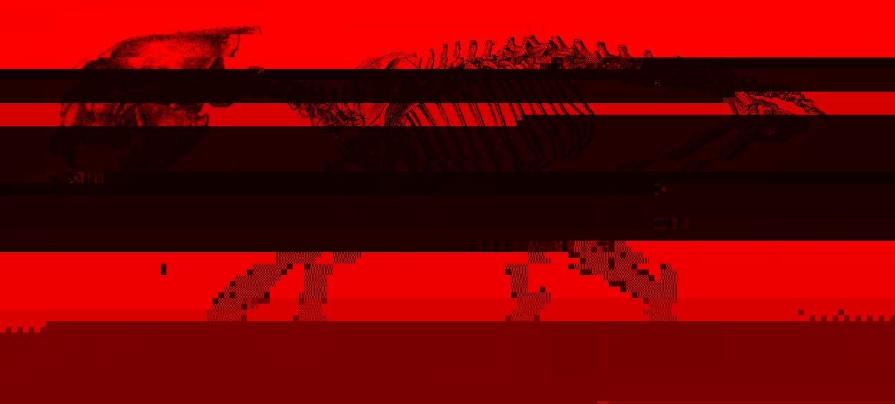

<!DOCTYPE html>
<html lang="en">
<head>
    <meta charset="UTF-8">
    <title>BROKEN/HEIR Arc</title>
    <meta name="viewport" content="width=device-width, initial-scale=1">
    <meta name="description" content="HIRE ROLLERS MATERIAL 1.0: " BROKEN/HEIR " [RUNNING DRAFT] Scene starts part-way through, a NOVARON™ Asset in combination Green A-VELD Powered armour (small-visored helmet, arm and leg supports, no chestplate) with a standard tactical webbing rig and JOSEPH (in his dark grey helmet, cuirass and leg/boot plating) are standing opposite each other in a ruined office, looking about 20 years ">
    <link rel="stylesheet" href="theme.css">
    <style>
    
@font-face {   font-family: 'Caveat';   font-style: normal;   font-weight: 400;   font-display: swap;   src: url(https://fonts.gstatic.com/s/caveat/v18/WnznHAc5bAfYB2QRah7pcpNvOx-pjfJ9SII.ttf) format('truetype'); } 
.normal_text {
font-family: Arial;
font-size: 11.0PT;
color: #000000;
line-height: 1.15;
direction: ltr;
}
h1 {
font-size: 20.0PT;
padding-top: 20.0PT;
padding-bottom: 6.0PT;
direction: ltr;
}
h2 {
font-size: 16.0PT;
padding-top: 18.0PT;
padding-bottom: 6.0PT;
direction: ltr;
}
h3 {
font-size: 14.0PT;
color: #434343;
padding-top: 16.0PT;
padding-bottom: 4.0PT;
direction: ltr;
}
h4 {
font-size: 12.0PT;
color: #666666;
padding-top: 14.0PT;
padding-bottom: 4.0PT;
direction: ltr;
}
h5 {
font-size: 11.0PT;
color: #666666;
padding-top: 12.0PT;
padding-bottom: 4.0PT;
direction: ltr;
}
h6 {
font-family: Georgia;
font-weight: bold;
text-decoration-line: underline;
direction: ltr;
}
.title {
font-size: 26.0PT;
padding-bottom: 3.0PT;
direction: ltr;
}
.subtitle {
font-family: Arial;
font-size: 15.0PT;
color: #666666;
padding-bottom: 16.0PT;
direction: ltr;
}


    </style>
</head>
<body>
<header>
    <div class="hamburger-menu" onclick="toggleMenu()">
        <span></span>
        <span></span>
        <span></span>
    </div>
    <nav>
    <ul>
        <li><a href="index.html">BROKEN/HEIR Arc</a></li>
    </ul>
    </nav>
</header>
<div class="content"clear: both; overflow: auto; ">
<div style="clear: both;">&nbsp;</div><br><p class="normal_text" style='line-height: 1.0; direction: ltr; '><span style='font-family: Georgia; color: #00000a; '>HIRE ROLLERS
</span></p><p class="normal_text" style='line-height: 1.0; direction: ltr; '><span style='font-family: Georgia; color: #00000a; '>MATERIAL 1.0: "</span><span style='font-family: Georgia; color: #00000a; '><strong>BROKEN/HEIR</strong></span><span style='font-family: Georgia; color: #00000a; '>" [RUNNING DRAFT] 
</span></p><h6 style='line-height: 1.0; direction: ltr; '><span style=''>“Dredge Falsepalm”
</span></h6><p class="normal_text" style='line-height: 1.0; direction: ltr; '><span style='font-family: Georgia; color: #00000a; '>Scene starts part-way through, a NOVARON™ Asset in combination Green A-VELD Powered armour (small-visored helmet, arm and leg supports, no chestplate) with a standard tactical webbing rig and JOSEPH (in his dark grey helmet, cuirass and leg/boot plating) are standing opposite each other in a ruined office, looking about 20 years out of use, North-eastern Sycronis, lots of tainted white décor and cracked plaster. The floor is strewn on the Asset’s side with empty casings and magazines, both the Assets's assault rifle and Joseph's freebarrel (just think a Revolver but different, boxy) have smoking barrels, 6 bullet holes on the asset’s side, 4 on the walls behind him and 2 on a flipped desk infront, the Asset’s rifle clicks, empty, both parties are panting under their breath. 
</span></p><p class="normal_text" style='line-height: 1.0; direction: ltr; '><span style='font-family: Georgia; color: #00000a; '><em>The Asset lowers his gun
</em></span></p><p class="normal_text" style='line-height: 1.0; direction: ltr; '><span style='font-family: Georgia; color: #00000a; background-color: #00ff00; '>ASSET: So… I counted </span><span style='font-family: Georgia; color: #00000a; background-color: #00ff00; '><em>6</em></span><span style='font-family: Georgia; color: #00000a; background-color: #00ff00; '> </span><span style='font-family: Georgia; color: #00000a; background-color: #00ff00; '><em>shots</em></span><span style='font-family: Georgia; color: #00000a; background-color: #00ff00; '> from your freebarrel, we’re both empty.</span><span style='font-family: Georgia; color: #00000a; '>
</span></p><p class="normal_text" style='line-height: 1.0; direction: ltr; '><span style='font-family: Georgia; color: #00000a; background-color: #ffff00; '>JOSEPH: I’m surprised you had that many mags.</span><br><span style='font-family: Georgia; color: #00000a; background-color: #00ff00; '>ASSET: I’m surprised you only had one case.
</span></p><p class="normal_text" style='line-height: 1.0; direction: ltr; '><span style='font-family: Georgia; color: #00000a; '><em>Joseph shrugs with his freebarrel loosely in left hand</em></span><br><span style='font-family: Georgia; color: #00000a; background-color: #ffff00; '>JOSEPH: It’s all I need. </span><br><span style='font-family: Georgia; color: #00000a; background-color: #00ff00; '>ASSET: Apparently not.
</span></p><p class="normal_text" style='line-height: 1.0; direction: ltr; '><span style='font-family: Georgia; color: #00000a; '><em>He feigns nervousness to a stiff delivery
</em></span></p><p class="normal_text" style='line-height: 1.0; direction: ltr; '><span style='font-family: Georgia; color: #00000a; background-color: #ffff00; '>JOSEPH: Uheh…</span><span style='font-family: Georgia; color: #00000a; '>
</span></p><p class="normal_text" style='line-height: 1.0; direction: ltr; '><span style='font-family: Georgia; color: #00000a; background-color: #00ff00; '>ASSET: Look. I think we can work this out. you managed to take out everyone else in this building, so I can only assume you’re capable, those 6 were uh, flukes? Let’s just give eachother some amnesty and walk away from this, take different routes, deal?</span><span style='font-family: Georgia; color: #00000a; '>
</span></p><p class="normal_text" style='line-height: 1.0; direction: ltr; '><span style='font-family: Georgia; color: #00000a; '><em>JOSEPH does not respond initially, glaring right through his opaque-tinted visors
</em></span></p><p class="normal_text" style='line-height: 1.0; direction: ltr; '><span style='font-family: Georgia; color: #00000a; background-color: #00ff00; '>ASSET: Uh… We cool?</span><span style='font-family: Georgia; color: #00000a; '>
</span></p><p class="normal_text" style='line-height: 1.0; direction: ltr; '><span style='font-family: Georgia; color: #00000a; '>A long beat, Joseph pierces through triumphantly
</span></p><p class="normal_text" style='line-height: 1.0; direction: ltr; '><span style='font-family: Georgia; color: #00000a; background-color: #ffff00; '>JOSEPH: A-HAH!</span><span style='font-family: Georgia; color: #00000a; '><em>JOSEPH flings into an aiming stance, If the camera could see his face it would’ve lit up with a manic smile</em></span><span style='font-family: Georgia; color: #00000a; background-color: #ffff00; '><em>
</em></span></p><p class="normal_text" style='line-height: 1.0; direction: ltr; '><span style='font-family: Georgia; color: #00000a; background-color: #00ff00; '>ASSET: THE FUCK?</span><span style='font-family: Georgia; color: #00000a; '><em>JOSEPH changes to the next chamber, locks
</em></span></p><p class="normal_text" style='line-height: 1.0; direction: ltr; '><span style='font-family: Georgia; color: #00000a; background-color: #ffff00; '>JOSEPH: DID YOU NOT EVEN CHECK THE CASE PROPERLY? THIS </span><span style='font-family: Georgia; color: #00000a; background-color: #ffff00; '><em><strong>ISN’T</strong></em></span><span style='font-family: Georgia; color: #00000a; background-color: #ffff00; '> A 6-HOLD.</span><span style='font-family: Georgia; color: #00000a; '>
</span></p><p class="normal_text" style='line-height: 1.0; direction: ltr; '><span style='font-family: Georgia; color: #00000a; background-color: #00ff00; '>ASSET:[stammering] WH-WHAT? YOU MEAN-?</span><span style='font-family: Georgia; color: #00000a; '>
</span></p><p class="normal_text" style='line-height: 1.0; direction: ltr; '><span style='font-family: Georgia; color: #00000a; background-color: #ffff00; '>JOSEPH: THAT’S RIGHT. ONE IN THE CHAMBER.</span><span style='font-family: Georgia; color: #00000a; '>
</span></p><p class="normal_text" style='line-height: 1.0; direction: ltr; '><span style='font-family: Georgia; color: #00000a; background-color: #00ff00; '>ASSET: GODS [the asset raises his rifle above his head] FUCKING [throws rifle down with excessive force, the stock and the sight both snap off and bounce back up as it hits the ground] DAMNIT.</span><span style='font-family: Georgia; color: #00000a; '>
</span></p><p class="normal_text" style='line-height: 1.0; direction: ltr; '><span style='font-family: Georgia; color: #00000a; '><em>The Asset recomposes himself, sighing, hands up
</em></span></p><p class="normal_text" style='line-height: 1.0; direction: ltr; '><span style='font-family: Georgia; color: #00000a; background-color: #00ff00; '>ASSET: Okay… What do you want?</span><span style='font-family: Georgia; color: #00000a; '>
</span></p><p class="normal_text" style='line-height: 1.0; direction: ltr; '><span style='font-family: Georgia; color: #00000a; background-color: #ffff00; '>JOSEPH: I WANT YOU TO TALK. </span><span style='font-family: Georgia; color: #00000a; background-color: #ffff00; '><em>WHERE IS THE TOMB OF THE LAST HEIR?
</em></span></p><p class="normal_text" style='line-height: 1.0; direction: ltr; '><span style='font-family: Georgia; color: #00000a; '><em>The Asset stammers in disbelief 
</em></span></p><p class="normal_text" style='line-height: 1.0; direction: ltr; '><span style='font-family: Georgia; color: #00000a; background-color: #00ff00; '>ASSET: THE LAST HEIR? H-HE’S BURIED OUT IN THE LINDAL CAVES, SOUTH OF MALBERK
</span></p><p class="normal_text" style='line-height: 1.0; direction: ltr; '><span style='font-family: Georgia; color: #00000a; '><em>a pause
</em></span></p><p class="normal_text" style='line-height: 1.0; direction: ltr; '><span style='font-family: Georgia; color: #00000a; background-color: #ffff00; '>JOSEPH: Thank you, was that so hard?</span><span style='font-family: Georgia; color: #00000a; '> 
</span></p><p class="normal_text" style='line-height: 1.0; direction: ltr; '><span style='font-family: Georgia; color: #00000a; '><em>The Asset shakes his head slowly
</em></span></p><p class="normal_text" style='line-height: 1.0; direction: ltr; '><span style='font-family: Georgia; color: #00000a; background-color: #ffff00; '>JOSEPH: Bonus round:&nbsp;&nbsp;Who’s contracting you for this?</span><br><span style='font-family: Georgia; color: #00000a; background-color: #00ff00; '>ASSET: [a pause, the Asset takes on a dire tone] NOVARON, I’M JUST A FIRST RECON CONSULTANT.</span><span style='font-family: Georgia; color: #00000a; '>
</span></p><p class="normal_text" style='line-height: 1.0; direction: ltr; '><span style='font-family: Georgia; color: #00000a; background-color: #ffff00; '>JOSEPH: Okay then, that’s… All I needed to know. I will leave you to go free, but I suggest you hang tight for a while. 
</span></p><p class="normal_text" style='line-height: 1.0; direction: ltr; '><span style='font-family: Georgia; color: #00000a; '>JOSEPH</span><span style='font-family: Georgia; color: #00000a; '><em> lowers his gun</em></span><span style='font-family: Georgia; color: #00000a; '><em>
</em></span></p><p class="normal_text" style='line-height: 1.0; direction: ltr; '><span style='font-family: Georgia; color: #00000a; background-color: #00ff00; '>ASSET: Whatever you say, man</span><span style='font-family: Georgia; color: #00000a; '> 
</span></p><p class="normal_text" style='line-height: 1.0; direction: ltr; '><span style='font-family: Georgia; color: #00000a; '><em>The Asset lowers his hands, sighs in relief</em></span><span style='font-family: Georgia; color: #00000a; '><em>as Joseph is walking away, he barks something back to the Asset, leisurely spinning the freebarrel in his left hand, projecting his voice
</em></span></p><p class="normal_text" style='line-height: 1.0; direction: ltr; '><span style='font-family: Georgia; color: #00000a; background-color: #ffff00; '>JOSEPH: I hope for your sake we never meet again!</span><span style='font-family: Georgia; color: #00000a; '>
</span></p><p class="normal_text" style='line-height: 1.0; direction: ltr; '><span style='font-family: Georgia; color: #00000a; '><em>JOSEPH leaves the way he came in, via the stairs, doors close behind him
</em></span></p><p class="normal_text" style='line-height: 1.0; direction: ltr; '><span style='font-family: Georgia; color: #00000a; '><u><strong>End of scene
</strong></u></span></p><p class="normal_text" style='line-height: 1.0; direction: ltr; '><span style='font-family: Georgia; color: #00000a; '>
</span></p><p class="normal_text" style='line-height: 1.0; direction: ltr; '><span style='font-family: Georgia; color: #00000a; '><em>The sun is not far off the horizon, giving the exterior a warm orange tinting; JOSEPH is seen exiting the derelict complex through the front door, </em></span><span style='font-family: Georgia; color: #00000a; '><em><strong>taking a depleted case out of his freebarrel, shaking 6 casings out of it, the 7</strong></em></span><span style='font-family: Georgia; color: #00000a; '><em><strong>th</strong></em></span><span style='font-family: Georgia; color: #00000a; '><em><strong> chamber was empty the whole time.</strong></em></span><span style='font-family: Georgia; color: #00000a; '><em> A shiny pickup truck is waiting for him; RYLE is at the wheel, in casual wear, a pair of wide sunglasses and a freshly gelled hairdo. The unnamed sniper rifle is in the passenger seat, leaning upwards with a seatbelt around it. Low-footprint ambience is playing, starting shortly after he closes the office building door
</em></span></p><p class="normal_text" style='line-height: 1.0; direction: ltr; '><span style='font-family: Georgia; color: #00000a; '><em>Ryle was listening to a pirate radio broadcast before Joseph got in, and quickly turns it off before he can catch it: "SCRN scaneband" Joseph coldy gives out an order
</em></span></p><p class="normal_text" style='line-height: 1.0; direction: ltr; '><span style='font-family: Georgia; color: #00000a; background-color: #ffff00; '>JOSEPH: Start to pull away, pop the back window</span><span style='font-family: Georgia; color: #00000a; '>
</span></p><p class="normal_text" style='line-height: 1.0; direction: ltr; '><span style='font-family: Georgia; color: #00000a; background-color: #00ffff; '>RYLE: Sure thing, wait- the back window panel?.</span><span style='font-family: Georgia; color: #00000a; '>
</span></p><p class="normal_text" style='line-height: 1.0; direction: ltr; '><span style='font-family: Georgia; color: #00000a; background-color: #ffff00; '>JOSEPH: Just do it. 
</span></p><p class="normal_text" style='line-height: 1.0; direction: ltr; '><span style='font-family: Georgia; color: #00000a; '><em>JOSEPH gets in, grabbing the sniper and sliding through the unlocked flap into the back, the truck starts moving
</em></span></p><p class="normal_text" style='line-height: 1.0; direction: ltr; '><span style='font-family: Georgia; color: #00000a; background-color: #ffff00; '>JOSEPH:Drive steady.</span><span style='font-family: Georgia; color: #00000a; '>
</span></p><p class="normal_text" style='line-height: 1.0; direction: ltr; '><span style='font-family: Georgia; color: #00000a; '><em>JOSEPH climbs onto the roof while it’s in motion; he steadies his aim, upwards, towards the office
</em></span></p><p class="normal_text" style='line-height: 1.0; direction: ltr; '><span style='font-family: Georgia; color: #00000a; background-color: #00ffff; '>RYLE: Uh, Joe what the FUCK are you doing on the roof? Do you know how heavy that armour we-</span><span style='font-family: Georgia; color: #00000a; '>
</span></p><p class="normal_text" style='line-height: 1.0; direction: ltr; '><span style='font-family: Georgia; color: #00000a; '><em>A trigger is pulled, music halts. RYLE stops mid-query. A shadow could possibly be seen falling down in the windowed room he was last seen in in the distance
</em></span></p><p class="normal_text" style='line-height: 1.0; direction: ltr; '><span style='font-family: Georgia; color: #00000a; background-color: #00ffff; '>RYLE: Uh…
</span></p><p class="normal_text" style='line-height: 1.0; direction: ltr; '><span style='font-family: Georgia; color: #00000a; '><em> JOSEPH slides back in the truck from the open window, positions himself in the passenger seat, clears his throat
</em></span></p><p class="normal_text" style='line-height: 1.0; direction: ltr; '><span style='font-family: Georgia; color: #00000a; background-color: #ffff00; '>JOSEPH: He spilt NOVARON info, they would’ve done far worse had he come back alive, what with all the bugs on his mags. </span><span style='font-family: Georgia; color: #00000a; '> 
</span></p><p class="normal_text" style='line-height: 1.0; direction: ltr; '><span style='font-family: Georgia; color: #00000a; background-color: #00ffff; '>RYLE: Oh! O-kay then Boss. [a pause] So… What was it you needed?
</span></p><p class="normal_text" style='line-height: 1.0; direction: ltr; '><span style='font-family: Georgia; color: #00000a; background-color: #ffff00; '>JOSEPH: Don’t worry about it. And don’t call me “Joe”</span><span style='font-family: Georgia; color: #00000a; '>
</span></p><p class="normal_text" style='line-height: 1.0; direction: ltr; '><span style='font-family: Georgia; color: #00000a; '><em>Camera behind truck, </em></span><span style='font-family: Georgia; color: #00000a; '><u><em><strong>end of scene</strong></em></u></span><span style='font-family: Georgia; color: #00000a; '><em>
</em></span></p><p class="normal_text" style='line-height: 1.0; direction: ltr; '><span style='font-family: Georgia; color: #00000a; '>
</span></p><p class="normal_text" style='line-height: 1.0; direction: ltr; '><span style='font-family: Georgia; color: #00000a; '>
</span></p><p class="normal_text" style='line-height: 1.0; direction: ltr; '><span style='font-family: Georgia; color: #00000a; '>
</span></p><h6 style='line-height: 1.0; direction: ltr; '><span style=''>The Roofs
</span></h6><p class="normal_text" style='line-height: 1.0; direction: ltr; '><span style='font-family: Georgia; color: #00000a; '>
</span></p><p class="normal_text" style='line-height: 1.0; direction: ltr; '><span style='font-family: Georgia; color: #00000a; '><em>Scene opens on Joseph (fed up, Mediterranean tan, scar down left eye, slicked back hair, dark, you know the deal) , </em></span><span style='font-family: Georgia; color: #00000a; '><em><strong>Blake</strong></em></span><span style='font-family: Georgia; color: #00000a; '><em> (first appearance in core series, the deep blue adorned operator with a scarf draped around his armoured collar, short black hair, rectangular half-frame glasses), and </em></span><span style='font-family: Georgia; color: #00000a; '><em><strong>Null</strong></em></span><span style='font-family: Georgia; color: #00000a; '><em> (first appearance in core series, the mysterious red, black and silver adorned demolitions expert, shining gold visor), all entering the heavy, stone exterior bar, all in full armour (apart from Joseph and Blakes helmets, which are hanging off their hips), a common sight in this part of Dermil
</em></span></p><p class="normal_text" style='line-height: 1.0; direction: ltr; '><span style='font-family: Georgia; color: #00000a; '><em>The chrome-lined darkwood furnishings of the bar within shined against the varying kinds of diode, gas tube and filament lights occupying the establishment, booths all walled off from eachother to provide privacy to each group. a sharp dressed, aged man in the corner booth is smoking a thin cigarette against a vent port on his neck, his inhaling lights up his worn subcutaneous throat implant with a dash of yellow light, Joseph taps the table with the side of his hand to get his attention 
</em></span></p><p class="normal_text" style='line-height: 1.0; direction: ltr; '><span style='font-family: Georgia; color: #00000a; background-color: #00ff00; '>JOSEPH</span><span style='font-family: Georgia; color: #00000a; background-color: #00ff00; '>: We’re here on the “recovery” job you need help on, Joseph Bayrahn.
</span></p><p class="normal_text" style='line-height: 1.0; direction: ltr; '><span style='font-family: Georgia; color: #00000a; '><em>He extends a gauntlet, it is not met with an open hand, The smoker scratches through his reply in a mechanically assisted tone after adjusting his hat
</em></span></p><p class="normal_text" style='line-height: 1.0; direction: ltr; '><span style='font-family: Georgia; color: #00000a; background-color: #ffff00; '>OLD SMOKER</span><span style='font-family: Georgia; color: #00000a; background-color: #ffff00; '>: I know who you are, you weren’t required to touch in before the op
</span></p><p class="normal_text" style='line-height: 1.0; direction: ltr; '><span style='font-family: Georgia; color: #00000a; background-color: #00ff00; '>JOSEPH:We just needed a little more information, you said you know whos moving it,and what IT is, but we don’t.
</span></p><p class="normal_text" style='line-height: 1.0; direction: ltr; '><span style='font-family: Georgia; color: #00000a; '><em>The slightly fed up man. entrenched in his corner, sighs, before unloading this veritable dossier of memorised intel
</em></span></p><p class="normal_text" style='line-height: 1.0; direction: ltr; '><span style='font-family: Georgia; color: #00000a; background-color: #ffff00; '>OLD SMOKER</span><span style='font-family: Georgia; color: #00000a; background-color: #ffff00; '>: You’ll know what it is when you see it, it’s about as big as a breadbox, and your courier? The Steelback appears to be handling your cargo, he’s running topside from the station to the docks for pickup by a Silent Wave which departs at about... 1530
</span></p><p class="normal_text" style='line-height: 1.0; direction: ltr; '><span style='font-family: Georgia; color: #00000a; '><em>as the smoker rattles through this rather extensive information josephs face begins to look puzzled, his shoulder is grabbed by Blake</em></span><span style='font-family: Georgia; color: #00000a; '>
</span></p><p class="normal_text" style='line-height: 1.0; direction: ltr; '><span style='font-family: Georgia; color: #00000a; background-color: #4a86e8; '>BLAKE: It’s almost 3, Bayrahn we need to MOVE
</span></p><p class="normal_text" style='line-height: 1.0; direction: ltr; '><span style='font-family: Georgia; color: #00000a; '>J, B and N turn and hurry outside, their collective bulk in the enclosed space causing quite a racket of motors and suspension
</span></p><p class="normal_text" style='line-height: 1.0; direction: ltr; '><span style='font-family: Georgia; color: #00000a; background-color: #00ff00; '>JOSEPH: Fuck it! we’ll plan outside
</span></p><p class="normal_text" style='line-height: 1.0; direction: ltr; '><span style='font-family: Georgia; color: #00000a; '><em>He shouts back to the smoker
</em></span></p><p class="normal_text" style='line-height: 1.0; direction: ltr; '><span style='font-family: Georgia; color: #00000a; background-color: #00ff00; '>JOSEPH: AND WE’LL BE BACK HERE WITH THAT THING
</span></p><p class="normal_text" style='line-height: 1.0; direction: ltr; '><span style='font-family: Georgia; color: #00000a; '><strong>-Dermil Streets, 3pm-</strong></span><span style='font-family: Georgia; color: #00000a; '>
</span></p><p class="normal_text" style='line-height: 1.0; direction: ltr; '><span style='font-family: Georgia; color: #00000a; background-color: #4a86e8; '>BLAKE: So, we got a time that the&nbsp;&nbsp;gear’s being run, half an hour from now… his direct routes about a few hun metres away, slashing right from the station to the dock, across the rooftops
</span></p><p class="normal_text" style='line-height: 1.0; direction: ltr; '><span style='font-family: Georgia; color: #00000a; background-color: #00ff00; '>JOSEPH: we need to intercept from a secure roof with good visibility, we </span><span style='font-family: Georgia; color: #00000a; background-color: #00ff00; '><em>need</em></span><span style='font-family: Georgia; color: #00000a; background-color: #00ff00; '> to shoot the courier down
</span></p><p class="normal_text" style='line-height: 1.0; direction: ltr; '><span style='font-family: Georgia; color: #00000a; '><em>Null raises their grenade launcher, Joseph pushes it back down, they are all still walking 
</em></span></p><p class="normal_text" style='line-height: 1.0; direction: ltr; '><span style='font-family: Georgia; color: #00000a; background-color: #00ff00; '>JOSEPH: </span><span style='font-family: Georgia; color: #00000a; background-color: #00ff00; '><strong>With</strong></span><span style='font-family: Georgia; color: #00000a; background-color: #00ff00; '> the piece intact
</span></p><p class="normal_text" style='line-height: 1.0; direction: ltr; '><span style='font-family: Georgia; color: #00000a; '><em>Null stows the launcher, before slapping the back of Joseph’s shoulder, then holding the other hand open in an expectant manner. Joseph unclasps a comparatively small pistol from his hip and dunks it into the beggar’s palm, Null sulks their heavily adorned shoulders down.</em></span><span style='font-family: Georgia; color: #00000a; '>
</span></p><p class="normal_text" style='line-height: 1.0; direction: ltr; '><span style='font-family: Georgia; color: #00000a; background-color: #00ff00; '>JOSEPH: Beggars can’t be choosers
</span></p><p class="normal_text" style='line-height: 1.0; direction: ltr; '><span style='font-family: Georgia; color: #00000a; '>
</span></p><p class="normal_text" style='line-height: 1.0; direction: ltr; '><span style='font-family: Georgia; color: #00000a; '>Hard cut to the team walking up the last ramp in a tall multi-storey carpark, but shiny and fancylike, white walls, pure black flooring, fresh road markings, a fire escape is seen across from the ledge, going higher
</span></p><p class="normal_text" style='line-height: 1.0; direction: ltr; '><span style='font-family: Georgia; color: #00000a; background-color: #4a86e8; '>BLAKE: get ready to jump, folks. Bunch those motors. 
</span></p><p class="normal_text" style='line-height: 1.0; direction: ltr; '><span style='font-family: Georgia; color: #00000a; background-color: #00ff00; '>JOSEPH:You sure up there’s good vantage? It might get obscured by the roof-slums
</span></p><p class="normal_text" style='line-height: 1.0; direction: ltr; '><span style='font-family: Georgia; color: #00000a; background-color: #4a86e8; '>BLAKE: those are still a thing</span><span style='font-family: Georgia; color: #00000a; '>? 
</span></p><p class="normal_text" style='line-height: 1.0; direction: ltr; '><span style='font-family: Georgia; color: #00000a; background-color: #00ff00; '>JOSEPH: of course, they're just a bit more legitimate now</span><span style='font-family: Georgia; color: #00000a; '>. 
</span></p><p class="normal_text" style='line-height: 1.0; direction: ltr; '><span style='font-family: Georgia; color: #00000a; background-color: #4a86e8; '>BLAKE: Shit, do you think someone theres selling point 5 frame adjusts</span><span style='font-family: Georgia; color: #00000a; '>? 
</span></p><p class="normal_text" style='line-height: 1.0; direction: ltr; '><span style='font-family: Georgia; color: #00000a; background-color: #00ff00; '>JOSEPH: Maybe after we get paid for this</span><span style='font-family: Georgia; color: #00000a; '>. 
</span></p><p class="normal_text" style='line-height: 1.0; direction: ltr; '><span style='font-family: Georgia; color: #00000a; '><em>Null is the first to leap towards the ladder, then Blake, then Joseph, cut to the rooftop, big, sweeping skyline. everyone is clacking guns out in anticipation
</em></span></p><p class="normal_text" style='line-height: 1.0; direction: ltr; '><span style='font-family: Georgia; color: #00000a; '><em>suddenly, a burst of red over a rooftop below
</em></span></p><p class="normal_text" style='line-height: 1.0; direction: ltr; '><span style='font-family: Georgia; color: #00000a; '><em>He is running, in a rather exaggerated manner, elbows at right angles, flat hands going straight up with each stride, The Steelback darts under a pole-propped tarp
</em></span></p><p class="normal_text" style='line-height: 1.0; direction: ltr; '><span style='font-family: Georgia; color: #00000a; '><em>Bayrahn fires a shot just as the steelback is halfway between the edge of the roof and the next enveloping tarp, a miss
</em></span></p><p class="normal_text" style='line-height: 1.0; direction: ltr; '><span style='font-family: Georgia; color: #00000a; background-color: #00ff00; '>JOSPEH: TRACK HIM! TRACK! 
</span></p><p class="normal_text" style='line-height: 1.0; direction: ltr; '><span style='font-family: Georgia; color: #00000a; '><em>Null haphazardly lets off a bunch of pistol rounds, jamming it in the process, before punching the knee-high wall they’re against, clearly out of practice with small arms
</em></span></p><p class="normal_text" style='line-height: 1.0; direction: ltr; '><span style='font-family: Georgia; color: #00000a; background-color: #4a86e8; '>B:He's gone! 
</span></p><p class="normal_text" style='line-height: 1.0; direction: ltr; '><span style='font-family: Georgia; color: #00000a; '><em>The steelback fwips under a piece of tarp, the roofslums nestled between the looming corp monoliths
</em></span></p><p class="normal_text" style='line-height: 1.0; direction: ltr; '><span style='font-family: Georgia; color: #00000a; '><em>Null disappears, hopping down into the concrete and glass abyss, running after him
</em></span></p><p class="normal_text" style='line-height: 1.0; direction: ltr; '><span style='font-family: Georgia; color: #00000a; background-color: #00ff00; '><em>JOSEPH: Why do they always run…
</em></span></p><p class="normal_text" style='line-height: 1.0; direction: ltr; '><span style='font-family: Georgia; color: #00000a; '><em>Joseph, stowing his rifle, runs parallel across the higher-up roof before jumping down, right into the markets, Blake continuing across higher ground, presumably as a spotter
</em></span></p><p class="normal_text" style='line-height: 1.0; direction: ltr; '><span style='font-family: Georgia; color: #00000a; '><em>with a running land he attempts to re-orientate, shoving past an endangered meats stall, shouting the name he was told
</em></span></p><p class="normal_text" style='line-height: 1.0; direction: ltr; '><span style='font-family: Georgia; color: #00000a; background-color: #00ff00; '>JOSEPH: STEELBAAACK! STOP RIGHT THERE!
</span></p><p class="normal_text" style='line-height: 1.0; direction: ltr; '><span style='font-family: Georgia; color: #00000a; '><em>A barked reply from the distance, Joseph bumps past a clattering rack of plating
</em></span></p><p class="normal_text" style='line-height: 1.0; direction: ltr; '><span style='font-family: Georgia; color: #00000a; background-color: #ff0000; '>STEELBACK: NO CHANCE, BIG GUY
</span></p><p class="normal_text" style='line-height: 1.0; direction: ltr; '><span style='font-family: Georgia; color: #00000a; '><em>Joseph snapfires his rifle, mainly upwards, since the markets somewhat packed, The Steelback ahead, with a wild, white-black mohawk bouncing up and down with his stride, his long, trailing red leather jacket scraping against the floor
</em></span></p><p class="normal_text" style='line-height: 1.0; direction: ltr; '><span style='font-family: Georgia; color: #00000a; background-color: #ff0000; '>STEELBACK:HEY, WATCH THE CROWD!. 
</span></p><p class="normal_text" style='line-height: 1.0; direction: ltr; '><span style='font-family: Georgia; color: #00000a; '><em>Blake touches in via comm
</em></span></p><p class="normal_text" style='line-height: 1.0; direction: ltr; '><span style='font-family: Georgia; color: #00000a; background-color: #4a86e8; '>BLAKE:There's an opening in the tarps a few ye’ ahead, just keep him distracted while running 
</span></p><p class="normal_text" style='line-height: 1.0; direction: ltr; '><span style='font-family: Georgia; color: #00000a; background-color: #00ff00; '>JOSEPH: Keep shooting? Sure. 
</span></p><p class="normal_text" style='line-height: 1.0; direction: ltr; '><span style='font-family: Georgia; color: #00000a; '><em>Joseph, still running, almost gets jumped by Null, who was lying in wait between 2 competing COMMlink vendors, at the wrong time
</em></span></p><p class="normal_text" style='line-height: 1.0; direction: ltr; '><span style='font-family: Georgia; color: #00000a; background-color: #00ff00; '>JOSEPH:heyheyhey! Just keep running 
</span></p><p class="normal_text" style='line-height: 1.0; direction: ltr; '><span style='font-family: Georgia; color: #00000a; '><em>A distorted scowl beams through the purposefully broken speaker, they are both picking up the pace
</em></span></p><p class="normal_text" style='line-height: 1.0; direction: ltr; '><span style='font-family: Georgia; color: #00000a; background-color: #4a86e8; '>BLAKE:Im making a shot 
</span></p><p class="normal_text" style='line-height: 1.0; direction: ltr; '><span style='font-family: Georgia; color: #00000a; background-color: #00ff00; '>JOSEPH:NOT THE FRONT, his bag’s there
</span></p><p class="normal_text" style='line-height: 1.0; direction: ltr; '><span style='font-family: Georgia; color: #00000a; background-color: #4a86e8; '>BLAKE:Fine, the back
</span></p><p class="normal_text" style='line-height: 1.0; direction: ltr; '><span style='font-family: Georgia; color: #00000a; '><em>A crossbow bolt is thrown, arcing downwards, it plinks off the courier’s jacket, strange
</em></span></p><p class="normal_text" style='line-height: 1.0; direction: ltr; '><span style='font-family: Georgia; color: #00000a; background-color: #00ff00; '>JOSEPH:Did you… Understrap it? 
</span></p><p class="normal_text" style='line-height: 1.0; direction: ltr; '><span style='font-family: Georgia; color: #00000a; background-color: #4a86e8; '>BLAKE:No! That was more than enough pressure, fuck off!</span><span style='font-family: Georgia; color: #00000a; '> 
</span></p><p class="normal_text" style='line-height: 1.0; direction: ltr; '><span style='font-family: Georgia; color: #00000a; '><em>The steelback belts out triumphantly 
</em></span></p><p class="normal_text" style='line-height: 1.0; direction: ltr; '><span style='font-family: Georgia; color: #00000a; background-color: #ff0000; '>STEELBACK: PAH! YOUR BULLETS CANNOT HARM M-
</span></p><p class="normal_text" style='line-height: 1.0; direction: ltr; '><span style='font-family: Georgia; color: #00000a; '><em>A round stings through his mohawk, leaving a hole, cut back to null running with the borrowed pistol, he flinches, causing his orange half-framed sunglasses to jump up 
</em></span></p><p class="normal_text" style='line-height: 1.0; direction: ltr; '><span style='font-family: Georgia; color: #00000a; background-color: #ff0000; '>STEELBACK: BASTARD!
</span></p><p class="normal_text" style='line-height: 1.0; direction: ltr; '><span style='font-family: Georgia; color: #00000a; background-color: #00ff00; '>JOSEPY: Nice Shot, Suit
</span></p><p class="normal_text" style='line-height: 1.0; direction: ltr; '><span style='font-family: Georgia; color: #00000a; '><em>The Steelback shakes a fist up
</em></span></p><p class="normal_text" style='line-height: 1.0; direction: ltr; '><span style='font-family: Georgia; color: #00000a; background-color: #ff0000; '>STEELBACK:I'M NOT GONNA DROP THE CORE THAT EASY
</span></p><p class="normal_text" style='line-height: 1.0; direction: ltr; '><span style='font-family: Georgia; color: #00000a; background-color: #4a86e8; '>BLAKE:[Over comm] The What? 
</span></p><p class="normal_text" style='line-height: 1.0; direction: ltr; '><span style='font-family: Georgia; color: #00000a; background-color: #00ff00; '>JOSEPH: THE WHAT? 
</span></p><p class="normal_text" style='line-height: 1.0; direction: ltr; '><span style='font-family: Georgia; color: #00000a; '><em>A beat, silence with clanging footsteps 
</em></span></p><p class="normal_text" style='line-height: 1.0; direction: ltr; '><span style='font-family: Georgia; color: #00000a; background-color: #ff0000; '>STEELBACK: YOU… DON'T KNOW WHAT I'M CARRYING? 
</span></p><p class="normal_text" style='line-height: 1.0; direction: ltr; '><span style='font-family: Georgia; color: #00000a; '><em>The Steelback is distracted, he slips on a ledge, over his own trailing jacket, recovering with large, wild arm swinging
</em></span></p><p class="normal_text" style='line-height: 1.0; direction: ltr; '><span style='font-family: Georgia; color: #00000a; background-color: #ff0000; '>STEELBACK:SHIIIT!</span><span style='font-family: Georgia; color: #00000a; '> 
</span></p><p class="normal_text" style='line-height: 1.0; direction: ltr; '><span style='font-family: Georgia; color: #00000a; background-color: #00ff00; '>JOSEPH: JUST STOP ALREADY
</span></p><p class="normal_text" style='line-height: 1.0; direction: ltr; '><span style='font-family: Georgia; color: #00000a; '><em>He Jumps onto the next stretch of the run, the metal beams of the gasworks</em></span><br><span style='font-family: Georgia; color: #00000a; background-color: #ff0000; '>STEELBACK: NO WAY, </span><span style='font-family: Georgia; color: #00000a; background-color: #ff0000; '><strong>GETHA</strong></span><span style='font-family: Georgia; color: #00000a; background-color: #ff0000; '>
</span></p><p class="normal_text" style='line-height: 1.0; direction: ltr; '><span style='font-family: Georgia; color: #00000a; '><em>Blake scrambles to reposition, swinging off a pipe to cross a ledge in the process, he slaps the comm enable
</em></span></p><p class="normal_text" style='line-height: 1.0; direction: ltr; '><span style='font-family: Georgia; color: #00000a; background-color: #4a86e8; '>BLAKE: So… Whats the plan?</span><br><span style='font-family: Georgia; color: #00000a; background-color: #00ff00; '>JOSEPH: I’m going to SHOOT HIM with this HIGH-CIRC RIFLE, obviously
</span></p><p class="normal_text" style='line-height: 1.0; direction: ltr; '><span style='font-family: Georgia; color: #00000a; '><em>The Steelback is panting, his enthusiastic gait looking a bit ragged, turning his head slightly</em></span><span style='font-family: Georgia; color: #00000a; '>
</span></p><p class="normal_text" style='line-height: 1.0; direction: ltr; '><span style='font-family: Georgia; color: #00000a; background-color: #ff0000; '>STEELBACK: I HEARD THAT!
</span></p><p class="normal_text" style='line-height: 1.0; direction: ltr; '><span style='font-family: Georgia; color: #00000a; background-color: #00ff00; '>JOSEPH: YOU WERE SUPPOSED TO!
</span></p><p class="normal_text" style='line-height: 1.0; direction: ltr; '><span style='font-family: Georgia; color: #00000a; '><em>Null fires another unsolicited shot, missing the Steelback’s shoulder by a few inches, Joseph turns to them, disappoint glaring through his opaque visors, then looks ahead again 
</em></span></p><p class="normal_text" style='line-height: 1.0; direction: ltr; '><span style='font-family: Georgia; color: #00000a; '><em>the complex winding of the somewhat antiquated gasworks is met with obstructions and detours, including pipes that are slid down by the steelback on his plating, Bayrahn and company are growing tired
</em></span></p><p class="normal_text" style='line-height: 1.0; direction: ltr; '><span style='font-family: Georgia; color: #00000a; background-color: #4a86e8; '>BLAKE: HOW MUCH ARE THEY FUCKING PAYING YOU</span><br><span style='font-family: Georgia; color: #00000a; background-color: #ff0000; '>STEELBACK: ENOUGH TO RISK A RUN WITH YOU RUSTERS ON MY TAIL!
</span></p><p class="normal_text" style='line-height: 1.0; direction: ltr; '><span style='font-family: Georgia; color: #00000a; '><em>The steelback rips an odd revolving hand shotgun from his chest holster,he has no shirt on, just the holster, his jeans/boots and the jacket, turning half around to fire while awkwardly strafing, a stray pellet flecks Null’s dense chestplate, They pick up the pace, Joseph retorts
</em></span></p><p class="normal_text" style='line-height: 1.0; direction: ltr; '><span style='font-family: Georgia; color: #00000a; background-color: #00ff00; '>JOSEPH: WAS THAT SUPPOSED TO MISS?</span><br><span style='font-family: Georgia; color: #00000a; background-color: #ff0000; '>STEELBACK: SHUT UP!
</span></p><p class="normal_text" style='line-height: 1.0; direction: ltr; '><span style='font-family: Georgia; color: #00000a; '><em>Steelback turns forwards once again, noticing construction work ahead, octaped cranes are crawling across the buildings ahead,
</em></span></p><p class="normal_text" style='line-height: 1.0; direction: ltr; '><span style='font-family: Georgia; color: #00000a; background-color: #ff0000; '>STEELBACK: OHHH FUUUCK FUCK FUCK</span><br><span style='font-family: Georgia; color: #00000a; '><em>He improvises, slashing a dead electrical line with a knife fished out his boot, he swings onto the set of cranes
</em></span></p><p class="normal_text" style='line-height: 1.0; direction: ltr; '><span style='font-family: Georgia; color: #00000a; background-color: #4a86e8; '>BLAKE: GET BACK HERE
</span></p><p class="normal_text" style='line-height: 1.0; direction: ltr; '><span style='font-family: Georgia; color: #00000a; '><em>the closest crane turns to the gasworks, giving Joseph and Null a route, Blake has to jump down to climb back up a higher up roof set
</em></span></p><p class="normal_text" style='line-height: 1.0; direction: ltr; '><span style='font-family: Georgia; color: #00000a; '><em>stomping across the moving machines, the main 3 are watching their footing, but a long, straight line is established as the cranes stop due to the disruptive run
</em></span></p><p class="normal_text" style='line-height: 1.0; direction: ltr; '><span style='font-family: Georgia; color: #00000a; '><em>joseph, readying himself again, goes right for the courier’s back
</em></span></p><p class="normal_text" style='line-height: 1.0; direction: ltr; '><span style='font-family: Georgia; color: #00000a; background-color: #00ff00; '>JOSEPH: GOTCHA!
</span></p><p class="normal_text" style='line-height: 1.0; direction: ltr; '><span style='font-family: Georgia; color: #00000a; '><em><strong>1
</strong></em></span></p><p class="normal_text" style='line-height: 1.0; direction: ltr; '><span style='font-family: Georgia; color: #00000a; '><em><strong>2
</strong></em></span></p><p class="normal_text" style='line-height: 1.0; direction: ltr; '><span style='font-family: Georgia; color: #00000a; '><em><strong>3
</strong></em></span></p><p class="normal_text" style='line-height: 1.0; direction: ltr; '><span style='font-family: Georgia; color: #00000a; '><em>all connect, pinging off in wild directions,&nbsp;&nbsp;but still denting enough that he felt the punches, The Steelback lurches forwards in pain, still staggering forwards
</em></span></p><p class="normal_text" style='line-height: 1.0; direction: ltr; '><span style='font-family: Georgia; color: #00000a; background-color: #ff0000; '>STEELBACK: OUSH!
</span></p><p class="normal_text" style='line-height: 1.0; direction: ltr; '><span style='font-family: Georgia; color: #00000a; '><em>Joseph darts forwards, aiming for a tackle at the edge of&nbsp;&nbsp;the crane, but the Steelback has enough left in him to dodge to the right, leaving joseph falling onto the cranebed, his arms dangling off the edge, the steelback flees back to open roof, Null grabs Joseph back up by the back of his cuirass
</em></span></p><p class="normal_text" style='line-height: 1.0; direction: ltr; '><span style='font-family: Georgia; color: #00000a; '><em>they are nearing the docks, but there is a lot of open roof between then and now, the steelback leaps down after regaining enough distance, jacket spread in a flag of red, disappearing down a fire escape, a silver, yellow polymer accented box is abandoned on the ledge with one word swiped onto it in grease“YOURS”
</em></span></p><p class="normal_text" style='line-height: 1.0; direction: ltr; '><span style='font-family: Georgia; color: #00000a; '>[End]
</span></p><p class="normal_text" style='direction: ltr; '><span style='font-family: Georgia; '>
</span></p><h6 style='direction: ltr; '><span style=''>Ruegon House
</span></h6><p class="normal_text" style='direction: ltr; '><span style='font-family: Georgia; '><u><strong>
</strong></u></span></p><p class="normal_text" style='direction: ltr; '><span style='font-family: Georgia; '><strong>-Early AM: Syk base-
</strong></span></p><p class="normal_text" style='direction: ltr; '><span style='font-family: Georgia; '><em>Null (The always heavily armoured mute demolitionist who sleeps in a locked closet) is at a computer in the hub area, what they are typing is unknown, a green flash strikes their gold visor, mirrored
</em></span></p><p class="normal_text" style='direction: ltr; '><span style='font-family: Georgia; '><em>A direct job request
</em></span></p><p class="normal_text" style='direction: ltr; '><span style='font-family: Georgia; '><em>
</em></span></p><p class="normal_text" style='direction: ltr; '><span style='font-family: Georgia; '><em>Null is taken aback, grabbing a paper pad and pen, they start writing while walking with great conviction towards Joseph Bayrahn’s quarters
</em></span></p><p class="normal_text" style='direction: ltr; '><span style='font-family: Georgia; '><em>3 sharp knocks, more accurate to describe them as punches against the door though.
</em></span></p><p class="normal_text" style='direction: ltr; '><span style='font-family: Georgia; '><em>A groggy, but still fully dressed commander presents himself at the opened door half a minute of crashing around later
</em></span></p><p class="normal_text" style='direction: ltr; '><span style='font-family: Georgia; '><em>The pad is shown
</em></span></p><p class="normal_text" style='direction: ltr; '><span style='font-family: Georgia; '><em>“</em></span><span style='font-family: Caveat; '><em>You got a weird job req. Something about politics?</em></span><span style='font-family: Georgia; '><em>”
</em></span></p><p class="normal_text" style='direction: ltr; '><span style='font-family: Georgia; background-color: #00ff00; '>JOSEPH: [somewhat grumbling] What?!
</span></p><p class="normal_text" style='direction: ltr; '><span style='font-family: Georgia; '>-cut hard back to the “function hub” (it’s a grey kitchen/dining room container with a computer), a web-packet phonecall between a man with a rather southern US adjacent drawl and Joseph
</span></p><p class="normal_text" style='direction: ltr; '><span style='font-family: Georgia; '>MAN: You have listed skills similar to this op on your own profile, have you not?</span><span style='font-family: Georgia; background-color: #00ff00; '>JOSEPH: That profile was made 4 years ago, I was tacking on things I guessed I could do
</span></p><p class="normal_text" style='direction: ltr; '><span style='font-family: Georgia; '>MAN: So you can’t perform a successful plain clothes infiltration of an organisation?</span><span style='font-family: Georgia; background-color: #00ff00; '>JOSEPH: NO no no. I Absolutely can! I just need some time, and preferably a man on the inside to help instigate my identity-
</span></p><p class="normal_text" style='direction: ltr; '><span style='font-family: Georgia; '>MAN: I’m awfully sorry but i'm a busy man, Bayrahn</span><span style='font-family: Georgia; background-color: #00ff00; '>JOSEPH: So am I. Am I reading this correctly even? It says you’re setting me into the Sycronic Political campus
</span></p><p class="normal_text" style='direction: ltr; '><span style='font-family: Georgia; '>MAN: Yes, that is correct. You see, the political climate in the north has congealed. We need a shakeup, a scandal or two to loosen the barren roots.
</span></p><p class="normal_text" style='direction: ltr; '><span style='font-family: Georgia; background-color: #00ff00; '>JOSEPH: So I'm to be a troublemaker?</span><span style='font-family: Georgia; '>MAN: Not… necessarily. We would just like you to drag something out of the lazy senators of the north.
</span></p><p class="normal_text" style='direction: ltr; '><span style='font-family: Georgia; background-color: #00ff00; '>JOSEPH: Can you pay me in advance?</span><span style='font-family: Georgia; '>MAN: Nope. the agreed sum will be transferred once we make contact again after we can agree you’ve done your part.
</span></p><p class="normal_text" style='direction: ltr; '><span style='font-family: Georgia; background-color: #00ff00; '>JOSEPH: Alright, I tried. Can you atleast give me a name to take?</span><span style='font-family: Georgia; '>MAN:...No.The Man hangs up
</span></p><p class="normal_text" style='direction: ltr; '><span style='font-family: Georgia; background-color: #00ff00; '>JOSEPH: (Ahh fuck.)
</span></p><p class="normal_text" style='direction: ltr; '><span style='font-family: Georgia; '>Joseph turns to Null, a heavy shrug back says enough.
</span></p><p class="normal_text" style='direction: ltr; '><span style='font-family: Georgia; '><strong>-A Messy Law Office, The sun hanging down in a lazy Arkainian Peninsula desert morning-
</strong></span></p><p class="normal_text" style='direction: ltr; '><span style='font-family: Georgia; background-color: #00ff00; '>JOSEPH:...And that’s why I need you again
</span></p><p class="normal_text" style='direction: ltr; '><span style='font-family: Georgia; '>The camera drags towards Garret Ironside, sleazy Central Junelite (just think blonde cornrows, african-ish) Lawyer, in his purple pinstripe suit, looking rather unimpressed, biting the corner of the inside of his lip.
</span></p><p class="normal_text" style='direction: ltr; '><span style='font-family: Georgia; '>GARRET: To forge documents? Hang on i’ll get your picture-
</span></p><p class="normal_text" style='direction: ltr; '><span style='font-family: Georgia; background-color: #00ff00; '>JOSEPH: Wait. I need to… make some changes to my looks if I’m going to be believed as a </span><span style='font-family: Georgia; '>capital Sycronic deskrat
</span></p><p class="normal_text" style='direction: ltr; '><span style='font-family: Georgia; '>GARRET: What kinda changes? That scar down your eye is pretty drastic for a copier repair accident
</span></p><p class="normal_text" style='direction: ltr; '><span style='font-family: Georgia; background-color: #00ff00; '>JOSEPH:... Makeup</span><span style='font-family: Georgia; '>Garret breaks into light laughter following a “Pfft”
</span></p><p class="normal_text" style='direction: ltr; '><span style='font-family: Georgia; background-color: #00ff00; '>JOSEPH: What?
</span></p><p class="normal_text" style='direction: ltr; '><span style='font-family: Georgia; '>GARRET: Nothing, just don’t get any shit on my upholstery, I get paying clients in here… sometimes
</span></p><p class="normal_text" style='direction: ltr; '><span style='font-family: Georgia; '>Garret digs a scratched, but ornate mirror out of his drawer, and hands it to Joseph
</span></p><p class="normal_text" style='direction: ltr; '><span style='font-family: Georgia; '>-Scene cut, Joseph walks back in through a curtain from a backroom, shaved, scar hidden, face lightened, Garret is furiously typing on a weird, blocky PDA type device throughout-
</span></p><p class="normal_text" style='direction: ltr; '><span style='font-family: Georgia; background-color: #00ff00; '>JOSEPH: Okay, Ready for a picture now</span><span style='font-family: Georgia; '>Garret is taken aback
</span></p><p class="normal_text" style='direction: ltr; '><span style='font-family: Georgia; '>GARRET: Fucking shit you look… Different. </span><span style='font-family: Georgia; background-color: #00ff00; '>JOSEPH: What? That’s literally the point.
</span></p><p class="normal_text" style='direction: ltr; '><span style='font-family: Georgia; '>GARRET: You seriously clean up well, you should consider this makeup shit for every day
</span></p><p class="normal_text" style='direction: ltr; '><span style='font-family: Georgia; background-color: #00ff00; '>JOSEPH: Don’t make me even out your teeth by taking that other cuspid.
</span></p><p class="normal_text" style='direction: ltr; '><span style='font-family: Georgia; '><em>Garret shrinks</em></span><span style='font-family: Georgia; '>
</span></p><p class="normal_text" style='direction: ltr; '><span style='font-family: Georgia; '>GARRET: Sensitive topic
</span></p><p class="normal_text" style='direction: ltr; '><span style='font-family: Georgia; background-color: #00ff00; '>JOSEPH: Hah! I heard you whistling a tune through it the other month, why don’t you just get a stub?</span><span style='font-family: Georgia; '>GARRET: My folks don’t work like that, you should know that by now.
</span></p><p class="normal_text" style='direction: ltr; '><span style='font-family: Georgia; background-color: #00ff00; '>JOSEPH: eh, suit yourself.
</span></p><p class="normal_text" style='direction: ltr; '><span style='font-family: Georgia; '>GARRET: (eyes locked on the pda) YUSH! (a half-mangled old Junelite word)...Sorry. I got you an “in”. Your identity is to be Caleb Thorn and you will be running under the verdant party, The pass however just needs a smile
</span></p><p class="normal_text" style='direction: ltr; '><span style='font-family: Georgia; background-color: #00ff00; '>JOSEPH: What?</span><span style='font-family: Georgia; '>A [SNAP] catches a puzzled expression
</span></p><p class="normal_text" style='direction: ltr; '><span style='font-family: Georgia; '>GARRET: That… Will have to do.
</span></p><p class="normal_text" style='direction: ltr; '><span style='font-family: Georgia; '>A metal card is expelled from the thick pda, Garret twangs it with his thumb before passing it to Joseph
</span></p><p class="normal_text" style='direction: ltr; '><span style='font-family: Georgia; background-color: #00ff00; '>JOSEPH: By the Shingle…
</span></p><p class="normal_text" style='direction: ltr; '><span style='font-family: Georgia; '>GARRET: It’s just for what, a few days tops?
</span></p><p class="normal_text" style='direction: ltr; '><span style='font-family: Georgia; background-color: #00ff00; '>JOSEPH: Yeah…
</span></p><p class="normal_text" style='direction: ltr; '><span style='font-family: Georgia; '>-FADE during that last word, to an establishing “walk-in” shot of a campus building, Joseph is wearing a rather fancy suit, with a green shirt and black tie. He is marching up the steps-
</span></p><p class="normal_text" style='direction: ltr; '><span style='font-family: Georgia; '><strong>-Shiny Reception-
</strong></span></p><p class="normal_text" style='direction: ltr; '><span style='font-family: Georgia; background-color: #00ff00; '>JOSEPH: Hi, I’m sort of… short of a card holder, Thorn, Verdant
</span></p><p class="normal_text" style='direction: ltr; '><span style='font-family: Georgia; '>He flashes his newly forged ID to the receptionist
</span></p><p class="normal_text" style='direction: ltr; '><span style='font-family: Georgia; '>RECEP: Oooh so you’re the new blood, here, i hope a pocket-mount it fine for you
</span></p><p class="normal_text" style='direction: ltr; '><span style='font-family: Georgia; background-color: #00ff00; '>JOSEPH: Wonderful. Anything on the schedule?
</span></p><p class="normal_text" style='direction: ltr; '><span style='font-family: Georgia; '>RECEP: Apart from the party meeting at 11? Not much
</span></p><p class="normal_text" style='direction: ltr; '><span style='font-family: Georgia; background-color: #00ff00; '>JOSEPH: Nice.
</span></p><p class="normal_text" style='direction: ltr; '><span style='font-family: Georgia; '><strong>-HARD cut to hallway outside conf room, Joseph walks down and knocks his way in, its 10 to 11 but the meeting is already underway with a full table-
</strong></span></p><p class="normal_text" style='direction: ltr; '><span style='font-family: Georgia; '>The greying ponytailed </span><span style='font-family: Georgia; '><strong>SIMONE CAVALIER</strong></span><span style='font-family: Georgia; '> is at the top of the table, he stops his hunched-over-table strategizing shortly after Bayrahn enters, the fierce eyes of the strained politician lock against his, a sharp native spur Bayrahn never learned is seen on Simone’s voice
</span></p><p class="normal_text" style='direction: ltr; '><span style='font-family: Georgia; '>SIMONE: Are you lost?
</span></p><p class="normal_text" style='direction: ltr; '><span style='font-family: Georgia; background-color: #00ff00; '>JOSEPH: No. but apparently I’m late, the sec said this started </span><span style='font-family: Georgia; background-color: #00ff00; '><strong>at</strong></span><span style='font-family: Georgia; background-color: #00ff00; '> 11
</span></p><p class="normal_text" style='direction: ltr; '><span style='font-family: Georgia; '><em>Joseph shuffles in to find a spot to stand
</em></span></p><p class="normal_text" style='direction: ltr; '><span style='font-family: Georgia; '>SIMONE: You must’ve misheard. Anyway, Whereabouts are you from, what social band?[Joseph thinks fast and blurts his mother’s home region]
</span></p><p class="normal_text" style='direction: ltr; '><span style='font-family: Georgia; background-color: #00ff00; '>JOSEPH: Upper-Aiten, Industrial, as you should know.
</span></p><p class="normal_text" style='direction: ltr; '><span style='font-family: Georgia; '>SIMONE: Wow, a </span><span style='font-family: Georgia; '><em>Siltslinger
</em></span></p><p class="normal_text" style='direction: ltr; '><span style='font-family: Georgia; '>A voice to his right picks up in second-hand offense
</span></p><p class="normal_text" style='direction: ltr; '><span style='font-family: Georgia; '>!: Hey! UA does more for the country than your precious Bronzeleg
</span></p><p class="normal_text" style='direction: ltr; '><span style='font-family: Georgia; background-color: #00ff00; '>JOSEPH: Ah, You’re the Bronzeleg rep then.
</span></p><p class="normal_text" style='direction: ltr; '><span style='font-family: Georgia; '>SIMONE: I’m also the first-choice candidate, you do know that, right?</span><span style='font-family: Georgia; '><em>He didn’t.
</em></span></p><p class="normal_text" style='direction: ltr; '><span style='font-family: Georgia; background-color: #00ff00; '>JOSEPH: Of course.
</span></p><p class="normal_text" style='direction: ltr; '><span style='font-family: Georgia; '>SIMONE: (quiet but not really a whisper) For the Mount’s sake could someone get this clown out of here?
</span></p><p class="normal_text" style='direction: ltr; '><span style='font-family: Georgia; '>A shrill objection from the left
</span></p><p class="normal_text" style='direction: ltr; '><span style='font-family: Georgia; '>!2: (actually more of a whisper shout) No!
</span></p><p class="normal_text" style='direction: ltr; '><span style='font-family: Georgia; background-color: #00ff00; '>JOSEPH: So anyway, What were we talking about?</span><span style='font-family: Georgia; '>Simone rolls his eyes
</span></p><p class="normal_text" style='direction: ltr; '><span style='font-family: Georgia; '>SIMONE: There’s an impending crisis regarding Sycronic domestic defense funding since they’re revamping the high-speed rails down east and slashing def budgets all over to fill a moneyhole and if we don’t have our own solution in tow they’ll think we’re never fit for Guide.
</span></p><p class="normal_text" style='direction: ltr; '><span style='font-family: Georgia; background-color: #00ff00; '>JOSEPH: So, just take a favour from the RED, they’re great cops nowadays
</span></p><p class="normal_text" style='direction: ltr; '><span style='font-family: Georgia; '>SIMONE: W</span><span style='font-family: Georgia; '><strong>HAT</strong></span><span style='font-family: Georgia; '>? You do know which country we’re in right?
</span></p><p class="normal_text" style='direction: ltr; '><span style='font-family: Georgia; background-color: #00ff00; '>JOSEPH: The RED is Arkainian in name only nowadays, they take full battalion contract work all over, just hire them to supplement whatever native police you can still afford
</span></p><p class="normal_text" style='direction: ltr; '><span style='font-family: Georgia; '>SIMONE: That’d never work for a whole quarter, it's a strike solution at best!
</span></p><p class="normal_text" style='direction: ltr; '><span style='font-family: Georgia; background-color: #00ff00; '>JOSEPH: Veralure bunked them out for 2 years during the Stopgap deficit 
</span></p><p class="normal_text" style='direction: ltr; '><span style='font-family: Georgia; '>The room lights up with chatter
</span></p><p class="normal_text" style='direction: ltr; '><span style='font-family: Georgia; '>SIMONE: You’re bullshitting me
</span></p><p class="normal_text" style='direction: ltr; '><span style='font-family: Georgia; '>!3: I-it might work!
</span></p><p class="normal_text" style='direction: ltr; '><span style='font-family: Georgia; '>SIMONE: Numbers, show me some numbers!
</span></p><p class="normal_text" style='direction: ltr; '><span style='font-family: Georgia; '>A tac-pad is furiously assaulted by a pair of thumb styluses next to Simone, Simone Slams the table in defeat
</span></p><p class="normal_text" style='direction: ltr; '><span style='font-family: Georgia; '>SIMONE: How the fuck did you even know that worked out?!
</span></p><p class="normal_text" style='direction: ltr; '><span style='font-family: Georgia; background-color: #00ff00; '>JOSEPH: The RED are cheap, they’re basically a boots on the ground charity.
</span></p><p class="normal_text" style='direction: ltr; '><span style='font-family: Georgia; '>SIMONE: Fuck you, Meeting Adjourned! I expect the minutes and a fat stack of details on this (he squints forward) Caleb guy to be on my desk in an hour!
</span></p><p class="normal_text" style='direction: ltr; '><span style='font-family: Georgia; '>Chairs squeak and bags are yanked upwards with several disappointed tones chattering within the emptying room
</span></p><p class="normal_text" style='direction: ltr; '><span style='font-family: Georgia; '>Simone is the last to get up, staring Joseph, who hadn’t even sat down yet, dead on as he marched out the room
</span></p><p class="normal_text" style='direction: ltr; '><span style='font-family: Georgia; '>-end-
</span></p><p class="normal_text" style='direction: ltr; '><span style='font-family: Georgia; '>
</span></p><p class="normal_text" style='direction: ltr; '><span style='font-family: Georgia; '>
</span></p><p class="normal_text" style='direction: ltr; '><span style='font-family: Georgia; '>
</span></p><p class="normal_text" style='direction: ltr; '><span style='font-family: Georgia; '><em>-Later on, it is lunchtime in the breakroom, a few low-rankers are drawn to the newcomer, talking to Joseph about his views on things, Simone Cavalier, Party Lead, isn’t sitting down, he is drawing some coffee from the tank in the corner into a flimsy heatproof plastic cup
</em></span></p><p class="normal_text" style='direction: ltr; '><span style='font-family: Georgia; '>LOW1: ...So if you could change absolutely anything right now with a small budget, what’d it be?</span><span style='font-family: Georgia; background-color: #00ff00; '>JOSEPH: hmmmmm, I’d have to go with bolstering local council forces to ensure refuse and recycling collections are never delayed, a messy street looks awful to everyone, especially as the sun gets hotter over this season
</span></p><p class="normal_text" style='direction: ltr; '><span style='font-family: Georgia; '>LOW2: Bins on time?</span><span style='font-family: Georgia; background-color: #00ff00; '>JOSEPH: Bins on time.
</span></p><p class="normal_text" style='direction: ltr; '><span style='font-family: Georgia; '>LOW1: You’re a real visionary! It’s down to earth ideals like that that’d make a great 1st cand!
</span></p><p class="normal_text" style='direction: ltr; '><span style='font-family: Georgia; '><em>Simone, overhearing this, is seething
</em></span></p><p class="normal_text" style='direction: ltr; '><span style='font-family: Georgia; '>LOW2: You should tell Sir Cavalier about your great idea! He’s really needing the common man in his demographic and its shit like that that gets em
</span></p><p class="normal_text" style='direction: ltr; '><span style='font-family: Georgia; '><em>Simone crushes the cup in his hand, spilling scorching black all over his sleeve and hand
</em></span></p><p class="normal_text" style='direction: ltr; '><span style='font-family: Georgia; '><em>Shaking his burnt hand, he leaves the room in disgrace
</em></span></p><p class="normal_text" style='direction: ltr; '><span style='font-family: Georgia; background-color: #00ff00; '>JOSEPH: So uh… you guys know about any… potentially blossoming scandals?</span><span style='font-family: Georgia; '>LOW2:Scandals? Not currently no
</span></p><p class="normal_text" style='direction: ltr; '><span style='font-family: Georgia; background-color: #00ff00; '>JOSEPH: How about </span><span style='font-family: Georgia; background-color: #00ff00; '><em>Controversies?
</em></span></p><p class="normal_text" style='direction: ltr; '><span style='font-family: Georgia; '>LOW2: nope</span><span style='font-family: Georgia; background-color: #00ff00; '>JOSEPH:...</span><span style='font-family: Georgia; background-color: #00ff00; '><em>overall wrongdoings?</em></span><span style='font-family: Georgia; '>LOW2: None whatsoever, (A beat) it was getting boring around here till you showed up
</span></p><p class="normal_text" style='direction: ltr; '><span style='font-family: Georgia; background-color: #00ff00; '>JOSEPH: Has the climate here grown that stagnant?</span><span style='font-family: Georgia; '>LOW2: Aye, it has, we while our days away in bloody think tanks, knowing we’ll never lead the country, always hoping for a coalition with the Trad’s 
</span></p><p class="normal_text" style='direction: ltr; '><span style='font-family: Georgia; '><em>The Lowranker turns away, sighing
</em></span></p><p class="normal_text" style='direction: ltr; '><span style='font-family: Georgia; background-color: #00ff00; '>JOSEPH: maybe if someone other than the careful Mister Cavalier had a shot people would notice the Verdant creeping out of the Trad's shadow
</span></p><p class="normal_text" style='direction: ltr; '><span style='font-family: Georgia; '>LOW2: wait… are you saying you want to try 1st cand?</span><span style='font-family: Georgia; background-color: #00ff00; '>JOSEPH: I mea-</span><span style='font-family: Georgia; '><em>
</em></span></p><p class="normal_text" style='direction: ltr; '><span style='font-family: Georgia; '><em>The low-ranker bows his head slightly and forces his hands together, talking fast</em></span><br><span style='font-family: Georgia; '>LOW2: I’ll support you. You got my vote, and from this morning’s meeting you got a fair few more
</span></p><p class="normal_text" style='direction: ltr; '><span style='font-family: Georgia; background-color: #00ff00; '>JOSEPH: (a beat) What’s your name, by the way?</span><span style='font-family: Georgia; '>LOW2: Marco, its Marco
</span></p><p class="normal_text" style='direction: ltr; '><span style='font-family: Georgia; background-color: #00ff00; '>JOSEPH: I’m surprised you’re not wearing your name badge, what with all the security checks
</span></p><p class="normal_text" style='direction: ltr; '><span style='font-family: Georgia; '>MARCO: If I don’t wear my tag, Cavalier can’t shout my name
</span></p><p class="normal_text" style='direction: ltr; '><span style='font-family: Georgia; '><em>Marco smiles
</em></span></p><p class="normal_text" style='direction: ltr; '><span style='font-family: Georgia; background-color: #00ff00; '>JOSEPH: Smart. say, Marco, would you be willing to help me stage something later today?</span><span style='font-family: Georgia; '>MARCO: Huh?
</span></p><p class="normal_text" style='direction: ltr; '><span style='font-family: Georgia; background-color: #00ff00; '>JOSEPH: I’ve got an idea BUT i need someone who knows the building
</span></p><p class="normal_text" style='direction: ltr; '><span style='font-family: Georgia; '>MARCO: What’s the plan?-hard cut hard fucking cut-
</span></p><p class="normal_text" style='direction: ltr; '><span style='font-family: Georgia; '><em>Simone Cavaliers office, the door is shut, a cleaning cart is blocking the doorA simple setup, but the perfect one, now Bayrahn can soapbox </em></span><span style='font-family: Georgia; '><em><strong>hard
</strong></em></span></p><p class="normal_text" style='direction: ltr; '><span style='font-family: Georgia; '><em><strong>A somewhat busy office, there is a Gesture Interpretive Visualboard by Joseph
</strong></em></span></p><p class="normal_text" style='direction: ltr; '><span style='font-family: Georgia; '><em>He clears his throat 
</em></span></p><p class="normal_text" style='direction: ltr; '><span style='font-family: Georgia; background-color: #00ff00; '>JOSEPH: AHEM.
</span></p><p class="normal_text" style='direction: ltr; '><span style='font-family: Georgia; '><em>he thwacks the board to life with the back of his hand
</em></span></p><p class="normal_text" style='direction: ltr; '><span style='font-family: Georgia; background-color: #00ff00; '>JOSEPH: I HAVE AN IDEA, EVERYONE. 
</span></p><p class="normal_text" style='direction: ltr; '><span style='font-family: Georgia; '><em>Silence floods the room, he has the floor
</em></span></p><p class="normal_text" style='direction: ltr; '><span style='font-family: Georgia; background-color: #00ff00; '>JOSEPH: When's the last time The Verdant actually came up with its own policy? 
</span></p><p class="normal_text" style='direction: ltr; '><span style='font-family: Georgia; '><em>Rustling murmurs in the crowd, a positive response, his posture opens
</em></span></p><p class="normal_text" style='direction: ltr; '><span style='font-family: Georgia; background-color: #00ff00; '>JOSEPH: I know, right?, let's start brainstorming
</span></p><p class="normal_text" style='direction: ltr; '><span style='font-family: Georgia; '><em>The crowd starts chipping in, eager to shape their own party for once, nothings really audible as the focus turns to the corridor corner
</em></span></p><p class="normal_text" style='direction: ltr; '><span style='font-family: Georgia; '><em>Simone drags himself in, tie held loosely in hand, tied around a snapped table leg, shirt completely off “tidy”, he slowly makes his way towards the crowd, MARCO intervenes hurriedly 
</em></span></p><p class="normal_text" style='direction: ltr; '><span style='font-family: Georgia; '>MARCO: Ah, Sir Cavalier! What happened?
</span></p><p class="normal_text" style='direction: ltr; '><span style='font-family: Georgia; '><em>Simone is seething, he snaps back at his peon
</em></span></p><p class="normal_text" style='direction: ltr; '><span style='font-family: Georgia; '>SIMONE: refit the locks on my office, now!
</span></p><p class="normal_text" style='direction: ltr; '><span style='font-family: Georgia; '><em>MARCO shrinks away</em></span><span style='font-family: Georgia; '>MARCO: O-okay boss, i’ll get a contractor right on that!
</span></p><p class="normal_text" style='direction: ltr; '><span style='font-family: Georgia; '><em>
</em></span></p><p class="normal_text" style='direction: ltr; '><span style='font-family: Georgia; '><em>-HARD CUT-
</em></span></p><p class="normal_text" style='direction: ltr; '><span style='font-family: Georgia; '><em>Simones office is empty, a maintenance man in green light armour over a white boiler suit is fixing the door outside, the phone is ringing, Joseph is walking by and picks it up after many rings, looking both ways before bracing one hand against the desk and doing so
</em></span></p><p class="normal_text" style='direction: ltr; '><span style='font-family: Georgia; '><em>A PHONE CALL
</em></span></p><p class="normal_text" style='direction: ltr; '><span style='font-family: Georgia; '>JOSEPH: Hello, J-JOSEPH: Thorn Speaking, Verdant, Ca-
</span></p><p class="normal_text" style='direction: ltr; '><span style='font-family: Georgia; '>?????: [unhearable] wuba wuba wuba wuba wuba wuba
</span></p><p class="normal_text" style='direction: ltr; '><span style='font-family: Georgia; '>JOSEPH: A fastracked quarterly? When??????: wub wub wubJOSEPH: Now? But?????: WUBWUBWUB
</span></p><p class="normal_text" style='direction: ltr; '><span style='font-family: Georgia; '><em>Joseph rubs his face with his hand and sighs</em></span><span style='font-family: Georgia; '>JOSEPH: Alright, I guess I can go as a representative, what room?
</span></p><p class="normal_text" style='direction: ltr; '><span style='font-family: Georgia; '><em>cut</em></span><br><span style='font-family: Georgia; '><em>Joseph runs past Simone in the break room, grabbing a boiled bread bun off the counter in his stride</em></span><span style='font-family: Georgia; '>SIMONE: where are y-JOSEPH: Meeting! </span><span style='font-family: Georgia; '><strong>Important</strong></span><span style='font-family: Georgia; '>!
</span></p><p class="normal_text" style='direction: ltr; '><span style='font-family: Georgia; '><em>Exit Joseph, simones putting two and two together, he *remembers* the meeting he had planned
</em></span></p><p class="normal_text" style='direction: ltr; '><span style='font-family: Georgia; '>SIMONE {to himself}: wait, a meeting today? I had a
</span></p><p class="normal_text" style='direction: ltr; '><span style='font-family: Georgia; '><em>SLAM</em></span><span style='font-family: Georgia; '>
</span></p><p class="normal_text" style='direction: ltr; '><span style='font-family: Georgia; '><em>Marco turns around from his desk, next to the open-plan break zone
</em></span></p><p class="normal_text" style='direction: ltr; '><span style='font-family: Georgia; '>MARCO: Hey uh, Cavalier Sir, did you just officially relinquish representative roles to Caleb? Because he </span><span style='font-family: Georgia; '><em>is</em></span><span style='font-family: Georgia; '> in the meeting 
</span></p><p class="normal_text" style='direction: ltr; '><span style='font-family: Georgia; '><em>SLAM SLAM</em></span><span style='font-family: Georgia; '>
</span></p><p class="normal_text" style='direction: ltr; '><span style='font-family: Georgia; '><em>
</em></span></p><p class="normal_text" style='direction: ltr; '><span style='font-family: Georgia; '><em>CUT
</em></span></p><p class="normal_text" style='direction: ltr; '><span style='font-family: Georgia; '><em>
</em></span></p><p class="normal_text" style='direction: ltr; '><span style='font-family: Georgia; '><em>
</em></span></p><p class="normal_text" style='direction: ltr; '><span style='font-family: Georgia; '><em>
</em></span></p><p class="normal_text" style='direction: ltr; '><span style='font-family: Georgia; '>-Simone's old office, now "Caleb"'s-
</span></p><p class="normal_text" style='direction: ltr; '><span style='font-family: Georgia; '>Bayrahn is lounging in his newly assigned luxury desk chair, as he has no real work to do
</span></p><p class="normal_text" style='direction: ltr; '><span style='font-family: Georgia; '>Door flings open, in marches Simone, trying to maintain composure against his ragged temperament, breathing heavily 
</span></p><p class="normal_text" style='direction: ltr; '><span style='font-family: Georgia; background-color: #00ff00; '>JOSEPH: Ah, Simone! You're not a knocker i take it? 
</span></p><p class="normal_text" style='direction: ltr; '><span style='font-family: Georgia; '><em>Simone doesn’t even look at Joseph
</em></span></p><p class="normal_text" style='direction: ltr; '><span style='font-family: Georgia; '>SIMONE: </span><span style='font-family: Georgia; '><em>I dont need formalities to enter my own fucking office
</em></span></p><p class="normal_text" style='direction: ltr; '><span style='font-family: Georgia; '><em>The door locks behind him
</em></span></p><p class="normal_text" style='direction: ltr; '><span style='font-family: Georgia; '><em>His hair is a mess, his reading glasses are on, he hasn't tidied himself since breaking out of the office earlier in the day, his tie is on again though, albeit crumpled 
</em></span></p><p class="normal_text" style='direction: ltr; '><span style='font-family: Georgia; '><em>Joseph expects him to stop in front of the desk, </em></span><span style='font-family: Georgia; '><em><strong>he doesn't</strong></em></span><span style='font-family: Georgia; '><em>
</em></span></p><p class="normal_text" style='direction: ltr; '><span style='font-family: Georgia; '>SIMONE: </span><span style='font-family: Georgia; '><em>I’ve… left something of mine in the office in the hurried move-out
</em></span></p><p class="normal_text" style='direction: ltr; '><span style='font-family: Georgia; background-color: #00ff00; '>JOSEPH: And that is?</span><span style='font-family: Georgia; '><em>SIMONE walks to a sizable brass-trimmed placard, with two swords displayed. He goes to reach either side of the frame, then quickly readjusts his hands to grab one of the swords out instead, slashing it through the air into aiming infront of Joseph’s neck
</em></span></p><p class="normal_text" style='direction: ltr; '><span style='font-family: Georgia; '>SIMONE: MY FUCKING RIGHT TO LEAD!</span><span style='font-family: Georgia; '><em>JOSEPH has to feign ineptitude for a few seconds</em></span><br><span style='font-family: Georgia; background-color: #00ff00; '>JOSEPH: !!!
</span></p><p class="normal_text" style='direction: ltr; '><span style='font-family: Georgia; '><em>Simone’s voice darkens with every word
</em></span></p><p class="normal_text" style='direction: ltr; '><span style='font-family: Georgia; '>SIMONE: GET. OUT. OF. MY. CHAIR.</span><span style='font-family: Georgia; '><em>Joseph kicks his chair backwards with both feet against the desk, jumps out of it onto the desk and kicks the sword upwards in a few fluid movements, dropping the actTEXT SPLASH:
</em></span></p><p class="normal_text" style='direction: ltr; text-align: center; '><br><span style='font-family: Georgia; '><em><strong>SIMONE CAVALIER
</strong></em></span></p><p class="normal_text" style='direction: ltr; text-align: center; '><span style='font-family: Georgia; '><em><strong>VERDANT PARTY </strong></em></span><span style='font-family: Georgia; '><u><em><strong>EX-</strong></em></u></span><span style='font-family: Georgia; '><em><strong>LEADER
</strong></em></span></p><p class="normal_text" style='direction: ltr; text-align: center; '><span style='font-family: Georgia; '><em><strong> [CIRCUMSTANCES:RASH]
</strong></em></span></p><p class="normal_text" style='direction: ltr; '><span style='font-family: Georgia; '><em><strong>
</strong></em></span></p><p class="normal_text" style='direction: ltr; '><span style='font-family: Georgia; '><em>JOSEPH lunges over to the wall to grab the accompanying sword off the plaque with his right handSimone looks upwards, humoured by the change in stance, meeting his usurpers eyes while he’s busy inspecting the surprisingly more-than-decorative blade
</em></span></p><p class="normal_text" style='direction: ltr; '><span style='font-family: Georgia; '>SIMONE: YOU EVER HELD ONE OF THOSE BEFORE, CALEB? FENCING CLASSES?
</span></p><p class="normal_text" style='direction: ltr; '><span style='font-family: Georgia; '><em>Joseph bats Simone’s blade out of his general direction with a smooth flick, around his wrist, “Clang”
</em></span></p><p class="normal_text" style='direction: ltr; '><span style='font-family: Georgia; background-color: #00ff00; '>JOSEPH: At some point, yes.
</span></p><p class="normal_text" style='direction: ltr; '><span style='font-family: Georgia; '><em>Simone’s not happy, he pulls back for a lunge with a good “EEYAAH”
</em></span></p><p class="normal_text" style='direction: ltr; '><span style='font-family: Georgia; '><em>cLANGJoseph’s holding his sword upright, one fist braced against the blade, stopping the force</em></span><span style='font-family: Georgia; '><em>
</em></span></p><p class="normal_text" style='direction: ltr; '><span style='font-family: Georgia; '>CLANG!cLANG!
</span></p><p class="normal_text" style='direction: ltr; '><span style='font-family: Georgia; '>An attempted slap left, a failed slash right, Joseph hasn’t actually done anything yet, he decides to hop off the desk, juggling his sword into his left hand, while doing so
</span></p><p class="normal_text" style='direction: ltr; '><span style='font-family: Georgia; '>JOSEPH: you know, i'm not actually right handed 
</span></p><p class="normal_text" style='direction: ltr; '><span style='font-family: Georgia; '><em>simone comes through loud
</em></span></p><p class="normal_text" style='direction: ltr; '><span style='font-family: Georgia; '>SIMONE: FUCK YOU! 
</span></p><p class="normal_text" style='direction: ltr; '><span style='font-family: Georgia; background-color: #00ff00; '>JOSEPH: I hope you soundproofed this office</span><span style='font-family: Georgia; '>SIMONE: </span><span style='font-family: Georgia; '><em><strong>MY</strong></em></span><span style='font-family: Georgia; '> OFFICE IS JURIC RATING EFF DASH FIVE ON SOUND DAMPENING, NOBODY HEARS ANYTHING. 
</span></p><p class="normal_text" style='direction: ltr; '><span style='font-family: Georgia; '>Simone slashes forwards, Joseph dodges, Simone’s sword slashing the blinds, leaving them exposed to the corridor outside
</span></p><p class="normal_text" style='direction: ltr; '><span style='font-family: Georgia; background-color: #00ff00; '>Joseph: Soundproofing isnt gonna matter now
</span></p><p class="normal_text" style='direction: ltr; '><span style='font-family: Georgia; '><em>Simone throws his arm behind him to prep an overhead slash, during the execution of this he cuts the ceiling, sparking overhead wiring, the enthusiastic move is met by Joseph's calm blade
</em></span></p><p class="normal_text" style='direction: ltr; '><span style='font-family: Georgia; '><em>people are watching the destructive silence in the office, Joseph catches a glimpse of a consultant staring at him. he decides its time to take the offensive as he makes 2 flat-sided strikes against Simones sides, a stifled but still obvious move: Joseph had Won. 
</em></span></p><p class="normal_text" style='direction: ltr; '><span style='font-family: Georgia; '><em>Simone, defeated, drops his sword and falls to his knees 
</em></span></p><p class="normal_text" style='direction: ltr; '><span style='font-family: Georgia; '><em>
</em></span></p><p class="normal_text" style='direction: ltr; '><span style='font-family: Georgia; '><em>HEADLINE SHOT: WEB-REEL "GUARANA GAZETTE" 
</em></span></p><p class="normal_text" style='direction: ltr; '><span style='font-family: Georgia; '><strong>CAVALIER'S QUARREL IN THE CAMPUS
</strong></span></p><p class="normal_text" style='direction: ltr; '><span style='font-family: Georgia; '><em>Picture shows the resigned Simone on the floor of his office, Joseph is luckily out of frame
</em></span></p><p class="normal_text" style='direction: ltr; '><span style='font-family: Georgia; '><em>
</em></span></p><p class="normal_text" style='direction: ltr; '><span style='font-family: Georgia; '><em>cut to a phonecall between Joseph on an earpiece and his unknown contractor, he's undoing his tie as he is leaving the building 
</em></span></p><p class="normal_text" style='direction: ltr; '><span style='font-family: Georgia; '>JOSEPH: Right, I've stirred the waters, left a gap in the party and taken an early leave from the political scene, that enough? 
</span></p><p class="normal_text" style='direction: ltr; '><span style='font-family: Georgia; '>?:Good, Good, I will transfer the payment ASAP and refer you to my benefactors for further debriefing 
</span></p><p class="normal_text" style='direction: ltr; '><span style='font-family: Georgia; '>JOSEPH: Benefactors? 
</span></p><p class="normal_text" style='direction: ltr; '><span style='font-family: Georgia; '><em>the call screams through the mangled data lane, an illegal transfer to an encrypted line, nearly incompatible with Josephs plainclothes hardware, a new voice, low and strangely accented above a sea of hissing </em></span><span style='font-family: Georgia; '>
</span></p><p class="normal_text" style='direction: ltr; '><span style='font-family: Georgia; '>?!:Ve have zeen every step ov your process, ve are impressed by yoor flexibility in… zese zituashons. exzpect us in zee future, Late Majuer Bayrahn
</span></p><p class="normal_text" style='direction: ltr; '><span style='font-family: Georgia; '>JOSEPH: wh-
</span></p><p class="normal_text" style='direction: ltr; '><span style='font-family: Georgia; '><em>the line is in agony, packets of screaming due to it cutting off before a full reencode was possible, Joseph pulls his earpiece out
</em></span></p><p class="normal_text" style='direction: ltr; '><span style='font-family: Georgia; '>JOSEPH: Ooagh
</span></p><p class="normal_text" style='direction: ltr; '><span style='font-family: Georgia; '>
</span></p><p class="normal_text" style='direction: ltr; '><span style='font-family: Georgia; '>
</span></p><h6 style='direction: ltr; '><span style=''>The Lindal (Annexed Sepulchre)
</span></h6><p class="normal_text" style='direction: ltr; '><span style='font-family: Georgia; '>
</span></p><p class="normal_text" style='direction: ltr; '><span style='font-family: Georgia; '><em><strong>Late in the Veralurite evening, the shadowed form of a 1-trak (Old motorbike equivalent, really useful during isolated territory conflicts years back, hence their prevalence now in surplus) scrapes to a halt, </strong></em></span><span style='font-family: Georgia; '><em>heavy, armoured green boots touch the ground in front of it, it is Joseph, wearing his second set as his primary Barren-Endurance armour is due for repair before his next official deployment, this green set is heavier, has fully plated arms and bulky shoulders, and a decal burnt mark down the left visor instead of a physical scar, the helmet is identical to his usual set, just dark green instead of grey, Bayrahn’s gear includes the Freebarrel and a rare choice: a BELT blade (it's basically a chainsword), the slitted beams of light from the 1-trak illuminate the mossy rocks ahead, Bayrahn goes towards higher ground shortly after a quick glance around
</em></span></p><p class="normal_text" style='direction: ltr; '><span style='font-family: Georgia; '><em>
</em></span></p><p class="normal_text" style='direction: ltr; '><span style='font-family: Georgia; '><em>	Hard cut, Bayrahn is clambering up a rockface, once on top, the camera reveals a boulder blocking an otherwise clear mountainside
</em></span></p><p class="normal_text" style='direction: ltr; '><span style='font-family: Georgia; background-color: #00ff00; '>JOSEPH: Of course.
</span></p><p class="normal_text" style='direction: ltr; '><span style='font-family: Georgia; '><em>Joseph braces hard against the floor, locking ankle motors in the process at the side of the boulder, highclocking his arms, he tries to roll this rock out the way, after some straining from him and his equipment, it budges, he quickly holds the boulder before it rocks back, flitting into the cave within, he mutters to himself again 
</em></span></p><p class="normal_text" style='direction: ltr; '><span style='font-family: Georgia; background-color: #00ff00; '>JOSEPH: So the curse wasn’t on the seal…
</span></p><p class="normal_text" style='direction: ltr; '><span style='font-family: Georgia; '><em>Sweep to interior of cave system, there are some things scattered by the entrance, including an oddity: a U4GB dedicated commheld, old tech, but makes sense considering it was used round about the time of the D-I conflicts, the cave went downwards immediately after the entrance, Joseph had to slide down a steep path to traverse further, the expansive system is easily summaried by a few walkpast shots of joseph looking around, waving his wristlight
</em></span></p><p class="normal_text" style='direction: ltr; '><span style='font-family: Georgia; '><em>The atmosphere takes a turn for the dire, a wind can be heard as joseph approaches the end of the pathways
</em></span></p><p class="normal_text" style='direction: ltr; '><span style='font-family: Georgia; '><em>One final room, piled with strange spoils, a modest throne made entirely of irdenshingle, shining sheer against his light
</em></span></p><p class="normal_text" style='direction: ltr; '><span style='font-family: Georgia; '><em>Cobwebbed, and dusty, but no spiders or other animals to be seen
</em></span></p><p class="normal_text" style='direction: ltr; '><span style='font-family: Georgia; '><em>Bayrahn’s light finally drifts to the seat of the throne
</em></span></p><p class="normal_text" style='direction: ltr; '><span style='font-family: Georgia; '><em>Dustcoated, heavy armour, Firewaltz mark 3-S (Survival grade, the densest of the last prestige platings made by Firewaltz, the long defunct manufacturer), the only piece not caked in grey was the visor, which shone silver and opaque, strangely, a fire can be heard burning, muffled, Joseph whispers to himself to break the odd calm
</em></span></p><p class="normal_text" style='direction: ltr; '><span style='font-family: Georgia; background-color: #00ff00; '>JOSEPH: </span><span style='font-family: Georgia; background-color: #00ff00; '><em>This has to be him</em></span><span style='font-family: Georgia; background-color: #00ff00; '>.
</span></p><p class="normal_text" style='direction: ltr; '><span style='font-family: Georgia; '><em>Joseph picks his voice up a bit</em></span><span style='font-family: Georgia; '>
</span></p><p class="normal_text" style='direction: ltr; '><span style='font-family: Georgia; background-color: #00ff00; '>JOSEPH: </span><span style='font-family: Georgia; background-color: #00ff00; '><strong>The Armour of The Last Heir, fastener of Irden Clasp, is now mine. 
</strong></span></p><p class="normal_text" style='direction: ltr; '><span style='font-family: Georgia; '><em>Something rattles, the burning becomes louder
</em></span></p><p class="normal_text" style='direction: ltr; '><span style='font-family: Georgia; '><em>Dust puffs off of the antique armour, revealing a scuffed, dark purple hue underneath, the armour of Nirakren: The Last Heir to the Dredged keep. It speaks. One word, amidst multiple, hazed voices:
</em></span></p><p class="normal_text" style='direction: ltr; '><span style='font-family: Georgia; background-color: #9900ff; '>NIRAKREN: </span><span style='font-family: Georgia; background-color: #9900ff; '><em><strong>W̵̸̡͝Ḩ҉</strong></em></span><span style='font-family: Georgia; background-color: #ff0000; '><em><strong>O̴̡͡͠</strong></em></span><span style='font-family: Georgia; background-color: #9900ff; '><em><strong>O̶͠</strong></em></span><span style='font-family: Georgia; background-color: #ff0000; '><em><strong>O̢
</strong></em></span></p><p class="normal_text" style='direction: ltr; '><span style='font-family: Georgia; '><em>Joseph panics, readying his sidearm, he puts on a bold voice
</em></span></p><p class="normal_text" style='direction: ltr; '><span style='font-family: Georgia; background-color: #00ff00; '>JOSEPH: I Am Commander Joseph Bayrahn, and </span><span style='font-family: Georgia; background-color: #00ff00; '><strong>you</strong></span><span style='font-family: Georgia; background-color: #00ff00; '> are supposed to be dead, aren’t you?
</span></p><p class="normal_text" style='direction: ltr; '><span style='font-family: Georgia; background-color: #9900ff; '>NIRAKREN: </span><span style='font-family: Georgia; background-color: #9900ff; '><em><strong>I…
</strong></em></span></p><p class="normal_text" style='direction: ltr; '><span style='font-family: Georgia; background-color: #9900ff; '><em><strong>I HAVE DIED, YESTHEN I AWOKE ONCE MORE, LATERI FELT MY FLESH DECOMPOSE AND BURN AWAY, BURN MUCH LIKE THE CAPITAL DID </strong></em></span><span style='font-family: Georgia; '><em><strong>(</strong></em></span><span style='font-family: Georgia; '>a second voice says instead “</span><span style='font-family: Georgia; background-color: #ff0000; '><em><strong>MUCH LIKE THE KEEP DID</strong></em></span><span style='font-family: Georgia; '>”)
</span></p><p class="normal_text" style='direction: ltr; '><span style='font-family: Georgia; background-color: #00ff00; '>JOSEPH:... Can you move?</span><br><span style='font-family: Georgia; '><em>A rumble is felt within the cave, a pause, the sound of the waving flame gets louder for a moment
</em></span></p><p class="normal_text" style='direction: ltr; '><span style='font-family: Georgia; background-color: #9900ff; '>NIRAKREN: I CANNOT</span><span style='font-family: Georgia; '>JOSEPH: hmm. Wait, are your motors locked out?</span><span style='font-family: Georgia; background-color: #9900ff; '>NIRAKREN: ...Potentially
</span></p><p class="normal_text" style='direction: ltr; '><span style='font-family: Georgia; '>JOSEPH: Hang on, I can jump the kinetic stores with my set
</span></p><p class="normal_text" style='direction: ltr; '><span style='font-family: Georgia; '><em>Joseph pulls a cable from his wrist, and slaps it onto the undead’s elbow, a tiny spark is heard, he holds it there for a few seconds before detaching it. Nirakren moves his head slightly, to exercise his gained movement
</em></span></p><p class="normal_text" style='direction: ltr; '><span style='font-family: Georgia; background-color: #9900ff; '>NIRAKEN: I HAVENT BEEN ABLE TO MOVE IN. A LOOONG TIME
</span></p><p class="normal_text" style='direction: ltr; '><span style='font-family: Georgia; background-color: #00ff00; '>JOSEPH: Wait. How do you remember dieing?</span><br><span style='font-family: Georgia; '><em>An argument between himself, Nirakren is talking over himself until reaching a jibbering conclusion, his voices however are becoming more focused</em></span><span style='font-family: Georgia; '>
</span></p><p class="normal_text" style='direction: ltr; '><span style='font-family: Georgia; background-color: #9900ff; '>NIRAKREN: I-I FELL TO… IT WAS </span><span style='font-family: Georgia; background-color: #9900ff; '><strong>HORRIFYING</strong></span><br><span style='font-family: Georgia; '><em>Note: NIRAKREN1 And NIRAKREN2 are simultaneous lines
</em></span></p><p class="normal_text" style='direction: ltr; '><span style='font-family: Georgia; background-color: #9900ff; '>NIRAKREN1:A PREEXISTING HEART CONDITION, ONCE I LEARNED I HAD NOT LONG LEFT I RETREATED TO THIS CAVE TO DIE
</span></p><p class="normal_text" style='direction: ltr; '><span style='font-family: Georgia; background-color: #ff0000; '>NIRAKREN2: N-NOOONONOMMMYGOODARMNOTNOWNOTWHILEIMSOCLOSELETMEGOOOOOOOO
</span></p><p class="normal_text" style='direction: ltr; '><span style='font-family: Georgia; '><em>The armour finally moves, clutching its left arm with its right, falling to the floor infront of the throne, the screaming of the second voice was almost guttural towards the end
</em></span></p><p class="normal_text" style='direction: ltr; '><span style='font-family: Georgia; background-color: #00ff00; '>JOSEPH:..You </span><span style='font-family: Georgia; background-color: #00ff00; '><em>Are </em></span><span style='font-family: Georgia; background-color: #00ff00; '>Nirakren, right?</span><br><span style='font-family: Georgia; '><em>The armour raises its head
</em></span></p><p class="normal_text" style='direction: ltr; '><span style='font-family: Georgia; background-color: #9900ff; '>NIRAKREN1: YES, I AM THE LAST HEIR TO THE DREDGED KEEP, NONE MORE WORTHY.
</span></p><p class="normal_text" style='direction: ltr; '><span style='font-family: Georgia; background-color: #ff0000; '>NIRAKREN2: NO, I AM NO LONGER WORTHY OF A NAME, I AM </span><span style='font-family: Georgia; background-color: #ff0000; '><strong>THE BROKEN</strong></span><span style='font-family: Georgia; background-color: #ff0000; '>!
</span></p><p class="normal_text" style='direction: ltr; '><span style='font-family: Georgia; '><em>Nirakren readies himself, forcing both his hands down, before bringing them to his helmet, unclasping itBeneath, the only visible remains of the Last Heir, His cleaned skull and spine, which is lined with a black fire, emanating from the base of his neck, billowing out of the neckguard and resting below the skull and jaw
</em></span></p><p class="normal_text" style='direction: ltr; '><span style='font-family: Georgia; background-color: #ff0000; '>NIRAKREN2: WITNESS MY HORRIFYING VISAGE, DISFIGURED AND WRETCHED! 
</span></p><p class="normal_text" style='direction: ltr; '><span style='font-family: Georgia; background-color: #9900ff; '>NIRAKREN1: BOO!
</span></p><p class="normal_text" style='direction: ltr; '><span style='font-family: Georgia; '>JOSEPH: Theres… not much left to look at
</span></p><p class="normal_text" style='direction: ltr; '><span style='font-family: Georgia; '><em>The voices unify
</em></span></p><p class="normal_text" style='direction: ltr; '><span style='font-family: Georgia; background-color: #9900ff; '>NIRAKREN: </span><span style='font-family: Georgia; background-color: #9900ff; '><strong>OH</strong></span><span style='font-family: Georgia; background-color: #9900ff; '>
</span></p><p class="normal_text" style='direction: ltr; '><span style='font-family: Georgia; '>JOSEPH: So, since I’m getting you out of this dank cave, can I trust you’ll help me?NIRAKREN: </span><span style='font-family: Georgia; background-color: #9900ff; '>HELP? WHAT… </span><span style='font-family: Georgia; background-color: #ff0000; '>KIND</span><span style='font-family: Georgia; background-color: #9900ff; '> OF HELP</span><span style='font-family: Georgia; '>JOSEPH: Oh, nothing you're a stranger to, mainly uh, tactical ballistics relocation and asset disposal 
</span></p><p class="normal_text" style='direction: ltr; '><span style='font-family: Georgia; '>NIRAKREN: </span><span style='font-family: Georgia; background-color: #9900ff; '>SURE, I JUST NEED </span><span style='font-family: Georgia; background-color: #ff0000; '>SOMETHING</span><span style='font-family: Georgia; background-color: #9900ff; '> ONCE WE GET THERE.
</span></p><p class="normal_text" style='direction: ltr; '><span style='font-family: Georgia; '>-HARD CUT HARD CUT-
</span></p><p class="normal_text" style='direction: ltr; '><span style='font-family: Georgia; '><strong>-Sykratek Base, Exterior (West Capital Hangar Yards)-
</strong></span></p><p class="normal_text" style='direction: ltr; '><span style='font-family: Georgia; background-color: #ff9900; '>Dr LUANN TRAVISS</span><span style='font-family: Georgia; '> is walking towards the front door, she is wearing her old northern plating in </span><span style='font-family: Georgia; '><strong>white and medical corps red</strong></span><span style='font-family: Georgia; '> in a </span><span style='font-family: Georgia; '><strong>X pattern across the chest</strong></span><span style='font-family: Georgia; '>, starting at the shoulders (supposedly COMPLETELY DIFFERENT to TCA Agent red despite them both looking rather similar in many lights) (flat front, complicated backs) plus some </span><span style='font-family: Georgia; '><strong>heavier NAOS pauldrons</strong></span><span style='font-family: Georgia; '>, normal </span><span style='font-family: Georgia; '><strong>AJA forearm features,</strong></span><span style='font-family: Georgia; '> (nothing fancy, blocky arms,) no gloves, no helmet on this occasion, and ditched full leg plating in favour of </span><span style='font-family: Georgia; '><strong>grey jeans </strong></span><span style='font-family: Georgia; '>and the </span><span style='font-family: Georgia; '><strong>original detached NAOS armour kneepads</strong></span><span style='font-family: Georgia; '> paired with </span><span style='font-family: Georgia; '><strong>basic black canvas shoes</strong></span><span style='font-family: Georgia; '>, she has a </span><span style='font-family: Georgia; '><strong>red hairband</strong></span><span style='font-family: Georgia; '> keeping her </span><span style='font-family: Georgia; '><strong>modestly beige</strong></span><span style='font-family: Georgia; '>, thin hair in check, a </span><span style='font-family: Georgia; '><strong>scuffed, bloated black duffel bag</strong></span><span style='font-family: Georgia; '> is clinging to her via a strap around her chest, nestled tightly to the plating gaps in her backplate, a slightly wonky “MED” patch is affixed to the side. she knocks twice on the door and slaps a TACPAD on her right forearm, sighing, before starting in her rehearsed, pointed voice
</span></p><p class="normal_text" style='direction: ltr; '><span style='font-family: Georgia; background-color: #ff9900; '>LUANN: I’m here for the checkup, Joseph</span><span style='font-family: Georgia; '><em>Joseph is mid argument, comm rattles with old dust and burnt shrillness</em></span><br><span style='font-family: Georgia; background-color: #00ff00; '>JOSEPH: </span><span style='font-family: Georgia; background-color: #00ff00; '><em>What do you mean BLOOD we can’’- </em></span><span style='font-family: Georgia; background-color: #00ff00; '>OH! Hey, Lu, make your way to the Hub I actually need you for this dispute
</span></p><p class="normal_text" style='direction: ltr; '><span style='font-family: Georgia; '>-cut, door FWOOSH-
</span></p><p class="normal_text" style='direction: ltr; '><span style='font-family: Georgia; '><em>Joseph is out of his armour, in his normal garb, long green coat etc, arguing with the heavy, purple armour of Nirakren, which is in a metal/foam cushion armchair, Ryle is also in the room, his </em></span><span style='font-family: Georgia; '><em><strong>blonde</strong></em></span><span style='font-family: Georgia; '><em> hair flicked upwards, but still stagnant with old product, as evident in his bizarrely tufted sideburns, slouching around in his tactfully chosen loungewear, straight up khaki dressing gown etc, drinking a cup of tea at the raised shiny metal table, leaning firmly on it, he gives a quick wave to Luann and looks back to the spectacle between his commander and the warlord, Luann is somewhat awkwardly standing to the side, waiting for someone else to notice her
</em></span></p><p class="normal_text" style='direction: ltr; '><span style='font-family: Georgia; background-color: #00ff00; '>JOSEPH: I’m NOT supplying you with 5 quarts of human blood!</span><span style='font-family: Georgia; '><em>Nirakren echoes through the room, Luann freezes slightly
</em></span></p><p class="normal_text" style='direction: ltr; '><span style='font-family: Georgia; '>NIRAKREN: </span><span style='font-family: Georgia; background-color: #ff0000; '>I’M FEELING SOMEWHAT WEAK</span><span style='font-family: Georgia; '>,</span><span style='font-family: Georgia; background-color: #9900ff; '> I NEED A PICK ME UP
</span></p><p class="normal_text" style='direction: ltr; '><span style='font-family: Georgia; background-color: #00ff00; '>JOSEPH: YOU’RE NOT A-
</span></p><p class="normal_text" style='direction: ltr; '><span style='font-family: Georgia; background-color: #ff9900; '>LUANN: Hey, uh…
</span></p><p class="normal_text" style='direction: ltr; '><span style='font-family: Georgia; '><em>Joseph snaps to, thwacking his heels together
</em></span></p><p class="normal_text" style='direction: ltr; '><span style='font-family: Georgia; background-color: #00ff00; '>JOSEPH: Oh, there you are, can you tip the helmet and check this guy out? He thinks he needs blood
</span></p><p class="normal_text" style='direction: ltr; '><span style='font-family: Georgia; background-color: #ff9900; '>LUANN: What now? Why didn’t you just say this over the comm?</span><span style='font-family: Georgia; background-color: #00ff00; '>JOSEPH: Easier to show rather than tell
</span></p><p class="normal_text" style='direction: ltr; '><span style='font-family: Georgia; '><em>Luann edges closer, towards the armour in the chair, Nirakren’s helm twitches to face her, she jumps a bit again
</em></span></p><p class="normal_text" style='direction: ltr; '><span style='font-family: Georgia; '>NIRAKREN: </span><span style='font-family: Georgia; background-color: #9900ff; '>COME HERE OFTEN?
</span></p><p class="normal_text" style='direction: ltr; '><span style='font-family: Georgia; '><em>Luann panics, tipping the helmet quickly and stepping back, revealing the macabre form as the helm thunks onto the floor. 
</em></span></p><p class="normal_text" style='direction: ltr; '><span style='font-family: Georgia; '><em>Ryle, in the back, spits some of his drink out back into his cup slowly, and leans further forward, interest found through a new, focused posture
</em></span></p><p class="normal_text" style='direction: ltr; '><span style='font-family: Georgia; '><em>Luann’s eyes widen, 
</em></span></p><p class="normal_text" style='direction: ltr; '><span style='font-family: Georgia; '>NIRAKREN: </span><span style='font-family: Georgia; background-color: #9900ff; '>WHATS WRONG? AM I THAT </span><span style='font-family: Georgia; background-color: #ff0000; '>REVOLTING</span><span style='font-family: Georgia; '>?</span><span style='font-family: Georgia; background-color: #ff9900; '>LUANN: </span><span style='font-family: Georgia; '>JOSEPH. EXPLAIN.
</span></p><p class="normal_text" style='direction: ltr; '><span style='font-family: Georgia; '><em>he looks away from Luann, rubbing his chin
</em></span></p><p class="normal_text" style='direction: ltr; '><span style='font-family: Georgia; background-color: #00ff00; '>JOSEPH</span><span style='font-family: Georgia; '>: May or may not be the undead skeleton of the Last Heir
</span></p><p class="normal_text" style='direction: ltr; '><span style='font-family: Georgia; background-color: #ff9900; '>LUANN:</span><span style='font-family: Georgia; '> You WHAT, Oh for fucks-
</span></p><p class="normal_text" style='direction: ltr; '><span style='font-family: Georgia; '><em>Luann flips the bag on her back round to her front and throws it open, rummaging, she shouts, muffled, with her head deep in the bag
</em></span></p><p class="normal_text" style='direction: ltr; '><span style='font-family: Georgia; background-color: #ff9900; '>LUANN:</span><span style='font-family: Georgia; '><em> BLOODTYPE?</em></span><span style='font-family: Georgia; background-color: #00ff00; '>JOSEPH: well, uhhh</span><br><span style='font-family: Georgia; background-color: #ff0000; '>NIRAKREN: </span><span style='font-family: Georgia; background-color: #ff0000; '><strong>ANY
</strong></span></p><p class="normal_text" style='direction: ltr; '><span style='font-family: Georgia; '><em>She emerges, hair flicked forward, with a small red polymer bag, and smashes it against his skull like a water balloon. It rests for a second but then it is all drawn into the bone, water seeping into soil, her hand, stained in red and resting just above his skull, trembles
</em></span></p><p class="normal_text" style='direction: ltr; '><span style='font-family: Georgia; background-color: #ff9900; '>LUANN: ...What the fuck?
</span></p><p class="normal_text" style='direction: ltr; '><span style='font-family: Georgia; '>NIRAKREN: </span><span style='font-family: Georgia; background-color: #9900ff; '>THANK YOU… GOT ANY MORE?
</span></p><p class="normal_text" style='direction: ltr; '><span style='font-family: Georgia; background-color: #ff9900; '>LUANN: That wasn’t supposed to work, I was </span><span style='font-family: Georgia; background-color: #ff9900; '><em>trying </em></span><span style='font-family: Georgia; background-color: #ff9900; '>to prove you wrong
</span></p><p class="normal_text" style='direction: ltr; '><span style='font-family: Georgia; background-color: #00ff00; '>JOSEPH: Fucks sake, don’t tell me he actually
</span></p><p class="normal_text" style='direction: ltr; '><span style='font-family: Georgia; '><em>Luann flicks her hair back, tone of voice darkening 
</em></span></p><p class="normal_text" style='direction: ltr; '><span style='font-family: Georgia; background-color: #ff9900; '>LUANN: Absorbed the stuff? Yeah.
</span></p><p class="normal_text" style='direction: ltr; '><span style='font-family: Georgia; '><em>They are both staring at Nirakren’s skull, slightly bent over, he forces his left hand into a fist and slams down on the armrest
</em></span></p><p class="normal_text" style='direction: ltr; '><span style='font-family: Georgia; '>NIRAKREN: </span><span style='font-family: Georgia; background-color: #9900ff; '>STOP STARING YOU TWO! FETCH ME SOME </span><span style='font-family: Georgia; background-color: #ff0000; '>RED</span><br><span style='font-family: Georgia; '><em>Luann snaps back. Wiping her hand on her shoulderplate, red on white 
</em></span></p><p class="normal_text" style='direction: ltr; '><span style='font-family: Georgia; background-color: #ff9900; '>LUANN: GET IT YOURSELF, I’M ONLY OBLIGATED TO TREAT LIVE PATIENTS! </span><span style='font-family: Georgia; '>
</span></p><p class="normal_text" style='direction: ltr; '><span style='font-family: Georgia; background-color: #ff9900; '>
</span></p><h6 style='direction: ltr; '><span style=''>THE AGREEMENT
</span></h6><p class="normal_text" style='direction: ltr; '><span style='font-family: Georgia; '><strong> 
</strong></span></p><p class="normal_text" style='direction: ltr; '><span style='font-family: Georgia; '><strong>-Syk Base, Slow Sevday Afternoon-
</strong></span></p><p class="normal_text" style='direction: ltr; '><span style='font-family: Georgia; '>
</span></p><p class="normal_text" style='direction: ltr; '><span style='font-family: Georgia; '>
</span></p><p class="normal_text" style='direction: ltr; '><span style='font-family: Georgia; '>FADE IN
</span></p><p class="normal_text" style='direction: ltr; '><span style='font-family: Georgia; background-color: #00ff00; '>JOSEPH:... So did we actually get paid for the security consult job from Oza? It's been nearly a week
</span></p><p class="normal_text" style='direction: ltr; '><span style='font-family: Georgia; '><em>Null Shrugs, Ryle gives an open hand, he is wearing khaki shorts, grey/white slippers, a white on black MADRIGAL TRAGEDY shirt, with a dark brown dressing gown over it all. 
</em></span></p><p class="normal_text" style='direction: ltr; '><span style='font-family: Georgia; '>RYLE: Well, if we got any spare time we could rock up and shoot some dud charges at their windows
</span></p><p class="normal_text" style='direction: ltr; '><span style='font-family: Georgia; background-color: #00ff00; '>JOSEPH: Bad plan, but I like the sentiment, we really do need to start chasing up outstanding payments before we get fucked over
</span></p><p class="normal_text" style='direction: ltr; '><span style='font-family: Georgia; '>A sharp bang is heard against the outer door, followed by a volley of knocks and a blunter kick
</span></p><p class="normal_text" style='direction: ltr; '><span style='font-family: Georgia; background-color: #00ff00; '>JOSEPH :Who the </span><span style='font-family: Georgia; background-color: #00ff00; '><strong>Fuck</strong></span><span style='font-family: Georgia; background-color: #00ff00; '>?
</span></p><p class="normal_text" style='direction: ltr; '><span style='font-family: Georgia; '>The knocking continues, harder, Joseph shouts
</span></p><p class="normal_text" style='direction: ltr; '><span style='font-family: Georgia; background-color: #00ff00; '>JOSEPH: WE HAVE A COMM
</span></p><p class="normal_text" style='direction: ltr; '><span style='font-family: Georgia; '>A voice pierces the speaker, accent adjacent to an Australian woman
</span></p><p class="normal_text" style='direction: ltr; '><span style='font-family: Georgia; '>B:</span><span style='font-family: Georgia; '><em><strong> OPEN THE BLOODY DOOR THEN
</strong></em></span></p><p class="normal_text" style='direction: ltr; '><span style='font-family: Georgia; '>Joseph's voice darkens
</span></p><p class="normal_text" style='direction: ltr; '><span style='font-family: Georgia; background-color: #00ff00; '>JOSEPH</span><span style='font-family: Georgia; background-color: #00ff00; '><em>:I recognise that voice
</em></span></p><p class="normal_text" style='direction: ltr; '><span style='font-family: Georgia; '>RYLE: who?
</span></p><p class="normal_text" style='direction: ltr; '><span style='font-family: Georgia; '>B</span><span style='font-family: Georgia; '><strong>: A Favor! Thats what I am!
</strong></span></p><p class="normal_text" style='direction: ltr; '><span style='font-family: Georgia; '><strong>Cut to open front bulk, the bounty hunter with heavy pack in tow walking in
</strong></span></p><p class="normal_text" style='direction: ltr; '><span style='font-family: Georgia; background-color: #00ff00; '>JOSEPH: you could've called before, </span><span style='font-family: Georgia; background-color: #00ff00; '><em><strong>Barbara</strong></em></span><span style='font-family: Georgia; background-color: #00ff00; '>
</span></p><p class="normal_text" style='direction: ltr; '><span style='font-family: Georgia; '>She grabs his collar with a fast hand, his eyebrows raising a little towards </span><span style='font-family: Georgia; '><strong>Barbara Staubschlampe: </strong></span><span style='font-family: Georgia; '><em><strong>Eccentric Bounty Hunter
</strong></em></span></p><p class="normal_text" style='direction: ltr; '><span style='font-family: Georgia; '><em><strong>Plated hat, opaque black goggles, blond hair, modified DIOS (read: illegal?) light security plating over shirt and under a fishing vest, shorts, you know the deal
</strong></em></span></p><p class="normal_text" style='direction: ltr; '><span style='font-family: Georgia; '>BABS: dontyoufuckingbarbarame
</span></p><p class="normal_text" style='direction: ltr; '><span style='font-family: Georgia; '>She feels the intimidation was sufficient enough, and drops him rather abruptly, he lands on his feet and fixes his posture 
</span></p><p class="normal_text" style='direction: ltr; '><span style='font-family: Georgia; background-color: #00ff00; '>JOSEPH:&nbsp;&nbsp;This is no way to greet your hosts
</span></p><p class="normal_text" style='direction: ltr; '><span style='font-family: Georgia; '>BABS: I don't have to suck up to anyone of ya, you owe me and I'm redeeming your (you)
</span></p><p class="normal_text" style='direction: ltr; '><span style='font-family: Georgia; '><em>She flicks up a set of brackets using her partially gloved fingers
</em></span></p><p class="normal_text" style='direction: ltr; '><span style='font-family: Georgia; background-color: #00ff00; '>JOSEPH: you're trading saving my life </span><span style='font-family: Georgia; background-color: #00ff00; '><strong>one</strong></span><span style='font-family: Georgia; background-color: #00ff00; '> time in a shit hole East of Liliske for a chance to cause a ruckus in my home?</span><span style='font-family: Georgia; '><em>She frowns, her eyes hidden behind the deep tinted set of goggles
</em></span></p><p class="normal_text" style='direction: ltr; '><span style='font-family: Georgia; '>BABS: No, cunt. I've got you a job
</span></p><p class="normal_text" style='direction: ltr; '><span style='font-family: Georgia; '><em>She approaches the table and throws her backpack onto it with great force, then retrieves a rolled Lightmap out of it
</em></span></p><p class="normal_text" style='direction: ltr; '><span style='font-family: Georgia; '><em>Null is first to approach the table after Barbara, tapping the shiny black tarp, it flashes to life against Barbara's dark goggle and Null's gold visor, Barbara reacts with a toothy grin
</em></span></p><p class="normal_text" style='direction: ltr; '><span style='font-family: Georgia; '>BABS: glad to see someone's already on board
</span></p><p class="normal_text" style='direction: ltr; '><span style='font-family: Georgia; '><em>Null makes a move to a counter behind them, looking for something to write on, they find their paper pad
</em></span></p><p class="normal_text" style='direction: ltr; '><span style='font-family: Georgia; '><em>`where?`
</em></span></p><p class="normal_text" style='direction: ltr; '><span style='font-family: Georgia; '>BABS: I was going to get to that
</span></p><p class="normal_text" style='direction: ltr; '><span style='font-family: Georgia; '><em>Barbara performs a gesture on the tarp, two extended fingers, knuckles facing it, a map is teased out of the displayed void into a bowl of blue light
</em></span></p><p class="normal_text" style='direction: ltr; '><span style='font-family: Georgia; '>BABS: Vorx' Basin. Been a while since ive had to work here. 
</span></p><p class="normal_text" style='direction: ltr; '><span style='font-family: Georgia; background-color: #00ff00; '>JOSEPH: And just what is </span><span style='font-family: Georgia; background-color: #00ff00; '><em>here</em></span><span style='font-family: Georgia; background-color: #00ff00; '> now? 
</span></p><p class="normal_text" style='direction: ltr; '><span style='font-family: Georgia; '>BABS: Lab. 
</span></p><p class="normal_text" style='direction: ltr; '><span style='font-family: Georgia; '><em>She flicks her arm out into a flamboyant point against the map, An azure, cuboid structure is highlighted in the display, under strained blue foliage
</em></span></p><p class="normal_text" style='direction: ltr; '><span style='font-family: Georgia; '>BABS: went dahk a month or two back, crazy scientist kind of ordeal, you know the drill</span><span style='font-family: Georgia; background-color: #00ff00; '>JOSEPH: How many crazy scientists do you get hired to clean up?
</span></p><p class="normal_text" style='direction: ltr; '><span style='font-family: Georgia; '>RYLE: Wait, how many crazy scientists are we </span><span style='font-family: Georgia; '><em>not</em></span><span style='font-family: Georgia; '>-</span><span style='font-family: Georgia; '><em>Barbara snaps her fingers in front of Ryle’s face, she is looking at the corridor</em></span><span style='font-family: Georgia; '>BABS: zippit, i hear something </span><span style='font-family: Georgia; '><em>weird
</em></span></p><p class="normal_text" style='direction: ltr; '><span style='font-family: Georgia; '><em>Bulked footsteps are heard nearby, enter Nirakren, helm pointing down
</em></span></p><p class="normal_text" style='direction: ltr; '><span style='font-family: Georgia; '><em>Barbara braces for her gun and aims the mangled two-set bastard rifle right at him with one hand, unaware of his existence prior, he stops but does not react any further</em></span><span style='font-family: Georgia; '>BABS: WHO THE FUCK ARE </span><span style='font-family: Georgia; '><strong>YOU?</strong></span><span style='font-family: Georgia; '>
</span></p><p class="normal_text" style='direction: ltr; '><span style='font-family: Georgia; '><em>Joseph panics a little, shaking his hands in a dismissive manner, nirakren shakily cricks his neck up in surprise</em></span><span style='font-family: Georgia; background-color: #00ff00; '>JOSEPH: Do NOT shoot him he’s… strategically valuable
</span></p><p class="normal_text" style='direction: ltr; '><span style='font-family: Georgia; '>BABS: You’re subhiring already?
</span></p><p class="normal_text" style='direction: ltr; '><span style='font-family: Georgia; '><em>she gestures with the gun
</em></span></p><p class="normal_text" style='direction: ltr; '><span style='font-family: Georgia; '><em>Nirakren rattles out a confirmation through the antiquated helmet, bringing a fist to his chest
</em></span></p><p class="normal_text" style='direction: ltr; '><span style='font-family: Georgia; background-color: #9900ff; '>NIRAKREN: SOMETHING LIKE.</span><span style='font-family: Georgia; background-color: #ff0000; '> THAT</span><span style='font-family: Georgia; '>BABS: Fuck me you’re sounding a little coarse! You know what Joseph, I ain't got time for lore, just wake your other Lance-tech up and get some armour on already! 
</span></p><p class="normal_text" style='direction: ltr; '><span style='font-family: Georgia; '>JOSEPH: I think he's down with </span><span style='font-family: Georgia; '><em>something</em></span><span style='font-family: Georgia; '>… 
</span></p><p class="normal_text" style='direction: ltr; '><span style='font-family: Georgia; '><em>ryle shouts vital intel into the fray
</em></span></p><p class="normal_text" style='direction: ltr; '><span style='font-family: Georgia; '>Ryle: A Cold! 
</span></p><p class="normal_text" style='direction: ltr; '><span style='font-family: Georgia; '>BABS: EUGH! riught. everyone fit and well line up in gear in 5 minutes 
</span></p><p class="normal_text" style='direction: ltr; '><span style='font-family: Georgia; '><em>Bayrahn flits off quickly, coat swiping the doorframe, Ryle rolls his neck and grumbles away in the opposite direction 
</em></span></p><p class="normal_text" style='direction: ltr; '><span style='font-family: Georgia; '><em>she looks at niraken, then glances over at Null, null makes visor contact, an inquisitive helm tilt, replied by another shining grin from the bounty hunter
</em></span></p><p class="normal_text" style='direction: ltr; '><span style='font-family: Georgia; '>BABS: I like you two already 
</span></p><p class="normal_text" style='direction: ltr; '><span style='font-family: Georgia; '>
</span></p><p class="normal_text" style='direction: ltr; '><span style='font-family: Georgia; '>-Vorx' Basin- [train of thought draft] 
</span></p><p class="normal_text" style='direction: ltr; '><span style='font-family: Georgia; '><em>crunching foliage and cycling armour motors, Barbara leading the team with Joseph next to her
</em></span></p><p class="normal_text" style='direction: ltr; '><span style='font-family: Georgia; '>BABS: So uh, why's Purple no got any gear? 
</span></p><p class="normal_text" style='direction: ltr; '><span style='font-family: Georgia; '>Joseph: </span><span style='font-family: Georgia; background-color: #00ff00; '>Long Story, he's new
</span></p><p class="normal_text" style='direction: ltr; '><span style='font-family: Georgia; '>BABS: Sounded pretty old, gear looks antique </span><span style='font-family: Georgia; '><em>and</em></span><span style='font-family: Georgia; '> high-spec 
</span></p><p class="normal_text" style='direction: ltr; '><span style='font-family: Georgia; '>Joseph: </span><span style='font-family: Georgia; background-color: #00ff00; '>new to </span><span style='font-family: Georgia; background-color: #00ff00; '><em>us</em></span><span style='font-family: Georgia; background-color: #00ff00; '>, he uh, lost some of his equipment prior to this placement 
</span></p><p class="normal_text" style='direction: ltr; '><span style='font-family: Georgia; '><em>N</em></span><span style='font-family: Georgia; '><em>iraken hears them down in the pack
</em></span></p><p class="normal_text" style='direction: ltr; '><span style='font-family: Georgia; '>NIRAKREN: </span><span style='font-family: Georgia; background-color: #9900ff; '>I KNOW WHERE MY </span><span style='font-family: Georgia; background-color: #ff0000; '>BLADE</span><span style='font-family: Georgia; background-color: #9900ff; '> MIGHT BE, COMMANDER, I JUST NEED SOME FREE TIME TO ORGANISE A "REQUISITION OPERATION", AS FOR MY RIFLE: UHHHHHH… 
</span></p><p class="normal_text" style='direction: ltr; '><span style='font-family: Georgia; '>BABS: We could've done with something sha’ap right now if i'm gonna be bare with you, reddy foliages' getting rough against my knees
</span></p><p class="normal_text" style='direction: ltr; '><span style='font-family: Georgia; '>JOSEPH: </span><span style='font-family: Georgia; background-color: #00ff00; '>well maybe if you weren't wearing those shorts-
</span></p><p class="normal_text" style='direction: ltr; '><span style='font-family: Georgia; '><em>She takes immediate offence</em></span><span style='font-family: Georgia; background-color: #00ff00; '> 
</span></p><p class="normal_text" style='direction: ltr; '><span style='font-family: Georgia; '>BABS: WELL MAYBE IF CURRENT EXPONENTIAL TRENDS IN WEAPONRY AND REACTIONARY MERC PPE DIDN'T REQUIRE WALKING BABYTANKS JUST TO TAKE A FEW ROUNDS YOUD BE WEARIN-
</span></p><p class="normal_text" style='direction: ltr; '><span style='font-family: Georgia; '><em>Ryle yelps from the left, formation is visible as a front row of Ryle, Barbara and Joseph, ryle’s kitted in his </em></span><span style='font-family: Georgia; '><em><strong>somewhat motocross-like mix-matched armour, upper plating painted in green. </strong></em></span><span style='font-family: Georgia; '><em>Joseph </em></span><span style='font-family: Georgia; '><em><strong>fixed up the set from basically scraps</strong></em></span><span style='font-family: Georgia; '><em> he found at a specialist mechanist’s, as it was supposed to be a temporary set of armour he received upon employment, but it’s just been constantly maintained once Ryle learnt about motor tuning and deep-frame, other details include gold visor, </em></span><span style='font-family: Georgia; '><em><strong>large green shoulder plate on left shoulder</strong></em></span><span style='font-family: Georgia; '><em> and silver backplating on left arm, as opposed to the black underplating the rest of the armour employs underneath the green top layer, a </em></span><span style='font-family: Georgia; '><em><strong>sniper rifle</strong></em></span><span style='font-family: Georgia; '><em>, different to joseph’s rests on his back and a </em></span><span style='font-family: Georgia; '><em><strong>compact smg-like</strong></em></span><span style='font-family: Georgia; '><em> is strapped to his right thigh. a clamshell SMAC is mounted on the left forearm
</em></span></p><p class="normal_text" style='direction: ltr; '><span style='font-family: Georgia; '>RYLE: Eya! aren't we supposed to be quietly infiltrating this lab? 
</span></p><p class="normal_text" style='direction: ltr; '><span style='font-family: Georgia; '>BABS: we ain't supposed to be doing </span><span style='font-family: Georgia; '><em>anything</em></span><span style='font-family: Georgia; '> besides knock Ol' Doc Roscoe off, it's my op, I decide the volume we go at
</span></p><p class="normal_text" style='direction: ltr; '><span style='font-family: Georgia; '><em>a pause, pursued by a bulky shuffle: Nirakren raises his hand
</em></span></p><p class="normal_text" style='direction: ltr; '><span style='font-family: Georgia; '>NIRAKREN: </span><span style='font-family: Georgia; background-color: #9900ff; '>YOU KNOW, BAYRAHN, YOU DIDN'T ACTUALLY ASSIGN ME ANY G-
</span></p><p class="normal_text" style='direction: ltr; '><span style='font-family: Georgia; '><em>this completely slipped Josephs mind, he hadn't intended to bring nirakren out for a job for another week, this caught him off guard but nonetheless his coverup was swift and calm
</em></span></p><p class="normal_text" style='direction: ltr; '><span style='font-family: Georgia; '>JOSEPH: </span><span style='font-family: Georgia; background-color: #00ff00; '>You have hands. you could've grabbed a backup sortie kit from the racks
</span></p><p class="normal_text" style='direction: ltr; '><span style='font-family: Georgia; '>NIRAKREN: </span><span style='font-family: Georgia; background-color: #ff0000; '>…WHAT IS A "SAW-TEE"?</span><span style='font-family: Georgia; '> 
</span></p><p class="normal_text" style='direction: ltr; '><span style='font-family: Georgia; '><em>a sigh
</em></span></p><p class="normal_text" style='direction: ltr; '><span style='font-family: Georgia; background-color: #00ff00; '>JOSEPH: Nevermind, you've still got hands backed by heavily padded and plated gauntlets, anyone comes by just start busting heads
</span></p><p class="normal_text" style='direction: ltr; '><span style='font-family: Georgia; '>NIRAKREN: </span><span style='font-family: Georgia; background-color: #9900ff; '>CRUSHING SKULLS</span><span style='font-family: Georgia; '>. 
</span></p><p class="normal_text" style='direction: ltr; '><span style='font-family: Georgia; background-color: #00ff00; '>JOSEPH: close enough 
</span></p><p class="normal_text" style='direction: ltr; '><span style='font-family: Georgia; '><em>the foliage slowly reaches an unnatural wall, bound tidily in vines, ryle pauses at the obscured flat face of the lab
</em></span></p><p class="normal_text" style='direction: ltr; '><span style='font-family: Georgia; '>RYLE: so uh, what did this Roscoe guy do again?
</span></p><p class="normal_text" style='direction: ltr; '><span style='font-family: Georgia; '>BABS: Broke over a dozen international Research Pursuit treaties </span><span style='font-family: Georgia; '><strong>and</strong></span><span style='font-family: Georgia; '> Ethics Council pacts, at least thats what my lead said
</span></p><p class="normal_text" style='direction: ltr; '><span style='font-family: Georgia; '>RYLE: and for the layman? 
</span></p><p class="normal_text" style='direction: ltr; '><span style='font-family: Georgia; background-color: #00ff00; '>JOSEPH: means his activities are beyond illegal</span><span style='font-family: Georgia; '> 
</span></p><p class="normal_text" style='direction: ltr; '><span style='font-family: Georgia; '>RYLE: cool.
</span></p><p class="normal_text" style='direction: ltr; '><span style='font-family: Georgia; '><em>Joseph starts a new conversation immediately 
</em></span></p><p class="normal_text" style='direction: ltr; '><span style='font-family: Georgia; background-color: #00ff00; '>JOSEPH:Hey Ryle, open your SMAC up, try and see if the door's on the air
</span></p><p class="normal_text" style='direction: ltr; '><span style='font-family: Georgia; '><em>ryle throws his attention towards his wrist, flicking a clamshell display up in the process with a rigid jerk of his forearm, he starts bashing away at flecks of bright yellow on his screen to no avail, slamming his fist against his forearm
</em></span></p><p class="normal_text" style='direction: ltr; '><span style='font-family: Georgia; '>RYLE: There's no fuckin door here!
</span></p><p class="normal_text" style='direction: ltr; '><span style='font-family: Georgia; '>BABS: Fucking Painted Dogshit "theres no door here"! this is the entrance to the lab! how else is the cunt supposed to even get into this place-
</span></p><p class="normal_text" style='direction: ltr; '><span style='font-family: Georgia; '><em>Barbara smacks the wall angrily with the flat of her palm</em></span><span style='font-family: Georgia; '>
</span></p><p class="normal_text" style='direction: ltr; '><span style='font-family: Georgia; '>BABS: if there's no door-
</span></p><p class="normal_text" style='direction: ltr; '><span style='font-family: Georgia; '><em>metal grinding from a muffled proximity, vines move and start to make way for the opening door ahead, into a Bulklock, Barbara tilts her head inquisitively 
</em></span></p><p class="normal_text" style='direction: ltr; '><span style='font-family: Georgia; '>BABS: Hello! 
</span></p><p class="normal_text" style='direction: ltr; '><span style='font-family: Georgia; '>JOSEPH: </span><span style='font-family: Georgia; background-color: #00ff00; '>Do you actually need us, Barbie?</span><span style='font-family: Georgia; '> 
</span></p><p class="normal_text" style='direction: ltr; '><span style='font-family: Georgia; '>BABS: Dunno. It did just take, what, 5 of us to open the front door? 
</span></p><p class="normal_text" style='direction: ltr; '><span style='font-family: Georgia; '>
</span></p><p class="normal_text" style='direction: ltr; '><span style='font-family: Georgia; '><em><strong>-Vorx’ Station Labs, opening corridors-
</strong></em></span></p><p class="normal_text" style='direction: ltr; '><span style='font-family: Georgia; '>
</span></p><p class="normal_text" style='direction: ltr; '><span style='font-family: Georgia; '><em>Second (or was it third?) right off of the main hallway after the lock, into a grey on white unspecified preplab, empty, disused, and not to mention: empty. Tidily ransacked, there are some scratches on the lower cupboard doors and floor, but otherwise it's somewhat clean. An old-style neodymium belt audio tack is on one of the worktops, Barbara swoops in to inspect, checking first that someone has her back: it's Ryle this time, she grins in reaction, wrinkles on the top of her cheeks creasing 
</em></span></p><p class="normal_text" style='direction: ltr; '><span style='font-family: Georgia; '><em>The battered audio tack spills a monologue out into the empty auxiliary lab. A strained, deep voice
</em></span></p><p class="normal_text" style='direction: ltr; '><span style='font-family: Georgia; '>: </span><span style='font-family: Georgia; background-color: #ff9900; '>COPPERSHELL ASPECT. MY LIFE'S WORK. FINALLY I'M CLOSE TO UNDOING THE MISTAKES OF VEN-FORD'S BASTARD SIEGE DIRECTIVE 30 YEARS AGO, HE WAS FAR TOO… OVER AMBITIOUS, GIVEN HIS RESOURCES BUT THIS WILL BE DIFFERENT! FO-CUSED! RE-FINED! </span><span style='font-family: Georgia; background-color: #ff9900; '><strong>MINE</strong></span><span style='font-family: Georgia; background-color: #ff9900; '>!
</span></p><p class="normal_text" style='direction: ltr; '><span style='font-family: Georgia; '><em>The tack spools out to a stop, Niraken shuffles around to the now-silent countertop, listening to the silence closely, surprised it stopped without a beep or click
</em></span></p><p class="normal_text" style='direction: ltr; '><span style='font-family: Georgia; '>NIRAKEN: </span><span style='font-family: Georgia; background-color: #9900ff; '>VEN-FORD? DID I KNOW THAT GUY? 
</span></p><p class="normal_text" style='direction: ltr; '><span style='font-family: Georgia; '><em>Ryle taps his SMAC again, his subrifle tucked under his armpit
</em></span></p><p class="normal_text" style='direction: ltr; '><span style='font-family: Georgia; '>RYLE: 0 results, Rattler
</span></p><p class="normal_text" style='direction: ltr; '><span style='font-family: Georgia; '>JOSEPH: So what are we dealing with: a schizophrenic academic or a coverup big enough to blank the Scane? 
</span></p><p class="normal_text" style='direction: ltr; '><span style='font-family: Georgia; '>BABS: Who gives a shit i'm just opening any fuckin tacks i find to see if he says what room he lives in, i int here for a bedtime sto-
</span></p><p class="normal_text" style='direction: ltr; '><span style='font-family: Georgia; '><em>metal on metal scratching is heard from a distance, it is muffled but it is </em></span><span style='font-family: Georgia; '><em><strong>loud
</strong></em></span></p><p class="normal_text" style='direction: ltr; '><span style='font-family: Georgia; '><em>Barbara, stopped immediately, readies her gun as her goggles dart around the room, not looking for what made it but for what carried it: vents. She sidles up next to ryle to whisper a request
</em></span></p><p class="normal_text" style='direction: ltr; '><span style='font-family: Georgia; '>BABS: psst, Green, can you see where 'is vent goes? 
</span></p><p class="normal_text" style='direction: ltr; '><span style='font-family: Georgia; '><em>a quick glance at a glaring yellow screen on his wrist, Ryle has obtained a more detailed internal layout
</em></span></p><p class="normal_text" style='direction: ltr; '><span style='font-family: Georgia; '>RYLE: Break room, next floor down
</span></p><p class="normal_text" style='direction: ltr; '><span style='font-family: Georgia; '>BABS: cheersman
</span></p><p class="normal_text" style='direction: ltr; '><span style='font-family: Georgia; background-color: #00ff00; '>JOSEPH: I suggest we find some stairs then
</span></p><p class="normal_text" style='direction: ltr; '><span style='font-family: Georgia; '><em>cut </em></span><span style='font-family: Georgia; '><strong>
</strong></span></p><p class="normal_text" style='direction: ltr; '><span style='font-family: Georgia; '><em>Further down, into the compounds first lower floor, Null is tapping their crowbar against the metal wall they are walking beside, Joseph grabs near the end of the crowbar from behind
</em></span></p><p class="normal_text" style='direction: ltr; '><span style='font-family: Georgia; background-color: #00ff00; '>JOSEPH: tone down the playful motions, we're hearing out for noise
</span></p><p class="normal_text" style='direction: ltr; '><span style='font-family: Georgia; '><em>N</em></span><span style='font-family: Georgia; '><em>ull lets out a severely masked exhale, then stops and bats the wall full force in response, proceeds to catch up with the team, having stowed their crowbar for now 
</em></span></p><p class="normal_text" style='direction: ltr; '><span style='font-family: Georgia; '><em>
</em></span></p><p class="normal_text" style='direction: ltr; '><span style='font-family: Georgia; '><em>the team approaches a bulk at the end of a corridor, adjacent to the break room, dark grey compared to the facilities silver/white 
</em></span></p><p class="normal_text" style='direction: ltr; '><span style='font-family: Georgia; '>RYLE: THIS ISN'T ON THE MAP
</span></p><p class="normal_text" style='direction: ltr; '><span style='font-family: Georgia; '><em>Joseph overlooks Ryles shoulder, checking the holo-embossed SMAC, even though he wouldn't be able to understand much of the modern UI
</em></span></p><p class="normal_text" style='direction: ltr; '><span style='font-family: Georgia; '>JOSEPH: </span><span style='font-family: Georgia; background-color: #00ff00; '>Get us in
</span></p><p class="normal_text" style='direction: ltr; '><span style='font-family: Georgia; '><em>barbara pushes in, wedging herself between the two somehow
</em></span></p><p class="normal_text" style='direction: ltr; '><span style='font-family: Georgia; '>BABS: </span><span style='font-family: Georgia; '><strong>Now
</strong></span></p><p class="normal_text" style='direction: ltr; '><span style='font-family: Georgia; '><em>Ryle descends to a crouch to focus on the hack, nirakren notices in a rather jolly exclamation 
</em></span></p><p class="normal_text" style='direction: ltr; '><span style='font-family: Georgia; '>NIRAKREN: </span><span style='font-family: Georgia; background-color: #9900ff; '>SECRET DOOR! 
</span></p><p class="normal_text" style='direction: ltr; '><span style='font-family: Georgia; '>JOSEPH: </span><span style='font-family: Georgia; background-color: #00ff00; '>unmarked on schematics must mean this is where his work starts
</span></p><p class="normal_text" style='direction: ltr; '><span style='font-family: Georgia; '><em>ryle mumbles angrily at his task
</em></span></p><p class="normal_text" style='direction: ltr; '><span style='font-family: Georgia; '>RYLE: who the fuck uses DASHA encryption nowadays what the shit
</span></p><p class="normal_text" style='direction: ltr; '><span style='font-family: Georgia; '><em>rustling and crashing is heard from break room
</em></span></p><p class="normal_text" style='direction: ltr; '><span style='font-family: Georgia; '>JOSEPH: </span><span style='font-family: Georgia; background-color: #00ff00; '>cut me a sec.
</span></p><p class="normal_text" style='direction: ltr; '><span style='font-family: Georgia; '><em>Joseph goes to check, Null follows
</em></span></p><p class="normal_text" style='direction: ltr; '><span style='font-family: Georgia; '><em>Just outside the range of Joseph’s helmlights a messy, 4 legged form (1) scrambles across the room, back into a vent, joseph fires his freebarrel in panic, Null jumps, then proceeds to grab Joseph's arm harshly (note, very light plating on his arms, null almost crushed his arm) 
</em></span></p><p class="normal_text" style='direction: ltr; '><span style='font-family: Georgia; '><em>
</em></span></p><p class="normal_text" style='direction: ltr; '><span style='font-family: Georgia; '><em>bang, scared it off
</em></span></p><p class="normal_text" style='direction: ltr; '><span style='font-family: Georgia; '><em>same time, door's open
</em></span></p><p class="normal_text" style='direction: ltr; '><span style='font-family: Georgia; '>BABS: the fuck were you firin at? 
</span></p><p class="normal_text" style='direction: ltr; '><span style='font-family: Georgia; '><em>joseph shouts from the breakroom
</em></span></p><p class="normal_text" style='direction: ltr; '><span style='font-family: Georgia; '>JOSEPH: Uh… This labs got rats, thats all! 
</span></p><p class="normal_text" style='direction: ltr; '><span style='font-family: Georgia; '>RYLE: rats, huh? 
</span></p><p class="normal_text" style='direction: ltr; '><span style='font-family: Georgia; '>JOSEPH (LOW) :(atleastihopeitwasarat) 
</span></p><p class="normal_text" style='direction: ltr; '><span style='font-family: Georgia; '><em><strong>-Vorx' Basin Heavy Lab-</strong></em></span><span style='font-family: Georgia; '><em>
</em></span></p><p class="normal_text" style='direction: ltr; '><span style='font-family: Georgia; '><em>large glass tubes of viscous, translucent liquids of various colours, backlit in a way so that they bloom against the surrounding metal, greens, yellows, reds, all glowing soft through the Heavy Lab
</em></span></p><p class="normal_text" style='direction: ltr; '><span style='font-family: Georgia; '><em>another Magspool tack is found on a terminal of unknown functionality , Null swipes it
</em></span></p><p class="normal_text" style='direction: ltr; '><span style='font-family: Georgia; '><em>second tack:
</em></span></p><p class="normal_text" style='direction: ltr; '><span style='font-family: Georgia; background-color: #ff9900; '><em>Protein recycling has been going… semi-successfully, the majority of stock have accepted the new method, but the invigilator… needs more time to adjust to the new diet. supplementary hydroponics have returned a mediocre yield this cycle, perhaps a more </em></span><span style='font-family: Georgia; background-color: #ff9900; '><em><strong>potent</strong></em></span><span style='font-family: Georgia; background-color: #ff9900; '><em> enrichment is required in the soil, 
</em></span></p><p class="normal_text" style='direction: ltr; '><span style='font-family: Georgia; '><em>Click
</em></span></p><p class="normal_text" style='direction: ltr; '><span style='font-family: Georgia; '><em>Ryle, slowly wandering around, steps in a puddle of clear red liquid, he stops to examine the contaminated tread of his boots
</em></span></p><p class="normal_text" style='direction: ltr; '><span style='font-family: Georgia; '>RYLE: ahh shit. it's like someone was throwing glun-</span><span style='font-family: Georgia; '><em>
</em></span></p><p class="normal_text" style='direction: ltr; '><span style='font-family: Georgia; '><em>rattling is heard from another room, his helmet flicks up in query, interrupting his vacant mentions of neoculture, Barbara moves to investigate, holding a finger to her mouth in hush as she splinters off into another room
</em></span></p><p class="normal_text" style='direction: ltr; '><span style='font-family: Georgia; '><em>machinery and racking line the walls, some form of small scale fabrication complex, a pressure forge hums in the background, Barbara's flashlight, currently mechtaped to her rifle, sweeps around, chasing dust in the air
</em></span></p><p class="normal_text" style='direction: ltr; '><span style='font-family: Georgia; '><em>Something (2) scrambles off the machinery overhead, and pounces onto Barbara 
</em></span></p><p class="normal_text" style='direction: ltr; '><span style='font-family: Georgia; '>BABS: UAHSHITCUNTFUCK
</span></p><p class="normal_text" style='direction: ltr; '><span style='font-family: Georgia; '><em>Barbara takes the pounce back into a full, disorientating backwards roll, instinctively bashing away at the face until realising it actually kind of hurt to punch the metal form that was attacking her, repositioning ontop of it, she readies her rifle and lodges it into the jaw, firing a round off into its biting mouth. its body tenses, then goes limp
</em></span></p><p class="normal_text" style='direction: ltr; '><span style='font-family: Georgia; '><em>a pause
</em></span></p><p class="normal_text" style='direction: ltr; '><span style='font-family: Georgia; '>BABS: right 
</span></p><p class="normal_text" style='direction: ltr; '><span style='font-family: Georgia; '>what the fuck am I looking at here
</span></p><p class="normal_text" style='direction: ltr; '><span style='font-family: Georgia; '><em>the group reconvenes around the corpse, there are large, ragged gaps in the metal where red raw flesh can be observed, lost scales, perhaps
</em></span></p><p class="normal_text" style='direction: ltr; '><span style='font-family: Georgia; '>JOSEPH: Steel-Alloy plating, but don't ask me whats under it
</span></p><p class="normal_text" style='direction: ltr; '><span style='font-family: Georgia; '>BABS: Thanks, </span><span style='font-family: Georgia; '><em>Grand Inspector
</em></span></p><p class="normal_text" style='direction: ltr; '><span style='font-family: Georgia; '><em>she shoves her gun into Josephs arms to hold</em></span><span style='font-family: Georgia; '>, then kneels down to poke the dead thing in the head
</span></p><p class="normal_text" style='direction: ltr; '><span style='font-family: Georgia; '>BABS: its only got a mouth, no nose or anything JOSEPH: How does it-BABS: probably through a partial sinus in the soft palate, still only see one opening on this things body though; and yeah-
</span></p><p class="normal_text" style='direction: ltr; '><span style='font-family: Georgia; '><em>she stops to sniff the air near the body, wincing after the fact
</em></span></p><p class="normal_text" style='direction: ltr; '><span style='font-family: Georgia; '>BABS: fuckin reeks! 
</span></p><p class="normal_text" style='direction: ltr; '><span style='font-family: Georgia; '><em>she slaps the carapace and laughs while pushing herself back up from the crouch 
</em></span></p><p class="normal_text" style='direction: ltr; '><span style='font-family: Georgia; '>JOSEPH: is that what the doctor was working on? 
</span></p><p class="normal_text" style='direction: ltr; '><span style='font-family: Georgia; '>BABS: maybe? looks too raggedy to be showpiece 
</span></p><p class="normal_text" style='direction: ltr; '><span style='font-family: Georgia; '><em>Nirakren gets antsy, shaking slightly, tapping one of his boots against the floor
</em></span></p><p class="normal_text" style='direction: ltr; '><span style='font-family: Georgia; '>NIRAKREN: </span><span style='font-family: Georgia; background-color: #9900ff; '>I MUST KEEP MOVING, IT SMELLS… </span><span style='font-family: Georgia; background-color: #ff0000; '>FAMILIAR</span><span style='font-family: Georgia; background-color: #9900ff; '>. ITS DISTRACTING ME TOO MUCH
</span></p><p class="normal_text" style='direction: ltr; '><span style='font-family: Georgia; '>BABS: what?
</span></p><p class="normal_text" style='direction: ltr; '><span style='font-family: Georgia; '>JOSEPH: Just ignore him sometimes he's uh, a particular case 
</span></p><p class="normal_text" style='direction: ltr; '><span style='font-family: Georgia; '><em>Joseph moves in to whisper to Nirakren, helm speaker off, muffled, raw speech
</em></span></p><p class="normal_text" style='direction: ltr; '><span style='font-family: Georgia; '>JOSEPH: </span><span style='font-family: Georgia; '><em>You don't have a fucking nose how can you smell something 
</em></span></p><p class="normal_text" style='direction: ltr; '><span style='font-family: Georgia; '>Nirakren jolts, feeling the front of his own helmet desperately 
</span></p><p class="normal_text" style='direction: ltr; '><span style='font-family: Georgia; '>
</span></p><p class="normal_text" style='direction: ltr; '><span style='font-family: Georgia; '><em>Ryle spots a more familiar piece of tech, a keyboard with all the letters on it under a thinpane screen
</em></span></p><p class="normal_text" style='direction: ltr; '><span style='font-family: Georgia; '>RYLE: I'll hop on this terminal, see if there's any "project overview" kinda things
</span></p><p class="normal_text" style='direction: ltr; '><span style='font-family: Georgia; '><em>Ryle spends a minute adjusting the chair to accommodate the bulk of his armour in silence after sitting down
</em></span></p><p class="normal_text" style='direction: ltr; '><span style='font-family: Georgia; '>
</span></p><p class="normal_text" style='direction: ltr; '><span style='font-family: Georgia; '>[write hacking bit here] 
</span></p><p class="normal_text" style='direction: ltr; '><span style='font-family: Georgia; '>
</span></p><p class="normal_text" style='direction: ltr; '><span style='font-family: Georgia; '><em>A desk slam
</em></span></p><p class="normal_text" style='direction: ltr; '><span style='font-family: Georgia; '>RYLE</span><span style='font-family: Georgia; '>:SHIT! the fuckin, you know, [moves his gloved right index finger in a circular motion, thinking] messy encryption ruined the files, all i can pull up are partial extractions, basically useless
</span></p><p class="normal_text" style='direction: ltr; '><span style='font-family: Georgia; '>BABS: tch, just show it anyway, nerd
</span></p><p class="normal_text" style='direction: ltr; '><span style='font-family: Georgia; '>[ROOM FILLS WITH RED: PARTIAL IMAGES OF COPPERSHELL ASPECT, CORRUPTED AND FRACTURED, PRIMARY IMAGE IS A CORRUPTED SKELETAL STRUCTURE] </span><span style='font-family: Georgia; '>
</span></p><p class="normal_text" style='direction: ltr; '><span style='font-family: Georgia; '><em>NIRAKREN BARGES ONTO THE DESK, PUSHING RYLES CHAIR TO THE RIGHT, POINTING AT THE SCREEN AND LOOKING BACK AT THE REST OF THE TEAM 
</em></span></p><p class="normal_text" style='direction: ltr; '><span style='font-family: Georgia; background-color: #9900ff; '>NIRAKREN: IS THAT A DOG? 
</span></p><p class="normal_text" style='direction: ltr; '><span style='font-family: Georgia; '><em>Null flicks out their paper pad from their back and starts sketching, trying to fill the gaps in the image, gets frustrated and crumples the page, very tidily writing "no clue" on the next page and flipping it around 
</em></span></p><p class="normal_text" style='direction: ltr; '><span style='font-family: Georgia; '>RYLE: it aint a big rat that's for sure 
</span></p><p class="normal_text" style='direction: ltr; '><span style='font-family: Georgia; '>JOSEPH: </span><span style='font-family: Georgia; '><em>ahem
</em></span></p><p class="normal_text" style='direction: ltr; '><span style='font-family: Georgia; '>BABS: How longs the waistwit Roscoe been working on that then? 
</span></p><p class="normal_text" style='direction: ltr; '><span style='font-family: Georgia; '><em>a pause
</em></span></p><p class="normal_text" style='direction: ltr; '><span style='font-family: Georgia; '><em>she kicks the back of Ryle's chair
</em></span></p><p class="normal_text" style='direction: ltr; '><span style='font-family: Georgia; '>BABS: DATES! 
</span></p><p class="normal_text" style='direction: ltr; '><span style='font-family: Georgia; '>RYLE: FUCK! um hang on- bout 8 months? 
</span></p><p class="normal_text" style='direction: ltr; '><span style='font-family: Georgia; '>BABS: fuckin Gretchen and Deandra! he made those in 8 months? 
</span></p><p class="normal_text" style='direction: ltr; '><span style='font-family: Georgia; '>RYLE: DRB plaintext logs say they aren't even </span><span style='font-family: Georgia; '><em>done</em></span><span style='font-family: Georgia; '>, something about a "Perfection Regime" 
</span></p><p class="normal_text" style='direction: ltr; '><span style='font-family: Georgia; '>BABS: and that's it!? 
</span></p><p class="normal_text" style='direction: ltr; '><span style='font-family: Georgia; '>RYLE: Yeup
</span></p><p class="normal_text" style='direction: ltr; '><span style='font-family: Georgia; '><em>Ryle gets up from the chair awkwardly, banging his kneepads against the desk on the way up
</em></span></p><p class="normal_text" style='direction: ltr; '><span style='font-family: Georgia; '>JOSEPH: there's gotta be something else in here, that terminal can't be everything on record
</span></p><p class="normal_text" style='direction: ltr; '><span style='font-family: Georgia; '><em>Joseph spots a tack near a fridge in the terminal lab
</em></span></p><p class="normal_text" style='direction: ltr; '><span style='font-family: Georgia; '>JOSEPH: Aha! Another tack, the doctor is fond of his memos
</span></p><p class="normal_text" style='direction: ltr; '><span style='font-family: Georgia; '><em>third spool:
</em></span></p><p class="normal_text" style='direction: ltr; '><span style='font-family: Georgia; background-color: #ff9900; '><em>The versatility of this genome is </em></span><span style='font-family: Georgia; background-color: #ff9900; '><em><strong>astounding. 
</strong></em></span></p><p class="normal_text" style='direction: ltr; '><span style='font-family: Georgia; background-color: #ff9900; '><em>I fear even I will be unable to take the Coppershell schematic to its final conclusion. 
</em></span></p><p class="normal_text" style='direction: ltr; '><span style='font-family: Georgia; background-color: #ff9900; '><em>Running low on bronze alloy, next plating will have to be a heightened steel alloy, save remaining high-grade for exceptional specimens 
</em></span></p><p class="normal_text" style='direction: ltr; '><span style='font-family: Georgia; background-color: #ff9900; '><em>… Flaying mechanism needs sharpening, lost one to a snag during the process yester- [grumbling] tw- [audible tapping of a metal surface]. Last Cycle 
</em></span></p><p class="normal_text" style='direction: ltr; '><span style='font-family: Georgia; '><em>Click
</em></span></p><p class="normal_text" style='direction: ltr; '><span style='font-family: Georgia; '>RYLE: Flaying? 
</span></p><p class="normal_text" style='direction: ltr; '><span style='font-family: Georgia; '>JOSEPH: Skinning. 
</span></p><p class="normal_text" style='direction: ltr; '><span style='font-family: Georgia; '><em>the wide-visored green helmet tilts, a correction in tone.
</em></span></p><p class="normal_text" style='direction: ltr; '><span style='font-family: Georgia; '>RYLE:</span><span style='font-family: Georgia; '><strong>oh.</strong></span><span style='font-family: Georgia; '>
</span></p><p class="normal_text" style='direction: ltr; '><span style='font-family: Georgia; '>
</span></p><p class="normal_text" style='direction: ltr; '><span style='font-family: Georgia; '>
</span></p><p class="normal_text" style='direction: ltr; '><span style='font-family: Georgia; background-color: #9900ff; '>NIRAKREN1: I HEAR SOME MOVEMENT
</span></p><p class="normal_text" style='direction: ltr; '><span style='font-family: Georgia; background-color: #ff0000; '>NIRAKREN2: I HEAR IRON, NO, </span><span style='font-family: Georgia; background-color: #ff0000; '><strong>FLESH</strong></span><span style='font-family: Georgia; background-color: #ff0000; '>!
</span></p><p class="normal_text" style='direction: ltr; '><span style='font-family: Georgia; '>a long, indescribable scream is heard
</span></p><p class="normal_text" style='direction: ltr; '><span style='font-family: Georgia; '><em>3 (3,4,5) specimens of varying condition chase the group through the lab, with a 4th (6) waiting to ambush, all get rightfully disposed of. Barbara hurries back into the dead crowd to pick up the nicest looking metal carapace to drag home 
</em></span></p><p class="normal_text" style='direction: ltr; '><span style='font-family: Georgia; '><em>
</em></span></p><p class="normal_text" style='direction: ltr; '><span style='font-family: Georgia; '><em>the gang runs into the elevated catwalk level of a large, L shaped ready-room
</em></span></p><p class="normal_text" style='direction: ltr; '><span style='font-family: Georgia; background-color: #ff9900; '><em>
</em></span></p><p class="normal_text" style='direction: ltr; '><span style='font-family: Georgia; '><em>from the far other side of the room, a gravelly, strained voice echoes, the clattering of various boots, metal and refined jackleather, against the catwalk, stops
</em></span></p><p class="normal_text" style='direction: ltr; '><span style='font-family: Georgia; background-color: #ff9900; '>ROSCOE: I HEARD YOU MAKE YOUR WAY IN HERE, IT WAS DEFINITELY LOUD ENOUGH, THERE’S NO USE SNEAKING AROUND</span><span style='font-family: Georgia; '> 
</span></p><p class="normal_text" style='direction: ltr; '><span style='font-family: Georgia; background-color: #ff9900; '><em>
</em></span></p><p class="normal_text" style='direction: ltr; '><span style='font-family: Georgia; '><em>Barbara barks back, rattling the side of a catwalk with one of her hands, the other dragging the dead coppershell
</em></span></p><p class="normal_text" style='direction: ltr; '><span style='font-family: Georgia; '><em>BABS: YOU’RE BLACKLINED YOU KNOW THAT ROSCOE? THAT MEANS WANTED DEAD OR DEAD!! 
</em></span></p><p class="normal_text" style='direction: ltr; '><span style='font-family: Georgia; '><em><strong>Dr Roscoe: Crazed "Visionary"</strong></em></span><span style='font-family: Georgia; '><em> comes into view 
</em></span></p><p class="normal_text" style='direction: ltr; '><span style='font-family: Georgia; '><em>leaning back on an ex-deskchair, now throne (stem snapped, stacked on repurposed shelving, swivel screens for working on pushed out of the way, some ash is present nearby) 
</em></span></p><p class="normal_text" style='direction: ltr; '><span style='font-family: Georgia; '><em><strong>tattered labcoat</strong></em></span><span style='font-family: Georgia; '><em>, scratched and slightly </em></span><span style='font-family: Georgia; '><em><strong>bloodstained</strong></em></span><span style='font-family: Georgia; '><em> (HAZARD SPEC: black/yellow diagonal striping) Security Plate
</em></span></p><p class="normal_text" style='direction: ltr; '><span style='font-family: Georgia; background-color: #ff9900; '><em>
</em></span></p><p class="normal_text" style='direction: ltr; '><span style='font-family: Georgia; '><em>Roscoe jumps upon seeing them and throws his arm forwards, gesturing his gun towards the group, minimalist PDW, p90-like, his voice wavering. 
</em></span></p><p class="normal_text" style='direction: ltr; '><span style='font-family: Georgia; background-color: #ff9900; '>ROSCOE: WHO ARE YOU, TO COME INTO MY PLACE OF WORK AN-
</span></p><p class="normal_text" style='direction: ltr; '><span style='font-family: Georgia; '><em>Barbara tosses the glittering carcass she was dragging behind her onto the walkway, it is met with two clangs 
</em></span></p><p class="normal_text" style='direction: ltr; '><span style='font-family: Georgia; '><em>Roscoes voice shatters even further 
</em></span></p><p class="normal_text" style='direction: ltr; '><span style='font-family: Georgia; background-color: #ff9900; '>DR ROSCOE: HOWWW?!
</span></p><p class="normal_text" style='direction: ltr; '><span style='font-family: Georgia; '><em>he contorts his incomplete set of fingers into an inward expression of rage, comparable to claws shaking near his exhausted and stained face
</em></span></p><p class="normal_text" style='direction: ltr; '><span style='font-family: Georgia; '>BABS: NEXT TIME DON'T MAKE THEIR MOUTHS SO BLOODY BIG
</span></p><p class="normal_text" style='direction: ltr; '><span style='font-family: Georgia; '><em>Roscoe throws his hands down, then points his mangled right hand towards Barbara
</em></span></p><p class="normal_text" style='direction: ltr; '><span style='font-family: Georgia; background-color: #ff9900; '>DR ROSCOE: WHO SENT THIS </span><span style='font-family: Georgia; background-color: #ff9900; '><strong>BITCH </strong></span><span style='font-family: Georgia; background-color: #ff9900; '>IN TO SABOTAGE MY WORK? IT WASN'T HEP HEAVY WAS IT? 
</span></p><p class="normal_text" style='direction: ltr; '><span style='font-family: Georgia; '><em>Joseph steps in closer 
</em></span></p><p class="normal_text" style='direction: ltr; '><span style='font-family: Georgia; '>JOSEPH: uehhhh, Research Ethics Consortium, right? anyway she's got a warrant that'll say who
</span></p><p class="normal_text" style='direction: ltr; '><span style='font-family: Georgia; '><em>Barbara is seen behind Joseph, posing with a crumpled piece of paperwork 
</em></span></p><p class="normal_text" style='direction: ltr; '><span style='font-family: Georgia; background-color: #ff9900; '>ROSCOE: OH? WELL I WOULD LIKE TO SEE THE CONSORTIUM TRY IF </span><span style='font-family: Georgia; background-color: #ff9900; '><strong>THIS</strong></span><span style='font-family: Georgia; background-color: #ff9900; '> IS THE BEST THEY COULD SEND
</span></p><p class="normal_text" style='direction: ltr; '><span style='font-family: Georgia; '><em>Roscoe makes a loud, but still shaky call, roughly an "EYAH!", one coppershell (7), 4 toed, actually copper coloured this time, gets up from next to his chair, leaping straight at Ryle, he catches the maw in his plated left forearm
</em></span></p><p class="normal_text" style='direction: ltr; '><span style='font-family: Georgia; '><em>
</em></span></p><p class="normal_text" style='direction: ltr; text-align: center; '><span style='font-family: Georgia; '><em><strong>DR ROSCOE
</strong></em></span></p><p class="normal_text" style='direction: ltr; text-align: center; '><span style='font-family: Georgia; '><em><strong>HEAD RESEARCHER: VORX HEAVY LABS 
</strong></em></span></p><p class="normal_text" style='direction: ltr; text-align: center; '><span style='font-family: Georgia; '><em><strong>[CIRCUMSTANCES:EXPECTED] 
</strong></em></span></p><p class="normal_text" style='direction: ltr; '><span style='font-family: Georgia; '><em>
</em></span></p><p class="normal_text" style='direction: ltr; '><span style='font-family: Georgia; '><em>
</em></span></p><p class="normal_text" style='direction: ltr; '><span style='font-family: Georgia; '>RYLE: UAH WHAT ARE THESE THINGS!? </span><span style='font-family: Georgia; '><em>He starts to punch it with his other hand, loud clanging noises as metal hits metal
</em></span></p><p class="normal_text" style='direction: ltr; '><span style='font-family: Georgia; '>Joseph makes a huge conclusion jump after looking around hurriedly, tapping the side of his helmet before stamping his foot and pointing at Roscoe in accusation JOSEPH: HUMAN, THEY'RE HUMAN!
</span></p><p class="normal_text" style='direction: ltr; '><span style='font-family: Georgia; '>Barbara turns her head away from the situation between Ryle and the actually copper coppershell, looking at the dead steel coppershell before finally landing her gaze at Joseph 
</span></p><p class="normal_text" style='direction: ltr; '><span style='font-family: Georgia; '>BABS: </span><span style='font-family: Georgia; '><strong>what</strong></span><span style='font-family: Georgia; '>?! ROSCOE: PAH! TO THE SMOOTH-BRAINED, SURE! THOSE GENES WERE MERELY A STARTING POINT FOR MANUAL RETRANSCRIPTION
</span></p><p class="normal_text" style='direction: ltr; '><span style='font-family: Georgia; '>JOSEPH: FOR WHAT? 
</span></p><p class="normal_text" style='direction: ltr; '><span style='font-family: Georgia; '><em>Roscoe grumbles, shaking his head
</em></span></p><p class="normal_text" style='direction: ltr; '><span style='font-family: Georgia; '><em>Ryle manages to pry the coppershell(7) off his arm, now wet and scratched, and kicks it square in the metal set of extra teeth, landing on the floor, Roscoe is livid 
</em></span></p><p class="normal_text" style='direction: ltr; '><span style='font-family: Georgia; '>ROSCOE: HEY YOULEAVETHATALONE</span><span style='font-family: Georgia; '><em>
</em></span></p><p class="normal_text" style='direction: ltr; '><span style='font-family: Georgia; '><em>Roscoe growls, then makes more quick, nonverbal calls: "SKUA!" and "CHIAT" 
</em></span></p><p class="normal_text" style='direction: ltr; '><span style='font-family: Georgia; '><em>two more coppershells appear (8/9), climbing up from beneath the walkway, one(8) charges for Nirakren, he catches both its jaws in each of his hands, and takes it offscreen near his legs, a loud snap is heard, followed by a clang, dropped. Niraken poses triumphantly, flexing one of his long-gone biceps under his armour
</em></span></p><p class="normal_text" style='direction: ltr; '><span style='font-family: Georgia; background-color: #9900ff; '>NIRAKREN: HAAAH! 
</span></p><p class="normal_text" style='direction: ltr; '><span style='font-family: Georgia; '><em>Roscoe’s voice breaks under the stress of seeing his creations ruined one after the other
</em></span></p><p class="normal_text" style='direction: ltr; '><span style='font-family: Georgia; '>ROSCOE: WHAT the FUCK IS WRONG WITH YOU?! 
</span></p><p class="normal_text" style='direction: ltr; '><span style='font-family: Georgia; background-color: #9900ff; '>NIRAKREN: I'LL SEND YOU THE</span><span style='font-family: Georgia; background-color: #ff0000; '> LIST
</span></p><p class="normal_text" style='direction: ltr; '><span style='font-family: Georgia; '><em>Roscoe starts firing without warning, a wild spray, Barbara ducks and rolls forwards, being the only one immediately at risk of low-circ rounds
</em></span></p><p class="normal_text" style='direction: ltr; '><span style='font-family: Georgia; '><em>Joseph mutters
</em></span></p><p class="normal_text" style='direction: ltr; '><span style='font-family: Georgia; '>JOSEPH: </span><span style='font-family: Georgia; '><em>Five. </em></span><span style='font-family: Georgia; '>
</span></p><p class="normal_text" style='direction: ltr; '><span style='font-family: Georgia; '><em>with this new closed distance she takes a shot at Roscoe, although not aimed
</em></span></p><p class="normal_text" style='direction: ltr; '><span style='font-family: Georgia; '>BABS: GRRRUAH! 
</span></p><p class="normal_text" style='direction: ltr; '><span style='font-family: Georgia; '><em>ideally this lucky crack would've hit his face, but breaking the right shoulder clasp on his plating was good enough 
</em></span></p><p class="normal_text" style='direction: ltr; '><span style='font-family: Georgia; '><em>punched back and weary, Roscoe fires again in answer, his reeling arm pointing the gun upwards only 5 rounds make it out before a loud click is heard 
</em></span></p><p class="normal_text" style='direction: ltr; '><span style='font-family: Georgia; '>ROSCOE: FFFFFUCK! 
</span></p><p class="normal_text" style='direction: ltr; '><span style='font-family: Georgia; '><em>Barbara, still kneeling, feels something grab her ankle, the previously kicked coppershell (7) is gnawing at her boot, she ends up screaming just a bit, her hat, loose from the roll, slips off
</em></span></p><p class="normal_text" style='direction: ltr; '><span style='font-family: Georgia; '><em>roscoe flings the empty mag onto the catwalk and grumbles, not noticing what’s happening 
</em></span></p><p class="normal_text" style='direction: ltr; '><span style='font-family: Georgia; '>JOSEPH: BARBARA! 
</span></p><p class="normal_text" style='direction: ltr; '><span style='font-family: Georgia; '><em>Joseph fires a shot at the coppershell, it glances off, ricocheting into the ceiling, the 3rd coppershell (9), currently being ignored, jumps for Joseph, he is panicked 
</em></span></p><p class="normal_text" style='direction: ltr; '><span style='font-family: Georgia; '>JOSEPH: GWUAAH
</span></p><p class="normal_text" style='direction: ltr; '><span style='font-family: Georgia; '><em>&nbsp;&nbsp;in a twitchy reaction he shoots it twice, once on the keel plating and once in the mouth. 
</em></span></p><p class="normal_text" style='direction: ltr; '><span style='font-family: Georgia; '>
</span></p><p class="normal_text" style='direction: ltr; '><span style='font-family: Georgia; '><em>Null ends up being the one to save Barbara, bashing the coppershell’s(7) plated skull in with the crowbarBarbara is panting, leaning on one of her hands 
</em></span></p><p class="normal_text" style='direction: ltr; '><span style='font-family: Georgia; '>BABS: and don’t you fucking call me that!
</span></p><p class="normal_text" style='direction: ltr; '><span style='font-family: Georgia; '><em>Null offers a gauntlet, Barbara grabs it firmly for a pull-up, after regaining her footing she faces Roscoe with gritted teeth and a middle finger, not breaking her stare while picking her hat back up. Ryle, taking advantage of the aggravation, tries to take a potshot with his rifle, but Roscoe ducks
</em></span></p><p class="normal_text" style='direction: ltr; '><span style='font-family: Georgia; '>ROSCOE: ENOUGH! I RAN OUT OF PATIENCE FOR THE LIKES OF YOU LONG AGO! 
</span></p><p class="normal_text" style='direction: ltr; '><span style='font-family: Georgia; '><em>Roscoe flicks his coat open under his plate, and grabs something out of it, a flat charge, about the size of a young pizza, and tosses it towards the catwalk
</em></span></p><p class="normal_text" style='direction: ltr; '><span style='font-family: Georgia; '>ROSCOE: NOW-
</span></p><p class="normal_text" style='direction: ltr; '><span style='font-family: Georgia; '><em>an interruption, a Grenade is fired </em></span><span style='font-family: Georgia; '><em><strong>at</strong></em></span><span style='font-family: Georgia; '><em> the charge before it reaches its target, exploding in midair to catch the charge without the need of a direct hit, Null is getting cocky. 
</em></span></p><p class="normal_text" style='direction: ltr; '><span style='font-family: Georgia; '><em>The catwalk is torn into heavily twisted alloy and red hot singe, Roscoe's face sustains part of the hit, a small piece of shrapnel hitting his forehead, crimson dripping down to his beard, he is dazed. 
</em></span></p><p class="normal_text" style='direction: ltr; '><span style='font-family: Georgia; '>ROSCOE: </span><span style='font-family: Georgia; '><strong>DIIIIIIiiiie… 
</strong></span></p><p class="normal_text" style='direction: ltr; '><span style='font-family: Georgia; '><em>he drops to his knees, just in between the chair and the chasm in the catwalk, mangled rejects from his project are heard, restless, below
</em></span></p><p class="normal_text" style='direction: ltr; '><span style='font-family: Georgia; '><em>he softly cackles to himself 
</em></span></p><p class="normal_text" style='direction: ltr; '><span style='font-family: Georgia; '>JOSEPH: It's over, Doctor. 
</span></p><p class="normal_text" style='direction: ltr; '><span style='font-family: Georgia; '>RYLE: </span><span style='font-family: Georgia; '><em>What is he laughing at? 
</em></span></p><p class="normal_text" style='direction: ltr; '><span style='font-family: Georgia; '><em>the team is now bunched up at the new ledge, staring below
</em></span></p><p class="normal_text" style='direction: ltr; '><span style='font-family: Georgia; '>NIRAKREN: </span><span style='font-family: Georgia; background-color: #9900ff; '>CAN WE KEEP ONE?</span><span style='font-family: Georgia; '> 
</span></p><p class="normal_text" style='direction: ltr; '><span style='font-family: Georgia; '>Joseph turns critically towards Nirakren. Null however, nods
</span></p><p class="normal_text" style='direction: ltr; '><span style='font-family: Georgia; '><em>Roscoe takes this pause. forcing himself onto his feet. making a desperate, swift movement, an attempt to leap the gap, he barely manages, and grabs Nirakren's chestplate and attempts to pull him into the Pit
</em></span></p><p class="normal_text" style='direction: ltr; '><span style='font-family: Georgia; '>NIRAKREN: </span><span style='font-family: Georgia; background-color: #9900ff; '>BEGONE</span><span style='font-family: Georgia; '>! </span><span style='font-family: Georgia; background-color: #ff0000; '>OFF OF ME! 
</span></p><p class="normal_text" style='direction: ltr; '><span style='font-family: Georgia; '><em>Nirakren is flailing and jostling, unable to shake the mad doctor off of his FW3-S 
</em></span></p><p class="normal_text" style='direction: ltr; '><span style='font-family: Georgia; '>ROSCOE: </span><span style='font-family: Georgia; '><em><strong>REVENGE WILL MAKE GOOD ENRICHMENT FOR THEM
</strong></em></span></p><p class="normal_text" style='direction: ltr; '><span style='font-family: Georgia; '><em>Nirakren's strange centre of gravity gives way, toppling down along with Roscoe. 
</em></span></p><p class="normal_text" style='direction: ltr; '><span style='font-family: Georgia; '><em>although, due to Nirakren's condition, he's perfectly fine. Roscoe however, landed first, and is soon scavenged by the coppershells. 
</em></span></p><p class="normal_text" style='direction: ltr; '><span style='font-family: Georgia; '><em>Nirakren can now be heard clearing out the pit at his own pace in the background 
</em></span></p><p class="normal_text" style='direction: ltr; '><span style='font-family: Georgia; '><em>Ryle, watching Nirakren "work", gets fed up after a while, and backs away from the ledge
</em></span></p><p class="normal_text" style='direction: ltr; '><span style='font-family: Georgia; '>JOSEPH: Atleast they won't die too hungry 
</span></p><p class="normal_text" style='direction: ltr; '><span style='font-family: Georgia; '>RYLE: So now what? 
</span></p><p class="normal_text" style='direction: ltr; '><span style='font-family: Georgia; '>Barbara is loudly thinking 
</span></p><p class="normal_text" style='direction: ltr; '><span style='font-family: Georgia; '>BARBARA: I wasn' satisfied by that. who's got the firecrackers? 
</span></p><p class="normal_text" style='direction: ltr; '><span style='font-family: Georgia; '>
</span></p><p class="normal_text" style='direction: ltr; '><span style='font-family: Georgia; '><em>Null raises a flat hand
</em></span></p><p class="normal_text" style='direction: ltr; '><span style='font-family: Georgia; '>BARBARA: </span><span style='font-family: Georgia; '><strong>How many
</strong></span></p><p class="normal_text" style='direction: ltr; '><span style='font-family: Georgia; '><em>cut to a dark red room, lined with heavy cabling, large pillar in the centre of the cable mass, Ryle is solo down there
</em></span></p><p class="normal_text" style='direction: ltr; '><span style='font-family: Georgia; '>RYLE: This has to be the Isolated Core
</span></p><p class="normal_text" style='direction: ltr; '><span style='font-family: Georgia; '><em>he slaps a wireless sympathy charge onto it, one of the ones Null supplied, its flat, hexagonal with multiple aerials pointing up out of it
</em></span></p><p class="normal_text" style='direction: ltr; '><span style='font-family: Georgia; '><em>Ryle checks into the comm 
</em></span></p><p class="normal_text" style='direction: ltr; '><span style='font-family: Georgia; '>RYLE: CORE SET! 
</span></p><p class="normal_text" style='direction: ltr; '><span style='font-family: Georgia; '>JOSEPH: Keep it down! i'm trying to sync the one we put on the atmospheric subsystems up with the temporary chain, by the way: can you force that open to increase the oxygen concentration in here?
</span></p><p class="normal_text" style='direction: ltr; '><span style='font-family: Georgia; '>RYLE: uh, sure boss, on it. I'll meet everyone by that Anterior Preface wall</span><span style='font-family: Georgia; '>
</span></p><p class="normal_text" style='direction: ltr; '><span style='font-family: Georgia; '><em>Barbara crackles in to the team's channel 
</em></span></p><p class="normal_text" style='direction: ltr; '><span style='font-family: Georgia; '>BARBARA: ANTECEDENT PREFACE NOT FUCKIN ANTERIOR! 
</span></p><p class="normal_text" style='direction: ltr; '><span style='font-family: Georgia; '><em>there is feedback due to her physical proximity to bayrahn mixed with her unofficial connection on an unsealed unit
</em></span></p><p class="normal_text" style='direction: ltr; '><span style='font-family: Georgia; '>
</span></p><p class="normal_text" style='direction: ltr; '><span style='font-family: Georgia; '><em>Cut to the AP wall, Ryle has just hustled up to it in time, Barbara is in a broad, powerful stance, upon hearing Ryle she advises Null, who is doing some kind of warmup stretch:
</em></span></p><p class="normal_text" style='direction: ltr; '><span style='font-family: Georgia; '>BARBARA: GO! 
</span></p><p class="normal_text" style='direction: ltr; '><span style='font-family: Georgia; '>Null stops preparing and gets into position. Hook kicking the wall, lined with 4 sympathy charges wired into a diamond formation, unflinching through the explosion timed to their boot. lights cut out. the wall gives, ground moves in the distance, the lab is collapsing internally below. Null leaps out, followed by the team, with Barbara last to leave, dragging the coppershell corpse through the breach, it snagging on the blast hole. 
</span></p><p class="normal_text" style='direction: ltr; '><span style='font-family: Georgia; '>the lab is smouldering under the flora, it is now dusk in the basin, Barbara raises one arm, as her prize is too heavy to lift that high 
</span></p><p class="normal_text" style='direction: ltr; '><span style='font-family: Georgia; '>BARBARA: WOO! 
</span></p><p class="normal_text" style='direction: ltr; '><span style='font-family: Georgia; '><em>she then readjusts and lifts the carcass with both hands quick up to her face, 
</em></span></p><p class="normal_text" style='direction: ltr; '><span style='font-family: Georgia; '>BARBARA: You're definitely the makings of a good luck charm
</span></p><p class="normal_text" style='direction: ltr; '><span style='font-family: Georgia; '><em>contemplating a kiss, then shakes her head and lowers the cold alloy-plated corpse again 
</em></span></p><p class="normal_text" style='direction: ltr; '><span style='font-family: Georgia; background-color: #00ff00; '>JOSEPH: you done? 
</span></p><p class="normal_text" style='direction: ltr; '><span style='font-family: Georgia; '>BARBARA: Just about. I should be getting paid once they see the smoke </span><span style='font-family: Georgia; '><em>she faces Null and gets close, would've been questionably close if not for the thick plated helmet
</em></span></p><p class="normal_text" style='direction: ltr; '><span style='font-family: Georgia; '><em>BARBARA: Do you wanna ditch this broadcoat and do more sketchy work like this? 
</em></span></p><p class="normal_text" style='direction: ltr; '><span style='font-family: Georgia; '><em>Null brings a hand to the chin of their helmet, stepping back, Joseph gets between them
</em></span></p><p class="normal_text" style='direction: ltr; '><span style='font-family: Georgia; background-color: #00ff00; '>JOSEPH: HEY! NO POACHING! THEY HAVE A CONTRACT YOU KNOW
</span></p><p class="normal_text" style='direction: ltr; '><span style='font-family: Georgia; '>BARBARA: I was joking! fuckin' Dee you get touchy dontcha
</span></p><p class="normal_text" style='direction: ltr; '><span style='font-family: Georgia; '><em>She jerks her head up at Null over Joseph's shoulder like she's aggressively winking, but her goggles obscure too much to tell, her sharp half-grin is obvious 
</em></span></p><p class="normal_text" style='direction: ltr; '><span style='font-family: Georgia; background-color: #00ff00; '>JOSEPH: You're not very subtle you kn-
</span></p><p class="normal_text" style='direction: ltr; '><span style='font-family: Georgia; '><em>creaking and crumbling causes Joseph to turn, a heavy about-turn swivel. from the smoldering rubble-cragged breach, a form emerges, stained in Soot and Red 
</em></span></p><p class="normal_text" style='direction: ltr; '><span style='font-family: Georgia; '><em>Nirakren, forcing himself through chunks of alloy and crete, he throws his voices through to the clearing 
</em></span></p><p class="normal_text" style='direction: ltr; '><span style='font-family: Georgia; background-color: #9900ff; '>NIRAKEN: AHAHAHA</span><span style='font-family: Georgia; background-color: #ff0000; '>HAAAA</span><span style='font-family: Georgia; background-color: #9900ff; '>! MARVELLOUS! 
</span></p><p class="normal_text" style='direction: ltr; '><span style='font-family: Georgia; '>RYLE: OH SHIT! 
</span></p><p class="normal_text" style='direction: ltr; '><span style='font-family: Georgia; '>BARBARA: Oh yeah, I forgot about him, what is he, some kinda fuckin driveo? 
</span></p><p class="normal_text" style='direction: ltr; '><span style='font-family: Georgia; '>JOSEPH: I didn't, i was just curious how long he'd take
</span></p><p class="normal_text" style='direction: ltr; '><span style='font-family: Georgia; background-color: #9900ff; '>NIRAKREN: SO WHOS UP FOR DRINKS? THOSE MODIFIED THINGS DIDN'T SEEM GOOD ENOUGH TO RISK </span><span style='font-family: Georgia; background-color: #ff0000; '>TRYING</span><span style='font-family: Georgia; background-color: #9900ff; '>! 
</span></p><p class="normal_text" style='direction: ltr; '><span style='font-family: Georgia; '>BARBARA: absolutely a driveo. But YEAH IF YOURE BUYIN, CUNT 
</span></p><p class="normal_text" style='direction: ltr; '><span style='font-family: Georgia; '><em>He gets closer</em></span><span style='font-family: Georgia; '>
</span></p><p class="normal_text" style='direction: ltr; '><span style='font-family: Georgia; background-color: #9900ff; '>NIRAKREN: DO I LOOK LIKE I </span><span style='font-family: Georgia; background-color: #9900ff; '><strong>HAVE</strong></span><span style='font-family: Georgia; background-color: #9900ff; '> POCKETS? YOU SAID YOU'RE JUST GETTING PAID! 
</span></p><p class="normal_text" style='direction: ltr; '><span style='font-family: Georgia; '><em>she takes Nirakren's default loud tone as escalation 
</em></span></p><p class="normal_text" style='direction: ltr; '><span style='font-family: Georgia; '>BARBARA: I'LL </span><span style='font-family: Georgia; '><strong>HAVE</strong></span><span style='font-family: Georgia; '> YOU IN A MINUTE IF YOU KEEP THIS UP! 
</span></p><p class="normal_text" style='direction: ltr; '><span style='font-family: Georgia; '><em>he meets escalation with escalation 
</em></span></p><p class="normal_text" style='direction: ltr; '><span style='font-family: Georgia; background-color: #9900ff; '>NIRAKREN: YOU CANNOT POSSIBLY FACE ME, TOO SCRAWNY!</span><span style='font-family: Georgia; '> 
</span></p><p class="normal_text" style='direction: ltr; '><span style='font-family: Georgia; '><em>He poses </em></span><span style='font-family: Georgia; '>
</span></p><p class="normal_text" style='direction: ltr; '><span style='font-family: Georgia; '>BARBARA: I'LL SHOW YOU WHO'S BOSS OF THIS BASIN, JUST TAKE THAT DUSTY OLD BUNKER RIG OF YOURS OFF AND WE'LL SETTLE THIS IN THE RING
</span></p><p class="normal_text" style='direction: ltr; '><span style='font-family: Georgia; background-color: #9900ff; '>NIRAKREN: FUCK YOU
</span></p><p class="normal_text" style='direction: ltr; '><span style='font-family: Georgia; background-color: #ff0000; '>(NIRAKREN 2: YEGJ PAE) 
</span></p><p class="normal_text" style='direction: ltr; '><span style='font-family: Georgia; '>BARBARA: FUCK </span><span style='font-family: Georgia; '><em><strong>YOU</strong></em></span><span style='font-family: Georgia; '>
</span></p><p class="normal_text" style='direction: ltr; '><span style='font-family: Georgia; '><em>Null is watching this spat eagerly, shaking fists up and down in an encouraging manner, the arguing continues from an inaudible distance (I'll write the rest of the argument out later i swear) 
</em></span></p><p class="normal_text" style='direction: ltr; '><span style='font-family: Georgia; '>
</span></p><p class="normal_text" style='direction: ltr; '><span style='font-family: Georgia; '>RYLE: </span><span style='font-family: Georgia; '><em>Should we tell her? 
</em></span></p><p class="normal_text" style='direction: ltr; '><span style='font-family: Georgia; background-color: #00ff00; '>JOSEPH: </span><span style='font-family: Georgia; background-color: #00ff00; '><em>Lets wait till we get somewhere comfortable first
</em></span></p><p class="normal_text" style='direction: ltr; '><span style='font-family: Georgia; '>RYLE: </span><span style='font-family: Georgia; '><em>He can't even drink booze, can he? 
</em></span></p><p class="normal_text" style='direction: ltr; '><span style='font-family: Georgia; '><em>Joseph adjusts himself to call something out
</em></span></p><p class="normal_text" style='direction: ltr; '><span style='font-family: Georgia; background-color: #00ff00; '>JOSEPH: BREAK IT UP YOU TWO, I'M CALLING US A FLIGHT! 
</span></p><p class="normal_text" style='direction: ltr; '><span style='font-family: Georgia; '><em>Barbara and Nirakren, both hunched in aggressive stances, jolt up in attention 
</em></span></p><p class="normal_text" style='direction: ltr; '><span style='font-family: Georgia; '><em>
</em></span></p><p class="normal_text" style='direction: ltr; '><span style='font-family: Georgia; '><em>END
</em></span></p><p class="normal_text" style='direction: ltr; '><span style='font-family: Georgia; '><em>
</em></span></p><p class="normal_text" style='direction: ltr; '><span style='font-family: Georgia; '>PREVIEWS/BRIEFINGS/HALF DRAFTS</span><span style='font-family: Georgia; '>
</span></p><p class="normal_text" style='direction: ltr; '><span style='font-family: Georgia; '><strong>
</strong></span></p><p class="normal_text" style='direction: ltr; '><span style='font-family: Georgia; '><strong>
</strong></span></p><h6 style='direction: ltr; '><span style=''>THE DIAMOND 
</span></h6><p class="normal_text" style='direction: ltr; '><span style='font-family: Georgia; '><strong>
</strong></span></p><p class="normal_text" style='direction: ltr; '><span style='font-family: Georgia; '><strong>IN WHICH EXPENSIVE ITEMS CHANGE HANDS (FEATURING THE ORDER OF </strong></span><span style='font-family: Georgia; '><em><strong>THE SEIZED GATE</strong></em></span><span style='font-family: Georgia; '><strong>)
</strong></span></p><p class="normal_text" style='direction: ltr; '><span style='font-family: Georgia; '>
</span></p><p class="normal_text" style='direction: ltr; '><span style='font-family: Georgia; '><em>The Ochre Casque has been a testament to the glory of Veralure for centuries, but it is nothing without The Diamond it cradles. Originally a simple soldier's helm during the war of New Volition, it is sullied by small arms fire and burn marks, but The Diamond has been mounted where its quartz lamp would've been normally. The story of its discovery is unreliable, but the size of the gemstone means that its worth, combined with its traditionally cheap vessel, has been seen as a symbol of prosperity and perseverance for the nation. Tonight: it will be a symbol of ours</em></span><span style='font-family: Georgia; '>. 
</span></p><p class="normal_text" style='direction: ltr; '><span style='font-family: Georgia; '>-Scholar Trent, Order of the Seized Gate
</span></p><p class="normal_text" style='direction: ltr; '><span style='font-family: Georgia; '>
</span></p><p class="normal_text" style='direction: ltr; '><span style='font-family: Georgia; '> </span><span style='font-family: Georgia; '><em>fade in
</em></span></p><p class="normal_text" style='direction: ltr; '><span style='font-family: Georgia; '><em>
</em></span></p><p class="normal_text" style='direction: ltr; '><span style='font-family: Georgia; '><em><strong>~Paztesh Museum of the Reliquaries, Roof~
</strong></em></span></p><p class="normal_text" style='direction: ltr; '><span style='font-family: Georgia; '><em><strong>
</strong></em></span></p><p class="normal_text" style='direction: ltr; '><span style='font-family: Georgia; '><em>Pitch dark night soaks the Liliske skyline, Joseph (armourless) and Null (very much armoured) are seen on the rooftop of a museum, modernised historic architecture, green and purple spotlighting flecking the scene. Null is dragging a glove across a tac screen, drawing over a synced copy of a layout map, a GEOSCHEM system 
</em></span></p><p class="normal_text" style='direction: ltr; '><span style='font-family: Georgia; '><em>Ryle can be heard through a comm, whispershouting
</em></span></p><p class="normal_text" style='direction: ltr; '><span style='font-family: Georgia; '>RYLE: SUIT! stop doodling amphibians over my schematics like that! 
</span></p><p class="normal_text" style='direction: ltr; '><span style='font-family: Georgia; '><em>Null changes to the on-screen keyboard vox, typing in "NO WAY" which is perceived by the multi-vocal render in a chilling, digital output over the comm
</em></span></p><p class="normal_text" style='direction: ltr; '><span style='font-family: Georgia; '><em>Their host checks in over a wider comm, affluent and efficient, under the crackly line:
</em></span></p><p class="normal_text" style='direction: ltr; '><span style='font-family: Georgia; '>TRENT: Gentlemen, I do hope your setup is complete. careful treading makes for a stable climb, but we may not be able to afford the entire night. 
</span></p><p class="normal_text" style='direction: ltr; '><span style='font-family: Georgia; background-color: #00ff00; '>JOSEPH: We </span><span style='font-family: Georgia; background-color: #00ff00; '><em>were</em></span><span style='font-family: Georgia; background-color: #00ff00; '> just about to move in on a security access
</span></p><p class="normal_text" style='direction: ltr; '><span style='font-family: Georgia; '><em>Ryle comms in an objection
</em></span></p><p class="normal_text" style='direction: ltr; '><span style='font-family: Georgia; '>RYLE: But Boss there's like 7 cameras i have to manually br-
</span></p><p class="normal_text" style='direction: ltr; '><span style='font-family: Georgia; '>BLAKE: We're on it. 
</span></p><p class="normal_text" style='direction: ltr; '><span style='font-family: Georgia; '>
</span></p><p class="normal_text" style='direction: ltr; '><span style='font-family: Georgia; '><em>cuts to inside the museum, two contrasting nerds hiding around ornate corners: Ryle and Blake are both in semi-professional soft wear, with plating vests in respective dark green and dark blue, Ryle in a khaki anorak with an independent hood, and Blake in a high collar black rosehide jacket; furthermore, reduced gear has been assigned, only small arms from both of their usual loadouts have been brought. 
</em></span></p><p class="normal_text" style='direction: ltr; '><span style='font-family: Georgia; '><em>
</em></span></p><p class="normal_text" style='direction: ltr; '><span style='font-family: Georgia; '>RYLE</span><span style='font-family: Georgia; '><em>: We? 
</em></span></p><p class="normal_text" style='direction: ltr; '><span style='font-family: Georgia; '>BLAKE: well if you're just gonna complain </span><span style='font-family: Georgia; '><em>I'll</em></span><span style='font-family: Georgia; '> deal with some of the cameras
</span></p><p class="normal_text" style='direction: ltr; '><span style='font-family: Georgia; '>
</span></p><p class="normal_text" style='direction: ltr; '><span style='font-family: Georgia; '><em>Blake sweeps underneath a camera, brandishing an engraved screwdriver flicked out of his sleeve, Ryle objects, clutching at the bulky keyboard cassette mounted to his left hip with his left hand
</em></span></p><p class="normal_text" style='direction: ltr; '><span style='font-family: Georgia; '>RYLE:IT'S NOT THAT EASY YOU KN-
</span></p><p class="normal_text" style='direction: ltr; '><span style='font-family: Georgia; '><em>he unlocks the swivel and points the camera straight up
</em></span></p><p class="normal_text" style='direction: ltr; '><span style='font-family: Georgia; '>RYLE: Fucker. 
</span></p><p class="normal_text" style='direction: ltr; '><span style='font-family: Georgia; '>BLAKE: Think easy, not smart. 
</span></p><p class="normal_text" style='direction: ltr; '><span style='font-family: Georgia; '>RYLE: I hope they don't pay the security here too much 
</span></p><p class="normal_text" style='direction: ltr; '><span style='font-family: Georgia; '><em>Blake is already on the next camera
</em></span></p><p class="normal_text" style='direction: ltr; '><span style='font-family: Georgia; '>BLAKE: I hope Joseph doesn't pay YOU too much, c'mon! hack something! 
</span></p><p class="normal_text" style='direction: ltr; '><span style='font-family: Georgia; '>RYLE: It's already hacked! almost! I just need to gain Operational Leverage onsite before I get to execute anything 
</span></p><p class="normal_text" style='direction: ltr; '><span style='font-family: Georgia; '>BLAKE: What now? 
</span></p><p class="normal_text" style='direction: ltr; '><span style='font-family: Georgia; '>RYLE: I need the </span><span style='font-family: Georgia; '><em><strong>big boy desk</strong></em></span><span style='font-family: Georgia; '> for something 
</span></p><p class="normal_text" style='direction: ltr; '><span style='font-family: Georgia; '><em>Ryle’s hands are moving around exaggeratingly to emphasise 
</em></span></p><p class="normal_text" style='direction: ltr; '><span style='font-family: Georgia; '>BLAKE: Alright alright, let's go find it then.
</span></p><p class="normal_text" style='direction: ltr; '><span style='font-family: Georgia; '><em>Blake pushes ryle’s size-exaggerating hands down and makes a hustle down the corridor
</em></span></p><p class="normal_text" style='direction: ltr; '><span style='font-family: Georgia; '>RYLE: Wait, how does that Seized Gate guy know where we are? 
</span></p><p class="normal_text" style='direction: ltr; '><span style='font-family: Georgia; '><em>Crackle in </em></span><span style='font-family: Georgia; '>
</span></p><p class="normal_text" style='direction: ltr; '><span style='font-family: Georgia; '>TRENT: Just a simple OL procedure set in the daytime on the camera system, no manipulation however, only remote viewing, until you sabotaged most of the cameras, that is. 
</span></p><p class="normal_text" style='direction: ltr; '><span style='font-family: Georgia; '>RYLE:Operatio-
</span></p><p class="normal_text" style='direction: ltr; '><span style='font-family: Georgia; '><em>whisperscream
</em></span></p><p class="normal_text" style='direction: ltr; '><span style='font-family: Georgia; '>RYLE: YOU HAD OPERATIONAL LEVERAGE ALREADY?! 
</span></p><p class="normal_text" style='direction: ltr; '><span style='font-family: Georgia; '>TRENT: We must be savvy to all our available tools if we are to remain relevant 
</span></p><p class="normal_text" style='direction: ltr; '><span style='font-family: Georgia; '><em>Ryle is grumbling, Joseph shushes him over the comm
</em></span></p><p class="normal_text" style='direction: ltr; '><span style='font-family: Georgia; background-color: #00ff00; '>JOSEPH: Your mic’s hot, by the way 
</span></p><p class="normal_text" style='direction: ltr; '><span style='font-family: Georgia; '>RYLE: And why ain't you down here yet? 
</span></p><p class="normal_text" style='direction: ltr; '><span style='font-family: Georgia; background-color: #00ff00; '>JOSEPH: You didn't listen earlier, I'm making my way in once the security is clear, doesn't make sense having six boots tapping around those loud marble floors yet 
</span></p><p class="normal_text" style='direction: ltr; '><span style='font-family: Georgia; '>BLAKE: Four boots and a pair of loafers… 
</span></p><p class="normal_text" style='direction: ltr; '><span style='font-family: Georgia; '><em>Ryle spots an exhibit themed around the age of WIRE, not listening to the footwear slander</em></span><span style='font-family: Georgia; '>RYLE: Shuddup, is that a Dire Forge?</span><span style='font-family: Georgia; '>
</span></p><p class="normal_text" style='direction: ltr; '><span style='font-family: Georgia; '>BLAKE: A What?RYLE: It’s an electromagni-</span><span style='font-family: Georgia; '><em>Joseph cuts straight through Ryle’s lesson
</em></span></p><p class="normal_text" style='direction: ltr; '><span style='font-family: Georgia; '>JOSEPH: Guard ahead, can see him through the skylight. 
</span></p><p class="normal_text" style='direction: ltr; '><span style='font-family: Georgia; '><em>Ryle drops his shoulders and eagerly pats Blake on his abrasive shoulder 
</em></span></p><p class="normal_text" style='direction: ltr; '><span style='font-family: Georgia; '>RYLE: Go, go! get his ass! 
</span></p><p class="normal_text" style='direction: ltr; '><span style='font-family: Georgia; '><em>Blake runs up behind and slams the guard into the polished marble, grabbing the back of his head and tripping him over an arm held in front of him. his white cap crumpling on the floor
</em></span></p><p class="normal_text" style='direction: ltr; '><span style='font-family: Georgia; '><em>RYLE:</em></span><span style='font-family: Georgia; '> What the </span><span style='font-family: Georgia; '><strong>fuck</strong></span><span style='font-family: Georgia; '>
</span></p><p class="normal_text" style='direction: ltr; '><span style='font-family: Georgia; '>BLAKE: You said take him out!
</span></p><p class="normal_text" style='direction: ltr; '><span style='font-family: Georgia; '>RYLE: Not fucking end him! Careful with their necks! they're practically civilians! 
</span></p><p class="normal_text" style='direction: ltr; '><span style='font-family: Georgia; '>BLAKE: I recalled that procedure perfectly! 
</span></p><p class="normal_text" style='direction: ltr; '><span style='font-family: Georgia; '>RYLE: From what? a Collodome match?! 
</span></p><p class="normal_text" style='direction: ltr; '><span style='font-family: Georgia; '><em>Blake scowls
</em></span></p><p class="normal_text" style='direction: ltr; '><span style='font-family: Georgia; '><em>Joseph comms in again 
</em></span></p><p class="normal_text" style='direction: ltr; '><span style='font-family: Georgia; '>JOSEPH: Less Shouting! 
</span></p><p class="normal_text" style='direction: ltr; '><span style='font-family: Georgia; '>RYLE: </span><span style='font-family: Georgia; '><em>Waistwit. 
</em></span></p><p class="normal_text" style='direction: ltr; '><span style='font-family: Georgia; '><em>Ryle peeks around the next corner</em></span><span style='font-family: Georgia; '>
</span></p><p class="normal_text" style='direction: ltr; '><span style='font-family: Georgia; '>BLAKE: Wait, why are we sneaking around? We could've brought the </span><span style='font-family: Georgia; '><em><strong>nigh invulnerable</strong></em></span><span style='font-family: Georgia; '> bone guy
</span></p><p class="normal_text" style='direction: ltr; '><span style='font-family: Georgia; '><em>Joseph comms in
</em></span></p><p class="normal_text" style='direction: ltr; '><span style='font-family: Georgia; background-color: #00ff00; '>JOSEPH: He declined my offer, compared this job description to an </span><span style='font-family: Georgia; background-color: #00ff00; '><em>unsavoury</em></span><span style='font-family: Georgia; background-color: #00ff00; '> term and stayed in what's </span><span style='font-family: Georgia; background-color: #00ff00; '><em>apparently</em></span><span style='font-family: Georgia; background-color: #00ff00; '> now his chair
</span></p><p class="normal_text" style='direction: ltr; '><span style='font-family: Georgia; '>RYLE: I don't blame him!
</span></p><p class="normal_text" style='direction: ltr; '><span style='font-family: Georgia; '>BLAKE: You know, thinking about it, 
</span></p><p class="normal_text" style='direction: ltr; '><span style='font-family: Georgia; '><em>Blake tilts down to hide a chuckle in his collar
</em></span></p><p class="normal_text" style='direction: ltr; '><span style='font-family: Georgia; '>BLAKE: If a guard saw him they'd think he was just part of some DI exhibit 
</span></p><p class="normal_text" style='direction: ltr; '><span style='font-family: Georgia; '><em>Ryle laughs a little too
</em></span></p><p class="normal_text" style='direction: ltr; '><span style='font-family: Georgia; background-color: #00ff00; '>JOSEPH: Keep it down you two! find that backroom access! 
</span></p><p class="normal_text" style='direction: ltr; '><span style='font-family: Georgia; '><em>Blake slides a tiny display out of his pocket and glances, head tilting at the numerous doodles of amphibians smothering the map
</em></span></p><p class="normal_text" style='direction: ltr; '><span style='font-family: Georgia; '>BLAKE: Where was that? nobody pre-annotated this map besides Null 
</span></p><p class="normal_text" style='direction: ltr; '><span style='font-family: Georgia; background-color: #00ff00; '>JOSEPH: Giftshop.</span><span style='font-family: Georgia; '> 
</span></p><p class="normal_text" style='direction: ltr; '><span style='font-family: Georgia; '>RYLE: Giftshop! 
</span></p><p class="normal_text" style='direction: ltr; '><span style='font-family: Georgia; '>BLAKE: Oh! we uh-
</span></p><p class="normal_text" style='direction: ltr; '><span style='font-family: Georgia; '><em>Blake scratches the back of his head
</em></span></p><p class="normal_text" style='direction: ltr; '><span style='font-family: Georgia; '>BLAKE: We passed that already… 
</span></p><p class="normal_text" style='direction: ltr; '><span style='font-family: Georgia; '><em>Ryle frowns at Blake for a few seconds before quickly turning around and pointing back the way they came, almost marching towards the objective 
</em></span></p><p class="normal_text" style='direction: ltr; '><span style='font-family: Georgia; '><em>
</em></span></p><p class="normal_text" style='direction: ltr; '><span style='font-family: Georgia; '><em>the door via the internal giftshop lead to a staff area: the expensive facade gave way to basic white paint corridors
</em></span></p><p class="normal_text" style='direction: ltr; '><span style='font-family: Georgia; '><em>
</em></span></p><p class="normal_text" style='direction: ltr; '><span style='font-family: Georgia; '><em>The kitchen was deserted, save for a few stale muffins on the table, Ryle contemplates one with a flickering hand before shaking his head and continuing through the room
</em></span></p><p class="normal_text" style='direction: ltr; '><span style='font-family: Georgia; '><em>
</em></span></p><p class="normal_text" style='direction: ltr; '><span style='font-family: Georgia; '><em>a security spike left plugged into a staff vending machine? 
</em></span></p><p class="normal_text" style='direction: ltr; '><span style='font-family: Georgia; '><em>
</em></span></p><p class="normal_text" style='direction: ltr; '><span style='font-family: Georgia; '>RYLE: Yeeoink
</span></p><p class="normal_text" style='direction: ltr; '><span style='font-family: Georgia; '><em>Ryle snatches it and tosses it into the air for a quick catch, Blake holds a hand to his ear
</em></span></p><p class="normal_text" style='direction: ltr; '><span style='font-family: Georgia; '>Blake: Ryle got the door thing, where's the nearest security panel?</span><span style='font-family: Georgia; background-color: #00ff00; '>JOSEPH: East</span><span style='font-family: Georgia; '><em>A pause, Blake looks around a bit, pulling up his copy of the live map and putting it away again after a glance, still unannotated </em></span><span style='font-family: Georgia; '>BLAKE: How are we supposed to know which way that is?
</span></p><p class="normal_text" style='direction: ltr; '><span style='font-family: Georgia; background-color: #00ff00; '>JOSEPH: Just keep walking down the corridor!
</span></p><p class="normal_text" style='direction: ltr; '><span style='font-family: Georgia; '>RYLE: Fine, Fine! It’ll be a hazard door right? I see one down there
</span></p><p class="normal_text" style='direction: ltr; '><span style='font-family: Georgia; '>
</span></p><p class="normal_text" style='direction: ltr; '><span style='font-family: Georgia; '><em><strong>Beenp</strong></em></span><span style='font-family: Georgia; '><strong>
</strong></span></p><p class="normal_text" style='direction: ltr; '><span style='font-family: Georgia; '><em>the misplaced security spike worked
</em></span></p><p class="normal_text" style='direction: ltr; '><span style='font-family: Georgia; '>
</span></p><p class="normal_text" style='direction: ltr; '><span style='font-family: Georgia; '><em>The security room was remarkably small for such a large building, basically a broom cupboard lined with screens and racks and a surprised guard, bald, standing up
</em></span></p><p class="normal_text" style='direction: ltr; '><span style='font-family: Georgia; '><em>GUARD: STOP RIGHT THER-
</em></span></p><p class="normal_text" style='direction: ltr; '><span style='font-family: Georgia; '><em>The guard is right hooked in the face by Ryle and then slammed head first against a server cabinet with his other hand, KO. 
</em></span></p><p class="normal_text" style='direction: ltr; '><span style='font-family: Georgia; '><em>Ryle is still prepped in a boxing-like stance
</em></span></p><p class="normal_text" style='direction: ltr; '><span style='font-family: Georgia; '><em>Blake mocks his technique 
</em></span></p><p class="normal_text" style='direction: ltr; '><span style='font-family: Georgia; '>BLAKE: Bit over the top, that rack corner could've cut his head open! 
</span></p><p class="normal_text" style='direction: ltr; '><span style='font-family: Georgia; '><em>RYLE:</em></span><span style='font-family: Georgia; '> Now THAT is how you're supposed to do it! you're just nitpicking my </span><span style='font-family: Georgia; '><strong>impetuous</strong></span><span style='font-family: Georgia; '> style
</span></p><p class="normal_text" style='direction: ltr; '><span style='font-family: Georgia; '><em>Ryle is shaking his right hand loosely, slightly hurt
</em></span></p><p class="normal_text" style='direction: ltr; '><span style='font-family: Georgia; '>BLAKE: You know what that word means, right? 
</span></p><p class="normal_text" style='direction: ltr; '><span style='font-family: Georgia; '>RYLE: Shut up! Yeah; it means I'm </span><span style='font-family: Georgia; '><strong>fucking good</strong></span><span style='font-family: Georgia; '>, just like how I'm </span><span style='font-family: Georgia; '><strong>fucking good</strong></span><span style='font-family: Georgia; '> at finding the workstation I'm getting Leverage from
</span></p><p class="normal_text" style='direction: ltr; '><span style='font-family: Georgia; '><em>Ryle looks to the end of the cupboard, and his expression drops from triumph to disappointment&nbsp;&nbsp;
</em></span></p><p class="normal_text" style='direction: ltr; '><span style='font-family: Georgia; '>BLAKE: ... You said a </span><span style='font-family: Georgia; '><strong>big boy</strong></span><span style='font-family: Georgia; '> desk? 
</span></p><p class="normal_text" style='direction: ltr; '><span style='font-family: Georgia; '>RYLE: It'll give me OL just the same, just gotta-
</span></p><p class="normal_text" style='direction: ltr; '><span style='font-family: Georgia; '>oh fuck how did this guy work like this its so CRAMPED! 
</span></p><p class="normal_text" style='direction: ltr; '><span style='font-family: Georgia; '><em>there are strange playing cards set up on top of the keyboard, a nonstandard solitaire game, one of the cards has a handgun on it? Ryle sweeps them off the desk
</em></span></p><p class="normal_text" style='direction: ltr; '><span style='font-family: Georgia; '><em>
</em></span></p><p class="normal_text" style='direction: ltr; '><span style='font-family: Georgia; '><em>HACKING, Blake has no idea what's going on but he is watching the screen intently all the same
</em></span></p><p class="normal_text" style='direction: ltr; '><span style='font-family: Georgia; '>
</span></p><p class="normal_text" style='direction: ltr; '><span style='font-family: Georgia; '>RYLE: Good news, package executed, this place is cut off from everything, including itself (sorry, Trent, no more systems access) 
</span></p><p class="normal_text" style='direction: ltr; '><span style='font-family: Georgia; '><em>crackle
</em></span></p><p class="normal_text" style='direction: ltr; '><span style='font-family: Georgia; '>TRENT: ... Understandable. You </span><span style='font-family: Georgia; '><strong>must</strong></span><span style='font-family: Georgia; '> accept the incoming GEOSCHEM patronage request. 
</span></p><p class="normal_text" style='direction: ltr; '><span style='font-family: Georgia; '><em>a notification "Be-loop" is heard
</em></span></p><p class="normal_text" style='direction: ltr; '><span style='font-family: Georgia; background-color: #00ff00; '>JOSEPH: Bad News?</span><span style='font-family: Georgia; '> 
</span></p><p class="normal_text" style='direction: ltr; '><span style='font-family: Georgia; '>RYLE: I'm stuck in this fucking sec desk! 
</span></p><p class="normal_text" style='direction: ltr; '><span style='font-family: Georgia; '><em>Focus on Joseph, hand to ear. Blake and Ryle straining, followed by wood snapping is heard through the comm, Joseph's face pulls some concern, looking to Null for something: a shaken helm and a shrug is all they could afford. 
</em></span></p><p class="normal_text" style='direction: ltr; '><span style='font-family: Georgia; '>BLAKE: We’re uh, we’re heading back to the WIRE bit now
</span></p><p class="normal_text" style='direction: ltr; '><span style='font-family: Georgia; '>
</span></p><p class="normal_text" style='direction: ltr; '><span style='font-family: Georgia; '><em>Joseph clears his throat down the comm channel
</em></span></p><p class="normal_text" style='direction: ltr; '><span style='font-family: Georgia; background-color: #00ff00; '>JOSEPH: </span><span style='font-family: Georgia; background-color: #00ff00; '><strong>Moving to Infiltrate</strong></span><span style='font-family: Georgia; background-color: #00ff00; '> 
</span></p><p class="normal_text" style='direction: ltr; '><span style='font-family: Georgia; '><em>Joseph finally breaches the interior of the museum, rappelling down the skylight into the main hall using a tearline setup, ripping it off its hold right before he lands, causing a freefall in front of the two technicians, he gets up and dusts his knees off, coated in green light. 
</em></span></p><p class="normal_text" style='direction: ltr; '><span style='font-family: Georgia; '>BLAKE: Show-off
</span></p><p class="normal_text" style='direction: ltr; '><span style='font-family: Georgia; background-color: #00ff00; '>JOSEPH: So, which way's that helm?</span><span style='font-family: Georgia; '> 
</span></p><p class="normal_text" style='direction: ltr; '><span style='font-family: Georgia; '><em>Trent protests</em></span><span style='font-family: Georgia; '>
</span></p><p class="normal_text" style='direction: ltr; '><span style='font-family: Georgia; '>TRENT: CASQUE! Do </span><span style='font-family: Georgia; '><strong>not</strong></span><span style='font-family: Georgia; '> undermine the importance of your task at hand, Dealer. 
</span></p><p class="normal_text" style='direction: ltr; '><span style='font-family: Georgia; background-color: #00ff00; '>JOSEPH: I have half a mind to just rip the Diamond from it and place it back on display, your pre-brief didn't say anything about the whole kit
</span></p><p class="normal_text" style='direction: ltr; '><span style='font-family: Georgia; '><em>Trent shows some desperation down the line, sighing </em></span><span style='font-family: Georgia; '>
</span></p><p class="normal_text" style='direction: ltr; '><span style='font-family: Georgia; '>TRENT: </span><span style='font-family: Georgia; '><em>I'll provide an extra incentive for the Casque intact
</em></span></p><p class="normal_text" style='direction: ltr; '><span style='font-family: Georgia; '><em>Joseph's eyes go wide for a moment 
</em></span></p><p class="normal_text" style='direction: ltr; '><span style='font-family: Georgia; background-color: #00ff00; '>JOSEPH: Then intact the Casque shall be… where is it though?</span><span style='font-family: Georgia; '>BLAKE: Uh, the “Glory” Suite?
</span></p><p class="normal_text" style='direction: ltr; '><span style='font-family: Georgia; background-color: #00ff00; '>JOSEPH: … Right at the other end of the building? So be it, let’s go.
</span></p><p class="normal_text" style='direction: ltr; '><span style='font-family: Georgia; '><em>Sweeping through the corridors, they find the patrol is about to change, with the guard upstairs making his way downstairs just before they pass the landing, Joseph moves to intercept while they are still behind him</em></span><br><span style='font-family: Georgia; '><em>Joseph knees the guard in the back and goes for a chokehold mid-air, following through with a calculated takedown, then getting back to a standing position 
</em></span></p><p class="normal_text" style='direction: ltr; '><span style='font-family: Georgia; background-color: #00ff00; '>JOSEPH: Now no more bickering about techniques&nbsp;&nbsp;
</span></p><p class="normal_text" style='direction: ltr; '><span style='font-family: Georgia; '><em>Blake and Ryle, who were bunched up behind the corner, side-eye eachother</em></span><span style='font-family: Georgia; '>
</span></p><p class="normal_text" style='direction: ltr; '><span style='font-family: Georgia; '>
</span></p><p class="normal_text" style='direction: ltr; '><span style='font-family: Georgia; '><em>this is the only cutaway i swear
</em></span></p><p class="normal_text" style='direction: ltr; '><span style='font-family: Georgia; '><em>Null is getting bored on the roof, sitting on a ledge and kicking alloy heels against the old stone aggressively, decides to open a text channel to Scholar Trent via a tag-along protocol:
</em></span></p><p class="normal_text" style='direction: ltr; '><span style='font-family: Georgia; '><em>
</em></span></p><p class="normal_text" style='direction: ltr; '><span style='font-family: Georgia; '><em><strong>>So what do you people worship again? 
</strong></em></span></p><p class="normal_text" style='direction: ltr; text-align: right; '><span style='font-family: Georgia; '><u><em>We don't Worship anything exactly, we are merely dedicated to stemming the Void. ~Negatea Entropo~
</em></u></span></p><p class="normal_text" style='direction: ltr; '><span style='font-family: Georgia; '><em><strong>>OK?
</strong></em></span></p><p class="normal_text" style='direction: ltr; text-align: right; '><span style='font-family: Georgia; '><u><em>I assume you have read of cursebearers? we Retire those. ~Evicti Falsifa~
</em></u></span></p><p class="normal_text" style='direction: ltr; '><span style='font-family: Georgia; '><em><strong>>Understood. but why The Diamond? 
</strong></em></span></p><p class="normal_text" style='direction: ltr; text-align: right; '><span style='font-family: Georgia; '><u><em>Our goals need Financing. ~Lucran Vitalis~
</em></u></span></p><p class="normal_text" style='direction: ltr; '><span style='font-family: Georgia; '><strong>>Fair. 
</strong></span></p><p class="normal_text" style='direction: ltr; '><span style='font-family: Georgia; '>
</span></p><p class="normal_text" style='direction: ltr; '><span style='font-family: Georgia; '><em>Blake comms through directly to Null
</em></span></p><p class="normal_text" style='direction: ltr; '><span style='font-family: Georgia; '>BLAKE: Psst, Null! I think we got the last Renta', time to cut glass! 
</span></p><p class="normal_text" style='direction: ltr; '><span style='font-family: Georgia; '>Enter </span><span style='font-family: Georgia; '><em>Null, via the walled statue garden, following a slide down the roof & wall, then carving a small hole in a glass door, using a sharpened gauntlet attachment of some description, to grab the inner latch, but smashes the pane anyway while taking their arm back out of it
</em></span></p><p class="normal_text" style='direction: ltr; '><span style='font-family: Georgia; '><em>The heavy HOPHETKAS boots of the mute can be heard slowly clacking towards the Glory suite
</em></span></p><p class="normal_text" style='direction: ltr; '><span style='font-family: Georgia; '>RYLE: How nice of you to join us, bored of spectating? 
</span></p><p class="normal_text" style='direction: ltr; '><span style='font-family: Georgia; '><em>Null's stride seems to be aiming to brush past Ryle
</em></span></p><p class="normal_text" style='direction: ltr; '><span style='font-family: Georgia; '><em>a swift gut punch against Ryles vest, his hood jumps during his reaction 
</em></span></p><p class="normal_text" style='direction: ltr; '><span style='font-family: Georgia; '>RYLE: </span><span style='font-family: Georgia; '><em>Fucker</em></span><span style='font-family: Georgia; '>!
</span></p><p class="normal_text" style='direction: ltr; '><span style='font-family: Georgia; '><em>Null's stride continues, before stopping at proper Halt in front of Joseph 
</em></span></p><p class="normal_text" style='direction: ltr; '><span style='font-family: Georgia; '><em>Null takes a tiny paper pad out and writes a note to Joseph, placing it very gently in his hand, forcibly closing Joseph’s hand around it. surprised, he brings it up and reads:
</em></span></p><p class="normal_text" style='direction: ltr; '><span style='font-family: Georgia; '><em>
</em></span></p><p class="normal_text" style='direction: ltr; '><span style='font-family: Georgia; '><em>don't Make me
</em></span></p><p class="normal_text" style='direction: ltr; '><span style='font-family: Georgia; '><em>run Tactical again 
</em></span></p><p class="normal_text" style='direction: ltr; '><span style='font-family: Georgia; '><em>
</em></span></p><p class="normal_text" style='direction: ltr; '><span style='font-family: Georgia; '><em>Joseph exhales through his teeth 
</em></span></p><p class="normal_text" style='direction: ltr; '><span style='font-family: Georgia; background-color: #00ff00; '>JOSEPH: I'll try not to</span><span style='font-family: Georgia; '>. 
</span></p><p class="normal_text" style='direction: ltr; '><span style='font-family: Georgia; '><em>a beat</em></span><span style='font-family: Georgia; '>
</span></p><p class="normal_text" style='direction: ltr; '><span style='font-family: Georgia; '>BLAKE: Wait, I've just realised we're just standing around right next to this priceless relic
</span></p><p class="normal_text" style='direction: ltr; '><span style='font-family: Georgia; '><em>(</em></span><span style='font-family: Georgia; background-color: #00ff00; '><em>JOSEPH: it's not too priceless if we already got a buyer</em></span><span style='font-family: Georgia; '><em>) 
</em></span></p><p class="normal_text" style='direction: ltr; '><span style='font-family: Georgia; '>RYLE: There </span><span style='font-family: Georgia; '><em>used</em></span><span style='font-family: Georgia; '> to be an activity grid running through this hall.
</span></p><p class="normal_text" style='direction: ltr; '><span style='font-family: Georgia; '>BLAKE: Oh. well I didn't know that
</span></p><p class="normal_text" style='direction: ltr; '><span style='font-family: Georgia; '>RYLE: You watched me turn it off! 
</span></p><p class="normal_text" style='direction: ltr; '><span style='font-family: Georgia; '>BLAKE: Huuuuh?
</span></p><p class="normal_text" style='direction: ltr; '><span style='font-family: Georgia; '><em>Null hints towards simply blasting the casing open, pointing a finger directly at their treasured grenade launcher
</em></span></p><p class="normal_text" style='direction: ltr; '><span style='font-family: Georgia; '><em>Joseph stamps
</em></span></p><p class="normal_text" style='direction: ltr; '><span style='font-family: Georgia; background-color: #00ff00; '>JOSEPH: NO! 
</span></p><p class="normal_text" style='direction: ltr; '><span style='font-family: Georgia; '><em>
</em></span></p><p class="normal_text" style='direction: ltr; '><span style='font-family: Georgia; '><em>cut
</em></span></p><p class="normal_text" style='direction: ltr; '><span style='font-family: Georgia; '><em>
</em></span></p><p class="normal_text" style='direction: ltr; '><span style='font-family: Georgia; '><em>The awkward, dodecahedral glass case around the Casque isn't even independently pressure alarmed, Null and Ryle lift the glass silently from either side, Ryle gritting his teeth in brace. Joseph passively supervises, rubbing a clenched fist into his other palm in a covetous fashion, Blake taking the reins:
</em></span></p><p class="normal_text" style='direction: ltr; '><span style='font-family: Georgia; '>BLAKE: </span><span style='font-family: Georgia; '><em>eeeeasy now, easy! Ryleslowdown! 
</em></span></p><p class="normal_text" style='direction: ltr; '><span style='font-family: Georgia; '><em>Joseph ducks under the glass to grab the casque before its lifted fully and flits back out with the artifact in hand
</em></span></p><p class="normal_text" style='direction: ltr; '><span style='font-family: Georgia; background-color: #00ff00; '>JOSEPH: Ok. that's enough, drop the glass. 
</span></p><p class="normal_text" style='direction: ltr; '><span style='font-family: Georgia; '><em>Null turns their helmet to Joseph and lets go without hesitation, leaving Ryle to stumble on the full weight, dropping the casing askew against its frame and careening into the hard floor. glass breaks. during this incident, Ryle tips back trying to balance the weight of the casing before the drop and his hood falls down, it stays down for the remainder of the operation 
</em></span></p><p class="normal_text" style='direction: ltr; '><span style='font-family: Georgia; '><em>He doesn't say anything after it drops</em></span><span style='font-family: Georgia; '>
</span></p><p class="normal_text" style='direction: ltr; '><span style='font-family: Georgia; background-color: #00ff00; '>JOSEPH: Careful now.</span><span style='font-family: Georgia; '> 
</span></p><p class="normal_text" style='direction: ltr; '><span style='font-family: Georgia; '><em>Ryle faces Null
</em></span></p><p class="normal_text" style='direction: ltr; '><span style='font-family: Georgia; '>RYLE: You could've warned m- Oh, wait nevermind. Fuck. 
</span></p><p class="normal_text" style='direction: ltr; '><span style='font-family: Georgia; '><em>Null shrugs before looking down and picking a shard of glass up out of a wedge gap in their kneeplate, throwing it behind them
</em></span></p><p class="normal_text" style='direction: ltr; '><span style='font-family: Georgia; '><em>Joseph is staring at the Ochre Casque in his hand, holding it by the brim
</em></span></p><p class="normal_text" style='direction: ltr; '><span style='font-family: Georgia; background-color: #00ff00; '>JOSEPH: This was smooth. I mean it.</span><span style='font-family: Georgia; '> 
</span></p><p class="normal_text" style='direction: ltr; '><span style='font-family: Georgia; '>BLAKE: I grew up hearing legends about that thing in history class y'know
</span></p><p class="normal_text" style='direction: ltr; '><span style='font-family: Georgia; background-color: #00ff00; '>JOSEPH: I think its safe to say we all did</span><span style='font-family: Georgia; '><em>Ryle flicks a thumb back to point at Null
</em></span></p><p class="normal_text" style='direction: ltr; '><span style='font-family: Georgia; '>RYLE: That suit went to school? 
</span></p><p class="normal_text" style='direction: ltr; '><span style='font-family: Georgia; '><em>a raised, clenched fist from Null, visor locked onto Ryle, he turns around and grins back</em></span><span style='font-family: Georgia; '>BLAKE: We better tell Trent we got the Casque</span><span style='font-family: Georgia; '><em>An abrupt connection is made, Trent is on the line</em></span><span style='font-family: Georgia; '>TRENT: No need, we could hear you have secured the Ochre Casque, we shall collect you by van within the hour, I take it you have completely secured the premises?</span><span style='font-family: Georgia; '>
</span></p><p class="normal_text" style='direction: ltr; '><span style='font-family: Georgia; '><em>With Joseph taking the reins of communication, everyone else starts walking towards the displays</em></span><br><span style='font-family: Georgia; background-color: #00ff00; '>JOSEPH: Yes, yes, it's all offline and everyone’s sleeping sound, we will hold here until then
</span></p><p class="normal_text" style='direction: ltr; '><span style='font-family: Georgia; '><em>Ryle is in the background of the shot, fucking around with various "do not touch" displays, instigates a sparring session with Null using an antique sword, against their crowbar 
</em></span></p><p class="normal_text" style='direction: ltr; '><span style='font-family: Georgia; '><em>Blake is getting nervous as the silence creeps in, staring at some terracotta animals
</em></span></p><p class="normal_text" style='direction: ltr; '><span style='font-family: Georgia; '>BLAKE: Now we just wait for our ride, right? 
</span></p><p class="normal_text" style='direction: ltr; '><span style='font-family: Georgia; '><em>Ryle slashes downwards onto Null's crowbar in the background 
</em></span></p><p class="normal_text" style='direction: ltr; '><span style='font-family: Georgia; '><em>clang. 
</em></span></p><p class="normal_text" style='direction: ltr; '><span style='font-family: Georgia; '>a purple light pulses through the foyer
</span></p><p class="normal_text" style='direction: ltr; '><span style='font-family: Georgia; '><em>A siren blares, off-beat to the newfound action, an awkward, but attention-grabbing tone
</em></span></p><p class="normal_text" style='direction: ltr; '><span style='font-family: Georgia; '><em>the sword falls
</em></span></p><p class="normal_text" style='direction: ltr; '><span style='font-family: Georgia; background-color: #00ff00; '>JOSEPH: RYYYYLE! 
</span></p><p class="normal_text" style='direction: ltr; '><span style='font-family: Georgia; '>RYLE: I DEACTIVATED </span><span style='font-family: Georgia; '><strong>EVERYTHING
</strong></span></p><p class="normal_text" style='direction: ltr; '><span style='font-family: Georgia; '><em>His arms go wide
</em></span></p><p class="normal_text" style='direction: ltr; '><span style='font-family: Georgia; background-color: #00ff00; '>JOSEPH: ON WHICH END?! 
</span></p><p class="normal_text" style='direction: ltr; '><span style='font-family: Georgia; '>RYLE: BOTH! ALL! FUCK! 
</span></p><p class="normal_text" style='direction: ltr; '><span style='font-family: Georgia; '><em>Ryle attempts to gesture just how comprehensive his coverage of the museum was, it looks awful 
</em></span></p><p class="normal_text" style='direction: ltr; '><span style='font-family: Georgia; '>BLAKE: Let's just get outta here! 
</span></p><p class="normal_text" style='direction: ltr; '><span style='font-family: Georgia; '><em>cut to hallway
</em></span></p><p class="normal_text" style='direction: ltr; '><span style='font-family: Georgia; '><em>Trent comms in
</em></span></p><p class="normal_text" style='direction: ltr; '><span style='font-family: Georgia; '>TRENT: THIS IS </span><span style='font-family: Georgia; '><strong>NOT </strong></span><span style='font-family: Georgia; '>THE IDEAL... 
</span></p><p class="normal_text" style='direction: ltr; '><span style='font-family: Georgia; '><em>heavy typing is heard, metallic clacking, pneumatic door opening, loud wind whistling 
</em></span></p><p class="normal_text" style='direction: ltr; '><span style='font-family: Georgia; '>TRENT: REARRANGING EXFILTRATION: ROOF! 
</span></p><p class="normal_text" style='direction: ltr; '><span style='font-family: Georgia; background-color: #00ff00; '>JOSEPH: We'll make our way up when it arrives, it's too exposed to just wait up there
</span></p><p class="normal_text" style='direction: ltr; '><span style='font-family: Georgia; '><em>Trent's voice is obscured by engines firing up
</em></span></p><p class="normal_text" style='direction: ltr; '><span style='font-family: Georgia; '>TRENT: UNDER-STOOD!
</span></p><p class="normal_text" style='direction: ltr; '><span style='font-family: Georgia; '>BLAKE: Is he catching a fucking wing? 
</span></p><p class="normal_text" style='direction: ltr; '><span style='font-family: Georgia; '><em>cut</em></span><span style='font-family: Georgia; '>
</span></p><p class="normal_text" style='direction: ltr; '><span style='font-family: Georgia; '><em>a private security supplement arrives out front via a pack of 4 6-wheelers: Novaron™ StationHOLD branded pads, about 25 strong, some in white and black SM1E spec armor: Sleek, if a bit plasticy. 
</em></span></p><p class="normal_text" style='direction: ltr; '><span style='font-family: Georgia; '><em>quick-draw barricade walls are set outside the door, a firebase is practically established outside the museum 
</em></span></p><p class="normal_text" style='direction: ltr; '><span style='font-family: Georgia; '><em>cut
</em></span></p><p class="normal_text" style='direction: ltr; '><span style='font-family: Georgia; '>[MVOX AMPLIFIER SYSTEM: UNIDENTIFIED FREEHIRE ORGANISATION! DROP THE </span><span style='font-family: Georgia; '><strong>OCHRE CASQUE</strong></span><span style='font-family: Georgia; '> AND SURRENDER! WE HAVE YOU SURROUNDED, AND ALL APPROPRIATED ASSETS </span><span style='font-family: Georgia; '><strong>WILL</strong></span><span style='font-family: Georgia; '> BE RECLAIMED] 
</span></p><p class="normal_text" style='direction: ltr; '><span style='font-family: Georgia; '><em>Joseph glances at the Casque and “calmly” wonders how their information is so precise
</em></span></p><p class="normal_text" style='direction: ltr; '><span style='font-family: Georgia; background-color: #00ff00; '>JOSEPH: WHY DO they know we're freehires?</span><span style='font-family: Georgia; '> </span><span style='font-family: Georgia; '><em>Ryle mutters some jargon
</em></span></p><p class="normal_text" style='direction: ltr; '><span style='font-family: Georgia; '>RYLE: (Ambient frequency grading, duh) </span><span style='font-family: Georgia; '><em>The muffled breaking of glass is heard, the detachment is breaching the museum</em></span><span style='font-family: Georgia; '>BLAKE: We have to move.
</span></p><p class="normal_text" style='direction: ltr; '><span style='font-family: Georgia; '><em>a corner is turned, they find a squad already in the next corridor, Ryle runs in the opposite direction immediately, opting to check out the nearby cupboard, the squad spots Blake and starts shouting obscenities and firing, leading to Joseph and Blake jumping for cover and reading their respective weapons
</em></span></p><p class="normal_text" style='direction: ltr; '><span style='font-family: Georgia; '><em>Joseph lets out a strained yell across the corridor from his pillar
</em></span></p><p class="normal_text" style='direction: ltr; '><span style='font-family: Georgia; background-color: #00ff00; '>JOSEPH: I'M NOT EQUIPPED TO DEAL WITH THIS KIND OF FIRE RIGHT NOW! 
</span></p><p class="normal_text" style='direction: ltr; '><span style='font-family: Georgia; '><em>the opposing pillar yells back 
</em></span></p><p class="normal_text" style='direction: ltr; '><span style='font-family: Georgia; '>BLAKE: JOIN THE CLUB! 
</span></p><p class="normal_text" style='direction: ltr; '><span style='font-family: Georgia; background-color: #00ff00; '>JOSEPH: WASN'T DIRECTED AT YOU.</span><span style='font-family: Georgia; '> 
</span></p><p class="normal_text" style='direction: ltr; '><span style='font-family: Georgia; '><em>Null slides out into the oncoming fire, bullets sparking against their armour, grenade launcher readied
</em></span></p><p class="normal_text" style='direction: ltr; '><span style='font-family: Georgia; '><em>thoomp
</em></span></p><p class="normal_text" style='direction: ltr; '><span style='font-family: Georgia; '><em>down the corridor, hitting the ground in front of 4(5?) Novaron™ mooks, exaggerated jumps and blastbacks observed
</em></span></p><p class="normal_text" style='direction: ltr; '><span style='font-family: Georgia; '><em>Null, still on the floor, gives a thumbs up in the air so that Joseph and Blake can see it from behind 
</em></span></p><p class="normal_text" style='direction: ltr; '><span style='font-family: Georgia; background-color: #00ff00; '>JOSEPH: Thanks
</span></p><p class="normal_text" style='direction: ltr; '><span style='font-family: Georgia; '>Joseph and Blake pop out of cover and turn back to find a better way to the stairs, finding Ryle again 
</span></p><p class="normal_text" style='direction: ltr; '><span style='font-family: Georgia; background-color: #00ff00; '>JOSEPH: RYLE! Catch! 
</span></p><p class="normal_text" style='direction: ltr; '><span style='font-family: Georgia; '><em>he tosses the Casque across the corridor
</em></span></p><p class="normal_text" style='direction: ltr; '><span style='font-family: Georgia; '>RYLE: AHUEHAGWHA-
</span></p><p class="normal_text" style='direction: ltr; '><span style='font-family: Georgia; '><em>a massively fumbled, but successful catch
</em></span></p><p class="normal_text" style='direction: ltr; '><span style='font-family: Georgia; '>JOSEPH: Meet you on the third floor landing, there's two sets of stairs so we might as well split! </span><span style='font-family: Georgia; '>
</span></p><p class="normal_text" style='direction: ltr; '><span style='font-family: Georgia; '>RYLE: </span><span style='font-family: Georgia; '><strong>And</strong></span><span style='font-family: Georgia; '> don't forget maintenance access, Null - can you please go out on the roof and keep it clear? 
</span></p><p class="normal_text" style='direction: ltr; '><span style='font-family: Georgia; '><em>a heavy finger snap 
</em></span></p><p class="normal_text" style='direction: ltr; '><span style='font-family: Georgia; '>BLAKE: I'll take that maintenance route then 
</span></p><p class="normal_text" style='direction: ltr; '><span style='font-family: Georgia; '><em>Blake flicks a TumblerTotaller Intrusion Assistant out from his sleeve before running out of view
</em></span></p><p class="normal_text" style='direction: ltr; '><span style='font-family: Georgia; '><em>
</em></span></p><p class="normal_text" style='direction: ltr; '><span style='font-family: Georgia; '><em>Running up the stairs to the second of three floors, Joseph sees something large blocking the next hallway: a heavily armoured Novaron™ Security contractor, covered in boxy, white blast-plates and a rounded SM1E helm. The contractor flares out into a stance, dropping his standard issue rifle in the process, letting out a cry over a crisp MVOX:
</em></span></p><p class="normal_text" style='direction: ltr; '><span style='font-family: Georgia; '>CONTRACTOR: </span><span style='font-family: Georgia; '><strong>HEY, FUCKER-DICKHEAD!</strong></span><span style='font-family: Georgia; '><em> 
</em></span></p><p class="normal_text" style='direction: ltr; '><span style='font-family: Georgia; '><em>Joseph jumps without hesitation, backwards, over the stairway railing to hang from it
</em></span></p><p class="normal_text" style='direction: ltr; '><span style='font-family: Georgia; '>CONTRACTOR: </span><span style='font-family: Georgia; '><strong>GET BACK HERE!</strong></span><span style='font-family: Georgia; '> 
</span></p><p class="normal_text" style='direction: ltr; '><span style='font-family: Georgia; '><em>He punches the wooden walled railing, smashing a hole through it entirely, bulky arm caught in the middle of the barrier. Joseph drops further, hearing more snapping wood above him. hanging on the ledge now, he swings to the left to get a foot against the ledge to kick himself, jumping up to hang off the next set of stairs, he climbs up the shattered railing, an ornate bannister leg snaps while he is climbing and he stumbles, flopping facedown onto the landing, bannister-leg in hand, he rolls over and raises his head
</em></span></p><p class="normal_text" style='direction: ltr; '><span style='font-family: Georgia; '><em>
</em></span></p><p class="normal_text" style='direction: ltr; '><span style='font-family: Georgia; '><em>The Security Contractor looms over him. 
</em></span></p><p class="normal_text" style='direction: ltr; '><span style='font-family: Georgia; '><em>A sharp kick to the face, Joseph yelps and, using the situation, grabs the contractors leg before he had a chance to fully return to a stand 
</em></span></p><p class="normal_text" style='direction: ltr; '><span style='font-family: Georgia; '><em>all according to plan. 
</em></span></p><p class="normal_text" style='direction: ltr; '><span style='font-family: Georgia; '><em>the bulky Contractor tips over, accompanied by a feedback-laden scream
</em></span></p><p class="normal_text" style='direction: ltr; '><span style='font-family: Georgia; '><em>The bannister leg has proven useful, Joseph gets up and swings it against the Contractor's helm, from the left then from the right, about 5 times each, each connected hit with an accompanied muffled exclamation from the downed StationHOLD Security aspect, he's out. 
</em></span></p><p class="normal_text" style='direction: ltr; '><span style='font-family: Georgia; '><em>Joseph drops the leg, and gets back to a proper stand, dusting himself off</em></span><span style='font-family: Georgia; '><em>
</em></span></p><p class="normal_text" style='direction: ltr; '><span style='font-family: Georgia; '><strong>
</strong></span></p><p class="normal_text" style='direction: ltr; '><span style='font-family: Georgia; '><em>cut to
</em></span></p><p class="normal_text" style='direction: ltr; '><span style='font-family: Georgia; '><em>Ryle, Casque in right hand, left hand furiously typing again</em></span><span style='font-family: Georgia; '>st his leg while jogging and looking behind him, manages to close a shutter down behind him, blocking the current security force's chase to the roof
</span></p><p class="normal_text" style='direction: ltr; '><span style='font-family: Georgia; '>RYLE: GEEOTCHA! 
</span></p><p class="normal_text" style='direction: ltr; '><span style='font-family: Georgia; '><em>he turns to find Joseph, shaken up and scuffed, somehow beside him
</em></span></p><p class="normal_text" style='direction: ltr; '><span style='font-family: Georgia; '>RYLE: You okay? 
</span></p><p class="normal_text" style='direction: ltr; '><span style='font-family: Georgia; background-color: #00ff00; '>JOSEPH: Mild Altercation. give me the Casque, muddy any intel they might have
</span></p><p class="normal_text" style='direction: ltr; '><span style='font-family: Georgia; '><em>Ryle flicks the priceless Relic over to him and snaps his fingers
</em></span></p><p class="normal_text" style='direction: ltr; '><span style='font-family: Georgia; '>RYLE: Gotcha, Boss
</span></p><p class="normal_text" style='direction: ltr; '><span style='font-family: Georgia; '><em>Joseph, thinking quick, puts on the Casque, but only so he has two hands to aim with </em></span><span style='font-family: Georgia; '>
</span></p><p class="normal_text" style='direction: ltr; '><span style='font-family: Georgia; '>TRENT: Exfiltration is almost possible, convene on the roof when available
</span></p><p class="normal_text" style='direction: ltr; '><span style='font-family: Georgia; '>
</span></p><p class="normal_text" style='direction: ltr; '><span style='font-family: Georgia; '>A Dark, swooping mass of alloy is making lines across the roof, there is a white insignia stencilled onto the flank: resembling a portcullis 
</span></p><p class="normal_text" style='direction: ltr; '><span style='font-family: Georgia; background-color: #00ff00; '>JOSEPH: So you just locked them in, right?
</span></p><p class="normal_text" style='direction: ltr; '><span style='font-family: Georgia; '>RYLE: Yeah, figured it'd buy us some time
</span></p><p class="normal_text" style='direction: ltr; '><span style='font-family: Georgia; background-color: #00ff00; '>JOSEPH: And what of&nbsp;&nbsp;the other access?
</span></p><p class="normal_text" style='direction: ltr; '><span style='font-family: Georgia; '>RYLE: Oh right the…
</span></p><p class="normal_text" style='direction: ltr; '><span style='font-family: Georgia; '>Ryle is staring at the open maintenance door across the roof, flashlights and shouting on the other side of the doorway
</span></p><p class="normal_text" style='direction: ltr; '><span style='font-family: Georgia; '>RYLE: Yeah…
</span></p><p class="normal_text" style='direction: ltr; '><span style='font-family: Georgia; '>7 white-plated Aspects barge through onto the roof, securing the side opposite of Joseph and Ryle
</span></p><p class="normal_text" style='direction: ltr; '><span style='font-family: Georgia; '>ASPECT: DROP THE CASQUE, SIR!
</span></p><p class="normal_text" style='direction: ltr; '><span style='font-family: Georgia; '><em>Joseph thinks quick, moving his right hand to his pocket, casque still firmly on his head
</em></span></p><p class="normal_text" style='direction: ltr; '><span style='font-family: Georgia; background-color: #00ff00; '>JOSEPH: STAY BACK, I DON'T WANT ANY ONE OF YOU’S GETTING FRIENDLY, THE CASQUE STAYS INTACT, I STAY INTACT
</span></p><p class="normal_text" style='direction: ltr; '><span style='font-family: Georgia; '>Ryle mutters something under his breath, the squad back up against the wall
</span></p><p class="normal_text" style='direction: ltr; '><span style='font-family: Georgia; background-color: #00ff00; '>JOSEPH: OKAY OKAY, GOOD, NOW JUST STAY THERE UNTIL MY </span><span style='font-family: Georgia; background-color: #00ff00; '><strong>FRIEND</strong></span><span style='font-family: Georgia; background-color: #00ff00; '> CAN SAFELY RESITUATE 
</span></p><p class="normal_text" style='direction: ltr; '><span style='font-family: Georgia; '><em>Ryle is whispering again 
</em></span></p><p class="normal_text" style='direction: ltr; '><span style='font-family: Georgia; '>RYLE: Wait, what are you-?
</span></p><p class="normal_text" style='direction: ltr; '><span style='font-family: Georgia; '>ASPECT: WHAT DO YOU WANT? CROOKS DON'T COME WITH VESTS
</span></p><p class="normal_text" style='direction: ltr; '><span style='font-family: Georgia; background-color: #00ff00; '>JOSEPH: I want you to just hug that wall for one more minute 
</span></p><p class="normal_text" style='direction: ltr; '><span style='font-family: Georgia; '><em>they actually can't hear him from the other side if the roof
</em></span></p><p class="normal_text" style='direction: ltr; '><span style='font-family: Georgia; '>ASPECT: WHAT?
</span></p><p class="normal_text" style='direction: ltr; '><span style='font-family: Georgia; '><em>BANG
</em></span></p><p class="normal_text" style='direction: ltr; '><span style='font-family: Georgia; '>Null blasts through the wall, knocking 3 of the operatives down, following up by bashing another over the head with their crowbar, giving a quick wave across the roof and then finding cover to hide from the remaining 3 
</span></p><p class="normal_text" style='direction: ltr; '><span style='font-family: Georgia; '><em>Joseph and Ryle quickly take cover and assess the situation 
</em></span></p><p class="normal_text" style='direction: ltr; '><span style='font-family: Georgia; '>RYLE: You suck at stalling.
</span></p><p class="normal_text" style='direction: ltr; '><span style='font-family: Georgia; background-color: #00ff00; '>JOSEPH: I didn't even know Null wasn’t gonna be first up, hang on. Blake, Get up here ASAP.
</span></p><p class="normal_text" style='direction: ltr; '><span style='font-family: Georgia; '>RYLE: You also suck at using the comm when we're separated, you could've asked him like 10 minutes ago now we gotta keep this little gathering suppressed!
</span></p><p class="normal_text" style='direction: ltr; '><span style='font-family: Georgia; '><em>Ryle starts firing blindly with his smg, the first time he's actually shot something today
</em></span></p><p class="normal_text" style='direction: ltr; '><span style='font-family: Georgia; background-color: #00ff00; '>JOSEPH: SLOW DOWN!
</span></p><p class="normal_text" style='direction: ltr; '><span style='font-family: Georgia; '><em>A stray shot almost hits Blake, who was just on his way through the breached maintenance wall
</em></span></p><p class="normal_text" style='direction: ltr; '><span style='font-family: Georgia; '>BLAKE: WOAH NOW!
</span></p><p class="normal_text" style='direction: ltr; '><span style='font-family: Georgia; background-color: #00ff00; '>JOSEPH: RYLE!
</span></p><p class="normal_text" style='direction: ltr; '><span style='font-family: Georgia; '>RYLE: SORRY!</span><span style='font-family: Georgia; '><em>Chatter from the NOVARON™ blokes is cutting through the situation</em></span><span style='font-family: Georgia; '>ASPECT1: AMATUER HOUR OVER HERE, THESE GUYS SECURED THE PAZTESH?ASPECT2: GUESS THEY GOT THE DROP ON THE ENTIRE, FULLY-STAFFED BUILDING…</span><span style='font-family: Georgia; '><em> 
</em></span></p><p class="normal_text" style='direction: ltr; '><span style='font-family: Georgia; background-color: #00ff00; '>JOSEPH: THIS IS ALL HORRENDOUSLY OUT OF ORDER, NULL, YOU WERE SUPPOSED TO BE HERE FIRST.
</span></p><p class="normal_text" style='direction: ltr; '><span style='font-family: Georgia; '><em>Null waves and uneasy hand up in the air, like a tilting scale
</em></span></p><p class="normal_text" style='direction: ltr; '><span style='font-family: Georgia; '><em>One of the Novaron contractors speaks up
</em></span></p><p class="normal_text" style='direction: ltr; '><span style='font-family: Georgia; '>ASPECT1: SAY YOUR FUCKING RITES!
</span></p><p class="normal_text" style='direction: ltr; '><span style='font-family: Georgia; '><em>something clinks against the rooftop, Joseph's eyes dart around before deciding to dive out of cover, Ryle messily replicates the manoeuvre 
</em></span></p><p class="normal_text" style='direction: ltr; '><span style='font-family: Georgia; '><em>A Grenade.
</em></span></p><p class="normal_text" style='direction: ltr; '><span style='font-family: Georgia; '><em>The blast leaves a sizable dent in the roof, but Joseph and Ryle are unharmed, and neither is the Casque, Joseph is ready to retaliate with a few shots from his Freebarrel forward while he’s moving ahead, casque still on his head as he presses for better cover, Ryle’s hair is left askew by the dodge,&nbsp;&nbsp;and lets out some stale virulence, played up to get the full attention of the contractors</em></span><span style='font-family: Georgia; '>RYLE: YOU MARK-A-DOZEN BASTARDS MESSED MY HAIR UP! NOW GO DO SOMETHING HONOURABLE FOR ONCE AND STOP HIDING!</span><span style='font-family: Georgia; '><em>The shuttered door behind Ryle and Joseph blasts open
</em></span></p><p class="normal_text" style='direction: ltr; '><span style='font-family: Georgia; '><em>Ryle’s snarl is wrenched apart as he flicks his head back to the hole where the shutter used to be</em></span><span style='font-family: Georgia; '>RYLE: </span><span style='font-family: Georgia; '><strong>HAAAUH?</strong></span><br><span style='font-family: Georgia; '><em>Joseph swoops around and grabs Ryle by the collar, throwing him behind a vent extractor, the first Contractor to walk through the blown door’s threshold gets skewered by a bolt from across the roof, straight through his cuirass, a high-strung shot. He is seen falling backwards into the man behind him, who catches his body and throws it aside before darting onto the roof while firing his own rifle, in the scuffle, Null elects to charge a contactor and hurdle over him with one palm firm against the operator’s shoulder, pushing him into the ground in the process and leaving Null nearer the middle of the roofThe team is pincered on both fronts, hunkering down for a disadvantaged rally
</em></span></p><p class="normal_text" style='direction: ltr; '><span style='font-family: Georgia; '>
</span></p><p class="normal_text" style='direction: ltr; '><span style='font-family: Georgia; '><em>Conflict links to resolution with a few firm trigger pulls.</em></span><span style='font-family: Georgia; background-color: #00ff00; '><em>
</em></span></p><p class="normal_text" style='direction: ltr; '><span style='font-family: Georgia; '><em>
</em></span></p><p class="normal_text" style='direction: ltr; '><span style='font-family: Georgia; '><em>the lead rattling across the rooftop stops as the last StationHOLD Contractor falls, the heavily armoured VTOL ceases its strafe manoeuvre and proceeds to lower and stop its engines, all 8 of them
</em></span></p><p class="normal_text" style='direction: ltr; '><span style='font-family: Georgia; '><em>Trent chimes one last line down the comm
</em></span></p><p class="normal_text" style='direction: ltr; '><span style='font-family: Georgia; '>TRENT: Quickly! before any more of those </span><span style='font-family: Georgia; '><strong>Products</strong></span><span style='font-family: Georgia; '> show up. 
</span></p><p class="normal_text" style='direction: ltr; '><span style='font-family: Georgia; '>
</span></p><p class="normal_text" style='direction: ltr; '><span style='font-family: Georgia; '><em>As the VTOL door slides up, a turquoise cybernetic claw (left) emerges, reaching for the Casque
</em></span></p><p class="normal_text" style='direction: ltr; '><span style='font-family: Georgia; '>
</span></p><p class="normal_text" style='direction: ltr; '><span style='font-family: Georgia; '><em>it belongs to their mission handler, Trent: tall, gaunt, etc, adorned in a black, collared jumpsuit and dark purple hooded cloak lined in verbose Junelite runes, hiding a set of small, round sunspectacles in the shadow. Various pieces of plating and (presumably "anti-void") equipment integrated onto a white left shoulderplate and freely hanging across his torso, haphazard wiring in places 
</em></span></p><p class="normal_text" style='direction: ltr; '><span style='font-family: Georgia; '><em>
</em></span></p><p class="normal_text" style='direction: ltr; '><span style='font-family: Georgia; '><em>Joseph completes the pass
</em></span></p><p class="normal_text" style='direction: ltr; '><span style='font-family: Georgia; '><em>Trent examines it quickly, before nodding and beckoning the team aboard
</em></span></p><p class="normal_text" style='direction: ltr; '><span style='font-family: Georgia; '><em>
</em></span></p><p class="normal_text" style='direction: ltr; '><span style='font-family: Georgia; '><em>he moves the relic to his flesh-ier hand and grasps his empty claw tightly, scraping can be heard as sharpened talons cross into a twisted fist
</em></span></p><p class="normal_text" style='direction: ltr; '><span style='font-family: Georgia; '>TRENT: Excellent…
</span></p><p class="normal_text" style='direction: ltr; '><span style='font-family: Georgia; background-color: #00ff00; '>JOSEPH: Having second thoughts on selling? 
</span></p><p class="normal_text" style='direction: ltr; '><span style='font-family: Georgia; '>TRENT: Certainly not! we </span><span style='font-family: Georgia; '><em>need</em></span><span style='font-family: Georgia; '> the money, news has reached us of the Foiltongue being taught in the central isles, an operation must be financed. 
</span></p><p class="normal_text" style='direction: ltr; '><span style='font-family: Georgia; background-color: #00ff00; '>JOSEPH: Well we aren't available next week, before you ask
</span></p><p class="normal_text" style='direction: ltr; '><span style='font-family: Georgia; '>TRENT: No concerns, we already have a team lined up, any slab word on Arkine? 
</span></p><p class="normal_text" style='direction: ltr; '><span style='font-family: Georgia; '><em>Joseph frowns, and decides to remain quiet. He knows exactly who they are. 
</em></span></p><p class="normal_text" style='direction: ltr; '><span style='font-family: Georgia; '><em>Joseph winces and brings a hand to his cheek, just below his recently smacked eye,</em></span><span style='font-family: Georgia; '><em> Trent drops his tone</em></span><span style='font-family: Georgia; '>
</span></p><p class="normal_text" style='direction: ltr; '><span style='font-family: Georgia; '>TRENT: Shit, you okay? 
</span></p><p class="normal_text" style='direction: ltr; '><span style='font-family: Georgia; background-color: #00ff00; '>Joseph: Fuck! Yeah, altercation with armoured Sec. that's all.</span><span style='font-family: Georgia; '> 
</span></p><p class="normal_text" style='direction: ltr; '><span style='font-family: Georgia; '>
</span></p><p class="normal_text" style='direction: ltr; '><span style='font-family: Georgia; '>End. 
</span></p><p class="normal_text" style='direction: ltr; '><span style='font-family: Georgia; '>
</span></p><p class="normal_text" style='direction: ltr; '><span style='font-family: Georgia; '><u><strong>
</strong></u></span></p><h6 style='direction: ltr; '><span style=''>THE STAKEOUT 
</span></h6><p class="normal_text" style='direction: ltr; '><span style='font-family: Georgia; '><strong>IN WHICH WE LEARN OF VERALURIC/ARKAINIAN CRIME SYNDICATE FRANCHISING</strong></span><span style='font-family: Georgia; '> 
</span></p><p class="normal_text" style='direction: ltr; '><span style='font-family: Georgia; '>
</span></p><p class="normal_text" style='direction: ltr; '><span style='font-family: Georgia; '>Production Scored DIOS plates </span><span style='font-family: Georgia; '><em>from</em></span><span style='font-family: Georgia; '> the DI conflicts are being moved out in the wild, they're </span><span style='font-family: Georgia; '><em>supposed </em></span><span style='font-family: Georgia; '>to all be in government holding and display, seems like they're being sold to the Fratellis this Sevday, you have to make sure those big guys dont get access to such high-grade government ordnance. 
</span></p><p class="normal_text" style='direction: ltr; '><span style='font-family: Georgia; '>-TCA Aspect Wilson
</span></p><p class="normal_text" style='direction: ltr; '><span style='font-family: Georgia; '>
</span></p><p class="normal_text" style='direction: ltr; '><span style='font-family: Georgia; '><em>Mixed equipment operation, full armour observed for the most part but normal wardrobes have also been packed for some team members for some scenes on-op (Ryle, for instance, wouldn't sleep in his armour, Blake doesn't care, etc) 
</em></span></p><p class="normal_text" style='direction: ltr; '><span style='font-family: Georgia; '>
</span></p><p class="normal_text" style='direction: ltr; '><span style='font-family: Georgia; '>~</span><span style='font-family: Georgia; '><strong>Abandoned Medrise, Downtown Dermil~
</strong></span></p><p class="normal_text" style='direction: ltr; '><span style='font-family: Georgia; '><em>Dusty, broken apartment overlooking the Smoothworks, a couple tables, impacted sofa, etc
</em></span></p><p class="normal_text" style='direction: ltr; '><span style='font-family: Georgia; '>
</span></p><p class="normal_text" style='direction: ltr; '><span style='font-family: Georgia; '>NIRAKREN: </span><span style='font-family: Georgia; background-color: #9900ff; '>SO </span><span style='font-family: Georgia; background-color: #9900ff; '><strong>THIS</strong></span><span style='font-family: Georgia; background-color: #9900ff; '> IS WHAT THE CONSOLIDATED TRINATIONAL AGENCIES CAN AFFORD? I WISH I STILL HAD THE CAPACITY TO SCOFF! 
</span></p><p class="normal_text" style='direction: ltr; '><span style='font-family: Georgia; '><em>Ryle bustles through the doorway, shoving past the relatively underweight Nirakren, helmet in hand, cases mounted to the back of his chestpiece, his breath is short</em></span><span style='font-family: Georgia; '><em>
</em></span></p><p class="normal_text" style='direction: ltr; '><span style='font-family: Georgia; '>RYLE: Wouldn't it be cheaper to rent out some REDs for a slumber party? </span><span style='font-family: Georgia; '><em>Joseph carefully slips into the apartment, packing rather light, jacket flung over his neckguard, helm clipped to his webbing rig
</em></span></p><p class="normal_text" style='direction: ltr; '><span style='font-family: Georgia; background-color: #00ff00; '>JOSEPH: Dermil regiment is a bit scattered right now apparently, Scane reads too many of them are on "WildClear" this season 
</span></p><p class="normal_text" style='direction: ltr; '><span style='font-family: Georgia; '><em>Nirakren barges back into the conversation, Blake and Null manage to avoid the outburst as their make their way in through the crowded hallway
</em></span></p><p class="normal_text" style='direction: ltr; '><span style='font-family: Georgia; '>NIRAKREN: </span><span style='font-family: Georgia; background-color: #9900ff; '>HAH! WILDCLEAR’S WHAT THEY USED TO CALL WIPING OUT DISSIDENT TERRITORIES IN THE EAST
</span></p><p class="normal_text" style='direction: ltr; '><span style='font-family: Georgia; background-color: #00ff00; '>JOSEPH: I can assure you that's not what they do nowadays, it's a yearly training refresh cross-op with the TCA, Peace Games.
</span></p><p class="normal_text" style='direction: ltr; '><span style='font-family: Georgia; '><em>Nirakren is wandering around the wrecked slum flat, assessing the furniture 
</em></span></p><p class="normal_text" style='direction: ltr; '><span style='font-family: Georgia; '>NIRAKREN: </span><span style='font-family: Georgia; background-color: #9900ff; '>REGARDLESS, MAYBE IF WE STAY THIS FAR UP THE CLEFT OF THE GOVERNMENT THEY'LL INVITE US TO THE NEXT ONE! ANYWAY, THIS IS MINE! 
</span></p><p class="normal_text" style='direction: ltr; '><span style='font-family: Georgia; '><em>he falls into an impacted armchair, taking it as his new throne
</em></span></p><p class="normal_text" style='direction: ltr; '><span style='font-family: Georgia; background-color: #00ff00; '>JOSEPH: We’re not here to relax!</span><span style='font-family: Georgia; '><em>Joseph grumbles and starts working on his own kit-bag
</em></span></p><p class="normal_text" style='direction: ltr; '><span style='font-family: Georgia; '><em>Ryle sets up at the scratched up table, scuffing the chair out and opening up one of his cases of supplies, it's full of tech, ammo and dehydrated snacks, Null grabs a wrapper out from the case and stows it, followed by a nonvocal jeer from the supplier
</em></span></p><p class="normal_text" style='direction: ltr; '><span style='font-family: Georgia; '>
</span></p><p class="normal_text" style='direction: ltr; '><span style='font-family: Georgia; '><em>Ryle is looking through production notes on DIOS plating on his pad, and spots something familiar on the chestpiece
</em></span></p><p class="normal_text" style='direction: ltr; '><span style='font-family: Georgia; '>RYLE: Wait, didn't that bounty hunter have a DIOS? 
</span></p><p class="normal_text" style='direction: ltr; '><span style='font-family: Georgia; background-color: #00ff00; '>JOSEPH: Don't think too hard about it, you might hurt yourself. 
</span></p><p class="normal_text" style='direction: ltr; '><span style='font-family: Georgia; '><em>Null taps Joseph’s shoulder, snatching his attention, and points to their wrist, indicating a query relating to the time, Blake is looming over them, not saying a word until now</em></span><span style='font-family: Georgia; background-color: #00ffff; '>BLAKE: You’re right, we should get food sorted
</span></p><p class="normal_text" style='direction: ltr; '><span style='font-family: Georgia; background-color: #00ff00; '>JOSEPH: You want to eat something in that side-room?</span><span style='font-family: Georgia; '><em>Null nods twice, their visor catching a shine from the lighting, Joseph sighs,
</em></span></p><p class="normal_text" style='direction: ltr; '><span style='font-family: Georgia; background-color: #00ff00; '>JOSEPH: Go ahead, you know my policy…
</span></p><p class="normal_text" style='direction: ltr; '><span style='font-family: Georgia; background-color: #00ff00; '>
</span></p><p class="normal_text" style='direction: ltr; '><span style='font-family: Georgia; '><em>The sky is dark, no sign of any deal outside, Blake looks up from his pad and adjusts his glasses
</em></span></p><p class="normal_text" style='direction: ltr; '><span style='font-family: Georgia; background-color: #00ffff; '>BLAKE: TCA </span><span style='font-family: Georgia; background-color: #00ffff; '><em>did </em></span><span style='font-family: Georgia; background-color: #00ffff; '>say Sevday right? 
</span></p><p class="normal_text" style='direction: ltr; '><span style='font-family: Georgia; '><em>a pause
</em></span></p><p class="normal_text" style='direction: ltr; '><span style='font-family: Georgia; '><em>
</em></span></p><p class="normal_text" style='direction: ltr; '><span style='font-family: Georgia; '>Niraken erupts in a derogatory manner, Ryle and Null are quick to move to try calming him down
</span></p><p class="normal_text" style='direction: ltr; '><span style='font-family: Georgia; '>NIRAKREN: </span><span style='font-family: Georgia; background-color: #9900ff; '>LAZY </span><span style='font-family: Georgia; background-color: #ff0000; '>FUCKING</span><span style='font-family: Georgia; background-color: #9900ff; '> SCYTHES! </span><span style='font-family: Georgia; '>
</span></p><p class="normal_text" style='direction: ltr; '><span style='font-family: Georgia; '><em>
</em></span></p><p class="normal_text" style='direction: ltr; '><span style='font-family: Georgia; '><em>The night is growing long and boring, ideally a time lapse shot showing stuff like:
</em></span></p><p class="normal_text" style='direction: ltr; '><span style='font-family: Georgia; '><em>Blake staying up when everyone else is sleeping (note:even Nirakren is resting with a tilted helm for a few hours. Eternal souls need sleep too) 
</em></span></p><p class="normal_text" style='direction: ltr; '><span style='font-family: Georgia; '><em>Ryle and Null playing a card game (show Ryle losing his helmet to Null in background visual afterwards) 
</em></span></p><p class="normal_text" style='direction: ltr; '><span style='font-family: Georgia; '><em>
</em></span></p><p class="normal_text" style='direction: ltr; '><span style='font-family: Georgia; '><em>Ryle complains, missing half of his armour
</em></span></p><p class="normal_text" style='direction: ltr; '><span style='font-family: Georgia; '>RYLE: This is ridiculous! We’re getting paid to do nothing!
</span></p><p class="normal_text" style='direction: ltr; '><span style='font-family: Georgia; '>BLAKE: You used to wish for that back in Dermil
</span></p><p class="normal_text" style='direction: ltr; '><span style='font-family: Georgia; '>RYLE: Not like this!
</span></p><p class="normal_text" style='direction: ltr; '><span style='font-family: Georgia; '>
</span></p><p class="normal_text" style='direction: ltr; '><span style='font-family: Georgia; '>Blake attempting to cook something (a piece of meat skewered on a blade) on Nirakren's exposed neck flame, confused that it isn't taking on any hear until he asks Nirakren if he can
</span></p><p class="normal_text" style='direction: ltr; '><span style='font-family: Georgia; '>Joseph trying to quickly disassemble and reassemble his equipment with varying degrees of success, including armour work (only time he's in plainclothes, hes sleeping in armour for readiness' sake) 
</span></p><p class="normal_text" style='direction: ltr; '><span style='font-family: Georgia; '>Null slowly covering a wall with drawings 
</span></p><p class="normal_text" style='direction: ltr; '><span style='font-family: Georgia; '>
</span></p><p class="normal_text" style='direction: ltr; '><span style='font-family: Georgia; '><em>The sequence fades, with blake now shaking himself awake 
</em></span></p><p class="normal_text" style='direction: ltr; '><span style='font-family: Georgia; '>BLAKE: shit, SHIT!</span><span style='font-family: Georgia; '><em>He rises from his chair, knocking several things to the floor in the process</em></span><span style='font-family: Georgia; '> 
</span></p><p class="normal_text" style='direction: ltr; '><span style='font-family: Georgia; '>EVERYONE! 
</span></p><p class="normal_text" style='direction: ltr; '><span style='font-family: Georgia; '>MOVEMENT! 
</span></p><p class="normal_text" style='direction: ltr; '><span style='font-family: Georgia; '>
</span></p><p class="normal_text" style='direction: ltr; '><span style='font-family: Georgia; '><em>two parties are seen converging in the Smoothworks, black-suited "cybernetic enthusiasts" and casual mobsters, one of the ware-heads is holding a large, silver case in front of his waist, legs in a wide stance, hiding how heavy it is
</em></span></p><p class="normal_text" style='direction: ltr; '><span style='font-family: Georgia; '><em>Echoed exchanges can be heard vaguely from below
</em></span></p><p class="normal_text" style='direction: ltr; '><span style='font-family: Georgia; '><em>
</em></span></p><p class="normal_text" style='direction: ltr; '><span style='font-family: Georgia; '><em>Blake is still in a panic, he trips around the flat, going straight for Joseph, who was lying down on an old dresser</em></span><span style='font-family: Georgia; '>BLAKE: BOSS!
</span></p><p class="normal_text" style='direction: ltr; '><span style='font-family: Georgia; '><em>Joseph stirs and bolts upright, hand to his hip, he takes to an un-settled, gravelly tone
</em></span></p><p class="normal_text" style='direction: ltr; '><span style='font-family: Georgia; background-color: #00ff00; '>JOSEPH: NOW?!</span><span style='font-family: Georgia; '>BLAKE: NOW!</span><span style='font-family: Georgia; '><em>Joseph jumps off of his rest and goes straight for the window, rifle in hand, hair a mess, eyes still coated in Sleep
</em></span></p><p class="normal_text" style='direction: ltr; '><span style='font-family: Georgia; '><em>He removes his suppressor and pouches it, and throws his helmet on. Ready to go
</em></span></p><p class="normal_text" style='direction: ltr; '><span style='font-family: Georgia; '><em>Bang
</em></span></p><p class="normal_text" style='direction: ltr; '><span style='font-family: Georgia; '><em>Unmitigated, his rifle woke the entire room up properly, with nirakren and Ryle reacting with different varieties of squabble, ryle falling out of his chair onto the floor, his dressing gown catching the majority of the fall, he shouts from the floor as he rights himself and fumbles around for his bare minimum, his rifle and sunglasses
</em></span></p><p class="normal_text" style='direction: ltr; '><span style='font-family: Georgia; '>RYLE: BAH! GO TIME GO TIME!
</span></p><p class="normal_text" style='direction: ltr; '><span style='font-family: Georgia; '><em>He jumps for the window to offer support, both gangs assuming the other was the one to make the first shot, have broken out into a skirmish</em></span><span style='font-family: Georgia; background-color: #00ff00; '>JOSEPH: HURRY UP! WE NEED THEM AWAY FROM THE GEAR
</span></p><p class="normal_text" style='direction: ltr; '><span style='font-family: Georgia; '><em>Null kicks through the door, emerging from the secure room they claimed for privacy, fully equipped, 
</em></span></p><p class="normal_text" style='direction: ltr; '><span style='font-family: Georgia; '>Four of them are now up against the window, shoulder to shoulder, firing rapidly down to the crowd, Nirakren, bereft of any ranged weaponry, is staying in his chair, Blake turns while he re-tensions his crossbowBLAKE: Hey, bones! Fetch us some ammo!</span><span style='font-family: Georgia; '><em>Nirakren somehow manages an audible scowl, and kicks a couple bags down to the window</em></span><span style='font-family: Georgia; '>NIRAKREN: </span><span style='font-family: Georgia; background-color: #9900ff; '>DID YOU GET ANY YET?</span><span style='font-family: Georgia; '><em>Blake finishes loading, and swings back around, being careful not to hit anyone while he repositions</em></span><span style='font-family: Georgia; '>BLAKE: Few more than you have.
</span></p><p class="normal_text" style='direction: ltr; '><span style='font-family: Georgia; '><em>Running low on conventional explosives, Null is having to load messier, smokier shells into their grenade launcher,&nbsp;&nbsp;they make sure to show atleast Joseph what they are loading, to which he begrudgingly allowsThe shouting and gunfire are reaching a crescendo, the next salvo makes it down there with a billowing cloud, wood and concrete are chipping off of the building, some of them have figured out where they were posted.
</em></span></p><p class="normal_text" style='direction: ltr; '><span style='font-family: Georgia; '>RYLE: I’M FIRING BLIND, FAIR WARNING
</span></p><p class="normal_text" style='direction: ltr; '><span style='font-family: Georgia; '>JOSEPH: JUST KEEP SHOOTING AT THE FLOOR, IT’LL KEEP THEM SCARED
</span></p><p class="normal_text" style='direction: ltr; '><span style='font-family: Georgia; '><em>Clip to clip, case to case, shell to shell, they’re running dry, Ryle is on his pad, running scans on the area, Joseph draws his freebarrel and nudges himself into a proper stance, helmet optics running at maximum usage, he can barely discern some shadows in the smoke, he aims straight to the case, aiming to knock whoever has it down, all 7 shots
</em></span></p><p class="normal_text" style='direction: ltr; '><span style='font-family: Georgia; '>BLAKE: CAN ANYONE ELSE SEE THE CASE?JOSEPH: TRYING TO, RYLE! GET THROUGH TO MY VISOR</span><span style='font-family: Georgia; '><em>Ryle slaps a cable to the back of Joseph’s helm</em></span><span style='font-family: Georgia; '>RYLE: ON IT.
</span></p><p class="normal_text" style='direction: ltr; '><span style='font-family: Georgia; '><em>Ryle is typing at max speed, removing as many safeguards as he can on the armour just to get a glimpse at what’s through the smoke, this raise in power usage is bringing the internal temperature up, Joseph is steaming</em></span><span style='font-family: Georgia; background-color: #00ff00; '>JOSEPH: THERE! THERE!
</span></p><p class="normal_text" style='direction: ltr; '><span style='font-family: Georgia; '><em>Something shorts, steam turns to smoke in the apartment with a pop and a crack</em></span><span style='font-family: Georgia; background-color: #00ff00; '>JOSEPH: SHIT!</span><br><span style='font-family: Georgia; '><em>He jolts back, trying to force the neck lock off</em></span><span style='font-family: Georgia; '><em>
</em></span></p><p class="normal_text" style='direction: ltr; '><span style='font-family: Georgia; '><em>the dust and smoke settle, wareheads lie either scrapped or resigned, the active detachment of the Fratelli Family: retreated 
</em></span></p><p class="normal_text" style='direction: ltr; '><span style='font-family: Georgia; '><em>Joseph is in a panic, armour partially deactivated, moving with a lot of effort
</em></span></p><p class="normal_text" style='direction: ltr; '><span style='font-family: Georgia; background-color: #00ff00; '>JOSEPH: WHEEEERE?! 
</span></p><p class="normal_text" style='direction: ltr; '><span style='font-family: Georgia; '>BLAKE: it looked like someone… ran between the fight and 
</span></p><p class="normal_text" style='direction: ltr; '><span style='font-family: Georgia; '>wellll, 
</span></p><p class="normal_text" style='direction: ltr; '><span style='font-family: Georgia; '>snagged the plates.
</span></p><p class="normal_text" style='direction: ltr; '><span style='font-family: Georgia; '>JOSEPH: WERE THEY MOB? 
</span></p><p class="normal_text" style='direction: ltr; '><span style='font-family: Georgia; '>BLAKE: Couldn't tell! looked all raggedy but i could see a Pride plate on that jacket
</span></p><p class="normal_text" style='direction: ltr; '><span style='font-family: Georgia; '>RYLE: Everyone has Pride's nowadays! 
</span></p><p class="normal_text" style='direction: ltr; '><span style='font-family: Georgia; '>NIRAKREN: DO WE STILL GET PAID? 
</span></p><p class="normal_text" style='direction: ltr; '><span style='font-family: Georgia; '><em>Joseph finally rips his own helmet off and fiddles with the side of it, fetching the charge/sync wire from his wrist and plugging it into the helm's now found port, tapping a finger frantically 
</em></span></p><p class="normal_text" style='direction: ltr; '><span style='font-family: Georgia; '>JOSEPH: THAT'S WHAT I'M TRYING TO FIGURE OUT! JUST NEED VISAGE TO DECOMPRESS
</span></p><p class="normal_text" style='direction: ltr; '><span style='font-family: Georgia; '>
</span></p><p class="normal_text" style='direction: ltr; '><span style='font-family: Georgia; '>FUCK! 
</span></p><p class="normal_text" style='direction: ltr; '><span style='font-family: Georgia; '><em>he strikes his helmet against the windowsill, chipping away some plaster and wood 
</em></span></p><p class="normal_text" style='direction: ltr; '><span style='font-family: Georgia; '>RYLE: Boss, calm do-
</span></p><p class="normal_text" style='direction: ltr; '><span style='font-family: Georgia; '>JOSEPH: TWO FUCKING DAYS IN HERE! 
</span></p><p class="normal_text" style='direction: ltr; '><span style='font-family: Georgia; '><em>he punches the adjacent wall, more crumbling, moving to throw his helmet-carrying fist through the wavering structure, Null makes a surprising move, an intervention: grabbing Joseph under the shoulders 
</em></span></p><p class="normal_text" style='direction: ltr; '><span style='font-family: Georgia; '>RYLE: Woah! 
</span></p><p class="normal_text" style='direction: ltr; '><span style='font-family: Georgia; '>BLAKE: </span><span style='font-family: Georgia; '><em>Fucking yegj… 
</em></span></p><p class="normal_text" style='direction: ltr; '><span style='font-family: Georgia; '><em>Joseph relaxes, resigned, still held up in the air by an inch or so</em></span><span style='font-family: Georgia; '>
</span></p><p class="normal_text" style='direction: ltr; '><span style='font-family: Georgia; '>JOSEPH: Alright, alright. Enough 
</span></p><p class="normal_text" style='direction: ltr; '><span style='font-family: Georgia; '><em>thud</em></span><span style='font-family: Georgia; '>
</span></p><p class="normal_text" style='direction: ltr; '><span style='font-family: Georgia; '>NIRAKREN: </span><span style='font-family: Georgia; background-color: #9900ff; '>YOUR MUTE IS A </span><span style='font-family: Georgia; background-color: #ff0000; '>KILL</span><span style='font-family: Georgia; background-color: #9900ff; '>JOY
</span></p><p class="normal_text" style='direction: ltr; '><span style='font-family: Georgia; '>JOSEPH: "My" Mute has worked with me for nearly four years now. Thanks, Null. 
</span></p><p class="normal_text" style='direction: ltr; '><span style='font-family: Georgia; '>BLAKE: What now? 
</span></p><p class="normal_text" style='direction: ltr; '><span style='font-family: Georgia; '><em>Joseph sighs, pinching the bridge of his nose</em></span><span style='font-family: Georgia; '>
</span></p><p class="normal_text" style='direction: ltr; '><span style='font-family: Georgia; '>JOSEPH: I'll call it in… just praying that "third party" wasn't a Fratelli workaround
</span></p><p class="normal_text" style='direction: ltr; '><span style='font-family: Georgia; background-color: #9900ff; '>NIRAKREN: WHAT?</span><span style='font-family: Georgia; '> 
</span></p><p class="normal_text" style='direction: ltr; '><span style='font-family: Georgia; '>JOSEPH: If they staged a theft they wouldn't have to pay
</span></p><p class="normal_text" style='direction: ltr; '><span style='font-family: Georgia; background-color: #9900ff; '>NIRAKREN: OOOOHH</span><span style='font-family: Georgia; '>
</span></p><p class="normal_text" style='direction: ltr; '><span style='font-family: Georgia; '>RYLE: Say, who wants some 'breads after this? or is that a touch insensitive? 
</span></p><p class="normal_text" style='direction: ltr; '><span style='font-family: Georgia; '>
</span></p><p class="normal_text" style='direction: ltr; '><span style='font-family: Georgia; '>END
</span></p><p class="normal_text" style='direction: ltr; '><span style='font-family: Georgia; '>
</span></p><h6 style='direction: ltr; '><span style=''>THE PATRIOT
</span></h6><p class="normal_text" style='direction: ltr; '><span style='font-family: Georgia; '><strong>IN WHICH VIGILANTISM IS FROWNED UPON FOR SOME REASON 
</strong></span></p><p class="normal_text" style='direction: ltr; '><span style='font-family: Georgia; '>
</span></p><p class="normal_text" style='direction: ltr; '><span style='font-family: Georgia; '>Former Sergeant George Steiker, once high up in the Reugon RED, Now formally retired, but still an active presence in the city, using consigned RED gear with modifications, is causing a lot of confusion in the already messy grey op climate; I'm not even going to go into details on his reckless disregard for derelict property. find him, confront him. should be easy enough considering his bright pink armour. 
</span></p><p class="normal_text" style='direction: ltr; '><span style='font-family: Georgia; '>-RED Field Chief Grast
</span></p><p class="normal_text" style='direction: ltr; '><span style='font-family: Georgia; '>
</span></p><p class="normal_text" style='direction: ltr; '><span style='font-family: Georgia; '><em>Scenic Reugon, state of the art industrial sites (a few score ago they were, at least), yet old shingle still lines the murky, rainsplattered rooftops. it'd be impossible to tell it was morning if not for the BETHA Tower and the chiming of various mag-bells across the yards
</em></span></p><p class="normal_text" style='direction: ltr; '><span style='font-family: Georgia; '>
</span></p><p class="normal_text" style='direction: ltr; '><span style='font-family: Georgia; '><em><strong>~Downtown Quarter, Reugon~
</strong></em></span></p><p class="normal_text" style='direction: ltr; '><span style='font-family: Georgia; '>
</span></p><p class="normal_text" style='direction: ltr; '><span style='font-family: Georgia; '><em>Blake is hiding from the rain under the para of a quinoa-filled pastry stall, Arkainian street cuisine. he has bought one, but has kept his helmet on while it cools
</em></span></p><p class="normal_text" style='direction: ltr; '><span style='font-family: Georgia; '><em>he is berated from a distance 
</em></span></p><p class="normal_text" style='direction: ltr; '><span style='font-family: Georgia; background-color: #00ff00; '>JOSEPH: Your armour </span><span style='font-family: Georgia; background-color: #00ff00; '><em>is</em></span><span style='font-family: Georgia; background-color: #00ff00; '> hydroproofed you know that right?! 
</span></p><p class="normal_text" style='direction: ltr; '><span style='font-family: Georgia; '><em>a bark back
</em></span></p><p class="normal_text" style='direction: ltr; '><span style='font-family: Georgia; '>BLAKE: My scarf ain't! 
</span></p><p class="normal_text" style='direction: ltr; '><span style='font-family: Georgia; '><em>Blake uncouples his helmet with one hand, a twist left then right, then lifts it up just enough to take a bite, it’s far too hot 
</em></span></p><p class="normal_text" style='direction: ltr; '><span style='font-family: Georgia; '><em>shocked, he jolts and his helmet falls down into place again, the dropping, beaklike helm smacking the snack out of his hand
</em></span></p><p class="normal_text" style='direction: ltr; '><span style='font-family: Georgia; '><em>dejected, he makes his way to the team for briefing 
</em></span></p><p class="normal_text" style='direction: ltr; '><span style='font-family: Georgia; '><em>Joseph, Ryle and Null are waiting on a turgid, overladen table bench, several yards away from the stall near the outer wall of some multi-business stack, signs for an oral mechanic, a bar and a finance firm are seen in the background, three sets of full armour aren't exactly lightweight as the bench can be heard creaking 
</em></span></p><p class="normal_text" style='direction: ltr; '><span style='font-family: Georgia; '><em>drops of water slip off of the brow of Joseph's helm, it tilts up
</em></span></p><p class="normal_text" style='direction: ltr; '><span style='font-family: Georgia; background-color: #00ff00; '>JOSEPH: You're usually more professional than this. 
</span></p><p class="normal_text" style='direction: ltr; '><span style='font-family: Georgia; '>BLAKE: I </span><span style='font-family: Georgia; '><em>usually</em></span><span style='font-family: Georgia; '> eat before a job, a 5am pickup cut my plans short. 
</span></p><p class="normal_text" style='direction: ltr; '><span style='font-family: Georgia; '><em>Ryle is warming his gauntlets against a takeout coffee, previously obscured 
</em></span></p><p class="normal_text" style='direction: ltr; '><span style='font-family: Georgia; '>BLAKE: And he went to get coffee! How is that any different!? 
</span></p><p class="normal_text" style='direction: ltr; '><span style='font-family: Georgia; '><em>Null is also seen sheltering a cup
</em></span></p><p class="normal_text" style='direction: ltr; '><span style='font-family: Georgia; background-color: #00ff00; '>JOSEPH: He got a round. 
</span></p><p class="normal_text" style='direction: ltr; '><span style='font-family: Georgia; '>RYLE: I got a round. 
</span></p><p class="normal_text" style='direction: ltr; '><span style='font-family: Georgia; '>BLAKE: Cmon! they're not even gonna drink that, right? unless they got a barrier straw fitting for that filter
</span></p><p class="normal_text" style='direction: ltr; '><span style='font-family: Georgia; '><em>Null hands the cup to Joseph, rubbing their gloves together to cherish the fleeting residual warmth 
</em></span></p><p class="normal_text" style='direction: ltr; '><span style='font-family: Georgia; background-color: #00ff00; '>JOSEPH: I will, however. 
</span></p><p class="normal_text" style='direction: ltr; '><span style='font-family: Georgia; '><em>Blake grumbles 
</em></span></p><p class="normal_text" style='direction: ltr; '><span style='font-family: Georgia; background-color: #00ff00; '>JOSEPH: Anyway, we got a delicate situation courtesy of the RED's crossvolve, presume Soft parameters. we have to get this guy </span><span style='font-family: Georgia; background-color: #00ff00; '><em>alive</em></span><span style='font-family: Georgia; background-color: #00ff00; '>
</span></p><p class="normal_text" style='direction: ltr; '><span style='font-family: Georgia; '><em>mumbling between Blake and Ryle
</em></span></p><p class="normal_text" style='direction: ltr; '><span style='font-family: Georgia; '>BLAKE: </span><span style='font-family: Georgia; '><em>heybudgeupgetha
</em></span></p><p class="normal_text" style='direction: ltr; '><span style='font-family: Georgia; '>RYLE: </span><span style='font-family: Georgia; '><em>idonttakethatmuchspace! 
</em></span></p><p class="normal_text" style='direction: ltr; '><span style='font-family: Georgia; '><em>Joseph clears his throat loudly, continuing, he's remembering a message from the handler
</em></span></p><p class="normal_text" style='direction: ltr; '><span style='font-family: Georgia; background-color: #00ff00; '>JOSEPH: this Steiker, ex-enforcer, sees himself as a Bulwark for Arkainia, he's been killing medium-name criminals almost daily now, damn near destroying this town in the process-
</span></p><p class="normal_text" style='direction: ltr; '><span style='font-family: Georgia; '><em>Null pulls out the paper pad, now in a clear plastic bag, and shoves a gauntlet into it to start writing out of the rain 
</em></span></p><p class="normal_text" style='direction: ltr; '><span style='font-family: Georgia; '><em>
</em></span></p><p class="normal_text" style='direction: ltr; text-align: center; '><span style='font-family: Georgia; '><strong>Why? 
</strong></span></p><p class="normal_text" style='direction: ltr; text-align: center; '><span style='font-family: Georgia; '><u><strong>REVENGE</strong></u></span><span style='font-family: Georgia; '><strong>? 
</strong></span></p><p class="normal_text" style='direction: ltr; '><span style='font-family: Georgia; '>
</span></p><p class="normal_text" style='direction: ltr; '><span style='font-family: Georgia; background-color: #00ff00; '>JOSEPH: Entirely possible, I didn't ask for access to his personal data. 
</span></p><p class="normal_text" style='direction: ltr; '><span style='font-family: Georgia; '>
</span></p><p class="normal_text" style='direction: ltr; '><span style='font-family: Georgia; '>BLAKE: So we have no direct leads? we just have to rely on reactionary procedure? what are we, beatc-?! 
</span></p><p class="normal_text" style='direction: ltr; '><span style='font-family: Georgia; '>[INTERRUPT BRIEFING CONVERSATION WITH FAR OFF EXPLOSION] 
</span></p><p class="normal_text" style='direction: ltr; '><span style='font-family: Georgia; '><em>Joseph throws his lukewarm coffee down, splashing against his shinplates as he stands up
</em></span></p><p class="normal_text" style='direction: ltr; '><span style='font-family: Georgia; background-color: #00ff00; '>JOSEPH: THAT'S OUR MAN! WE GOTTA GET TO THAT SITE WHILE ITS FRESH! 
</span></p><p class="normal_text" style='direction: ltr; '><span style='font-family: Georgia; '><em>Ryle is immediately checking his SMAC, typing furiously, tensing his other hand rapidly </em></span><span style='font-family: Georgia; '>
</span></p><p class="normal_text" style='direction: ltr; '><span style='font-family: Georgia; '>RYLE: UHH EXPLOSION. SUBTEXT LOCAL, FL-UHHnowaitits FREESPACE DISTRICT! FREESPACE! 
</span></p><p class="normal_text" style='direction: ltr; '><span style='font-family: Georgia; '><em>He points a finger frantically in a direction, he’s starting to follow it, jogging in a curve, then a slight correction by about 10 degrees
</em></span></p><p class="normal_text" style='direction: ltr; '><span style='font-family: Georgia; background-color: #00ff00; '>JOSEPH: LEAD THE WAY!
</span></p><p class="normal_text" style='direction: ltr; '><span style='font-family: Georgia; '><em>The team is frantically following Ryle through the street, cutting and weaving through traffic both foot and vehicle, sometimes unsuccessfully
</em></span></p><p class="normal_text" style='direction: ltr; '><span style='font-family: Georgia; '><em>
</em></span></p><p class="normal_text" style='direction: ltr; '><span style='font-family: Georgia; '><em>Null’s hip meets a car bumper, loud swearing can be heard from the driver underneath the blaring horn, responded with a swift middle finger while sprinting away
</em></span></p><p class="normal_text" style='direction: ltr; '><span style='font-family: Georgia; '><em>The roads give way to alleys, and the alleys give way to industrial decay, they are near the location pinned in Scane posts, a light smoulder can be seen around the corner. A quick hop up a broken staircase into an even more broken-through landing reveals the scene: a pile of rubble and 1 face-down individual, long hair and coat, both white,&nbsp;&nbsp;recently deceased, shrapnel and debris is still coming loose and falling through the gutted building. Ryle is quick to notice the incomplete stairs go further up, towards the rest of the building, and starts to climb
</em></span></p><p class="normal_text" style='direction: ltr; '><span style='font-family: Georgia; '>RYLE: We’re here, by the by, I’m checking highup for exits
</span></p><p class="normal_text" style='direction: ltr; '><span style='font-family: Georgia; '>BLAKE: Just don’t slip on anything, we’re right beneath-
</span></p><p class="normal_text" style='direction: ltr; '><span style='font-family: Georgia; '><em>Upon Ryle turning the corner from the stairs to the catwalk, he meets a glimpse of searing pink, following by a crack and a flash, akin to a massive fire igniting for a split second 
</em></span></p><p class="normal_text" style='direction: ltr; '><span style='font-family: Georgia; '>RYLE: FLARE!
</span></p><p class="normal_text" style='direction: ltr; '><span style='font-family: Georgia; '><em>Ryle reels, covering the sensor unit in his visor
</em></span></p><p class="normal_text" style='direction: ltr; '><span style='font-family: Georgia; '><em>It’s Steiker, pink IV-blocking paint a mixture of sprayed and brushed onto an originally black combination AJA kitbash
</em></span></p><p class="normal_text" style='direction: ltr; '><span style='font-family: Georgia; '><em>Ryle holds firm, blind but stable, Blake moves in to inspect the stiff, Null shakes their helm and starts to climb</em></span><span style='font-family: Georgia; '>
</span></p><p class="normal_text" style='direction: ltr; '><span style='font-family: Georgia; background-color: #00ff00; '>JOSEPH: RYLE! STATUS?!
</span></p><p class="normal_text" style='direction: ltr; '><span style='font-family: Georgia; '><em>Ryle switches his speaker to Proclamation mode, lower bitrate, but louder. 
</em></span></p><p class="normal_text" style='direction: ltr; '><span style='font-family: Georgia; '>RYLE: </span><span style='font-family: Georgia; '><strong>HEY! OLD MAN! 
</strong></span></p><p class="normal_text" style='direction: ltr; '><span style='font-family: Georgia; '><em>Ryle shakes off the sunspots and makes chase, following Steiker into the shadowed sideroute, checking his corners after jumping up a ledge, Steiker stops abruptly, turns around and activates the flashplate mounted onto his torso again, temporarily blinding Ryle due to his helmet's low light setting it adopted in the further-back areas of the wreck, amidst the chaos, Steiker dives in with a kick
</em></span></p><p class="normal_text" style='direction: ltr; '><span style='font-family: Georgia; '>RYLE: FAAA! 
</span></p><p class="normal_text" style='direction: ltr; '><span style='font-family: Georgia; '><em>Ryle tumbles off the deck, falling into the rubble
</em></span></p><p class="normal_text" style='direction: ltr; '><span style='font-family: Georgia; '><em>Joseph stamps his boot before running to the pile, a quick glance against the plates confirms enough breathing for him to not worry.
</em></span></p><p class="normal_text" style='direction: ltr; '><span style='font-family: Georgia; '><em>Steiker is gone.
</em></span></p><p class="normal_text" style='direction: ltr; '><span style='font-family: Georgia; '><em>Null jumps off of the stairs to check on Ryle, with Blake turning from the crime scene, Null grabs Ryle by the helmet in some strange attempt to condition check
</em></span></p><p class="normal_text" style='direction: ltr; '><span style='font-family: Georgia; '>RYLE: I’m not dead you know! Leave my reddy head alone!
</span></p><p class="normal_text" style='direction: ltr; '><span style='font-family: Georgia; background-color: #00ff00; '>JOSEPH: I can only assume that was Steiker
</span></p><p class="normal_text" style='direction: ltr; '><span style='font-family: Georgia; '><em>Ryle cranes his neck to the right, wresting free of Null’s grasp
</em></span></p><p class="normal_text" style='direction: ltr; '><span style='font-family: Georgia; '>RYLE: Yeah, Pink and flashy…
</span></p><p class="normal_text" style='direction: ltr; '><span style='font-family: Georgia; background-color: #00ff00; '>JOSEPH: At the very least he didn’t intend to kill any of us
</span></p><p class="normal_text" style='direction: ltr; '><span style='font-family: Georgia; '>BLAKE: </span><span style='font-family: Georgia; '><em>Yet</em></span><span style='font-family: Georgia; '> 
</span></p><p class="normal_text" style='direction: ltr; '><span style='font-family: Georgia; '>RYLE: so, who did he kill?BLAKE: quick check dug up that she was an “extrajuridical resourcer”, you know, a trafficker, this was uh targeted, planned out, baited.
</span></p><p class="normal_text" style='direction: ltr; '><span style='font-family: Georgia; background-color: #00ff00; '>JOSEPH: All this work just for 1 crook, you’d think it was personal
</span></p><p class="normal_text" style='direction: ltr; '><span style='font-family: Georgia; '>RYLE: If this was the big one he wouldn’t have run away, right?
</span></p><p class="normal_text" style='direction: ltr; '><span style='font-family: Georgia; background-color: #00ff00; '>JOSEPH: Whatever, take all the numbers and pictures you can for now, it’s not like we’re in a position to follow this up yet, if he’s on the move we just need to wait till he settles somewhere.
</span></p><p class="normal_text" style='direction: ltr; '><span style='font-family: Georgia; '><em>some hours pass, the second site was informed to them via a RAN/MAG anomaly readout, a School. 
</em></span></p><p class="normal_text" style='direction: ltr; '><span style='font-family: Georgia; '>
</span></p><p class="normal_text" style='direction: ltr; '><span style='font-family: Georgia; '><em>By the time they arrive on-site, it is midday, they are by a maintenance door, Null is already forcing it open with their crowbar
</em></span></p><p class="normal_text" style='direction: ltr; '><span style='font-family: Georgia; '>RYLE: I know this is the source but… isn’t this trespassing? 
</span></p><p class="normal_text" style='direction: ltr; '><span style='font-family: Georgia; '>BLAKE: hasn’t stopped us before
</span></p><p class="normal_text" style='direction: ltr; '><span style='font-family: Georgia; '>RYLE: It’s a school!JOSEPH: It’ll be nought but rubble in a minute if we’re not in there.
</span></p><p class="normal_text" style='direction: ltr; '><span style='font-family: Georgia; '><em>The door gives, Null almost slips forward, and grabs the frame for support, with a loud slam.
</em></span></p><p class="normal_text" style='direction: ltr; '><span style='font-family: Georgia; '>JOSEPH: You alright?
</span></p><p class="normal_text" style='direction: ltr; '><span style='font-family: Georgia; '><em>Null slams the wall again in affirmation and starts walking inside, everyone else follows suit down the corridor, they traverse the vacant school, lights off, daylight gently jabbing through skylights and bouncing off of shined floors
</em></span></p><p class="normal_text" style='direction: ltr; '><span style='font-family: Georgia; '><em>The next corner gave way to the library, with a strike of bright pink visible in the middle, he is readying some type of device
</em></span></p><p class="normal_text" style='direction: ltr; '><span style='font-family: Georgia; '>BLAKE: Eyes on target, what now?
</span></p><p class="normal_text" style='direction: ltr; '><span style='font-family: Georgia; '>JOSEPH: Get his attention
</span></p><p class="normal_text" style='direction: ltr; '><span style='font-family: Georgia; '><em>He is already out of view, Blake aims his crossbow before shouting down the room
</em></span></p><p class="normal_text" style='direction: ltr; '><span style='font-family: Georgia; '>BLAKE: STEIKER, STAND DOWN.
</span></p><p class="normal_text" style='direction: ltr; '><span style='font-family: Georgia; '>Steiker finally speaks, righteous and ragged, echoed out of view, peaking through an unkempt AJA loudhailer set
</span></p><p class="normal_text" style='direction: ltr; '><span style='font-family: Georgia; '>STEIKER: THIS DOES NOT CONCERN YOU, MARKHANDS
</span></p><p class="normal_text" style='direction: ltr; '><span style='font-family: Georgia; '><em>he emerges, leaping onto the collapsed dominos that were once library shelves
</em></span></p><p class="normal_text" style='direction: ltr; '><span style='font-family: Georgia; '>STEIKER: OUT OF MY SIGHT! YOU'LL SCARE THE VERMIN, TOOK A LONG TIME TO LURE TODAY'S QUARRY
</span></p><p class="normal_text" style='direction: ltr; '><span style='font-family: Georgia; '>RYLE: YOU COULD’VE LURED THEM TO SOMEWHERE LESS VITAL TO REUGON CIVIC INFRASTRUCTURE
</span></p><p class="normal_text" style='direction: ltr; '><span style='font-family: Georgia; '><em>Null elbows Ryle in the side, now was not the time for quips
</em></span></p><p class="normal_text" style='direction: ltr; '><span style='font-family: Georgia; background-color: #00ff00; '>JOSEPH: GET THE FUCK DOWN FROM THERE! WE'RE SUPPOSED TO TAKE YOU IN! GRAST'S ORDERS! 
</span></p><p class="normal_text" style='direction: ltr; '><span style='font-family: Georgia; '><em>The bright vigilante mumbles to himself
</em></span></p><p class="normal_text" style='direction: ltr; '><span style='font-family: Georgia; '>STEIKER: Subterfuge and treachery…
</span></p><p class="normal_text" style='direction: ltr; '><span style='font-family: Georgia; '><em>Steiker's equipment jangles
</em></span></p><p class="normal_text" style='direction: ltr; '><span style='font-family: Georgia; '>STEIKER: So it's like this…
</span></p><p class="normal_text" style='direction: ltr; '><span style='font-family: Georgia; '>
</span></p><p class="normal_text" style='direction: ltr; '><span style='font-family: Georgia; '><em>He leaps from his literary perch, boot poised right at Joseph, sharp and straight 
</em></span></p><p class="normal_text" style='direction: ltr; '><span style='font-family: Georgia; '>STEIKER: HRRAA! 
</span></p><p class="normal_text" style='direction: ltr; '><span style='font-family: Georgia; '>
</span></p><p class="normal_text" style='direction: ltr; '><span style='font-family: Georgia; '><em><strong>SPLASH</strong></em></span><span style='font-family: Georgia; '><em> (CRACKED RED INSIGNIA INLAY BEHIND TEXT) 
</em></span></p><p class="normal_text" style='direction: ltr; '><span style='font-family: Georgia; '><em>
</em></span></p><p class="normal_text" style='direction: ltr; text-align: center; '><span style='font-family: Georgia; '><em><strong>GEORGE STEIKER
</strong></em></span></p><p class="normal_text" style='direction: ltr; text-align: center; '><span style='font-family: Georgia; '><em><strong>FORMER R.E.D. SERGEANT 
</strong></em></span></p><p class="normal_text" style='direction: ltr; text-align: center; '><span style='font-family: Georgia; '><em><strong>CURRENT REUGON SECURITY THREAT
</strong></em></span></p><p class="normal_text" style='direction: ltr; '><span style='font-family: Georgia; '><em><strong>[CIRCUMSTANCES: RASH] 
</strong></em></span></p><p class="normal_text" style='direction: ltr; text-align: center; '><span style='font-family: Georgia; '><em>
</em></span></p><p class="normal_text" style='direction: ltr; '><span style='font-family: Georgia; '><em>Joseph ducks, Null, behind him, grabs the flying boot and swings Steiker into a wall
</em></span></p><p class="normal_text" style='direction: ltr; '><span style='font-family: Georgia; '>RYLE</span><span style='font-family: Georgia; '><em>: FUCK!!
</em></span></p><p class="normal_text" style='direction: ltr; '><span style='font-family: Georgia; '><em>Steiker struggles, but rights himself, and makes a charge, a close-quarters fight between everyone and Steiker erupts, blows against armour are exchanged and refuted, no progress is being made on either side
</em></span></p><p class="normal_text" style='direction: ltr; '><span style='font-family: Georgia; '>STEIKER: OBSTRUCTION OF JUSTICE IS TANTAMOUNT TO </span><span style='font-family: Georgia; '><strong>IN</strong></span><span style='font-family: Georgia; '>JUSTICE, STAND DOWN!
</span></p><p class="normal_text" style='direction: ltr; '><span style='font-family: Georgia; '><em>Between breaths, something official-sounding is belted out
</em></span></p><p class="normal_text" style='direction: ltr; '><span style='font-family: Georgia; '>BLAKE: WE’RE HERE TO PREVENT FURTHER DAMAGE TO THE CITY!
</span></p><p class="normal_text" style='direction: ltr; '><span style='font-family: Georgia; '><em>He follows this up with an attempted drawing of his sword, to which Steiker kicks his wrist, leaving him off balance and scrambling to retrieve his blade
</em></span></p><p class="normal_text" style='direction: ltr; '><span style='font-family: Georgia; '>STEIKER: SHA! ENOUGH OF THIS! 
</span></p><p class="normal_text" style='direction: ltr; '><span style='font-family: Georgia; '><em>Steiker crashes through a window, shortly later he is seen silhouetted through the skylight, on that same old megaphone spec
</em></span></p><p class="normal_text" style='direction: ltr; '><span style='font-family: Georgia; '>STEIKER: I DON'T CARE WHO SENT YOU TO KILL ME BUT I'M SENDING YOU ALL OUT OF HERE
</span></p><p class="normal_text" style='direction: ltr; '><span style='font-family: Georgia; '><strong>IN BODYBAGS
</strong></span></p><p class="normal_text" style='direction: ltr; '><span style='font-family: Georgia; '><strong>
</strong></span></p><p class="normal_text" style='direction: ltr; '><span style='font-family: Georgia; '><em><strong>BLAST
</strong></em></span></p><p class="normal_text" style='direction: ltr; '><span style='font-family: Georgia; '><em>
</em></span></p><p class="normal_text" style='direction: ltr; '><span style='font-family: Georgia; '><em>CUTAmidst the soot and glass, Joseph is tense, one forearm held up from keeping debris out of his way, the other fist shaking, still looking upBLAKE: NOW WHAT?!JOSEPH: He can’t be that good! But he doesn’t like us now, we have to do something to catch his attention before he makes himself busy…
</em></span></p><p class="normal_text" style='direction: ltr; '><span style='font-family: Georgia; '><em>Cut
</em></span></p><p class="normal_text" style='direction: ltr; '><span style='font-family: Georgia; '><em>
</em></span></p><p class="normal_text" style='direction: ltr; '><span style='font-family: Georgia; '>an abandoned TaloMart in the Flat Grass District</span><span style='font-family: Georgia; '><em>
</em></span></p><p class="normal_text" style='direction: ltr; '><span style='font-family: Georgia; '><em>Ryle and Null are on the rooftop, he appears to be advising on something
</em></span></p><p class="normal_text" style='direction: ltr; '><span style='font-family: Georgia; '><em>Null gets up off of their knee, sparking their wrist against the roof to light their workThe roof blooms into a crude parody of the RED logo, inked in fuel and painted in flame
</em></span></p><p class="normal_text" style='direction: ltr; '><span style='font-family: Georgia; '>RYLE: Secure locations now, yeah?
</span></p><p class="normal_text" style='direction: ltr; '><span style='font-family: Georgia; '><em>Joseph comms in, sharp</em></span><span style='font-family: Georgia; '>JOSEPH: Yeah.</span><span style='font-family: Georgia; '><em>As the night starts to drag itself in, something puts the fire out, followed by a cacophony of beeping
</em></span></p><p class="normal_text" style='direction: ltr; '><span style='font-family: Georgia; '><em>
</em></span></p><p class="normal_text" style='direction: ltr; '><span style='font-family: Georgia; '><em>Boom, a new fire takes its place.
</em></span></p><p class="normal_text" style='direction: ltr; '><span style='font-family: Georgia; '><em>
</em></span></p><p class="normal_text" style='direction: ltr; '><span style='font-family: Georgia; '><em>The team are in a relatively safe, but still close spot
</em></span></p><p class="normal_text" style='direction: ltr; '><span style='font-family: Georgia; '><em>Amidst the smoulder, Joseph is tapping his fingers against the brow of his helm
</em></span></p><p class="normal_text" style='direction: ltr; '><span style='font-family: Georgia; background-color: #00ff00; '>JOSEPH: Something's clicking, I got an idea</span><span style='font-family: Georgia; '>BLAKE: Huh?JOSEPH: Cover me, I'm going out there.
</span></p><p class="normal_text" style='direction: ltr; '><span style='font-family: Georgia; '><em>Joseph leaps out from the blazing rubble, holding his arms up in surrender, aiming straight for Steiker’s attention
</em></span></p><p class="normal_text" style='direction: ltr; '><span style='font-family: Georgia; '><em>Joseph belts out a statement, almost pre-rehearsed on the burning stage of the warehouse, with two technicians and a demolitions engineer as audience
</em></span></p><p class="normal_text" style='direction: ltr; '><span style='font-family: Georgia; '>JOSEPH: DOING ALL OF THIS WON'T BRING THEM BACK, GEORGE! 
</span></p><p class="normal_text" style='direction: ltr; '><span style='font-family: Georgia; '><em>Steiker freezes against the dancing flames
</em></span></p><p class="normal_text" style='direction: ltr; '><span style='font-family: Georgia; '><em>STEIKER: </em></span><span style='font-family: Georgia; '><em><strong>Wh-what? 
</strong></em></span></p><p class="normal_text" style='direction: ltr; '><span style='font-family: Georgia; '><em>Joseph continues, clearing his throat. careful and with a nonspecific precision his hunch could barely support if his face wasn't obscured
</em></span></p><p class="normal_text" style='direction: ltr; '><span style='font-family: Georgia; background-color: #00ff00; '>JOSEPH: YOU HEARD ME! ALL THIS DESTRUCTION, ITS JUST </span><span style='font-family: Georgia; background-color: #00ff00; '><strong>MINDLESS</strong></span><span style='font-family: Georgia; background-color: #00ff00; '>. COME ON MAN! WHAT WOULD THEY THINK WHEN THE R.E.D. CATCHES UP WITH YOU?</span><span style='font-family: Georgia; background-color: #ff00ff; '>STEIKER: SHUT UP! SHUT UP!! EVERYTHING I'VE DONE, IT WAS ALL FOR THE INNOCENT! IT WAS ALL FOR BIANCA! 
</span></p><p class="normal_text" style='direction: ltr; '><span style='font-family: Georgia; '><em>a snappy response, strike! 
</em></span></p><p class="normal_text" style='direction: ltr; '><span style='font-family: Georgia; background-color: #00ff00; '>JOSEPH: Well, would she have liked you more as a killer? 
</span></p><p class="normal_text" style='direction: ltr; '><span style='font-family: Georgia; '><em>A crushing blow, Steiker's tense structure of anguish and plate falls
</em></span></p><p class="normal_text" style='direction: ltr; '><span style='font-family: Georgia; background-color: #ff00ff; '>STEIKER: I ONLY FOUGHT AGAINST </span><span style='font-family: Georgia; background-color: #ff00ff; '><strong>EVIL</strong></span><span style='font-family: Georgia; background-color: #ff00ff; '>! 
</span></p><p class="normal_text" style='direction: ltr; '><span style='font-family: Georgia; background-color: #00ff00; '>JOSEPH: And look at you now. 
</span></p><p class="normal_text" style='direction: ltr; '><span style='font-family: Georgia; background-color: #ff00ff; '>STEIKER: S-SOCIETY IS ALWAYS KEPT BACK FROM THE PRECIPICE BY THE OUTLYING VANGUARD! RECALL THE PARABLE OF THE EXILED FALSE PRINCE! 
</span></p><p class="normal_text" style='direction: ltr; '><span style='font-family: Georgia; background-color: #00ff00; '>JOSEPH: Public defenders don’t blow up schools! 
</span></p><p class="normal_text" style='direction: ltr; '><span style='font-family: Georgia; background-color: #ff00ff; '>STEIKER: OUTCOMES OVERSHADOW ACTIONS! 
</span></p><p class="normal_text" style='direction: ltr; '><span style='font-family: Georgia; background-color: #00ff00; '>JOSEPH: YOU'RE JUST KILLING RANDOM CROOKS! NOT TO MENTION THE COLLATERAL 
</span></p><p class="normal_text" style='direction: ltr; '><span style='font-family: Georgia; '><em>Joseph folds a new falsehood, roughout:
</em></span></p><p class="normal_text" style='direction: ltr; '><span style='font-family: Georgia; '>STEIKER: COLLATERAL? 
</span></p><p class="normal_text" style='direction: ltr; '><span style='font-family: Georgia; '>JOSEPH: THAT SCHOOL. DID YOU CHECK IT WAS ACTUALLY EMPTY?
</span></p><p class="normal_text" style='direction: ltr; '><span style='font-family: Georgia; '>STEIKER: </span><span style='font-family: Georgia; '><strong>WHAT</strong></span><span style='font-family: Georgia; '>!? 
</span></p><p class="normal_text" style='direction: ltr; '><span style='font-family: Georgia; background-color: #00ff00; '>JOSEPH: ITS TRUE
</span></p><p class="normal_text" style='direction: ltr; '><span style='font-family: Georgia; '>STEIKER: I TOOK EVERY PRECAUTION! AN EMPTY SCHOOL ON A SEVDAY! 
</span></p><p class="normal_text" style='direction: ltr; '><span style='font-family: Georgia; background-color: #00ff00; '>JOSEPH: PERHAPS YOU’RE NOT AS SHARP AS YOU THOUGHT 
</span></p><p class="normal_text" style='direction: ltr; '><span style='font-family: Georgia; '>STEIKER: FUCK! 
</span></p><p class="normal_text" style='direction: ltr; '><span style='font-family: Georgia; background-color: #00ff00; '>JOSEPH: JUST TURN YOURSELF IN AND WE CAN RIGHT THIS.
</span></p><p class="normal_text" style='direction: ltr; '><span style='font-family: Georgia; '>STEIKER: WE? WHAT GOOD WILL YOU DO TO HELP?
</span></p><p class="normal_text" style='direction: ltr; '><span style='font-family: Georgia; background-color: #00ff00; '>JOSEPH: </span><span style='font-family: Georgia; background-color: #00ff00; '><strong>YOU</strong></span><span style='font-family: Georgia; background-color: #00ff00; '> CAN RIGHT THIS.
</span></p><p class="normal_text" style='direction: ltr; '><span style='font-family: Georgia; '>STEIKER: I CAN'T DO THIS BUT-
</span></p><p class="normal_text" style='direction: ltr; '><span style='font-family: Georgia; background-color: #00ff00; '>JOSEPH: BUT WHAT? 
</span></p><p class="normal_text" style='direction: ltr; '><span style='font-family: Georgia; '>STEIKER: SOMEONE HAS TO-
</span></p><p class="normal_text" style='direction: ltr; '><span style='font-family: Georgia; '><em>He is helm-down against the ground, sidefist slamming the crete, resigned
</em></span></p><p class="normal_text" style='direction: ltr; '><span style='font-family: Georgia; '>STEIKER: It just can't be me anymore… 
</span></p><p class="normal_text" style='direction: ltr; '><span style='font-family: Georgia; '><em>thud
</em></span></p><p class="normal_text" style='direction: ltr; '><span style='font-family: Georgia; '><em>fadeout
</em></span></p><p class="normal_text" style='direction: ltr; '><span style='font-family: Georgia; '><strong>
</strong></span></p><h6 style='direction: ltr; '><span style=''>THE PLATES/THE WALK 
</span></h6><p class="normal_text" style='direction: ltr; '><span style='font-family: Georgia; '><strong>
</strong></span></p><p class="normal_text" style='direction: ltr; '><span style='font-family: Georgia; '><strong>IN WHICH SOME NEW PERSPECTIVES ARE INTRODUCED
</strong></span></p><p class="normal_text" style='direction: ltr; '><span style='font-family: Georgia; '>
</span></p><p class="normal_text" style='direction: ltr; '><span style='font-family: Georgia; '><em>a chance to sell DIOS Plates back to the government for a fuckton of money? sure
</em></span></p><p class="normal_text" style='direction: ltr; '><span style='font-family: Georgia; '><em>a chance to piss off those goons ruining all the flatbread places in town? </em></span><span style='font-family: Georgia; '><em><strong>absolutely</strong></em></span><span style='font-family: Georgia; '><em> 
</em></span></p><p class="normal_text" style='direction: ltr; '><span style='font-family: Georgia; '><em>a chance to run a job sober? no thanks, bro
</em></span></p><p class="normal_text" style='direction: ltr; '><span style='font-family: Georgia; '>-Alex Reynolds 
</span></p><p class="normal_text" style='direction: ltr; '><span style='font-family: Georgia; '>
</span></p><p class="normal_text" style='direction: ltr; '><span style='font-family: Georgia; '>~Downtown Dermil~
</span></p><p class="normal_text" style='direction: ltr; '><span style='font-family: Georgia; '>NOTE: STRANGE PERSPECTIVE "FPV" 
</span></p><p class="normal_text" style='direction: ltr; '><span style='font-family: Georgia; '><em>A Gunshot, muffled running 
</em></span></p><p class="normal_text" style='direction: ltr; '><span style='font-family: Georgia; '>Yellow text on a black screen, matched with an inhuman vocal scratch
</span></p><p class="normal_text" style='direction: ltr; '><span style='font-family: Georgia; '><em><strong>“BOWL </strong></em></span><span style='font-family: Georgia; '><em>SYSTEM FAULT ADVISED: REMOVE HELM.”
</em></span></p><p class="normal_text" style='direction: ltr; '><span style='font-family: Georgia; '><em>CLUNK</em></span><span style='font-family: Georgia; '>
</span></p><p class="normal_text" style='direction: ltr; '><span style='font-family: Georgia; '><em><strong>CLUNK
</strong></em></span></p><p class="normal_text" style='direction: ltr; '><span style='font-family: Georgia; '><em>A deep breath is dug out from the muffle, gunfire rains behind it
</em></span></p><p class="normal_text" style='direction: ltr; '><span style='font-family: Georgia; '><em>THUD
</em></span></p><p class="normal_text" style='direction: ltr; '><span style='font-family: Georgia; '><em>a view breaks through. the smoothworks, rolling by rather fast, and full of crooks. 
</em></span></p><p class="normal_text" style='direction: ltr; '><span style='font-family: Georgia; '><em>a jagged run, lopsided from cargo
</em></span></p><p class="normal_text" style='direction: ltr; '><span style='font-family: Georgia; '><em>A shout pierces the usual wannabe-tactical chatter amidst most gangfights, guttural and Scythey
</em></span></p><p class="normal_text" style='direction: ltr; '><span style='font-family: Georgia; background-color: #4a86e8; '>: TACK THAT MUTHAFUCKA!! 
</span></p><p class="normal_text" style='direction: ltr; '><span style='font-family: Georgia; '><em>a quick glance behind, something long and brown thrashing the view during the look: hair. 
</em></span></p><p class="normal_text" style='direction: ltr; '><span style='font-family: Georgia; '><em>The wareheads are mostly done for, the grey canal now entirely comprised of tasteless mobsters, their attention split between the runner and some gunfire from up high
</em></span></p><p class="normal_text" style='direction: ltr; '><span style='font-family: Georgia; '><em>A dialogue between the case and a ganger’s face: it was brief
</em></span></p><p class="normal_text" style='direction: ltr; '><span style='font-family: Georgia; '><em>A corner turned, a wall vaulted, eventually high ground is found, but not peace
</em></span></p><p class="normal_text" style='direction: ltr; '><span style='font-family: Georgia; '><em>Birds scatter as an alloy beast claims the sky
</em></span></p><p class="normal_text" style='direction: ltr; '><span style='font-family: Georgia; '><em>How did these crooks get a VTOL?
</em></span></p><p class="normal_text" style='direction: ltr; '><span style='font-family: Georgia; '><em>Railing, jump, railing, jump.
</em></span></p><p class="normal_text" style='direction: ltr; '><span style='font-family: Georgia; '><em>Duck and cover
</em></span></p><p class="normal_text" style='direction: ltr; '><span style='font-family: Georgia; '><em>Its raining sabots
</em></span></p><p class="normal_text" style='direction: ltr; '><span style='font-family: Georgia; '><em>The gunship is persistent but inaccurate. A dynamo wakes up
</em></span></p><p class="normal_text" style='direction: ltr; '><span style='font-family: Georgia; '><em>Fully charged DRAGshot, retribution. The craft staggers and sinks down the concrete waves. The runner howls through the exhaustion</em></span><span style='font-family: Georgia; '>
</span></p><p class="normal_text" style='direction: ltr; '><span style='font-family: Georgia; '><em>A slide against the rooftop to lower profile while checking for any more errant threats
</em></span></p><p class="normal_text" style='direction: ltr; '><span style='font-family: Georgia; '><em>The scene cracks, black and red shatter the skyline, a shot through the leg
</em></span></p><p class="normal_text" style='direction: ltr; '><span style='font-family: Georgia; '><em>bad.
</em></span></p><p class="normal_text" style='direction: ltr; '><span style='font-family: Georgia; '><em>a fall off the roof, crumpling into a pile of denim and armour, sparing a moment to readjust and limp the rest of the way
</em></span></p><p class="normal_text" style='direction: ltr; '><span style='font-family: Georgia; '><em>The heat has died down but the blood is jumping ship regardless. an awful solution. hunched over, cauterising the wound with a quick RAN burn. denim striped with red and now flashed with soot. The stagger picks back up to a limp. 
</em></span></p><p class="normal_text" style='direction: ltr; '><span style='font-family: Georgia; '><em>Almost there </em></span><span style='font-family: Georgia; '>
</span></p><p class="normal_text" style='direction: ltr; '><span style='font-family: Georgia; '><em>collapsing onto a railing, dashing it in red from the left hand, a single word is brought up, drawn out. shakily. a Name. 
</em></span></p><p class="normal_text" style='direction: ltr; '><span style='font-family: Georgia; '><em>ALEX: Luaaaaaann! 
</em></span></p><p class="normal_text" style='direction: ltr; '><span style='font-family: Georgia; '>
</span></p><p class="normal_text" style='direction: ltr; '><span style='font-family: Georgia; '>
</span></p><p class="normal_text" style='direction: ltr; '><span style='font-family: Georgia; '>The Walks
</span></p><p class="normal_text" style='direction: ltr; '><span style='font-family: Georgia; '><em>Can't a professional haul their ex-military gear to a frameshop in peace? 
</em></span></p><p class="normal_text" style='direction: ltr; '><span style='font-family: Georgia; '><em>-Luann Traviss
</em></span></p><p class="normal_text" style='direction: ltr; '><span style='font-family: Georgia; '><em>
</em></span></p><p class="normal_text" style='direction: ltr; '><span style='font-family: Georgia; '>~WALKS, DOWNTOWN DERMIL~</span><span style='font-family: Georgia; '><em>
</em></span></p><p class="normal_text" style='direction: ltr; '><span style='font-family: Georgia; '><em>
</em></span></p><p class="normal_text" style='direction: ltr; '><span style='font-family: Georgia; '><em>an unthinkable sight, down the road 
</em></span></p><p class="normal_text" style='direction: ltr; '><span style='font-family: Georgia; '><em>she stops, frozen, muttering into her collar
</em></span></p><p class="normal_text" style='direction: ltr; '><span style='font-family: Georgia; '>Luann: There. 
</span></p><p class="normal_text" style='direction: ltr; '><span style='font-family: Georgia; '><em>
</em></span></p><p class="normal_text" style='direction: ltr; '><span style='font-family: Georgia; '><em>she adjusts herself and shouts across the crowded Walks, she is certain she sees Partic: Former Associate, clad in a light grey-blue KARS OFF/DEF Suit
</em></span></p><p class="normal_text" style='direction: ltr; '><span style='font-family: Georgia; background-color: #ff0000; '>Luann: You said you'd stay away from here, that it was for everyone's sakes
</span></p><p class="normal_text" style='direction: ltr; '><span style='font-family: Georgia; background-color: #00ffff; '>Partic: I said we should </span><span style='font-family: Georgia; background-color: #00ffff; '><strong>all</strong></span><span style='font-family: Georgia; background-color: #00ffff; '> stay away from each other, yet here we are, causing more </span><span style='font-family: Georgia; background-color: #00ffff; '><strong>problems</strong></span><span style='font-family: Georgia; background-color: #00ffff; '>. 
</span></p><p class="normal_text" style='direction: ltr; '><span style='font-family: Georgia; background-color: #ff0000; '>Luann: </span><span style='font-family: Georgia; background-color: #ff0000; '><strong>We? </strong></span><span style='font-family: Georgia; background-color: #ff0000; '><em><strong>You</strong></em></span><span style='font-family: Georgia; background-color: #ff0000; '> caused Logan's death, you're bad luck. 
</span></p><p class="normal_text" style='direction: ltr; '><span style='font-family: Georgia; background-color: #00ffff; '>Partic: You told him to hold back
</span></p><p class="normal_text" style='direction: ltr; '><span style='font-family: Georgia; background-color: #ff0000; '>Luann: You told him to take the left! That detail led to him-
</span></p><p class="normal_text" style='direction: ltr; '><span style='font-family: Georgia; '><em>A pause</em></span><span style='font-family: Georgia; background-color: #ff0000; '><em>
</em></span></p><p class="normal_text" style='direction: ltr; '><span style='font-family: Georgia; background-color: #ff0000; '>Luann: It's all your fault, </span><span style='font-family: Georgia; background-color: #ff0000; '><em><strong>captain</strong></em></span><span style='font-family: Georgia; background-color: #ff0000; '>. so get out of my way! 
</span></p><p class="normal_text" style='direction: ltr; '><span style='font-family: Georgia; background-color: #00ffff; '>Partic: Maybe if we had a more accomplished medic we could’ve triaged a-
</span></p><p class="normal_text" style='direction: ltr; '><span style='font-family: Georgia; '><em>a nerve is struck, she moves in
</em></span></p><p class="normal_text" style='direction: ltr; '><span style='font-family: Georgia; background-color: #ff0000; '>Luann: Maybe IF YOU ACTUALLY FELT A MEASURE OF GUILT FOR LOGAN WE WOULDN'T BE MEETING HERE TODAY, and MAYBE just </span><span style='font-family: Georgia; background-color: #ff0000; '><strong>MAYBE</strong></span><span style='font-family: Georgia; background-color: #ff0000; '>: YOU WOULD'VE DRANK YOURSELF TO DEATH BY NOW. 
</span></p><p class="normal_text" style='direction: ltr; '><span style='font-family: Georgia; background-color: #00ffff; '>Partic: Psh, you think I'm a viced drunk like that friend of yours, the red-stained renegade? Surprised you ain't got her killed t-
</span></p><p class="normal_text" style='direction: ltr; '><span style='font-family: Georgia; '><em>a punch lands, Luann's gauntlet straight against Partic's helm, he flinches and jolts backwards 
</em></span></p><p class="normal_text" style='direction: ltr; '><span style='font-family: Georgia; '><em>Luann puts a hand up to her own helm, tints her visor from lucent down to an opaque yellow, and readjusts herself 
</em></span></p><p class="normal_text" style='direction: ltr; '><span style='font-family: Georgia; background-color: #ff0000; '>Luann: C'mon! Here. </span><span style='font-family: Georgia; background-color: #ff0000; '><strong>Now
</strong></span></p><p class="normal_text" style='direction: ltr; '><span style='font-family: Georgia; '><em>Partic shakes his mask disappointingly, before lining himself up in a stance
</em></span></p><p class="normal_text" style='direction: ltr; '><span style='font-family: Georgia; '><em>they stand in silence for a moment, waiting for the first move
</em></span></p><p class="normal_text" style='direction: ltr; '><span style='font-family: Georgia; '><em>Their fists meet twice, a mirrored display. Distance closed, Luann lands a clean blow on Partic’s chestplate, Partic sweeps Luann’s leg, she falls
</em></span></p><p class="normal_text" style='direction: ltr; '><span style='font-family: Georgia; '><em>
</em></span></p><p class="normal_text" style='direction: ltr; '><span style='font-family: Georgia; '><em>Partic bolts up the wall and flips backwards, lining up a blow into the disorientated Luann, a heavily plated elbow
</em></span></p><p class="normal_text" style='direction: ltr; '><span style='font-family: Georgia; '><em>
</em></span></p><p class="normal_text" style='direction: ltr; '><span style='font-family: Georgia; '><em>it connects, Clang. 
</em></span></p><p class="normal_text" style='direction: ltr; '><span style='font-family: Georgia; '><em>
</em></span></p><p class="normal_text" style='direction: ltr; '><span style='font-family: Georgia; '><em>Luann yelps, then shakily gets back up
</em></span></p><p class="normal_text" style='direction: ltr; '><span style='font-family: Georgia; '><em>(more fighting) 
</em></span></p><p class="normal_text" style='direction: ltr; '><span style='font-family: Georgia; '><em>A volley shatters down the concourse, Partic has fired his rifle, Luann ducks and turns around
</em></span></p><p class="normal_text" style='direction: ltr; '><span style='font-family: Georgia; '>LUANN: FUCKER!</span><span style='font-family: Georgia; '><em>
</em></span></p><p class="normal_text" style='direction: ltr; '><span style='font-family: Georgia; '><em>Luann unclips her shotgun from her back
</em></span></p><p class="normal_text" style='direction: ltr; '><span style='font-family: Georgia; '><em>Now close again, their guns are clashing, each pushing the other away from any lethal vectors, Luann kicks Partic away, giving him space to fire
</em></span></p><p class="normal_text" style='direction: ltr; '><span style='font-family: Georgia; '><em>Luann dips, swerving around him
</em></span></p><p class="normal_text" style='direction: ltr; '><span style='font-family: Georgia; '><em>SLAM
</em></span></p><p class="normal_text" style='direction: ltr; '><span style='font-family: Georgia; '><em>full pellet coverage, right flank, Partic falls
</em></span></p><p class="normal_text" style='direction: ltr; '><span style='font-family: Georgia; '><em>Luann drops her gun, shocked, covering her exposed jaw with her hands before collapsing infront of him
</em></span></p><p class="normal_text" style='direction: ltr; '><span style='font-family: Georgia; '><em>
</em></span></p><p class="normal_text" style='direction: ltr; '><span style='font-family: Georgia; '><em>the scratched grey KARS Helm rests on the skyline
</em></span></p><p class="normal_text" style='direction: ltr; '><span style='font-family: Georgia; '><em>
</em></span></p><p class="normal_text" style='direction: ltr; '><span style='font-family: Georgia; '><em>
</em></span></p><p class="normal_text" style='direction: ltr; '><span style='font-family: Georgia; '>
</span></p><p class="normal_text" style='direction: ltr; '><span style='font-family: Georgia; '><em>
</em></span></p><p class="normal_text" style='direction: ltr; '><span style='font-family: Georgia; '><em>EVEN FURTHER AHEAD:
</em></span></p><h6 style='direction: ltr; '><span style=''>THE GRUDGE&nbsp;&nbsp;
</span></h6><p class="normal_text" style='direction: ltr; '><span style='font-family: Georgia; '><em>IN WHICH A TOWN IS DEEMED NOT LARGE ENOUGH TO HOUSE TWO OPPOSING GROUPS
</em></span></p><p class="normal_text" style='direction: ltr; '><span style='font-family: Georgia; '><em>
</em></span></p><p class="normal_text" style='direction: ltr; '><span style='font-family: Georgia; '>Good Afternoon,
</span></p><p class="normal_text" style='direction: ltr; '><span style='font-family: Georgia; '><em>
</em></span></p><p class="normal_text" style='direction: ltr; '><span style='font-family: Georgia; '>We have been getting a worrying amount of sub-surface sonic dappling near Silica. We believe someone is attempting to prospect the Heritage Order 3 town, which as stated in the Full Speed™ agreement (Amended RAN-54), is </span><span style='font-family: Georgia; '><strong>not</strong></span><span style='font-family: Georgia; '> to be exploited for subterranean natural resources, lest the structural disparity causes a sinkhole along the Northline track. Investigate the area for us, and put a stop to the prying, if you please.
</span></p><p class="normal_text" style='direction: ltr; '><span style='font-family: Georgia; '>
</span></p><p class="normal_text" style='direction: ltr; '><span style='font-family: Georgia; '>Pleasant Findings,
</span></p><p class="normal_text" style='direction: ltr; '><span style='font-family: Georgia; '><em>-Arkainian Resource Council representative Phillip Vack
</em></span></p><p class="normal_text" style='direction: ltr; '><span style='font-family: Georgia; '><em>
</em></span></p><p class="normal_text" style='direction: ltr; '><span style='font-family: Georgia; '><strong>~NEAR SILICA, SOUTHERN ARKAINIAN PENINSULA~
</strong></span></p><p class="normal_text" style='direction: ltr; '><span style='font-family: Georgia; '><em>
</em></span></p><p class="normal_text" style='direction: ltr; '><span style='font-family: Georgia; '>A dust-dappled 'crete road is shown, a main street of a small town, constantly fighting the sand away. a grey plated boot steps into view. the town is timid, workers going about their days are seen looking ahead then quickly shuffling away into their angular low-rise buildings</span><span style='font-family: Georgia; '>
</span></p><p class="normal_text" style='direction: ltr; '><span style='font-family: Georgia; '><em>
</em></span></p><p class="normal_text" style='direction: ltr; '><span style='font-family: Georgia; background-color: #00ff00; '>JOSEPH: Here.
</span></p><p class="normal_text" style='direction: ltr; '><span style='font-family: Georgia; '>RYLE: </span><span style='font-family: Georgia; '><em>This</em></span><span style='font-family: Georgia; '> is Silica? 
</span></p><p class="normal_text" style='direction: ltr; '><span style='font-family: Georgia; '><em>shot throws itself to the team: Joseph, Ryle, Blake, Nirakren & Null. A Full House. 
</em></span></p><p class="normal_text" style='direction: ltr; '><span style='font-family: Georgia; background-color: #00ff00; '>Joseph: Positioning system says so. as well as that sign. 
</span></p><p class="normal_text" style='direction: ltr; '><span style='font-family: Georgia; '>NIRAKREN: </span><span style='font-family: Georgia; background-color: #9900ff; '>HOLD. IS THIS NEAR THE</span><span style='font-family: Georgia; '> </span><span style='font-family: Georgia; background-color: #ff0000; '>GLASSLAKE</span><span style='font-family: Georgia; '>? 
</span></p><p class="normal_text" style='direction: ltr; '><span style='font-family: Georgia; '>BLAKE: The </span><span style='font-family: Georgia; '><strong>what? </strong></span><span style='font-family: Georgia; '>
</span></p><p class="normal_text" style='direction: ltr; '><span style='font-family: Georgia; '>NIRAKREN: </span><span style='font-family: Georgia; background-color: #9900ff; '>NEVERMIND
</span></p><p class="normal_text" style='direction: ltr; '><span style='font-family: Georgia; background-color: #00ff00; '>JOSEPH: Something’s spooked the locals, can't just be us right? </span><span style='font-family: Georgia; background-color: #00ff00; '>
</span></p><p class="normal_text" style='direction: ltr; '><span style='font-family: Georgia; '><em>A rumbling is heard down the road, sand and crumbled ‘crete billowing into a wall of plumes, Nirakren goes for a stance, hoping to fight a sandstorm
</em></span></p><p class="normal_text" style='direction: ltr; '><span style='font-family: Georgia; '>NIRAKREN: SAMIEL!
</span></p><p class="normal_text" style='direction: ltr; '><span style='font-family: Georgia; '><em>the dust breaks 
</em></span></p><p class="normal_text" style='direction: ltr; '><span style='font-family: Georgia; '><em>Enter the Faux-Frontiersman: Rainard Markovic, atop an alloy steed, flanked by a recently subcon'd party of local outlaws, all considerably dustier than he is, around 16 in total
</em></span></p><p class="normal_text" style='direction: ltr; '><span style='font-family: Georgia; '><em>he alights his modified trak, using the alloy horse bust mounted atop it as a holding point
</em></span></p><p class="normal_text" style='direction: ltr; '><span style='font-family: Georgia; '><em>
</em></span></p><p class="normal_text" style='direction: ltr; '><span style='font-family: Georgia; '><em>Joseph and the rest of his team are just sort of staring at this development 
</em></span></p><p class="normal_text" style='direction: ltr; '><span style='font-family: Georgia; '><em>Rainard stands firm, 12 ye' away from them, clearing his throat, he's waiting for a prompt
</em></span></p><p class="normal_text" style='direction: ltr; '><span style='font-family: Georgia; '><em>Joseph begrudgingly feeds him his line
</em></span></p><p class="normal_text" style='direction: ltr; '><span style='font-family: Georgia; background-color: #00ff00; '>JOSEPH: And just </span><span style='font-family: Georgia; background-color: #00ff00; '><em>who</em></span><span style='font-family: Georgia; background-color: #00ff00; '> are you? 
</span></p><p class="normal_text" style='direction: ltr; '><span style='font-family: Georgia; '><em>Rainard stamps, finally! 
</em></span></p><p class="normal_text" style='direction: ltr; '><span style='font-family: Georgia; '>RAINARD: </span><span style='font-family: Georgia; background-color: #00ffff; '>I… AM RAINARD MARKOVIC! The Right Man for The Wrong Jobs! The LEFT ARM of NOVARON™!
</span></p><p class="normal_text" style='direction: ltr; '><span style='font-family: Georgia; '>
</span></p><p class="normal_text" style='direction: ltr; '><span style='font-family: Georgia; '>RAINARD MARKOVIC
</span></p><p class="normal_text" style='direction: ltr; '><span style='font-family: Georgia; '>RAZOR</span><span style='font-family: Georgia; '><strong>FITE</strong></span><span style='font-family: Georgia; '> OPERATIVE 
</span></p><p class="normal_text" style='direction: ltr; '><span style='font-family: Georgia; '>[</span><span style='font-family: Georgia; '><strong>F</strong></span><span style='font-family: Georgia; '>REEHIRE</span><span style='font-family: Georgia; '> </span><span style='font-family: Georgia; '><strong>I</strong></span><span style='font-family: Georgia; '>NTEGRATION/</span><span style='font-family: Georgia; '><strong>T</strong></span><span style='font-family: Georgia; '>ERMINATION </span><span style='font-family: Georgia; '><strong>E</strong></span><span style='font-family: Georgia; '>XTREMINITY] 
</span></p><p class="normal_text" style='direction: ltr; '><span style='font-family: Georgia; '>LEFT ARM OF NOVARON™ 
</span></p><p class="normal_text" style='direction: ltr; '><span style='font-family: Georgia; '>
</span></p><p class="normal_text" style='direction: ltr; '><span style='font-family: Georgia; background-color: #00ffff; '>And to Yo-
</span></p><p class="normal_text" style='direction: ltr; '><span style='font-family: Georgia; '>
</span></p><p class="normal_text" style='direction: ltr; '><span style='font-family: Georgia; '><em>the intro splash cuts away early
</em></span></p><p class="normal_text" style='direction: ltr; '><span style='font-family: Georgia; '><em>he stops his act, Null realises who it is and shuffles behind Nirakren slightly, Rainard flings a finger forward
</em></span></p><p class="normal_text" style='direction: ltr; '><span style='font-family: Georgia; '><em>RAINARD: </em></span><span style='font-family: Georgia; background-color: #00ffff; '><em>HOLD IT! I KNOW YOU, DENJ! 
</em></span></p><p class="normal_text" style='direction: ltr; '><span style='font-family: Georgia; background-color: #00ffff; '><em>ARE YA SHY, OR JUST FORGETFUL?</em></span><span style='font-family: Georgia; '><em> 
</em></span></p><p class="normal_text" style='direction: ltr; '><span style='font-family: Georgia; '><em>Nirakren is visibly confused, due to the finger's aim being near him
</em></span></p><p class="normal_text" style='direction: ltr; '><span style='font-family: Georgia; '>RAINARD: </span><span style='font-family: Georgia; background-color: #00ffff; '>Not you! The red one!</span><span style='font-family: Georgia; '> 
</span></p><p class="normal_text" style='direction: ltr; '><span style='font-family: Georgia; '><em>Null pushes past their boneshield with a firm middle finger</em></span><span style='font-family: Georgia; '>
</span></p><p class="normal_text" style='direction: ltr; '><span style='font-family: Georgia; '>JOSEPH: </span><span style='font-family: Georgia; background-color: #00ff00; '>You know this stiff? 
</span></p><p class="normal_text" style='direction: ltr; '><span style='font-family: Georgia; '><em>Null slowly nods, Rainard flicks his head up to project his voice and maintain eye contact past his cap
</em></span></p><p class="normal_text" style='direction: ltr; '><span style='font-family: Georgia; '>RAINARD: </span><span style='font-family: Georgia; background-color: #00ffff; '>FANCY CROSSIN YOU AGAIN, I'M GUESSING YOU'RE HERE ABOUT THIS STUBBORN LITTLE TOWN'S PREDICAMENT 
</span></p><p class="normal_text" style='direction: ltr; '><span style='font-family: Georgia; '><em>middle finger still up, Null nods again
</em></span></p><p class="normal_text" style='direction: ltr; '><span style='font-family: Georgia; '>RAINARD: PFA! I'LL JUST TELL YOU GUYS THE STONE DEAL THEN:
</span></p><p class="normal_text" style='direction: ltr; '><span style='font-family: Georgia; '>THIS TOWN. EMPTY BY TOMORROW MORNING. 
</span></p><p class="normal_text" style='direction: ltr; '><span style='font-family: Georgia; '>
</span></p><p class="normal_text" style='direction: ltr; '><span style='font-family: Georgia; background-color: #00ff00; '>JOSEPH: Why?
</span></p><p class="normal_text" style='direction: ltr; '><span style='font-family: Georgia; '><em>Rainard sighs, then takes a few steps closer
</em></span></p><p class="normal_text" style='direction: ltr; '><span style='font-family: Georgia; '>RAINARD: My Employers need the land. all of it. 
</span></p><p class="normal_text" style='direction: ltr; '><span style='font-family: Georgia; background-color: #00ff00; '>JOSEPH: Well my clients need their homes. all of them. 
</span></p><p class="normal_text" style='direction: ltr; '><span style='font-family: Georgia; '><em>Rainard scoffs, flicks himself around and snaps his fingers to signal to his posse, shouting while pulling his Trak around
</em></span></p><p class="normal_text" style='direction: ltr; '><span style='font-family: Georgia; '>RAINARD: unless they leave, they won't need ‘em tomorrow! 
</span></p><p class="normal_text" style='direction: ltr; '><span style='font-family: Georgia; '><em>the engine snarls, followed by the rest of his posse's motors
</em></span></p><p class="normal_text" style='direction: ltr; '><span style='font-family: Georgia; background-color: #00ff00; '>JOSEPH: Let’s regroup before the whole town closes on us
</span></p><p class="normal_text" style='direction: ltr; '><span style='font-family: Georgia; '><em>
</em></span></p><p class="normal_text" style='direction: ltr; '><span style='font-family: Georgia; '><em>-Just Down The Road-
</em></span></p><p class="normal_text" style='direction: ltr; '><span style='font-family: Georgia; '><em>
</em></span></p><p class="normal_text" style='direction: ltr; '><span style='font-family: Georgia; '><em>Joseph slams the empty saloon's darkwood table 
</em></span></p><p class="normal_text" style='direction: ltr; '><span style='font-family: Georgia; background-color: #00ff00; '>JOSEPH: This is </span><span style='font-family: Georgia; background-color: #00ff00; '><em>insanely </em></span><span style='font-family: Georgia; background-color: #00ff00; '>simple. It just involves blowing part of the town up. 
</span></p><p class="normal_text" style='direction: ltr; '><span style='font-family: Georgia; '><em>Null jumps out of their seat to get right next to Joseph, and starts to frantically scratch lots of questions such as “WHAT PART?” and “HOW BIG?” directly into the table, Nirakren and Ryle are shouting fast over eachother from different parts of the bar
</em></span></p><p class="normal_text" style='direction: ltr; '><span style='font-family: Georgia; background-color: #b6d7a8; '>RYLE: Wait wait WHAT?! 
</span></p><p class="normal_text" style='direction: ltr; '><span style='font-family: Georgia; background-color: #9900ff; '>NIRAKREN: YOU ARE LUCKY THAT THIS DIVE IS VACANT!
</span></p><p class="normal_text" style='direction: ltr; '><span style='font-family: Georgia; background-color: #4a86e8; '>BLAKE: Oh! like the Liberation of Yern?! 
</span></p><p class="normal_text" style='direction: ltr; '><span style='font-family: Georgia; '><em>Nirakren can be seen in the background harassing a vending machine
</em></span></p><p class="normal_text" style='direction: ltr; '><span style='font-family: Georgia; background-color: #00ff00; '>JOSEPH: Ex-actly! just have to hope the town obliges 
</span></p><p class="normal_text" style='direction: ltr; '><span style='font-family: Georgia; '><em>Null jabs Joseph and points at the “HOW BIG” etching again
</em></span></p><p class="normal_text" style='direction: ltr; '><span style='font-family: Georgia; background-color: #00ff00; '>JOSEPH: Bigger than what you've got in stock. We need multiple separate detonation links, you think they sell them nearby?
</span></p><p class="normal_text" style='direction: ltr; '><span style='font-family: Georgia; '><em>Null shrugs with both palms up
</em></span></p><p class="normal_text" style='direction: ltr; '><span style='font-family: Georgia; '><em>
</em></span></p><p class="normal_text" style='direction: ltr; '><span style='font-family: Georgia; '><em>-Further Down The Road-
</em></span></p><p class="normal_text" style='direction: ltr; '><span style='font-family: Georgia; '><em>
</em></span></p><p class="normal_text" style='direction: ltr; '><span style='font-family: Georgia; '><em>knock knock
</em></span></p><p class="normal_text" style='direction: ltr; '><span style='font-family: Georgia; '><em>Joseph talks firm, right through the thick alloy door, it being the most secured property on the street
</em></span></p><p class="normal_text" style='direction: ltr; '><span style='font-family: Georgia; background-color: #00ff00; '>JOSEPH: Word is you're the armoury in this town, we need some help
</span></p><p class="normal_text" style='direction: ltr; '><span style='font-family: Georgia; '>
</span></p><p class="normal_text" style='direction: ltr; '><span style='font-family: Georgia; '><em>door snaps open, a hydraulic arm is heard, outwards, completely obscuring Joseph from the initial reveal, almost slamming into him, cracking open the thick-aired, messy workshop
</em></span></p><p class="normal_text" style='direction: ltr; '><span style='font-family: Georgia; '><em>ENTER: </em></span><span style='font-family: Georgia; '><em><strong>OPEN CARRIE</strong></em></span><span style='font-family: Georgia; '><em>, The Venerable Gunsmith. heavy, weapon-laden jacket, bandoliers and webbing rigs interlaced into a matrix of glav, bright cyan braids tied through primerless low-circ cartridges in place of beads, topped with a wide brimmed bolero-style hat
</em></span></p><p class="normal_text" style='direction: ltr; '><span style='font-family: Georgia; '><em>she is draped over a workbench, barely conscious, the entry of the team forcing her up into a groggy daze, coughing out a slow “HUH?” in the process, eyes still closed
</em></span></p><p class="normal_text" style='direction: ltr; '><span style='font-family: Georgia; '><em>Joseph moves to a more suitable position to see the gunsmith
</em></span></p><p class="normal_text" style='direction: ltr; '><span style='font-family: Georgia; background-color: #00ff00; '>JOSEPH: Might we get your name? 
</span></p><p class="normal_text" style='direction: ltr; '><span style='font-family: Georgia; '><em>She is about to reply when Nirakren nudges Joseph with a heavily plated elbow, he tries to force a whisper through the voices of his souls, failing spectacularly 
</em></span></p><p class="normal_text" style='direction: ltr; '><span style='font-family: Georgia; background-color: #9900ff; '>NIRAKREN: OF COURSE! BLUE HAIR AND LOW-ROUNDS! 
</span></p><p class="normal_text" style='direction: ltr; '><span style='font-family: Georgia; '><em>Joseph fires back quietly 
</em></span></p><p class="normal_text" style='direction: ltr; '><span style='font-family: Georgia; background-color: #00ff00; '>JOSEPH: Shut up! 
</span></p><p class="normal_text" style='direction: ltr; '><span style='font-family: Georgia; background-color: #00ff00; '>we can't piss this one off, she's the only dealer in town! 
</span></p><p class="normal_text" style='direction: ltr; '><span style='font-family: Georgia; '><em>she clears her throat, shaking her head to ground herself in consciousness, eyes opening
</em></span></p><p class="normal_text" style='direction: ltr; '><span style='font-family: Georgia; '>CARRIE: Carrie, it's Open Carrie. G’mornin.
</span></p><p class="normal_text" style='direction: ltr; '><span style='font-family: Georgia; '><em>It’s 2pm.</em></span><span style='font-family: Georgia; '> 
</span></p><p class="normal_text" style='direction: ltr; '><span style='font-family: Georgia; '><em>she extends a hand then quickly retracts, slapping a mis-prepped derringer back up her sleeve
</em></span></p><p class="normal_text" style='direction: ltr; '><span style='font-family: Georgia; background-color: #00ff00; '>JOSEPH: I see you stay strapped. Joseph Bayrahn, by the way.
</span></p><p class="normal_text" style='direction: ltr; '><span style='font-family: Georgia; '><em>Joseph changes course to opt for a double tapped Ruegon salute, fist bashing his chestplate firmly
</em></span></p><p class="normal_text" style='direction: ltr; '><span style='font-family: Georgia; '><em>Carrie clears her throat again, louder
</em></span></p><p class="normal_text" style='direction: ltr; '><span style='font-family: Georgia; '>CARRIE: Unintentional demo, you want one on your left? 
</span></p><p class="normal_text" style='direction: ltr; '><span style='font-family: Georgia; background-color: #00ff00; '>JOSEPH: No, no, we're in the market for some larger ordnance 
</span></p><p class="normal_text" style='direction: ltr; '><span style='font-family: Georgia; background-color: #9900ff; '>NIRAKREN</span><span style='font-family: Georgia; background-color: #ff0000; '>: BOMBS! 
</span></p><p class="normal_text" style='direction: ltr; '><span style='font-family: Georgia; background-color: #4a86e8; '>BLAKE: Charges, more precisely. 
</span></p><p class="normal_text" style='direction: ltr; '><span style='font-family: Georgia; '>CARRIE: And you didn't see Medium Dave first? 
</span></p><p class="normal_text" style='direction: ltr; '><span style='font-family: Georgia; '><em>Joseph clears his throat, not knowledgeable of any Daves in town
</em></span></p><p class="normal_text" style='direction: ltr; '><span style='font-family: Georgia; background-color: #00ff00; '>JOSEPH: I sussed Medium Dave saw you for his own stock
</span></p><p class="normal_text" style='direction: ltr; '><span style='font-family: Georgia; '><em>Carrie is flattered
</em></span></p><p class="normal_text" style='direction: ltr; '><span style='font-family: Georgia; '>CARRIE: You've got a… Keen wit for a sellsteel, how much do you want? 
</span></p><p class="normal_text" style='direction: ltr; '><span style='font-family: Georgia; background-color: #00ff00; '>JOSEPH: Lots.
</span></p><p class="normal_text" style='direction: ltr; '><span style='font-family: Georgia; '>
</span></p><p class="normal_text" style='direction: ltr; '><span style='font-family: Georgia; '>
</span></p><p class="normal_text" style='direction: ltr; '><span style='font-family: Georgia; '><em>a meeting is gathered at the town hall
</em></span></p><p class="normal_text" style='direction: ltr; '><span style='font-family: Georgia; '><em>a restless onlooker jeers while the rest of the crowd are busy speculating the situation 
</em></span></p><p class="normal_text" style='direction: ltr; '><span style='font-family: Georgia; '>:And just who the Flare are you? 
</span></p><p class="normal_text" style='direction: ltr; '><span style='font-family: Georgia; '><em>Joseph has taken his helmet off to address the town
</em></span></p><p class="normal_text" style='direction: ltr; '><span style='font-family: Georgia; background-color: #00ff00; '>JOSEPH: Call me… Lobdell
</span></p><p class="normal_text" style='direction: ltr; '><span style='font-family: Georgia; '>Ryle taps his shoulder, staring at him, Joseph stares right back with a rare smirk on his face
</span></p><p class="normal_text" style='direction: ltr; '><span style='font-family: Georgia; background-color: #00ff00; '>JOSEPH: Anyways,
</span></p><p class="normal_text" style='direction: ltr; '><span style='font-family: Georgia; '><em>Joseph strikes the geometric gong centrepiecing the hall with his fist, ensuring full attention for his latest act
</em></span></p><p class="normal_text" style='direction: ltr; '><span style='font-family: Georgia; background-color: #00ff00; '>JOSEPH: WE NEED TO EVAC THIS TOWN, temporarily. 
</span></p><p class="normal_text" style='direction: ltr; '><span style='font-family: Georgia; '>A sleazy,
</span></p><p class="normal_text" style='direction: ltr; '><span style='font-family: Georgia; '>Underhanded,
</span></p><p class="normal_text" style='direction: ltr; '><span style='font-family: Georgia; '>CORP-backed band of outlaws is attempting to jackdaw’ your historic town out of its land for a quick handful. Me and my associates here have been asked to prevent this, but it’ll be complicated. We need you all to go out of town for the night and tomorrow morning so we have a clear field to deal with these mercs, we’ll arrange and escort a full caravan just over the hills there, then we’ll try our Yegj-est to ensure they can’t ask for your land again.
</span></p><p class="normal_text" style='direction: ltr; '><span style='font-family: Georgia; '><em>Another local</em></span><span style='font-family: Georgia; '>
</span></p><p class="normal_text" style='direction: ltr; '><span style='font-family: Georgia; '>: WHY DO THEY WANT OUR LAND?
</span></p><p class="normal_text" style='direction: ltr; '><span style='font-family: Georgia; background-color: #00ff00; '>JOSEPH: Don’t worry about that, they probably think something expensive’s here, merely </span><span style='font-family: Georgia; '>rumours!&nbsp;&nbsp;
</span></p><p class="normal_text" style='direction: ltr; '><span style='font-family: Georgia; '><em>Nirakren is in the crowd, very conspicuously shoulder-to-shoulder with the locals
</em></span></p><p class="normal_text" style='direction: ltr; '><span style='font-family: Georgia; '>NIRAKREN: CAN WE HIRE YOU FOR SPEAKING AT EVENTS?
</span></p><p class="normal_text" style='direction: ltr; '><span style='font-family: Georgia; background-color: #00ff00; '>JOSEPH: What? Can we get this guy out of here?
</span></p><p class="normal_text" style='direction: ltr; '><span style='font-family: Georgia; '>
</span></p><p class="normal_text" style='direction: ltr; '><span style='font-family: Georgia; '>
</span></p><p class="normal_text" style='direction: ltr; '><span style='font-family: Georgia; '>On the way down the main road, Someone shouts for the team
</span></p><p class="normal_text" style='direction: ltr; '><span style='font-family: Georgia; '>:HOY! BRIGHT-PAINTED RUSTERS!
</span></p><p class="normal_text" style='direction: ltr; '><span style='font-family: Georgia; '>BLAKE: ohno
</span></p><p class="normal_text" style='direction: ltr; '><span style='font-family: Georgia; '><em>It’s Open Carrie
</em></span></p><p class="normal_text" style='direction: ltr; '><span style='font-family: Georgia; '>RYLE: So, are you getting your stuff ready to camp for tonight?CARRIE: Pff, no! I’m staying here, this town’s Irden is ours, I don’t care who’s trying for it
</span></p><p class="normal_text" style='direction: ltr; '><span style='font-family: Georgia; '><em>Joseph panics and whispers to her
</em></span></p><p class="normal_text" style='direction: ltr; '><span style='font-family: Georgia; background-color: #00ff00; '>JOSEPH: Whotoldyouabouttheirdenshingle?
</span></p><p class="normal_text" style='direction: ltr; '><span style='font-family: Georgia; '>CARRIE: That would’ve been my father, not like we’ll do anything with it, since it keeps the wells safe to drink from and all.
</span></p><p class="normal_text" style='direction: ltr; '><span style='font-family: Georgia; '><em>Nirakren sticks a thumb behind him at Joseph
</em></span></p><p class="normal_text" style='direction: ltr; '><span style='font-family: Georgia; '>NIRAKREN: WITH WHAT THIS GUY&nbsp;&nbsp;IS TALKING ABOUT WE’RE GOING TO BE CAUSING A LOT OF PROPERTY DAMAGE, YOU GONNA STAY AROUND AFTER BEING AN ACCOMPLICE TO THAT?
</span></p><p class="normal_text" style='direction: ltr; '><span style='font-family: Georgia; '>CARRIE: I already sold you the resources for that! I’m already accountable, and besides, I can just hit the road after this is all over
</span></p><p class="normal_text" style='direction: ltr; '><span style='font-family: Georgia; '>RYLE: A travelling gunsmith? How many old stories are we gonna end up touching on at this rate?
</span></p><p class="normal_text" style='direction: ltr; '><span style='font-family: Georgia; '>CARRIE: Well lets see… a town with basically zero enforcement oversight, a pack of outlaws vying for control, ragtag group of outsiders hired to prote-
</span></p><p class="normal_text" style='direction: ltr; '><span style='font-family: Georgia; '>JOSEPH: Just help us escort the convoy later, then we’ll figure the tropes out
</span></p><p class="normal_text" style='direction: ltr; '><span style='font-family: Georgia; '>
</span></p><p class="normal_text" style='direction: ltr; '><span style='font-family: Georgia; '><em>as the convoy breaches the peak of the canyon, Nirakren sees a sheer flat plane twinkling in the twilight 
</em></span></p><p class="normal_text" style='direction: ltr; '><span style='font-family: Georgia; background-color: #9900ff; '>NIRAKREN: GLASSLAKE! I KNEW IT WAS NEARBY
</span></p><p class="normal_text" style='direction: ltr; '><span style='font-family: Georgia; background-color: #00ff00; '>JOSEPH: What are you talking about? that's Shineside Flat
</span></p><p class="normal_text" style='direction: ltr; '><span style='font-family: Georgia; background-color: #9900ff; '>NIRAKREN: NO ITS- COME ON NOW DON'T YOU MORTALS KNOW HOW THAT PLACE CAME TO BE? 
</span></p><p class="normal_text" style='direction: ltr; '><span style='font-family: Georgia; background-color: #00ff00; '>JOSEPH: Well it ain't written down in any records, probably a misplaced strike centuries ago
</span></p><p class="normal_text" style='direction: ltr; '><span style='font-family: Georgia; background-color: #9900ff; '>NIRAKREN: BAH! YOU'LL HAVE TO EARN THAT STORY THEN
</span></p><p class="normal_text" style='direction: ltr; '><span style='font-family: Georgia; '>
</span></p><p class="normal_text" style='direction: ltr; '><span style='font-family: Georgia; '>BLAKE: Alright this should be far enough, do we have any solid ‘crete plan for the town tomorrow morning? We should go back ASAP.
</span></p><p class="normal_text" style='direction: ltr; '><span style='font-family: Georgia; '><em>Back in town, Ryle is pacing around the empty streets with Null, revelling in the silence, he breaks into a caricatured peninsulan accent:
</em></span></p><p class="normal_text" style='direction: ltr; '><span style='font-family: Georgia; '>RYLE: NOW SEE HERE, NAMELESS BANDIT, THIS PLACE MIGHT FIND SOME TROUBLE ACCOMMODATING THE BOTH OF U-
</span></p><p class="normal_text" style='direction: ltr; '><span style='font-family: Georgia; '><em>Null plays along, showing alertness while hovering a hand over a nonexistant holster, but their bit is interrupted.
</em></span></p><p class="normal_text" style='direction: ltr; '><span style='font-family: Georgia; '>JOSEPH: RYLE! Get into position already! You’re supposed to be down past the ‘Posa, watching the station
</span></p><p class="normal_text" style='direction: ltr; '><span style='font-family: Georgia; '>RYLE: What?JOSEPH: That’s what we were saying when we were-</span><span style='font-family: Georgia; '><em>Carrie barges into the conversation
</em></span></p><p class="normal_text" style='direction: ltr; '><span style='font-family: Georgia; '>CARRIE: He weren’t around when you were conspiring that, you were talking to me and this purple guy
</span></p><p class="normal_text" style='direction: ltr; '><span style='font-family: Georgia; '>Nirakren poses
</span></p><p class="normal_text" style='direction: ltr; '><span style='font-family: Georgia; '>JOSEPH: Right. Null, Ryle, Nirakren: you three keep the station clear, 
</span></p><p class="normal_text" style='direction: ltr; '><span style='font-family: Georgia; '>RYLE: Can I atleast have a nap when I get there? we got a few hours of dark
</span></p><p class="normal_text" style='direction: ltr; '><span style='font-family: Georgia; '>JOSEPH: Sure, just keep your armour on, I'll force an analog alarm down the comm.
</span></p><p class="normal_text" style='direction: ltr; '><span style='font-family: Georgia; '>
</span></p><p class="normal_text" style='direction: ltr; '><span style='font-family: Georgia; '><em>Dawn hits the vacant town, sun lurking behind the inbound line of recently armoured-up frontiersmen, clean white plates contrasting their ragged dusters and shot-through hats, Rainard shouts over the motors and dust
</em></span></p><p class="normal_text" style='direction: ltr; '><span style='font-family: Georgia; '>RAINARD: THIS SMELLS WRONG, TWO WINGS!
</span></p><p class="normal_text" style='direction: ltr; '><span style='font-family: Georgia; '>The raiding party dismounts and splits, Rainard leading one team towards the Northline station and leaving the rest to go straight for the main street, barking some ridiculous jargon to the bisected teams, still on his Trak
</span></p><p class="normal_text" style='direction: ltr; '><span style='font-family: Georgia; '>RAINARD: LATER TEAM ON ME: KEEP THIS TOWN DISCONNECTED, PRIOR TEAM: </span><span style='font-family: Georgia; '><strong>TAKE THE PRIMARY LANE
</strong></span></p><p class="normal_text" style='direction: ltr; '><span style='font-family: Georgia; '><em>While his trak is starting to turn, a question is shot through
</em></span></p><p class="normal_text" style='direction: ltr; '><span style='font-family: Georgia; '>GUN: WHEREZ’AT?</span><span style='font-family: Georgia; '><em>He scoffs</em></span><span style='font-family: Georgia; '>RAINARD: MAIN STREET!
</span></p><p class="normal_text" style='direction: ltr; '><span style='font-family: Georgia; '><em>The Later team runs out of view, leaving a trail of golden dust, the remaining line makes their way for the opening archway of Silica, a loud digital cawing noise can be heard as they cross the threshold: the first set of charges, they barely had time to react.</em></span><span style='font-family: Georgia; '><em>
</em></span></p><p class="normal_text" style='direction: ltr; '><span style='font-family: Georgia; '><em>the hydrotower bursts into a steaming beacon, toppling into the road. mist chokes the shock-filled air by the archway
</em></span></p><p class="normal_text" style='direction: ltr; '><span style='font-family: Georgia; '><em>Mixed arms fire punctures the cloud from multiple angles, both inwards and outwards. shouting and scuffling is muffled by the billowing wall, some of them definitely got out into the side-roads. an unlucky gunman is crawling out of the dust forwards before collapsing. a motley TAK-FW amalgam over a sand-dappled, heavily stocked duster can be seen jaunting towards him, it’s Carrie, her hat strapped atop her partial helm, all of her armour in varying colours of beige and grey, she kicks the downed scoundrel, stating an annoyed realisation.
</em></span></p><p class="normal_text" style='direction: ltr; '><span style='font-family: Georgia; background-color: #d0e0e3; '>CARRIE: I thought i’d seen the last of you, Marlowe!
</span></p><p class="normal_text" style='direction: ltr; '><span style='font-family: Georgia; '><em>Joseph picks up on this, climbing out from a vacated grocers, the dust dissipates, showing two more downed rustlers
</em></span></p><p class="normal_text" style='direction: ltr; '><span style='font-family: Georgia; background-color: #00ff00; '>JOSEPH: These are locals?
</span></p><p class="normal_text" style='direction: ltr; '><span style='font-family: Georgia; background-color: #d0e0e3; '>CARRIE: Were, before we kicked them out a few years ago for “anti-social behaviours”, that fox-tailed rat must’ve scraped these guys right off the floor by Rosehip
</span></p><p class="normal_text" style='direction: ltr; '><span style='font-family: Georgia; '>
</span></p><p class="normal_text" style='direction: ltr; '><span style='font-family: Georgia; '>
</span></p><p class="normal_text" style='direction: ltr; '><span style='font-family: Georgia; '><em>Blake leaves a flank unguarded, the alleyway behind him, he’s busy trying to find a loose runaway in the shopfronts through the line of his crossbow
</em></span></p><p class="normal_text" style='direction: ltr; '><span style='font-family: Georgia; '><em>he feels the cold weight of steel pushed into his hand, grip into palm,&nbsp;&nbsp;followed by a heavier growl at his back
</em></span></p><p class="normal_text" style='direction: ltr; '><span style='font-family: Georgia; '><em>the road falls silent
</em></span></p><p class="normal_text" style='direction: ltr; '><span style='font-family: Georgia; '>OUTLAW: Duel. You. Me.
</span></p><p class="normal_text" style='direction: ltr; '><span style='font-family: Georgia; '><em>Blake is trembling, he hasn't held a loaded firearm by the grip in years
</em></span></p><p class="normal_text" style='direction: ltr; '><span style='font-family: Georgia; '>BLAKE: What?
</span></p><p class="normal_text" style='direction: ltr; '><span style='font-family: Georgia; '><em>The outlaw triggers a loud noise from his holster-mounted dispersal kit, a dry, synthetic whistle
</em></span></p><p class="normal_text" style='direction: ltr; '><span style='font-family: Georgia; '>OUTLAW: Get moving.
</span></p><p class="normal_text" style='direction: ltr; '><span style='font-family: Georgia; '>Joseph shouts from up the road, freebarrel aimed at a merc currently in the process of negotiating parley in the same greengrocers he was in earlier, knowing exactly what that whistle means.
</span></p><p class="normal_text" style='direction: ltr; '><span style='font-family: Georgia; '>JOSEPH: BLAKE! KEEP YOUR HEAD ON YOUR SHOULDERS 
</span></p><p class="normal_text" style='direction: ltr; '><span style='font-family: Georgia; '><em>the merc slips past, realising what is going on outside 
</em></span></p><p class="normal_text" style='direction: ltr; '><span style='font-family: Georgia; '><em>the widened stance causes the spare bolts Blake keeps against his thighplates to poke against his leg, he is tense, waiting for something to be thrown to indicate the draw, scanning his peripheral, and checking on the grizzled outlaw, his visor darts past his sunken eyes
</em></span></p><p class="normal_text" style='direction: ltr; '><span style='font-family: Georgia; '><em>a bottle hits the air. it starts when it hits the floor.
</em></span></p><p class="normal_text" style='direction: ltr; '><span style='font-family: Georgia; '><em>crash
</em></span></p><p class="normal_text" style='direction: ltr; '><span style='font-family: Georgia; '><em>bang
</em></span></p><p class="normal_text" style='direction: ltr; '><span style='font-family: Georgia; '><em>bang
</em></span></p><p class="normal_text" style='direction: ltr; '><span style='font-family: Georgia; '><em>the road is back in view, the outlaw is felled, clutching his shin
</em></span></p><p class="normal_text" style='direction: ltr; '><span style='font-family: Georgia; '><em>Blake follows suit, gasping under his helmet, hands on the floor, dropping the 6-shooter.
</em></span></p><p class="normal_text" style='direction: ltr; '><span style='font-family: Georgia; '><em>Unharmed, however 
</em></span></p><p class="normal_text" style='direction: ltr; '><span style='font-family: Georgia; '><em>Blake shot first.
</em></span></p><p class="normal_text" style='direction: ltr; '><span style='font-family: Georgia; '><em>With the remaining frontiersmen’s morale shattered by the failure of their veteran’s gambit, they all back away, Joseph and Carrie run to Blake
</em></span></p><p class="normal_text" style='direction: ltr; '><span style='font-family: Georgia; '>CARRIE: You alright, Blue?
</span></p><p class="normal_text" style='direction: ltr; '><span style='font-family: Georgia; '><em>She hoists him by his arm, pulling him up, he’s still shaking in a dramatic manner, she pockets the outlaw’s spare gun in the process </em></span><span style='font-family: Georgia; '>BLAKE: I hate those things, he didn't hit me, did he?</span><span style='font-family: Georgia; '><em>Confusion flicks the air, Joseph is standing alert infront of him, ready to meet his visor as he is raised</em></span><span style='font-family: Georgia; '>JOSEPH: Surely you would know if you were hit
</span></p><p class="normal_text" style='direction: ltr; '><span style='font-family: Georgia; '><em>Blake shakes the gunsmith off of his arm, still a stranger to him regardless of their work situation
</em></span></p><p class="normal_text" style='direction: ltr; '><span style='font-family: Georgia; '>JOSEPH: Carrie, you got anything heavier than that rifle? we need something to keep their heads down
</span></p><p class="normal_text" style='direction: ltr; '><span style='font-family: Georgia; '><em>Carrie rubs her hands together, brushing dust out from her palms
</em></span></p><p class="normal_text" style='direction: ltr; '><span style='font-family: Georgia; '>CARRIE: Gimme a minute.
</span></p><p class="normal_text" style='direction: ltr; '><span style='font-family: Georgia; '><em>Carrie runs back to her workshop, Joseph and Blake are manning the perimeter 
</em></span></p><p class="normal_text" style='direction: ltr; '><span style='font-family: Georgia; '><em>a loud mechanical “clunk” can be heard, followed by what sounds like a chain falling, then cackling 
</em></span></p><p class="normal_text" style='direction: ltr; '><span style='font-family: Georgia; '><em>Carrie barges through her doorway, wielding a coffin with intent. Blake is still weary
</em></span></p><p class="normal_text" style='direction: ltr; '><span style='font-family: Georgia; '>BLAKE: He was asking you for guns wasn't he?
</span></p><p class="normal_text" style='direction: ltr; '><span style='font-family: Georgia; '><em>a rotating barrel set extends through the end of the coffin, the kind Blake’d seen on anti-personnel configured crawlers.
</em></span></p><p class="normal_text" style='direction: ltr; '><span style='font-family: Georgia; '>BLAKE: Ah.
</span></p><p class="normal_text" style='direction: ltr; '><span style='font-family: Georgia; '><em>Joseph is impressed 
</em></span></p><p class="normal_text" style='direction: ltr; '><span style='font-family: Georgia; '>JOSEPH: Hoho! A dissuasion tool, let's get this hauled to the Northline.
</span></p><p class="normal_text" style='direction: ltr; '><span style='font-family: Georgia; '><em>Back to stationside, with Ryle and Nirakren up on a rooftop, Ryle unenthusiastically zero-ing his rifle and Nirakren just sort of peering over the ledge
</em></span></p><p class="normal_text" style='direction: ltr; '><span style='font-family: Georgia; '>RYLE: You don't even have a gun, why aren't you down there?
</span></p><p class="normal_text" style='direction: ltr; '><span style='font-family: Georgia; background-color: #9900ff; '>NIRAKREN: SO I CAN “JUMP ON THEM”
</span></p><p class="normal_text" style='direction: ltr; '><span style='font-family: Georgia; '>RYLE: It's “Jump ‘em” and that doesn't mean you physically have to- nevermind. Just, don't get me hit.
</span></p><p class="normal_text" style='direction: ltr; '><span style='font-family: Georgia; background-color: #9900ff; '>NIRAKREN: NO WORRIES… RYLE
</span></p><p class="normal_text" style='direction: ltr; '><span style='font-family: Georgia; '><em>Nirakren hasn't actually been referring to the whole team by names consistently, this is a surprise 
</em></span></p><p class="normal_text" style='direction: ltr; '><span style='font-family: Georgia; '><em>Ryle slaps the side of his forearm, opening a comm</em></span><span style='font-family: Georgia; '>
</span></p><p class="normal_text" style='direction: ltr; '><span style='font-family: Georgia; '>RYLE: Suit, you see em yet? should be about 8 of them
</span></p><p class="normal_text" style='direction: ltr; '><span style='font-family: Georgia; '><em>an aggressive static tone is shot back to him, ringing through his helm, Ryle shakes his head
</em></span></p><p class="normal_text" style='direction: ltr; '><span style='font-family: Georgia; '>RYLE: Haha yeah, just blow something up and I'll know.
</span></p><p class="normal_text" style='direction: ltr; '><span style='font-family: Georgia; '><em>A pause
</em></span></p><p class="normal_text" style='direction: ltr; '><span style='font-family: Georgia; '><em>Boom
</em></span></p><p class="normal_text" style='direction: ltr; '><span style='font-family: Georgia; '>NIRAKREN: I TAKE IT YOU KNOW?
</span></p><p class="normal_text" style='direction: ltr; '><span style='font-family: Georgia; '>RYLE: SHIT! NULL, PULL THEM OUT TO THE STREET, I AIN’T GOT TIME TO MOVE.
</span></p><p class="normal_text" style='direction: ltr; '><span style='font-family: Georgia; '><em>Boom, Boom
</em></span></p><p class="normal_text" style='direction: ltr; '><span style='font-family: Georgia; '>NIRAKREN: I’LL GO A FEW ROOFS DOWN, GIVE ME YOUR SMALL AUTOMATIC
</span></p><p class="normal_text" style='direction: ltr; '><span style='font-family: Georgia; '><em>Ryle tilts his helm for a second, then susses out that he’s asking for the sub-rifle, and hands it over, Nirakren snatching it and going for a jump over to the next roof
</em></span></p><p class="normal_text" style='direction: ltr; '><span style='font-family: Georgia; '><em>Smoke crawls through into the street, Ryle lowers his rifle and checks his SMAC, typing an esoteric request into the local loom, an update request 
</em></span></p><p class="normal_text" style='direction: ltr; '><span style='font-family: Georgia; '><em><strong>Nearby devices shown on map
</strong></em></span></p><p class="normal_text" style='direction: ltr; '><span style='font-family: Georgia; '><em>He lines up vaguely with one of the dots, aiming low
</em></span></p><p class="normal_text" style='direction: ltr; '><span style='font-family: Georgia; '><em>Pow.
</em></span></p><p class="normal_text" style='direction: ltr; '><span style='font-family: Georgia; '><em>The smoke dissipates, Null is brawling with one unwashed outlaw while another is on the floor, a third, wiping his goggles, takes aim at the red demolitionist
</em></span></p><p class="normal_text" style='direction: ltr; '><span style='font-family: Georgia; '><em>A torrent of purple rains down on the attempted attacker
</em></span></p><p class="normal_text" style='direction: ltr; '><span style='font-family: Georgia; background-color: #9900ff; '>NIRAKREN: JUMPED!
</span></p><p class="normal_text" style='direction: ltr; '><span style='font-family: Georgia; '><em>Ryle can be heard tuning into Nirakren’s hollow helmet, Nirakren’s head jolts up
</em></span></p><p class="normal_text" style='direction: ltr; '><span style='font-family: Georgia; '>RYLE: Did you hear that too? My gun sounded weird
</span></p><p class="normal_text" style='direction: ltr; '><span style='font-family: Georgia; background-color: #9900ff; '>NIRAKREN: HUH?
</span></p><p class="normal_text" style='direction: ltr; '><span style='font-family: Georgia; '>RYLE: NEVERMIND, EYES UP.
</span></p><p class="normal_text" style='direction: ltr; '><span style='font-family: Georgia; '><em>A couple more Guns come around the corner, and are immediately ducking for cover as Ryle fires two quick shots, full-auto fire in wild directions from the outlaws in a failed attempt at suppression, these shots and all subsequent ones sound normal again
</em></span></p><p class="normal_text" style='direction: ltr; '><span style='font-family: Georgia; '><em>Back to the main street, Joseph and Blake can be seen checking downed crooks and corralling the able ones together, fully apprehended.
</em></span></p><p class="normal_text" style='direction: ltr; '><span style='font-family: Georgia; '><em>Carrie manages to hustle down the road with her equipment in tow, minimal armour holding up some of the weight
</em></span></p><p class="normal_text" style='direction: ltr; '><span style='font-family: Georgia; '>CARRIE: HOW MUCH DO YOU WANT FOR THIS TOWN, RAINARD? I'LL PAY IT IN </span><span style='font-family: Georgia; '><strong>GLAV</strong></span><span style='font-family: Georgia; '>
</span></p><p class="normal_text" style='direction: ltr; '><span style='font-family: Georgia; '><em>the gun starts spinning, sounding like a ratchet, the bulk and motors of all of her equipment jostling over her staggered jog
</em></span></p><p class="normal_text" style='direction: ltr; '><span style='font-family: Georgia; '><em>Nirakren is in awe of the crackling, coffin-housed gatling gun, brought to his knees in admiration in middle of the road, kneeling ontop of the gunman he successfully jumped
</em></span></p><p class="normal_text" style='direction: ltr; '><span style='font-family: Georgia; '><em>The coffin starts firing
</em></span></p><p class="normal_text" style='direction: ltr; '><span style='font-family: Georgia; '><em>Porches are torn apart, elbow-level holes tunnelled through some buildings, Ryle has jumped clean off of his vantage point into an alleyway in an attempt to get behind the firing arc, Null dives for the floor
</em></span></p><p class="normal_text" style='direction: ltr; '><span style='font-family: Georgia; '><em>2 down.
</em></span></p><p class="normal_text" style='direction: ltr; '><span style='font-family: Georgia; '><em>Carrie jostles around, still firing, looking up and round for more targets, gouging into the rest of the street, she is screaming, presumably as a way of intimidation while distracting her from the faulty recoil compensation
</em></span></p><p class="normal_text" style='direction: ltr; '><span style='font-family: Georgia; '><em>Barrels red
</em></span></p><p class="normal_text" style='direction: ltr; '><span style='font-family: Georgia; '><em>Nothing yet, Windows shattering, Blake and Joseph are at her back
</em></span></p><p class="normal_text" style='direction: ltr; '><span style='font-family: Georgia; '>JOSEPH: CARRIE!
</span></p><p class="normal_text" style='direction: ltr; '><span style='font-family: Georgia; '><em>Barrels white
</em></span></p><p class="normal_text" style='direction: ltr; '><span style='font-family: Georgia; '><em>They aren’t there either, ‘crete chips are flicking through the air, a gauntlet smacks her backplate
</em></span></p><p class="normal_text" style='direction: ltr; '><span style='font-family: Georgia; '>JOSEPH: </span><span style='font-family: Georgia; '><strong>CARRIE!</strong></span><span style='font-family: Georgia; '>
</span></p><p class="normal_text" style='direction: ltr; '><span style='font-family: Georgia; '><em>Gatling motor wailing
</em></span></p><p class="normal_text" style='direction: ltr; '><span style='font-family: Georgia; '><em>Barrels fused
</em></span></p><p class="normal_text" style='direction: ltr; '><span style='font-family: Georgia; '><em>Pop
</em></span></p><p class="normal_text" style='direction: ltr; '><span style='font-family: Georgia; '><em>The Coffin is inoperable, Carrie is furious, throwing the entire smoking contraption, still connected to her armour via the ammo link, down, pulling her downwards slightly with it, she scowls raggedly through this forced bow
</em></span></p><p class="normal_text" style='direction: ltr; '><span style='font-family: Georgia; '>CARRIE: YOU’LL GET THE REST LATER!
</span></p><p class="normal_text" style='direction: ltr; '><span style='font-family: Georgia; '><em>Markovic is finally on the scene again, setting his Trak up against a curb, everyone is polite enough to let him. He stands legs firm, down the street from the Posa’
</em></span></p><p class="normal_text" style='direction: ltr; '><span style='font-family: Georgia; '>RAINARD: YOU THINK THAT’S ENOUGH? COME ON MEN, BOTH WINGS TOGETHER!
</span></p><p class="normal_text" style='direction: ltr; '><span style='font-family: Georgia; '><em>A Pause
</em></span></p><p class="normal_text" style='direction: ltr; '><span style='font-family: Georgia; '>RAINARD: … PRIOR TEAM?
</span></p><p class="normal_text" style='direction: ltr; '><span style='font-family: Georgia; '><em>Again
</em></span></p><p class="normal_text" style='direction: ltr; '><span style='font-family: Georgia; '>RAINARD: MAIN STREET!? FUCK!
</span></p><p class="normal_text" style='direction: ltr; '><span style='font-family: Georgia; '><em>He switches to his loudhailer module, wiggling it out from his collar
</em></span></p><p class="normal_text" style='direction: ltr; '><span style='font-family: Georgia; '><strong>RAINARD: THIS TOWN IS OURS! FIRE AT WILL!</strong></span><span style='font-family: Georgia; '><em><strong>
</strong></em></span></p><p class="normal_text" style='direction: ltr; '><span style='font-family: Georgia; '><em>One lone gunman stumbles out from the station, looking around in a panic, he is the last one in fighting shape.
</em></span></p><p class="normal_text" style='direction: ltr; '><span style='font-family: Georgia; '>GUN: NOT LIKE THIS, SIR!
</span></p><p class="normal_text" style='direction: ltr; '><span style='font-family: Georgia; '><em>Rainard takes a second to assess the situation, a majority of his contracted men injured and on the floor, one dead. he throws his cap down and growls in a strange manner</em></span><span style='font-family: Georgia; '><em>
</em></span></p><p class="normal_text" style='direction: ltr; '><span style='font-family: Georgia; '>RAINARD: THAT'S IT! ALRIGHT MEN, WORK ON PRIMARY DIFFUSE AND EXECUTE AN AUTOREMOVAL MANEUVER 
</span></p><p class="normal_text" style='direction: ltr; '><span style='font-family: Georgia; '><em>The last hired gun turns, helping another frontierman up off the ground
</em></span></p><p class="normal_text" style='direction: ltr; '><span style='font-family: Georgia; '>MERC: WHAT? 
</span></p><p class="normal_text" style='direction: ltr; '><span style='font-family: Georgia; '>RAINARD: GET THE FUCK OUTTA HERE! 
</span></p><p class="normal_text" style='direction: ltr; '><span style='font-family: Georgia; '><em>The leftovers from the attempted takeover pile onto the traks, half of them riding pillion 
</em></span></p><p class="normal_text" style='direction: ltr; '><span style='font-family: Georgia; '>
</span></p><p class="normal_text" style='direction: ltr; '><span style='font-family: Georgia; '>
</span></p><p class="normal_text" style='direction: ltr; '><span style='font-family: Georgia; '>With the trouble out of town and the legal sanctuary secured, Joseph believes his job done, Ryle hurries out to the main arch to belt something
</span></p><p class="normal_text" style='direction: ltr; '><span style='font-family: Georgia; '>RYLE: AND STAY OUT!
</span></p><p class="normal_text" style='direction: ltr; '><span style='font-family: Georgia; '>
</span></p><p class="normal_text" style='direction: ltr; '><span style='font-family: Georgia; '>
</span></p><p class="normal_text" style='direction: ltr; '><span style='font-family: Georgia; '>
</span></p><p class="normal_text" style='direction: ltr; '><span style='font-family: Georgia; '>
</span></p><h6 style='direction: ltr; '><span style=''>THE DRIVE
</span></h6><p class="normal_text" style='direction: ltr; '><span style='font-family: Georgia; '><em>IN WHICH DRUGS ARE BAD
</em></span></p><p class="normal_text" style='direction: ltr; '><span style='font-family: Georgia; '><em>
</em></span></p><p class="normal_text" style='direction: ltr; '><span style='font-family: Georgia; '><em><strong>~HALREID ARCOLOGY, CAPITAL CLUSTER~
</strong></em></span></p><p class="normal_text" style='direction: ltr; '><span style='font-family: Georgia; '><em>
</em></span></p><p class="normal_text" style='direction: ltr; '><span style='font-family: Georgia; '><em><strong>PARTIAL SAMPLE</strong></em></span><span style='font-family: Georgia; '><em>
</em></span></p><p class="normal_text" style='direction: ltr; '><span style='font-family: Georgia; '><em>The loom is ablaze. 
</em></span></p><p class="normal_text" style='direction: ltr; '><span style='font-family: Georgia; '>
</span></p><p class="normal_text" style='direction: ltr; '><span style='font-family: Georgia; '>Joseph and Ryle are about 45 floors up the fluted city-structure, in a maintenance grove. Ryle is armoured. Joseph is not, his tacky green vestcoat catching against the soft blue lighting of the back tunnels of the building 
</span></p><p class="normal_text" style='direction: ltr; '><span style='font-family: Georgia; '>
</span></p><p class="normal_text" style='direction: ltr; '><span style='font-family: Georgia; '>RYLE: …And I swear on the salt in my blood if we get involved with any more girls with big hats I'm leav-
</span></p><p class="normal_text" style='direction: ltr; '><span style='font-family: Georgia; '><em>Joseph Interrupts
</em></span></p><p class="normal_text" style='direction: ltr; '><span style='font-family: Georgia; '>JOSEPH : Wait, why are we stuck in maintenance if you're on a wireless connection? I only got up here because I thought you needed to plug something in! 
</span></p><p class="normal_text" style='direction: ltr; '><span style='font-family: Georgia; '><em>Ryle sighs
</em></span></p><p class="normal_text" style='direction: ltr; '><span style='font-family: Georgia; '>RYLE: Okay so Scane is like, it's everywhere, nodes buried in the ground beam it up, it sprawls like a gas
</span></p><p class="normal_text" style='direction: ltr; '><span style='font-family: Georgia; '>LOOM on the other hand is a local system, here just means i get a boosted signal, also we're like, hiding. 
</span></p><p class="normal_text" style='direction: ltr; '><span style='font-family: Georgia; '><em>Ryle types for a bit, a weird pause in conversation 
</em></span></p><p class="normal_text" style='direction: ltr; '><span style='font-family: Georgia; '>RYLE: What am I even looking for again?! 
</span></p><p class="normal_text" style='direction: ltr; '><span style='font-family: Georgia; '>JOSEPH: Follow the smoke, Wilson said Drive dens burn a lot of data nowadays 
</span></p><p class="normal_text" style='direction: ltr; '><span style='font-family: Georgia; '>RYLE: Oh, so you're on named terms with TCA handlers now? we might as well go civil
</span></p><p class="normal_text" style='direction: ltr; '><span style='font-family: Georgia; '>JOSEPH: Less talking more typing. 
</span></p><p class="normal_text" style='direction: ltr; '><span style='font-family: Georgia; '><em>The feedlane opens, a mechanics shop. Ryle is confused, but open to the idea
</em></span></p><p class="normal_text" style='direction: ltr; '><span style='font-family: Georgia; '><em>sparks are rebounding off of a naked chassis, dancing across the floor before disappearing into nothing, A tall, bulky mechanic is beneath it, getting doused in the light
</em></span></p><p class="normal_text" style='direction: ltr; '><span style='font-family: Georgia; '><em>
</em></span></p><p class="normal_text" style='direction: ltr; '><span style='font-family: Georgia; '><em>a man in a bedraggled black suit walks upwards into frame, back to the camera, a droll tongue hits the cheap receiver of the camera 
</em></span></p><p class="normal_text" style='direction: ltr; '><span style='font-family: Georgia; '>MIB: Hey, we got business. 
</span></p><p class="normal_text" style='direction: ltr; '><span style='font-family: Georgia; '><em>The welder muffles under his mask, turning around to reveal a tie poking out of his red boiler suit, a name tag sewn to the breast titles this figure "Winch" 
</em></span></p><p class="normal_text" style='direction: ltr; '><span style='font-family: Georgia; '>“Winch”: Whut?
</span></p><p class="normal_text" style='direction: ltr; '><span style='font-family: Georgia; '><em>The welding mask splits and shuffles back to the sides of his ears, revealing stone jowls and a heavy brow
</em></span></p><p class="normal_text" style='direction: ltr; '><span style='font-family: Georgia; '><em>Ryle whispers into his helmet, to himself 
</em></span></p><p class="normal_text" style='direction: ltr; '><span style='font-family: Georgia; '><em>RYLE: Who is that guy?</em></span><span style='font-family: Georgia; '> 
</span></p><p class="normal_text" style='direction: ltr; '><span style='font-family: Georgia; '><em>
</em></span></p><p class="normal_text" style='direction: ltr; '><span style='font-family: Georgia; '><em>Richard Crain
</em></span></p><p class="normal_text" style='direction: ltr; '><span style='font-family: Georgia; '><em>HEAD MECHANIST OF CAPITAL 'WERKS
</em></span></p><p class="normal_text" style='direction: ltr; '><span style='font-family: Georgia; '><em>[/KINGPIN OF THE HALREID DRIVE OPERATION]
</em></span></p><p class="normal_text" style='direction: ltr; '><span style='font-family: Georgia; '><em>
</em></span></p><p class="normal_text" style='direction: ltr; '><span style='font-family: Georgia; '><em>the man in black's face still can't be seen by the camera
</em></span></p><p class="normal_text" style='direction: ltr; '><span style='font-family: Georgia; '>MIB: You got our engine fixed yet? Green Shell, Vintage Lera
</span></p><p class="normal_text" style='direction: ltr; '><span style='font-family: Georgia; '><em>Crain stands straight for a second, confused, then remembers
</em></span></p><p class="normal_text" style='direction: ltr; '><span style='font-family: Georgia; '>CRAIN: Doh uh, yeah it's just in the back, I'll fetchit right up for ya
</span></p><p class="normal_text" style='direction: ltr; '><span style='font-family: Georgia; '><em>the lack of Crain from the feedlane’s view leaves the room devoid of activity, Joseph is peering over Ryle’s shoulder to catch the view of the console</em></span><span style='font-family: Georgia; '>
</span></p><p class="normal_text" style='direction: ltr; '><span style='font-family: Georgia; '>JOSEPH: So what does this loose feed have to do with our brief? it's just a mechanic's
</span></p><p class="normal_text" style='direction: ltr; '><span style='font-family: Georgia; '>RYLE: That's what i'm trying to figure out, it's got Standout encryption, no data-noid sole traders gonna go for something like that, hang on
</span></p><p class="normal_text" style='direction: ltr; '><span style='font-family: Georgia; '>
</span></p><p class="normal_text" style='direction: ltr; '><span style='font-family: Georgia; '>RYLE: Oh? 
</span></p><p class="normal_text" style='direction: ltr; '><span style='font-family: Georgia; '>Joseph tilts his head
</span></p><p class="normal_text" style='direction: ltr; '><span style='font-family: Georgia; '>RYLE: There's a "door" in the loom, but it's loud. 
</span></p><p class="normal_text" style='direction: ltr; '><span style='font-family: Georgia; '>JOSEPH: "Open" it? 
</span></p><p class="normal_text" style='direction: ltr; '><span style='font-family: Georgia; '>
</span></p><p class="normal_text" style='direction: ltr; '><span style='font-family: Georgia; '>Ryle’s feed is obscured by a flood of authoritative code lines, while he’s busy with the hack, Crain can be seen handing a set of keys and a large bag to the Man in Black, but neither Ryle nor Joseph notice the view from his portable console obscured with reams of text
</span></p><p class="normal_text" style='direction: ltr; '><span style='font-family: Georgia; '>
</span></p><p class="normal_text" style='direction: ltr; '><span style='font-family: Georgia; '>RYLE: No no no! you're </span><span style='font-family: Georgia; '><strong>letting </strong></span><span style='font-family: Georgia; '>me in! 
</span></p><p class="normal_text" style='direction: ltr; '><span style='font-family: Georgia; '><em>Ryle's record typing pace is halted by a bang and sparks
</em></span></p><p class="normal_text" style='direction: ltr; '><span style='font-family: Georgia; '>RYLE: FFFUCK! 
</span></p><p class="normal_text" style='direction: ltr; '><span style='font-family: Georgia; '><em>Ryle clicks his helmet off and throws it down, high pitched buzzing is heard from the bucket
</em></span></p><p class="normal_text" style='direction: ltr; '><span style='font-family: Georgia; '>JOSEPH: WHAT IS IT? 
</span></p><p class="normal_text" style='direction: ltr; '><span style='font-family: Georgia; '>Ryle wails with a pathetic but enraged tone
</span></p><p class="normal_text" style='direction: ltr; '><span style='font-family: Georgia; '>RYLE: I JUST GOT BACKTRUDED! 
</span></p><p class="normal_text" style='direction: ltr; '><span style='font-family: Georgia; '>JOSEPH: BUT YOU'RE FAST! HOW FAST WOULD THEY HAVE TO BE T-
</span></p><p class="normal_text" style='direction: ltr; '><span style='font-family: Georgia; '><em>2 and 2 go together in his head
</em></span></p><p class="normal_text" style='direction: ltr; '><span style='font-family: Georgia; '>RYLE: They're running a Neural, they have to! 
</span></p><p class="normal_text" style='direction: ltr; '><span style='font-family: Georgia; '>JOSEPH: Can't you get one? 
</span></p><p class="normal_text" style='direction: ltr; '><span style='font-family: Georgia; '>RYLE: No! when they put those in they… well they always take </span><span style='font-family: Georgia; '><em>something </em></span><span style='font-family: Georgia; '>out to make space, 
</span></p><p class="normal_text" style='direction: ltr; '><span style='font-family: Georgia; '>JOSEPH: </span><span style='font-family: Georgia; '><strong>Oh. 
</strong></span></p><p class="normal_text" style='direction: ltr; '><span style='font-family: Georgia; '>RYLE: Anyway I got uh… </span><span style='font-family: Georgia; '><em>Some </em></span><span style='font-family: Georgia; '>salvageable data for a follow-up but my SMAC is toast
</span></p><p class="normal_text" style='direction: ltr; '><span style='font-family: Georgia; '><em>He rips a chip out of his bracer and slaps it into his helmet, peeking into it to read the HUD from the neck hole, muffling his speech, it getting shriller as his complaints break through
</em></span></p><p class="normal_text" style='direction: ltr; '><span style='font-family: Georgia; '>RYLE: "DASCEN" huh? Hopefully that’s worth the 2-kay this name cost to get
</span></p><p class="normal_text" style='direction: ltr; '><span style='font-family: Georgia; '>JOSEPH: What? 
</span></p><p class="normal_text" style='direction: ltr; '><span style='font-family: Georgia; '><em>an interruption 
</em></span></p><p class="normal_text" style='direction: ltr; '><span style='font-family: Georgia; '>: Allo? 
</span></p><p class="normal_text" style='direction: ltr; '><span style='font-family: Georgia; '><em>A Municipal Guard in partial dress plate and a short sleeve/cargo short configuration peers into the maintenance hatch, Ryle sprawls to the side, Joseph turns around to face him coldly
</em></span></p><p class="normal_text" style='direction: ltr; '><span style='font-family: Georgia; '>JOSEPH: Afternoon officer, me and my associate here were doing a routine external feed check courtesy of the HMA
</span></p><p class="normal_text" style='direction: ltr; '><span style='font-family: Georgia; '>GUARD: Management sent for you? Where is your Externalist lanyard? 
</span></p><p class="normal_text" style='direction: ltr; '><span style='font-family: Georgia; '><em>Joseph hesitates to quickly build an alibi
</em></span></p><p class="normal_text" style='direction: ltr; '><span style='font-family: Georgia; background-color: #00ff00; '>JOSEPH: We're uh, emergency test consultants, management worried if onsite personnel knew we were here to test something we'd be helped too much, when in an emergency checking a feed without prior system knowledge should be easy, if in possession of the clearance spike
</span></p><p class="normal_text" style='direction: ltr; '><span style='font-family: Georgia; '><em>A beat.</em></span><span style='font-family: Georgia; '>
</span></p><p class="normal_text" style='direction: ltr; '><span style='font-family: Georgia; background-color: #00ffff; '>GUARD: And just where would your spike be? 
</span></p><p class="normal_text" style='direction: ltr; '><span style='font-family: Georgia; '><em>Joseph coughs
</em></span></p><p class="normal_text" style='direction: ltr; '><span style='font-family: Georgia; background-color: #00ff00; '>JOSEPH: You're a very observant man, Officer. 
</span></p><p class="normal_text" style='direction: ltr; '><span style='font-family: Georgia; background-color: #00ffff; '>GUARD: You two stay right there, I'm gonna comm m-
</span></p><p class="normal_text" style='direction: ltr; '><span style='font-family: Georgia; '><em>Joseph slouches down, Ryle comes in with a clumsy kick to the guard's torso, declaring the course of action 
</em></span></p><p class="normal_text" style='direction: ltr; '><span style='font-family: Georgia; background-color: #d9ead3; '>RYLE: CHEESE IT! 
</span></p><p class="normal_text" style='direction: ltr; '><span style='font-family: Georgia; '><em>Joseph jumps out of the hovel and starts to run down the tunnel with Ryle, both of them desperate for a plan from the other
</em></span></p><p class="normal_text" style='direction: ltr; '><span style='font-family: Georgia; '><em>Scuffling and clanking on shined floors echo through the tunnels of the city-tree
</em></span></p><p class="normal_text" style='direction: ltr; '><span style='font-family: Georgia; '><em>
</em></span></p><p class="normal_text" style='direction: ltr; '><span style='font-family: Georgia; '><em>By chance, a freight elevator is coming down from a higher floor, Ryle rolls onto it without checking if it's clear, and tumbles straight into the door of a car, green, vintage Lera, Joseph jumps afterwards, making a cleaner landing 
</em></span></p><p class="normal_text" style='direction: ltr; '><span style='font-family: Georgia; background-color: #d9ead3; '>RYLE: OW!
</span></p><p class="normal_text" style='direction: ltr; '><span style='font-family: Georgia; '><em>the dented door is loose of the lock, Ryle decides to hop in, Joseph leers over the bonnet
</em></span></p><p class="normal_text" style='direction: ltr; '><span style='font-family: Georgia; background-color: #00ff00; '>JOSEPH: Can you spark this?
</span></p><p class="normal_text" style='direction: ltr; '><span style='font-family: Georgia; '>RYLE: Of course!
</span></p><p class="normal_text" style='direction: ltr; '><span style='font-family: Georgia; '><em>Ryle leans down and checks under the wheel, bumping his helmet twice in the process, Joseph has hopped into the passenger seat
</em></span></p><p class="normal_text" style='direction: ltr; '><span style='font-family: Georgia; background-color: #d9ead3; '>RYLE: Oh hang on, I just need to go over to the glovebox excuse me
</span></p><p class="normal_text" style='direction: ltr; '><span style='font-family: Georgia; '><em>awkward bustling and scuffling fills the car, Ryle’s armour isn’t exactly specced for civilian vehicles
</em></span></p><p class="normal_text" style='direction: ltr; '><span style='font-family: Georgia; background-color: #00ff00; '>JOSEPH: Careful! 
</span></p><p class="normal_text" style='direction: ltr; '><span style='font-family: Georgia; background-color: #d9ead3; '>RYLE: Givemeasecondimjust- HA!
</span></p><p class="normal_text" style='direction: ltr; '><span style='font-family: Georgia; '><em>The lights come on and a radio starts, loaded in on SCRN scaneband, the module has been retrofitted, the old car is alive.
</em></span></p><p class="normal_text" style='direction: ltr; '><span style='font-family: Georgia; background-color: #00ff00; '>JOSEPH: When this hits the floor, get us out of here.
</span></p><p class="normal_text" style='direction: ltr; '><span style='font-family: Georgia; background-color: #d9ead3; '>RYLE: You think I wouldn't?
</span></p><p class="normal_text" style='direction: ltr; '><span style='font-family: Georgia; '><em>A siren howls as the freight elevator locks onto the ground floor. They’ve been caught.
</em></span></p><p class="normal_text" style='direction: ltr; '><span style='font-family: Georgia; '><em>The old car roars, and pulls off into the long ‘crete tunnel, side-bulks open and more municipal guards move to intercept the car on foot, a few gunshots hit the trunk of the Lera, puffing into a bright red smoke as it leaves the building and the jurisdiction of the HMA. The car is carrying Drive into the sunset, and Ryle and Joseph don’t know it.END</em></span><span style='font-family: Georgia; '><em><strong>
</strong></em></span></p><h6 style='direction: ltr; '><span style=''>THE CLEANUP 
</span></h6><p class="normal_text" style='direction: ltr; '><span style='font-family: Georgia; '><em>IN WHICH A BROKEN EXPERIMENTAL WEAPONS SYSTEM MUST BE "SABOTAGED" FOR TAX REASONS 
</em></span></p><p class="normal_text" style='direction: ltr; '><span style='font-family: Georgia; '><em><strong>
</strong></em></span></p><p class="normal_text" style='direction: ltr; '><span style='font-family: Georgia; '><em>SCENE OPENS ON THE SECLUDED RHOLD’S NEST HANGAR, NORTHERN ARKAINIA, SHROUDED IN EVERGREENS AND UNKEMPT WIRE FENCING
</em></span></p><p class="normal_text" style='direction: ltr; '><span style='font-family: Georgia; '><em>The entire team is there,&nbsp;&nbsp;staring apprehensively at something, all wearing appropriate armoured PPE for a heavy machinery job.</em></span><span style='font-family: Georgia; '><em><strong>
</strong></em></span></p><p class="normal_text" style='direction: ltr; '><span style='font-family: Georgia; background-color: #d9d2e9; '>NIRAKREN: SO WE JUST HAVE TO BREAK THIS? 
</span></p><p class="normal_text" style='direction: ltr; '><span style='font-family: Georgia; '><em>A Prototype Hexatank is in view, 6-legged weapons platform capable of navigating most terrain,&nbsp;&nbsp;modestly scaled down from its Heritageland precursor Hex-bunkers
</em></span></p><p class="normal_text" style='direction: ltr; '><span style='font-family: Georgia; '>JOSEPH: No no no, we have to break it so it looks </span><span style='font-family: Georgia; '><em>faulty </em></span><span style='font-family: Georgia; '>
</span></p><p class="normal_text" style='direction: ltr; '><span style='font-family: Georgia; '>RYLE: What, warranty fraud?JOSEPH: Exactly, now get to it!
</span></p><p class="normal_text" style='direction: ltr; '><span style='font-family: Georgia; '>RYLE: I gotta do some groundwork first, slow down!
</span></p><p class="normal_text" style='direction: ltr; '><span style='font-family: Georgia; '><em>Ryle checks his new SMAC, a noticeably lighter shade of steel than the last one, and starts typing away
</em></span></p><p class="normal_text" style='direction: ltr; '><span style='font-family: Georgia; '>BLAKE: What are you doing?
</span></p><p class="normal_text" style='direction: ltr; '><span style='font-family: Georgia; '>RYLE: Looking for the manual.
</span></p><p class="normal_text" style='direction: ltr; '><span style='font-family: Georgia; '>BLAKE:... It’s a prototype, this thing doesn’t exist yet
</span></p><p class="normal_text" style='direction: ltr; '><span style='font-family: Georgia; '><em>Ryle slumps, and makes a scratching motion to the back of his neckguard
</em></span></p><p class="normal_text" style='direction: ltr; '><span style='font-family: Georgia; '>RYLE: Haha, yeah…
</span></p><p class="normal_text" style='direction: ltr; '><span style='font-family: Georgia; '><em>Null can be seen inspecting the plates covering the fighting vehicle, poking fingers into every gap in the tank’s armour that would accommodate it
</em></span></p><p class="normal_text" style='direction: ltr; '><span style='font-family: Georgia; '><em>Joseph notices the clumsy assessing
</em></span></p><p class="normal_text" style='direction: ltr; '><span style='font-family: Georgia; '>JOSEPH: Hey HEY try not to scratch it! We need it to be spotless when it’s done, completely unusable, but spotless.
</span></p><p class="normal_text" style='direction: ltr; '><span style='font-family: Georgia; '><em>Null throws their arms down in an exaggerated shrug
</em></span></p><p class="normal_text" style='direction: ltr; '><span style='font-family: Georgia; '><em>Blake can be seen sketching out a technical drawing of the Hex, using a pile of old girders as a bench, with Null’s notepad on the “desk”, Null swipes the notepad back, leaving Blake shocked, and rips a handful of pages off for Blake to use before skulking away.
</em></span></p><p class="normal_text" style='direction: ltr; '><span style='font-family: Georgia; '><em>
</em></span></p><p class="normal_text" style='direction: ltr; '><span style='font-family: Georgia; '><em>Ryle pipes up, idly checking his SMAC
</em></span></p><p class="normal_text" style='direction: ltr; '><span style='font-family: Georgia; '>RYLE: We gotta pick up the pace on this gig, we might get Snailed
</span></p><p class="normal_text" style='direction: ltr; '><span style='font-family: Georgia; '>JOSEPH: What? 
</span></p><p class="normal_text" style='direction: ltr; '><span style='font-family: Georgia; '>RYLE: Y-you know, Snailing, our TeamTracker might get downrated by the dev unit if we take too long
</span></p><p class="normal_text" style='direction: ltr; '><span style='font-family: Georgia; '>JOSEPH: We're getting the job done, isn't that more than what, 40%(?) of freehire teams can even do nowadays? 
</span></p><p class="normal_text" style='direction: ltr; '><span style='font-family: Georgia; '>RYLE: We gotta be </span><span style='font-family: Georgia; '><em>Good</em></span><span style='font-family: Georgia; '> though, right?</span><span style='font-family: Georgia; '><em>Joseph notices something on Ryle’s new SMAC, now on his opposite forearm, and grabs him and something on it
</em></span></p><p class="normal_text" style='direction: ltr; '><span style='font-family: Georgia; '>RYLE: Eya!
</span></p><p class="normal_text" style='direction: ltr; '><span style='font-family: Georgia; '>JOSEPH: Your screen protector’s still on.
</span></p><p class="normal_text" style='direction: ltr; '><span style='font-family: Georgia; '><em>Ryle scoffs, but is visibly impressed by the improvement in screen fidelity, he was viewing archival footage from the Heritageland conflicts, wherein VOID Hexbunker units faced off against resourceful opposition
</em></span></p><p class="normal_text" style='direction: ltr; '><span style='font-family: Georgia; '>RYLE: I knew that!
</span></p><p class="normal_text" style='direction: ltr; '><span style='font-family: Georgia; '><em>Joseph has a new idea
</em></span></p><p class="normal_text" style='direction: ltr; '><span style='font-family: Georgia; '>JOSEPH: Null, can you bounce a shrapnel-less down that barrel? 
</span></p><p class="normal_text" style='direction: ltr; '><span style='font-family: Georgia; '><em>the red helm shrugs, then a so-so display with the right hand, concluded with a thumbs up
</em></span></p><p class="normal_text" style='direction: ltr; '><span style='font-family: Georgia; '><em>null does something strange, holding the grenade launcher upside down, pulls the trigger and slaps the barrel before the charge exits the muzzle
</em></span></p><p class="normal_text" style='direction: ltr; '><span style='font-family: Georgia; '><em>the charge rattles down the barrel, and bangs into a swirl of smoke, blown away by the northern climate
</em></span></p><p class="normal_text" style='direction: ltr; '><span style='font-family: Georgia; '><em>no damage
</em></span></p><p class="normal_text" style='direction: ltr; '><span style='font-family: Georgia; '><em>Ryle belts a snarky comment through the smoke
</em></span></p><p class="normal_text" style='direction: ltr; '><span style='font-family: Georgia; '>RYLE: HEY, YOU THINK WE CAN APPLY A RESC TO THIS JOB? 
</span></p><p class="normal_text" style='direction: ltr; '><span style='font-family: Georgia; '>BLAKE: HUH? 
</span></p><p class="normal_text" style='direction: ltr; '><span style='font-family: Georgia; '>RYLE: ROUNDS EXPENDED SERVICE CHARGE, THOSE NADES AIN'T CHEAP
</span></p><p class="normal_text" style='direction: ltr; '><span style='font-family: Georgia; '><em>Smoke settles
</em></span></p><p class="normal_text" style='direction: ltr; '><span style='font-family: Georgia; '>JOSEPH: Since when did you get all savvy? 
</span></p><p class="normal_text" style='direction: ltr; '><span style='font-family: Georgia; '>RYLE: Bored last night, did some reading. 
</span></p><p class="normal_text" style='direction: ltr; '><span style='font-family: Georgia; '><em>Blake taps the chin of his helmet and lets out a quiet fact
</em></span></p><p class="normal_text" style='direction: ltr; '><span style='font-family: Georgia; '>BLAKE: You know, the seam when the turret turns is usually a weak point 
</span></p><p class="normal_text" style='direction: ltr; '><span style='font-family: Georgia; '>JOSEPH: How do you know that? 
</span></p><p class="normal_text" style='direction: ltr; '><span style='font-family: Georgia; '>BLAKE: Oh, you know, vi-
</span></p><p class="normal_text" style='direction: ltr; '><span style='font-family: Georgia; '><em>Nirakren strikes the seam with his recently reclaimed machete
</em></span></p><p class="normal_text" style='direction: ltr; '><span style='font-family: Georgia; background-color: #d9d2e9; '>NIRAKREN: HRROUH</span><span style='font-family: Georgia; '>! 
</span></p><p class="normal_text" style='direction: ltr; '><span style='font-family: Georgia; '><em>Joseph turns and interrogates Nirakren 
</em></span></p><p class="normal_text" style='direction: ltr; '><span style='font-family: Georgia; '>JOSEPH: Where did you-
</span></p><p class="normal_text" style='direction: ltr; '><span style='font-family: Georgia; '><em>the machete slips out of its groove, slashing through to the left, Joseph ducks
</em></span></p><p class="normal_text" style='direction: ltr; '><span style='font-family: Georgia; background-color: #d9d2e9; '>NIRAKREN: I FOUND IT WHILE I WAS ON THAT NIGHT OUT! MY OLD</span><span style='font-family: Georgia; background-color: #9900ff; '> </span><span style='font-family: Georgia; background-color: #ff0000; '>BLADE</span><span style='font-family: Georgia; background-color: #9900ff; '>!</span><span style='font-family: Georgia; '> 
</span></p><p class="normal_text" style='direction: ltr; '><span style='font-family: Georgia; '><em>he resets his stance and hacks at the seam again 
</em></span></p><p class="normal_text" style='direction: ltr; '><span style='font-family: Georgia; '>JOSEPH: I never signed off on you going ou-
</span></p><p class="normal_text" style='direction: ltr; '><span style='font-family: Georgia; '><em>Blake pipes up, finally, Nirakren lets his machete slip again, and Joseph ducks, again.</em></span><span style='font-family: Georgia; '>
</span></p><p class="normal_text" style='direction: ltr; '><span style='font-family: Georgia; '>BLAKE: It’s not gonna work like that, we might have to move the barrel while you're prying 
</span></p><p class="normal_text" style='direction: ltr; '><span style='font-family: Georgia; '>RYLE: Well I don't know how to drive one of those things, I don't play those kinda vid-cons
</span></p><p class="normal_text" style='direction: ltr; '><span style='font-family: Georgia; '>BLAKE: You think </span><span style='font-family: Georgia; '><em>I</em></span><span style='font-family: Georgia; '> do?
</span></p><p class="normal_text" style='direction: ltr; '><span style='font-family: Georgia; '>RYLE: Well, you seem to know a lot about em, you’ve got a better shot than I do
</span></p><p class="normal_text" style='direction: ltr; '><span style='font-family: Georgia; '><em>Blake is shaking his head, visibly embarrassed, 
</em></span></p><p class="normal_text" style='direction: ltr; '><span style='font-family: Georgia; '>BLAKE: I… Guess I could figure it out once I’m in there
</span></p><p class="normal_text" style='direction: ltr; '><span style='font-family: Georgia; '><em>Joseph overhears this and barges into the conversation
</em></span></p><p class="normal_text" style='direction: ltr; '><span style='font-family: Georgia; '>JOSEPH: So, you’re going in the Hex?
</span></p><p class="normal_text" style='direction: ltr; '><span style='font-family: Georgia; '>BLAKE: Yeah, I think if I got a few minutes I can have it moving
</span></p><p class="normal_text" style='direction: ltr; '><span style='font-family: Georgia; '><em>Blake climbs the outside of the Hex, and reluctantly pops the hatch
</em></span></p><p class="normal_text" style='direction: ltr; '><span style='font-family: Georgia; '>NIRAKREN:</span><span style='font-family: Georgia; background-color: #9900ff; '> </span><span style='font-family: Georgia; background-color: #d9d2e9; '>OH, HE’S GOING IN. HE'S GOING IN?</span><span style='font-family: Georgia; '> </span><span style='font-family: Georgia; background-color: #e06666; '>DIPPING INTO AN ALLOY CASKET?
</span></p><p class="normal_text" style='direction: ltr; '><span style='font-family: Georgia; '>BLAKE: Take it easy, you! Hit the seam when I say so.
</span></p><p class="normal_text" style='direction: ltr; '><span style='font-family: Georgia; '><em>Nirakren is taken aback by Blake’s rein-taking, Blake enters the tank and closes the hatch, after a silent moment, the motors start growling
</em></span></p><p class="normal_text" style='direction: ltr; '><span style='font-family: Georgia; '>RYLE: Here we go!
</span></p><p class="normal_text" style='direction: ltr; '><span style='font-family: Georgia; '><em>Lights on the legs flicker,&nbsp;&nbsp;the body rises and its unfurls into full deployment, the metal insect is about to move
</em></span></p><p class="normal_text" style='direction: ltr; '><span style='font-family: Georgia; '><em>Its legs begin to walk, but stop with a leg raised midair, Null is weary, treating the tank like an unruly wild animal, arms outstretched in an attempt to corral it
</em></span></p><p class="normal_text" style='direction: ltr; '><span style='font-family: Georgia; '><em>The turret turns most of the way around until it makes contact with the raised knee, the clang of turret against alloy is met with a loudspeaker as strain can be heard between the turning mechanism and the tank itself
</em></span></p><p class="normal_text" style='direction: ltr; '><span style='font-family: Georgia; '>BLAKE: NOW!
</span></p><p class="normal_text" style='direction: ltr; '><span style='font-family: Georgia; '><em>Despite not needing to physically exert, Nirakren cries out as he makes one last jab at the seam
</em></span></p><p class="normal_text" style='direction: ltr; '><span style='font-family: Georgia; '>NIRAKREN: </span><span style='font-family: Georgia; background-color: #f4cccc; '>ERYAAAAA!
</span></p><p class="normal_text" style='direction: ltr; '><span style='font-family: Georgia; '><em>The machete has found a gear to lodge itself into, the strain is making heat, Nirakren’s blade turning a sunset-y orange
</em></span></p><p class="normal_text" style='direction: ltr; '><span style='font-family: Georgia; '><em>the revs finally give out</em></span><span style='font-family: Georgia; '>
</span></p><p class="normal_text" style='direction: ltr; '><span style='font-family: Georgia; '><em>Something inside the shell goes "boom" 
</em></span></p><p class="normal_text" style='direction: ltr; '><span style='font-family: Georgia; '><em>The mobile bunker will move no more
</em></span></p><p class="normal_text" style='direction: ltr; '><span style='font-family: Georgia; '><em>Blake shouts from within the tank, it echoing through the body since the power cut out
</em></span></p><p class="normal_text" style='direction: ltr; '><span style='font-family: Georgia; '>BLAKE: YESSSS! THAT'S HOW YOU SIDECLOCK A RANGE! 
</span></p><p class="normal_text" style='direction: ltr; '><span style='font-family: Georgia; '><em>Null, being a demolitions expert, feels upstaged by the Machinare, and gives a swift kick to the hex's raised legAnother muffled shout, this time more hesitant 
</em></span></p><p class="normal_text" style='direction: ltr; '><span style='font-family: Georgia; '>BLAKE: WAIT, THE CHASSIS WAS RAN-LOCKED, CAN SOMEONE SHORT THE HATCH FOR ME?!
</span></p><p class="normal_text" style='direction: ltr; '><span style='font-family: Georgia; '>
</span></p><p class="normal_text" style='direction: ltr; '><span style='font-family: Georgia; '>END
</span></p><p class="normal_text" style='direction: ltr; '><span style='font-family: Georgia; '>
</span></p><h6 style='direction: ltr; '><span style=''>THE LEADUP 
</span></h6><p class="normal_text" style='direction: ltr; '><span style='font-family: Georgia; '><em>IN WHICH </em></span><span style='font-family: Georgia; '><em><strong>SOME</strong></em></span><span style='font-family: Georgia; '><em> HEAT IS FELT </em></span><span style='font-family: Georgia; '><em>
</em></span></p><p class="normal_text" style='direction: ltr; '><span style='font-family: Georgia; '><em>
</em></span></p><p class="normal_text" style='direction: ltr; '><span style='font-family: Georgia; '><em>
</em></span></p><p class="normal_text" style='direction: ltr; '><span style='font-family: Georgia; '><em><strong>~CASSA DRYDOCK~
</strong></em></span></p><p class="normal_text" style='direction: ltr; '><span style='font-family: Georgia; '><em>view of the docked VRF RIGHTEOUS PROVOCATION, an Orca-class air carrier, is visible, affiliation unknown, no discernable logos, crew across the deck seen in various drab colours and blank pads, varying specs of armour ranging from SABV to refurbished/knockoff FW2
</em></span></p><p class="normal_text" style='direction: ltr; '><span style='font-family: Georgia; '><em>
</em></span></p><p class="normal_text" style='direction: ltr; '><span style='font-family: Georgia; '><em>Blake is visibly taken aback, his armour resting loose on his slack shoulders
</em></span></p><p class="normal_text" style='direction: ltr; '><span style='font-family: Georgia; '>JOSEPH: What, never seen a carrier up close? 
</span></p><p class="normal_text" style='direction: ltr; '><span style='font-family: Georgia; '>BLAKE: Haven't heard of one going landside in my lifetime… 
</span></p><p class="normal_text" style='direction: ltr; '><span style='font-family: Georgia; '>RYLE: Gotta be a reason, you think they're patching it up? 
</span></p><p class="normal_text" style='direction: ltr; '><span style='font-family: Georgia; '><em>Joseph flicks his helm up
</em></span></p><p class="normal_text" style='direction: ltr; '><span style='font-family: Georgia; '>JOSEPH: Or arming it. 
</span></p><p class="normal_text" style='direction: ltr; '><span style='font-family: Georgia; '>RYLE: I'll set a line up
</span></p><p class="normal_text" style='direction: ltr; '><span style='font-family: Georgia; '>Ryle's visor goes deep into a rangefinder Kit
</span></p><p class="normal_text" style='direction: ltr; '><span style='font-family: Georgia; '>BLAKE: What, you can't read their lips from here? 
</span></p><p class="normal_text" style='direction: ltr; '><span style='font-family: Georgia; '><em>Ryle lazily paws a hand at blake, his peripheral is absent
</em></span></p><p class="normal_text" style='direction: ltr; '><span style='font-family: Georgia; '><em>the aimed mic picks something up, a drawl soaked in eastern mire
</em></span></p><p class="normal_text" style='direction: ltr; '><span style='font-family: Georgia; '><em>: COME ON QUASI-, 
</em></span></p><p class="normal_text" style='direction: ltr; '><span style='font-family: Georgia; '><em>A Wide, Black/green set of NAOS/SABV amalgamate comes into view, it has a neatly hemmed grey cape, enter:
</em></span></p><p class="normal_text" style='direction: ltr; '><span style='font-family: Georgia; '><em>
</em></span></p><p class="normal_text" style='direction: ltr; '><span style='font-family: Georgia; '><em><strong>SLOVAK PRONIN
</strong></em></span></p><p class="normal_text" style='direction: ltr; '><span style='font-family: Georgia; '><em><strong>BACKWATER BRIGADIER
</strong></em></span></p><p class="normal_text" style='direction: ltr; '><span style='font-family: Georgia; '><em><strong>COMMANDER OF MNZA, 
</strong></em></span></p><p class="normal_text" style='direction: ltr; '><span style='font-family: Georgia; '><em><strong>AN EX-</strong></em></span><span style='font-family: Georgia; '><u><em><strong>NOVARON</strong></em></u></span><span style='font-family: Georgia; '><em><strong> SUBSIDIARY 
</strong></em></span></p><p class="normal_text" style='direction: ltr; '><span style='font-family: Georgia; '><em>
</em></span></p><p class="normal_text" style='direction: ltr; '><span style='font-family: Georgia; '>SLOVAK: </span><span style='font-family: Georgia; '><strong>THESE </strong></span><span style='font-family: Georgia; '>RACKS WERE SUPPOSED TO BE UNLOADED 3 HOURS AGO! SO </span><span style='font-family: Georgia; '><strong>WHY </strong></span><span style='font-family: Georgia; '>PRAY TELL, ARE THEY STILL ON MY CARRIER?! 
</span></p><p class="normal_text" style='direction: ltr; '><span style='font-family: Georgia; '><em>he is gesturing emphasis on keywords wildly on the foredeck of the carrier, clanking with every step
</em></span></p><p class="normal_text" style='direction: ltr; '><span style='font-family: Georgia; '>QUASI BLANKPAD: SORRYBOSSILLGETRIGHTONITBOSS
</span></p><p class="normal_text" style='direction: ltr; '><span style='font-family: Georgia; '><em>
</em></span></p><p class="normal_text" style='direction: ltr; '><span style='font-family: Georgia; '><em>A jagged engine is heard pulsing, closer and closer
</em></span></p><p class="normal_text" style='direction: ltr; '><span style='font-family: Georgia; '>BLAKE: Is the carrier powering something up?</span><span style='font-family: Georgia; '><em> 
</em></span></p><p class="normal_text" style='direction: ltr; '><span style='font-family: Georgia; '><em>The 2-trak barrels towards the oblivious team-
</em></span></p><p class="normal_text" style='direction: ltr; '><span style='font-family: Georgia; '><em>JOSEPH: No, probably a nearby puri-FUCK!! 
</em></span></p><p class="normal_text" style='direction: ltr; '><span style='font-family: Georgia; '><em>-it's swerving against the ledge. Joseph and Ryle jump, Blake rolls out the way, amidst a spray of sparks, gravel and 3 SYK freehires midair, a NOVARON™ sigil burns into view:
</em></span></p><p class="normal_text" style='direction: ltr; '><span style='font-family: Georgia; '><em>
</em></span></p><p class="normal_text" style='direction: ltr; '><span style='font-family: Georgia; '>
</span></p><p class="normal_text" style='direction: ltr; text-align: center; '><span style='font-family: Georgia; '><em>A. LASONNE
</em></span></p><p class="normal_text" style='direction: ltr; text-align: center; '><span style='font-family: Georgia; '><em>NOVARON™ INTER</em></span><span style='font-family: Georgia; '><em><strong>SECT</strong></em></span><span style='font-family: Georgia; '><em> ASPECT
</em></span></p><p class="normal_text" style='direction: ltr; text-align: center; '><span style='font-family: Georgia; font-size: 9.0PT; '><em>[</em></span><span style='font-family: Georgia; font-size: 9.0PT; '><u><em>INTER</em></u></span><span style='font-family: Georgia; font-size: 9.0PT; '><em>NAL </em></span><span style='font-family: Georgia; font-size: 9.0PT; '><u><em>S</em></u></span><span style='font-family: Georgia; font-size: 9.0PT; '><em>U</em></span><span style='font-family: Georgia; font-size: 9.0PT; '><em>RVEYANCE/</em></span><span style='font-family: Georgia; font-size: 9.0PT; '><u><em>E</em></u></span><span style='font-family: Georgia; font-size: 9.0PT; '><em>XAMINATION/</em></span><span style='font-family: Georgia; font-size: 9.0PT; '><u><em>C</em></u></span><span style='font-family: Georgia; font-size: 9.0PT; '><em>ONDEMNATION </em></span><span style='font-family: Georgia; font-size: 9.0PT; '><u><em>T</em></u></span><span style='font-family: Georgia; font-size: 9.0PT; '><em>ASKFORCE</em></span><span style='font-family: Georgia; '><em>] 
</em></span></p><p class="normal_text" style='direction: ltr; '><span style='font-family: Georgia; '><em>[CIRCUMSTANCES: RASH] 
</em></span></p><p class="normal_text" style='direction: ltr; '><span style='font-family: Georgia; '><em>
</em></span></p><p class="normal_text" style='direction: ltr; '><span style='font-family: Georgia; '><em>The recently-bleached Grey/yellowpad operative sparks a cuboid, tungsten bat against the ground with his left arm, a modest rectangular riotslab strapped against his right, bracing the 2-trak to a halt
</em></span></p><p class="normal_text" style='direction: ltr; '><span style='font-family: Georgia; '><em>
</em></span></p><p class="normal_text" style='direction: ltr; '><span style='font-family: Georgia; '><em>BLAKE: WHO THE FUCK? 
</em></span></p><p class="normal_text" style='direction: ltr; '><span style='font-family: Georgia; '><em>ASPECT: MINE</em></span><span style='font-family: Georgia; '><em><strong>T</strong></em></span><span style='font-family: Georgia; '><em>ZZA IS MINE! 
</em></span></p><p class="normal_text" style='direction: ltr; '><span style='font-family: Georgia; '><em>The Aspect: Lasonne, gets off the 2-TRAK traversal system and steps back while dusting himself off rather patiently
</em></span></p><p class="normal_text" style='direction: ltr; '><span style='font-family: Georgia; '><em>Blake looks around, not expecting to be addressed so directly, Joseph jumps back up the bank
</em></span></p><p class="normal_text" style='direction: ltr; '><span style='font-family: Georgia; '><em>The aspect turns away after a dramatic helmroll, palming a comm
</em></span></p><p class="normal_text" style='direction: ltr; '><span style='font-family: Georgia; '>ASPECT: BARREN PRIOR, MOVE UP! I'VE BEEN DELAYE-
</span></p><p class="normal_text" style='direction: ltr; '><span style='font-family: Georgia; '><em>Joseph fires a quick shot from his freebarrel, to get the Aspect's attention, it glances off his right pauldron, tearing the padded covering, in the shock he drops his riotslab
</em></span></p><p class="normal_text" style='direction: ltr; '><span style='font-family: Georgia; '>ASPECT: HEY! 
</span></p><p class="normal_text" style='direction: ltr; '><span style='font-family: Georgia; '>JOSEPH: YOU'RE DELAYED ALL RIGHT. WHAT BUSINESS DO YOU HAVE WITH </span><span style='font-family: Georgia; '><strong>MINEZZA</strong></span><span style='font-family: Georgia; '>, DIDN'T THEY SPLIT FROM NOVARON™ LAST YEAR?! </span><span style='font-family: Georgia; '>
</span></p><p class="normal_text" style='direction: ltr; '><span style='font-family: Georgia; '>ASPECT: YOU NEVER CHECK YOUR FEED TO SEE WHAT YOUR EX IS UP TO? 
</span></p><p class="normal_text" style='direction: ltr; '><span style='font-family: Georgia; '>JOSEPH: What? 
</span></p><p class="normal_text" style='direction: ltr; '><span style='font-family: Georgia; '><em>The Aspect stamps against the silt-laden floor
</em></span></p><p class="normal_text" style='direction: ltr; '><span style='font-family: Georgia; '>ASPECT: C'mon?!</span><span style='font-family: Georgia; '><em>
</em></span></p><p class="normal_text" style='direction: ltr; '><span style='font-family: Georgia; '><em>Blake steps in, getting up from a crouch</em></span><span style='font-family: Georgia; '><em>
</em></span></p><p class="normal_text" style='direction: ltr; '><span style='font-family: Georgia; '>BLAKE: THIS SOUNDS MORE LIKE A "HOSTILE CUE" SITUATION 
</span></p><p class="normal_text" style='direction: ltr; '><span style='font-family: Georgia; '>ASPECT: AND THAT SOUNDS LIKE MY CUE TO GET HOSTILE! 
</span></p><p class="normal_text" style='direction: ltr; '><span style='font-family: Georgia; '><em>the Aspect flicks the bat upwards, dashing Joseph in gravel, Blake stands, drawing his neglected sword in front of Joseph 
</em></span></p><p class="normal_text" style='direction: ltr; '><span style='font-family: Georgia; '>BLAKE: I got this handled, Boss. 
</span></p><p class="normal_text" style='direction: ltr; '><span style='font-family: Georgia; '><em>Joseph nods, then turns around to the scramble of tumbling rubble behind him 
</em></span></p><p class="normal_text" style='direction: ltr; '><span style='font-family: Georgia; '>RYLE: UAK! 
</span></p><p class="normal_text" style='direction: ltr; '><span style='font-family: Georgia; '><em>Blake gestures towards the Aspect 
</em></span></p><p class="normal_text" style='direction: ltr; '><span style='font-family: Georgia; '><em>BLAKE: Bring it. 
</em></span></p><p class="normal_text" style='direction: ltr; '><span style='font-family: Georgia; '><strong>ASPECT: Gladly.</strong></span><span style='font-family: Georgia; '><em> 
</em></span></p><p class="normal_text" style='direction: ltr; '><span style='font-family: Georgia; '><em>Bat swings, in for a scrape-ridden clash with the sword
</em></span></p><p class="normal_text" style='direction: ltr; '><span style='font-family: Georgia; '><em>Blake forces the clash out, jumping backwards to assess before thrusting his sword straight forwards, keeping the assailant on defence, a quick dodge.
</em></span></p><p class="normal_text" style='direction: ltr; '><span style='font-family: Georgia; '><em>The Aspect tries for his shin, but Blake hops, kicking the bat downwards into the dirt, using this momentum to get closer to barge with his shoulder.
</em></span></p><p class="normal_text" style='direction: ltr; '><span style='font-family: Georgia; '><em>The aspect strikes the chin of Blake’s helm with the pommel of the bat, Blake returns with a kick to the chestA spark, they both had the same idea of striking right at that momentAgain
</em></span></p><p class="normal_text" style='direction: ltr; '><span style='font-family: Georgia; '><em>Third time. Blake swipes wide at the Aspect's face, snapping one of the yellow points off of his helm's V-shaped accent 
</em></span></p><p class="normal_text" style='direction: ltr; '><span style='font-family: Georgia; '><em>The Aspect staggers, feeling around his helmet, his gaze snaps back to Blake, he takes a new posture, charging for a one-armed tackle, no chance.
</em></span></p><p class="normal_text" style='direction: ltr; '><span style='font-family: Georgia; '><em>Blake knees Aspect Lasonne right in the gut, he falls.
</em></span></p><p class="normal_text" style='direction: ltr; '><span style='font-family: Georgia; '>
</span></p><p class="normal_text" style='direction: ltr; '><span style='font-family: Georgia; '>
</span></p><p class="normal_text" style='direction: ltr; '><span style='font-family: Georgia; '><em>Joseph is grabbing the Aspect's helm by its intact point, butting the brow of his against it
</em></span></p><p class="normal_text" style='direction: ltr; '><span style='font-family: Georgia; '>JOSEPH: ANYTHING TO SAY? 
</span></p><p class="normal_text" style='direction: ltr; '><span style='font-family: Georgia; '>ASPECT: THIS WASN'T A CUTDOWN, WE HAD A MESSAGE FOR THE BRIGADIER! YOU JUST GOT IN THE WAY</span><span style='font-family: Georgia; '>
</span></p><p class="normal_text" style='direction: ltr; '><span style='font-family: Georgia; '>JOSEPH: WHAT WAS THE MESSAGE THEN?! 
</span></p><p class="normal_text" style='direction: ltr; '><span style='font-family: Georgia; '><em>The interSECT Aspect splutters, Joseph lowers his grasp nearer the floor
</em></span></p><p class="normal_text" style='direction: ltr; '><span style='font-family: Georgia; '><strong>ASPECT: THE WESTBANK DEGRA GOES DOWN IN 6!</strong></span><span style='font-family: Georgia; '><em>Joseph shakes the operative by his remaining horn </em></span><span style='font-family: Georgia; '><strong>
</strong></span></p><p class="normal_text" style='direction: ltr; '><span style='font-family: Georgia; '>JOSEPH: SIX WHAT?! </span><span style='font-family: Georgia; '><em>The Aspect managed to fiddle a switch into actuating, he gags under his helmet, it's a cop-out taze </em></span><span style='font-family: Georgia; '>
</span></p><p class="normal_text" style='direction: ltr; '><span style='font-family: Georgia; '><em>
</em></span></p><p class="normal_text" style='direction: ltr; '><span style='font-family: Georgia; '><em>End
</em></span></p><p class="normal_text" style='direction: ltr; '><span style='font-family: Georgia; '><em>
</em></span></p><h6 style='direction: ltr; '><span style=''>IRDEN TABLE: THE DEGRA LIGHTUP
</span></h6><p class="normal_text" style='direction: ltr; '><span style='font-family: Georgia; '><em>OPERATION "MARKET REGULANT" 
</em></span></p><p class="normal_text" style='direction: ltr; '><span style='font-family: Georgia; '><em>4 hours after the last Scenario:
</em></span></p><p class="normal_text" style='direction: ltr; '><span style='font-family: Georgia; '><em>~SYK Base, Northern Sycronis~
</em></span></p><p class="normal_text" style='direction: ltr; '><span style='font-family: Georgia; '><em>Blake and Joseph are sparring in the empty garage, fully armoured
</em></span></p><p class="normal_text" style='direction: ltr; '><span style='font-family: Georgia; '><em>
</em></span></p><p class="normal_text" style='direction: ltr; '><span style='font-family: Georgia; '>BLAKE: So what did that Aspect mean? Westbank Degra, a Dermil joint right? 
</span></p><p class="normal_text" style='direction: ltr; '><span style='font-family: Georgia; '><em>Blake whiffs a left hook
</em></span></p><p class="normal_text" style='direction: ltr; '><span style='font-family: Georgia; '>JOSEPH: No Idea-
</span></p><p class="normal_text" style='direction: ltr; '><span style='font-family: Georgia; '><em>Joseph pushes Blake's still stretched arm out of the way and flat palms his helmet, pushing him over
</em></span></p><p class="normal_text" style='direction: ltr; '><span style='font-family: Georgia; '>BLAKE: OW!</span><span style='font-family: Georgia; '><em> 
</em></span></p><p class="normal_text" style='direction: ltr; '><span style='font-family: Georgia; '><em>
</em></span></p><p class="normal_text" style='direction: ltr; '><span style='font-family: Georgia; '><em>Ryle crashes in, frantically balancing a laptop on his arm
</em></span></p><p class="normal_text" style='direction: ltr; '><span style='font-family: Georgia; '>RYLE: TODAY! THEY'RE RUNNING THE PLACE DOWN TODAY! 
</span></p><p class="normal_text" style='direction: ltr; '><span style='font-family: Georgia; '><em>Joseph slowly turns
</em></span></p><p class="normal_text" style='direction: ltr; '><span style='font-family: Georgia; '>JOSEPH: Who? 
</span></p><p class="normal_text" style='direction: ltr; '><span style='font-family: Georgia; '>RYLE: THE DERMIL DEGRA'S JUST GONE DARK, IT WAS "DOWN IN SIX" </span><span style='font-family: Georgia; '><strong>HOURS</strong></span><span style='font-family: Georgia; '>! THAT WAS 4 HOURS AGO! 
</span></p><p class="normal_text" style='direction: ltr; '><span style='font-family: Georgia; '>
</span></p><p class="normal_text" style='direction: ltr; '><span style='font-family: Georgia; '>JOSEPH: So, Nova's raiding one of the continent's (let alone one of our) main suppliers? 
</span></p><p class="normal_text" style='direction: ltr; '><span style='font-family: Georgia; '>RYLE: Can't we tell the TCA?! surely there's a preventative motif they can cite
</span></p><p class="normal_text" style='direction: ltr; '><span style='font-family: Georgia; '><em>Blake lifts his head up off the floor
</em></span></p><p class="normal_text" style='direction: ltr; '><span style='font-family: Georgia; '>BLAKE: It'd take too long to get them mobilizing like that! 
</span></p><p class="normal_text" style='direction: ltr; '><span style='font-family: Georgia; '><em>Joseph snaps his fingers
</em></span></p><p class="normal_text" style='direction: ltr; '><span style='font-family: Georgia; background-color: #274e13; '>JOSEPH: </span><span style='font-family: Georgia; background-color: #274e13; '><em>You guys busy tonight?</em></span><span style='font-family: Georgia; background-color: #274e13; '> 
</span></p><p class="normal_text" style='direction: ltr; '><span style='font-family: Georgia; '><em>Blake shakes his helm rapidly, still lying down
</em></span></p><p class="normal_text" style='direction: ltr; '><span style='font-family: Georgia; background-color: #0000ff; '>BLAKE: No, no no no no! We don't know how many they're sending for this! 
</span></p><p class="normal_text" style='direction: ltr; '><span style='font-family: Georgia; '><em>Ryle gently places his laptop on the garage racking and darts off to get ready, shouting from the corridor
</em></span></p><p class="normal_text" style='direction: ltr; '><span style='font-family: Georgia; background-color: #00ff00; '>RYLE: BUT THEY DON'T KNOW WE'RE COMIN</span><span style='font-family: Georgia; '>! 
</span></p><p class="normal_text" style='direction: ltr; '><span style='font-family: Georgia; '>
</span></p><p class="normal_text" style='direction: ltr; '><span style='font-family: Georgia; '><em>Ryle rushes past Null and Nirakren in the kitchen unit, both turning and supposedly looking rather concerned under their helmets, they were in the middle of a block-stacking tablegame
</em></span></p><p class="normal_text" style='direction: ltr; '><span style='font-family: Georgia; '>NIRAKREN: </span><span style='font-family: Georgia; background-color: #9900ff; '>WHAT'S UP?</span><span style='font-family: Georgia; '> 
</span></p><p class="normal_text" style='direction: ltr; '><span style='font-family: Georgia; '><em>no response</em></span><span style='font-family: Georgia; '> 
</span></p><p class="normal_text" style='direction: ltr; '><span style='font-family: Georgia; '><em>noticing </em></span><span style='font-family: Georgia; '><em>Null</em></span><span style='font-family: Georgia; '><em> is staring at the doorway Ryle ran through, during their turn, </em></span><span style='font-family: Georgia; background-color: #9900ff; '><em>Nirakren</em></span><span style='font-family: Georgia; '><em> knocks the tower over with a heavy, armoured swing from his right arm
</em></span></p><p class="normal_text" style='direction: ltr; '><span style='font-family: Georgia; '><em>Ryle shouts through the complex inbetween muffled clanking and servo cycles
</em></span></p><p class="normal_text" style='direction: ltr; '><span style='font-family: Georgia; background-color: #00ff00; '>RYLE: DEGRA'S GETTING RAIDED, WE'RE STOPPING IT, THEY MIGHT EVEN PAY US!</span><span style='font-family: Georgia; '> 
</span></p><p class="normal_text" style='direction: ltr; '><span style='font-family: Georgia; '><em>He jumps out of his internal window a storey up, landing back in the kitchen, fully armoured and equipped </em></span><span style='font-family: Georgia; '>
</span></p><p class="normal_text" style='direction: ltr; '><span style='font-family: Georgia; background-color: #00ff00; '>RYLE: So, you two coming with?</span><span style='font-family: Georgia; '> 
</span></p><p class="normal_text" style='direction: ltr; '><span style='font-family: Georgia; '><em>
</em></span></p><p class="normal_text" style='direction: ltr; '><span style='font-family: Georgia; '><em>
</em></span></p><p class="normal_text" style='direction: ltr; '><span style='font-family: Georgia; '><em>
</em></span></p><p class="normal_text" style='direction: ltr; '><span style='font-family: Georgia; '><em>Ryle jogs back to the open stretch of the hangar to meet Joseph and Blake, Null and Nirakren striding behind him with wildly different gaits
</em></span></p><p class="normal_text" style='direction: ltr; '><span style='font-family: Georgia; background-color: #274e13; '>JOSEPH: WE NEED A RIDE, IS VESPER STILL OPEN? 
</span></p><p class="normal_text" style='direction: ltr; '><span style='font-family: Georgia; background-color: #00ff00; '>RYLE: Yeah! I'll tack in now, express will be expensive though… 
</span></p><p class="normal_text" style='direction: ltr; '><span style='font-family: Georgia; '><em>Blake sharply inhales
</em></span></p><p class="normal_text" style='direction: ltr; '><span style='font-family: Georgia; background-color: #0000ff; '>BLAKE: Two hours to go over the ocean's cutting it cl-
</span></p><p class="normal_text" style='direction: ltr; '><span style='font-family: Georgia; '><em>Ryle shushes Blake, the other hand holding a call to his own ear</em></span><span style='font-family: Georgia; '>
</span></p><p class="normal_text" style='direction: ltr; '><span style='font-family: Georgia; '>RYLE: Hee-llo, is handle Spearmarq available? I heard she's fast. 
</span></p><p class="normal_text" style='direction: ltr; '><span style='font-family: Georgia; '>RYLE: Ni-hi-hiiice, sending over coords now
</span></p><p class="normal_text" style='direction: ltr; '><span style='font-family: Georgia; '>
</span></p><p class="normal_text" style='direction: ltr; '><span style='font-family: Georgia; '><em>I dunno, like a wipe transition?
</em></span></p><p class="normal_text" style='direction: ltr; '><span style='font-family: Georgia; '>
</span></p><p class="normal_text" style='direction: ltr; '><span style='font-family: Georgia; '><strong>~WESTBANK DEGRA OFFICES, DERMIL~
</strong></span></p><p class="normal_text" style='direction: ltr; '><span style='font-family: Georgia; '><em>open on a high-floored balcony, with a refitted supply bird holding position just over the railing, a sea of glass and alloy clashes around them, the skyline of Dermil is a turbulent one at best
</em></span></p><p class="normal_text" style='direction: ltr; '><span style='font-family: Georgia; '><em>
</em></span></p><p class="normal_text" style='direction: ltr; '><span style='font-family: Georgia; '><em>inside however 
</em></span></p><p class="normal_text" style='direction: ltr; '><span style='font-family: Georgia; '><em>its quiet
</em></span></p><p class="normal_text" style='direction: ltr; '><span style='font-family: Georgia; '><em>shining white hallways, staircases, lobbies and catwalks, all vacant
</em></span></p><p class="normal_text" style='direction: ltr; '><span style='font-family: Georgia; '><em>a workpad is blooping through the empty, draughty concourse 
</em></span></p><p class="normal_text" style='direction: ltr; '><span style='font-family: Georgia; '><em>Ryle's helm is darting across the room in a panicked scan
</em></span></p><p class="normal_text" style='direction: ltr; '><span style='font-family: Georgia; '><em>
</em></span></p><p class="normal_text" style='direction: ltr; '><span style='font-family: Georgia; '>NIRAKREN: WHAT? 
</span></p><p class="normal_text" style='direction: ltr; '><span style='font-family: Georgia; '>RYLE: There's… No cameras? The fuck? 
</span></p><p class="normal_text" style='direction: ltr; '><span style='font-family: Georgia; '>NIRAKREN: GOOD! 
</span></p><p class="normal_text" style='direction: ltr; '><span style='font-family: Georgia; '>RYLE: N-no, wait wait wait. Ah! The building is shell systemed! 
</span></p><p class="normal_text" style='direction: ltr; '><span style='font-family: Georgia; '>JOSEPH: What? like old AS exports? 
</span></p><p class="normal_text" style='direction: ltr; '><span style='font-family: Georgia; '>RYLE: Absolutely, we just need to find the second layer's access, hopefully with some action in it. 
</span></p><p class="normal_text" style='direction: ltr; '><span style='font-family: Georgia; '>
</span></p><p class="normal_text" style='direction: ltr; '><span style='font-family: Georgia; '><em>The Shell is breached, pristine white silence gives way to galvanised grey chaos: gunfire, shouting
</em></span></p><p class="normal_text" style='direction: ltr; '><span style='font-family: Georgia; '><em>an alarm sounds, bassy. a loudspeaker sounds off, venomous and raspy
</em></span></p><p class="normal_text" style='direction: ltr; '><span style='font-family: Georgia; background-color: #00ffff; '>SPEAKER: INTERLOPERS DETECTED IN ZEAL ENTRANCE CORRIDOR. WHO THE FUCK ARE YOU GUYS? 
</span></p><p class="normal_text" style='direction: ltr; '><span style='font-family: Georgia; '><em>Joseph holds a strong stance and snaps back
</em></span></p><p class="normal_text" style='direction: ltr; '><span style='font-family: Georgia; background-color: #274e13; '>JOSEPH: HEARD ABOUT YOUR LITTLE OP, THOUGHT YOU COULD DO WITH HANDICAP
</span></p><p class="normal_text" style='direction: ltr; '><span style='font-family: Georgia; background-color: #00ffff; '>SPEAKER: SOMEBODY SHOOT THESE RAMBLERS ALREADY! ZEAL SIDE! ZEAL SI</span><span style='font-family: Georgia; '>-</span><span style='font-family: Georgia; '><em>
</em></span></p><p class="normal_text" style='direction: ltr; '><span style='font-family: Georgia; '><em>the speaker feed cuts, a different, familiar voice voice takes its place
</em></span></p><p class="normal_text" style='direction: ltr; '><span style='font-family: Georgia; background-color: #ffff00; '>RAINARD: </span><span style='font-family: Georgia; background-color: #ffff00; '><em>The Silica Sheriff. </em></span><span style='font-family: Georgia; background-color: #ffff00; '>What brings you to the Open Day? </span><span style='font-family: Georgia; background-color: #ffff00; '><em>
</em></span></p><p class="normal_text" style='direction: ltr; '><span style='font-family: Georgia; background-color: #274e13; '>JOSEPH: What brings NOVARON to firing down on civilian Degra personnel? 
</span></p><p class="normal_text" style='direction: ltr; '><span style='font-family: Georgia; '><em>Rainard is taken aback by a particularly obvious question 
</em></span></p><p class="normal_text" style='direction: ltr; '><span style='font-family: Georgia; '><em>
</em></span></p><p class="normal_text" style='direction: ltr; '><span style='font-family: Georgia; '><em>
</em></span></p><p class="normal_text" style='direction: ltr; '><span style='font-family: Georgia; '>NIRAKREN: DO ALL R&D BUILDINGS GET PROGRESSIVELY DARKER SWATCHES OF GREY THE FURTHER YOU GO? </span><span style='font-family: Georgia; '>
</span></p><p class="normal_text" style='direction: ltr; '><span style='font-family: Georgia; '>BLAKE: shh! 
</span></p><p class="normal_text" style='direction: ltr; '><span style='font-family: Georgia; '>
</span></p><p class="normal_text" style='direction: ltr; '><span style='font-family: Georgia; '><em>clattering buckles can be heard around the corner
</em></span></p><p class="normal_text" style='direction: ltr; '><span style='font-family: Georgia; '><em>8 greypadded NOVARON™ LongSAIL (Service Acquisition/Internal Logistics) Operatives creep into frame 
</em></span></p><p class="normal_text" style='direction: ltr; '><span style='font-family: Georgia; '><em>after a brief moment, their acting captain belts out a simple command
</em></span></p><p class="normal_text" style='direction: ltr; '><span style='font-family: Georgia; '>CAPTAIN: GET 'EM!</span><span style='font-family: Georgia; '><em> 
</em></span></p><p class="normal_text" style='direction: ltr; '><span style='font-family: Georgia; '><em>
</em></span></p><p class="normal_text" style='direction: ltr; '><span style='font-family: Georgia; '><em>A snappy response
</em></span></p><p class="normal_text" style='direction: ltr; '><span style='font-family: Georgia; '>JOSEPH: Blake left! Nirakren right! You two: focus right!</span><span style='font-family: Georgia; '><em>Blake rolls his pauldron back and preps a sprint, with nirakren jostling slower at this side</em></span><span style='font-family: Georgia; '>BLAKE: Very Good.
</span></p><p class="normal_text" style='direction: ltr; '><span style='font-family: Georgia; '>NIRAKREN: YOU ARE A VERY CRUEL BOSS, YOU KNOW THIS RIGHT?
</span></p><p class="normal_text" style='direction: ltr; '><span style='font-family: Georgia; '><em>Joseph shouts back, voice wavering as he slouches into an old Tasker stance, taking the sole responsibility of the left side of the corridor </em></span><span style='font-family: Georgia; '>JOSEPH: YOU’RE IN NO POSITION TO SAY THAT!
</span></p><p class="normal_text" style='direction: ltr; '><span style='font-family: Georgia; '><em>He reassures Blake</em></span><span style='font-family: Georgia; '>JOSEPH: No shaky business.
</span></p><p class="normal_text" style='direction: ltr; '><span style='font-family: Georgia; '>The NVN team clashes into the initial blockades of alloy, Blake clashing with plates and throwing men aside as Niraken opts for brawling
</span></p><p class="normal_text" style='direction: ltr; '><span style='font-family: Georgia; '><em>Open fire
</em></span></p><p class="normal_text" style='direction: ltr; '><span style='font-family: Georgia; '><em>Gunsmoke and blastfumes sink to the floor, the LongSAIL team is down, a short reprieve. The team continues, not knowing how many more they will have to fight through
</em></span></p><p class="normal_text" style='direction: ltr; '><span style='font-family: Georgia; '><em>
</em></span></p><p class="normal_text" style='direction: ltr; '><span style='font-family: Georgia; '><em>Joseph catches something cross his peripheral, the lower catwalk, a pronged FW-2 Reproduction in Azure
</em></span></p><p class="normal_text" style='direction: ltr; '><span style='font-family: Georgia; '><em>No. 
</em></span></p><p class="normal_text" style='direction: ltr; '><span style='font-family: Georgia; '><em>
</em></span></p><p class="normal_text" style='direction: ltr; '><span style='font-family: Georgia; '><em>in a panic 
</em></span></p><p class="normal_text" style='direction: ltr; '><span style='font-family: Georgia; background-color: #274e13; '>JOSEPH: Ryle! get a search up for the hire availability for the team "Arkine"
</span></p><p class="normal_text" style='direction: ltr; '><span style='font-family: Georgia; background-color: #ffff00; '>RYLE: Who the fuck's Arkine?... Says they're currently on-op, Dermil
</span></p><p class="normal_text" style='direction: ltr; '><span style='font-family: Georgia; '><em>Joseph rattles his helm around and groans 
</em></span></p><p class="normal_text" style='direction: ltr; '><span style='font-family: Georgia; background-color: #274e13; '>JOSEPH: Great… another headache! keep moving, if they're this far in and on the PA they might have a hold room set up. 
</span></p><p class="normal_text" style='direction: ltr; '><span style='font-family: Georgia; '><em>the next 2 or so corners are met peacefully, but then a klaxon blares
</em></span></p><p class="normal_text" style='direction: ltr; '><span style='font-family: Georgia; '><em>wall panels open
</em></span></p><p class="normal_text" style='direction: ltr; '><span style='font-family: Georgia; '><em>lighting shifts
</em></span></p><p class="normal_text" style='direction: ltr; '><span style='font-family: Georgia; '><em>The Automated Security Line has been stirred.
</em></span></p><p class="normal_text" style='direction: ltr; '><span style='font-family: Georgia; '><em>volleys of alloy and shockdarts billow out of IV-tracking emplacements, in a quick decision, marred with hollow growling, Nirakren jumps ahead to soak up the fire, his voices scream as his armour jostles in place
</em></span></p><p class="normal_text" style='direction: ltr; '><span style='font-family: Georgia; '>NIRAKREN: </span><span style='font-family: Georgia; background-color: #9900ff; '>YOU OWE ME! STOP THIS NUISANCE 
</span></p><p class="normal_text" style='direction: ltr; '><span style='font-family: Georgia; '><em>Ryle, statuesque in place, lets his observations out through the comm, while everyone else is hiding behind cover
</em></span></p><p class="normal_text" style='direction: ltr; '><span style='font-family: Georgia; '>RYLE: that's an IV variable scanner, it just shoots at movement when it can't find a flashtag. lock your suits if you have to. I have an idea.
</span></p><p class="normal_text" style='direction: ltr; '><span style='font-family: Georgia; '>Joseph replies in an oddly calm tone, frozen part-way through aiming a shot
</span></p><p class="normal_text" style='direction: ltr; '><span style='font-family: Georgia; '>BAYRAHN: </span><span style='font-family: Georgia; background-color: #00ff00; '>The floor is yours.
</span></p><p class="normal_text" style='direction: ltr; '><span style='font-family: Georgia; '><em>he sighs and lets a shudder run through his breath, having to consult his pad without making any visible movement, luckily he was caught with his hand already grabbing it, he just has to make sure nothing else moves, the system has already stopped wailing on its undead target, which now stands triumphant and scorched
</em></span></p><p class="normal_text" style='direction: ltr; '><span style='font-family: Georgia; '><em>neck tense, knees locked. scanner trilling.
</em></span></p><p class="normal_text" style='direction: ltr; '><span style='font-family: Georgia; '><em>Blake grits a half-question through his teeth
</em></span></p><p class="normal_text" style='direction: ltr; '><span style='font-family: Georgia; '>BLAKE: Null… can you uh… nevermind
</span></p><p class="normal_text" style='direction: ltr; '><span style='font-family: Georgia; '><em>The demo expert cannot respond, voiceless and motionless
</em></span></p><p class="normal_text" style='direction: ltr; '><span style='font-family: Georgia; '><em>scraping the loom clean for technical specs
</em></span></p><p class="normal_text" style='direction: ltr; '><span style='font-family: Georgia; '><em>red screens, notifications blare, mustn't flinch.
</em></span></p><p class="normal_text" style='direction: ltr; '><span style='font-family: Georgia; '><em>Bingo. he's not gonna like this, Ryle’s voice is pinched against his collar
</em></span></p><p class="normal_text" style='direction: ltr; '><span style='font-family: Georgia; '>RYLE: NIRAKREN!… Run between them and duck
</span></p><p class="normal_text" style='direction: ltr; '><span style='font-family: Georgia; '>NIRAKREN: </span><span style='font-family: Georgia; background-color: #9900ff; '>ARE YOU FUCKING WITH</span><span style='font-family: Georgia; '> </span><span style='font-family: Georgia; background-color: #ff0000; '>ME</span><span style='font-family: Georgia; '>?
</span></p><p class="normal_text" style='direction: ltr; '><span style='font-family: Georgia; '>RYLE: Not right now, just try it, their aiming arcs can collide with their opposing units
</span></p><p class="normal_text" style='direction: ltr; '><span style='font-family: Georgia; '>NIRAKREN: AFTER THIS YOU'RE TEACHING ME HOW THE REEL MACHINE WORKS!
</span></p><p class="normal_text" style='direction: ltr; '><span style='font-family: Georgia; '><em>Nirakren breaks out of his stance into a sprint, weaving through the oncoming fire and slides underneath the emplacements on either side of the room
</em></span></p><p class="normal_text" style='direction: ltr; '><span style='font-family: Georgia; '><em>motion from barrels detects motion from barrels
</em></span></p><p class="normal_text" style='direction: ltr; '><span style='font-family: Georgia; '><em>gunfire begets gunfire
</em></span></p><p class="normal_text" style='direction: ltr; '><span style='font-family: Georgia; '><em>the security line is unrecognisable, Null fires a shell downrange just to make sure, or as a stress relief. shoulders down, everyone is exhausted.
</em></span></p><p class="normal_text" style='direction: ltr; '><span style='font-family: Georgia; '><em>
</em></span></p><p class="normal_text" style='direction: ltr; '><span style='font-family: Georgia; '><em>An aircrack is heard
</em></span></p><p class="normal_text" style='direction: ltr; '><span style='font-family: Georgia; background-color: #4a86e8; '>BLAKE: Sniper! get down
</span></p><p class="normal_text" style='direction: ltr; '><span style='font-family: Georgia; '><em>Most of the team jumps to hug the walls of the 'crete hallway, even Nirakren, despite the fact that he's already dead. Ryle is making no such motion 
</em></span></p><p class="normal_text" style='direction: ltr; '><span style='font-family: Georgia; '><em>Null scratches something into the sharp concrete with the tip of their pry-bar, against the wall they’re sidled up against</em></span><span style='font-family: Georgia; '><strong>“!”
</strong></span></p><p class="normal_text" style='direction: ltr; '><span style='font-family: Georgia; '>
</span></p><p class="normal_text" style='direction: ltr; '><span style='font-family: Georgia; '><em>Ryle attempts to line his gun up with the glint on the catwalk, legs in a wide stance, middle of the hallway 
</em></span></p><p class="normal_text" style='direction: ltr; '><span style='font-family: Georgia; background-color: #00ff00; '>JOSEPH: RYLE! Get the fuck out of the way! you don't know what velocity or circ' that rifle's firing
</span></p><p class="normal_text" style='direction: ltr; '><span style='font-family: Georgia; '>RYLE: BUH!
</span></p><p class="normal_text" style='direction: ltr; '><span style='font-family: Georgia; '><em>Ryle fires, not hitting the sniper
</em></span></p><p class="normal_text" style='direction: ltr; '><span style='font-family: Georgia; '><em>one of the supports above snaps, leaving the lighting fixture to swing freely into the marksman, Ryle considers the problem solved
</em></span></p><p class="normal_text" style='direction: ltr; '><span style='font-family: Georgia; '>RYLE: Pff
</span></p><p class="normal_text" style='direction: ltr; '><span style='font-family: Georgia; '><em>Blake leans out from cover and sorts his scarf out while getting ready to keep going down the stark corridor</em></span><span style='font-family: Georgia; '>BLAKE: Waistwit…
</span></p><p class="normal_text" style='direction: ltr; '><span style='font-family: Georgia; '><em>The team is making progress, but it’s hard to tell against the similar backgrounds
</em></span></p><p class="normal_text" style='direction: ltr; '><span style='font-family: Georgia; '><em>the tannoy system breathes heavily 
</em></span></p><p class="normal_text" style='direction: ltr; '><span style='font-family: Georgia; '>SPEAKER: Do you even have a reason to be here today?
</span></p><p class="normal_text" style='direction: ltr; '><span style='font-family: Georgia; '><em>Joseph strikes back with an authoritative reply, directing himself upwards towards where he assumes a camera is
</em></span></p><p class="normal_text" style='direction: ltr; '><span style='font-family: Georgia; background-color: #00ff00; '>JOSEPH: TCA BACKING, I SUGGEST YOU STAND DOWN
</span></p><p class="normal_text" style='direction: ltr; '><span style='font-family: Georgia; background-color: #9900ff; '>NIRAKREN: SHOULD WE SPLIT UP? WE DON’T KNOW WHERE STAFF ARE HIDING YET DO WE?</span><span style='font-family: Georgia; '>BLAKE: It’s not hiding, its sheltering from terrori-
</span></p><p class="normal_text" style='direction: ltr; '><span style='font-family: Georgia; '><em>A metallic dropping sound catches his attention
</em></span></p><p class="normal_text" style='direction: ltr; '><span style='font-family: Georgia; '><em>Blake sees signs of hurried movement in the lab, and decides to splinter off to investigate: templates and alloy slabs thrown to the floor, prototypes in the middle of surgery left unattended, but someone was in here, he slams the wall and clears his throat
</em></span></p><p class="normal_text" style='direction: ltr; '><span style='font-family: Georgia; '>BLAKE: WOIY! Anyone in here? We’re leaving
</span></p><p class="normal_text" style='direction: ltr; '><span style='font-family: Georgia; '><em>The cowering DEGRA researcher emerges, confused
</em></span></p><p class="normal_text" style='direction: ltr; '><span style='font-family: Georgia; '>RESEARCHER: Wait! The other blue guy already told us to leave through the elevator hatch after the lights changed colour! 
</span></p><p class="normal_text" style='direction: ltr; '><span style='font-family: Georgia; '>BLAKE: Someone's already told you this? Whatever, just, don't move until the all-clear. 
</span></p><p class="normal_text" style='direction: ltr; '><span style='font-family: Georgia; '>
</span></p><p class="normal_text" style='direction: ltr; '><span style='font-family: Georgia; '><em>With the last squad of NVN Platers down, it can be assumed the door they’re guarding is for something important</em></span><span style='font-family: Georgia; '>
</span></p><p class="normal_text" style='direction: ltr; '><span style='font-family: Georgia; '><em>Hold-room opens to reveal Rainard leant over a panel, operators surrounding him, he is in a busy, new and over-accessorized black-set armour with Dredgeweave™ layering, no helmet, instead a tactical ensemble rig is framed around his head and his cheeks are dappled in face camo
</em></span></p><p class="normal_text" style='direction: ltr; '><span style='font-family: Georgia; '>
</span></p><p class="normal_text" style='direction: ltr; '><span style='font-family: Georgia; '>Joseph, Null and Blake rush in for cover, Ryle and Nirakren holding the outer perimeter, Nirakren having acquired a Novaron™ issue rifle, snaps the end of the barrel off
</span></p><p class="normal_text" style='direction: ltr; '><span style='font-family: Georgia; '>
</span></p><p class="normal_text" style='direction: ltr; '><span style='font-family: Georgia; '><em>the security detail to Rainard's flanks is quickly disposed of with mixed arms fire
</em></span></p><p class="normal_text" style='direction: ltr; '><span style='font-family: Georgia; '><em>
</em></span></p><p class="normal_text" style='direction: ltr; '><span style='font-family: Georgia; background-color: #ffff00; '>RAINARD: Hey HEY! Stop right there! I didn't ask for you to come in </span><span style='font-family: Georgia; background-color: #ffff00; '><em>here</em></span><span style='font-family: Georgia; background-color: #ffff00; '>, I'm busy!</span><span style='font-family: Georgia; '> 
</span></p><p class="normal_text" style='direction: ltr; '><span style='font-family: Georgia; '><em>click</em></span><span style='font-family: Georgia; '>
</span></p><p class="normal_text" style='direction: ltr; '><span style='font-family: Georgia; background-color: #274e13; '>JOSEPH: Not any more. Hands up. 
</span></p><p class="normal_text" style='direction: ltr; '><span style='font-family: Georgia; background-color: #ffff00; '>RAINARD: Woah woah woah what's going on big guy? I thought you wanted a duel after our last stifled altercation? 
</span></p><p class="normal_text" style='direction: ltr; '><span style='font-family: Georgia; background-color: #274e13; '>JOSEPH: Not tonight, I've got quite the headache standing across from me
</span></p><p class="normal_text" style='direction: ltr; '><span style='font-family: Georgia; '><em>Rainard lights up, eager to provoke the man with a gun poised at his skull, jumping out while still keeping his hands at a surrendering angle
</em></span></p><p class="normal_text" style='direction: ltr; '><span style='font-family: Georgia; background-color: #ffff00; '>RAINARD: C'mooon! Where's your honour?
</span></p><p class="normal_text" style='direction: ltr; '><span style='font-family: Georgia; '><em>Joseph smacks him in the face with the butt of his freebarrel, smudging his facepaint
</em></span></p><p class="normal_text" style='direction: ltr; '><span style='font-family: Georgia; background-color: #ffff00; '>RAINARD: FUCK! 
</span></p><p class="normal_text" style='direction: ltr; '><span style='font-family: Georgia; '><em>Rainard spits a fleck of red to the side
</em></span></p><p class="normal_text" style='direction: ltr; '><span style='font-family: Georgia; background-color: #274e13; '>JOSEPH: People pay for my honour, I'm currently on a favour.</span><span style='font-family: Georgia; '> 
</span></p><p class="normal_text" style='direction: ltr; '><span style='font-family: Georgia; '><em>Contradiction 
</em></span></p><p class="normal_text" style='direction: ltr; '><span style='font-family: Georgia; background-color: #ffff00; '>RAINARD: I Thought you had TCA backing? 
</span></p><p class="normal_text" style='direction: ltr; '><span style='font-family: Georgia; '><em>A pause, Null and Blake exchange a roll of gestures before engaging in a complicated handshake and leaving the room, a swift alibi from Joseph
</em></span></p><p class="normal_text" style='direction: ltr; '><span style='font-family: Georgia; background-color: #274e13; '>JOSEPH: I'm VOLUNTEERING under their supervision this evening, and they shall arrive shortly after my team leaves</span><span style='font-family: Georgia; '>. 
</span></p><p class="normal_text" style='direction: ltr; '><span style='font-family: Georgia; '><em>Rainard turns around to headcount his downed men, he's staring for a while before he replies
</em></span></p><p class="normal_text" style='direction: ltr; '><span style='font-family: Georgia; background-color: #ffff00; '>RAINARD: Ugh! Fine, I guess I'll just wait here for the wrist slap cita-
</span></p><p class="normal_text" style='direction: ltr; '><span style='font-family: Georgia; '><em>he turns to reveal no one, the lockdown lighting array has shifted from red to green
</em></span></p><p class="normal_text" style='direction: ltr; '><span style='font-family: Georgia; '><em>Joseph has disappeared, Rainard is effectively alone in the room, confused and beaten
</em></span></p><p class="normal_text" style='direction: ltr; '><span style='font-family: Georgia; '><em>
</em></span></p><p class="normal_text" style='direction: ltr; text-align: center; '><span style='font-family: Georgia; '><em><strong>END
</strong></em></span></p><p class="normal_text" style='direction: ltr; '><span style='font-family: Georgia; '>
</span></p><p class="normal_text" style='direction: ltr; '><span style='font-family: Georgia; '>
</span></p><p class="normal_text" style='direction: ltr; '><span style='font-family: Georgia; '><strong>ARC CONCLUDED
</strong></span></p><p class="normal_text" style='direction: ltr; '><span style='font-family: Georgia; '><strong>CONSULT MATERIAL 2.0 "</strong></span><span style='font-family: Georgia; '><u><strong>TARNISHED VALOUR</strong></u></span><span style='font-family: Georgia; '><strong>" 
</strong></span></p><p class="normal_text" style='direction: ltr; '><span style='font-family: Georgia; '><strong>
</strong></span></p><p class="normal_text" style='direction: ltr; '><span style='font-family: Georgia; '><strong>ALTERNATIVELY
</strong></span></p><p class="normal_text" style='direction: ltr; '><span style='font-family: Georgia; '><strong>CONSULT MATERIAL 1.0-A "</strong></span><span style='font-family: Georgia; '><u><strong>RAN TURNABOUT</strong></u></span><span style='font-family: Georgia; '><strong>" 
</strong></span></p>
</div><footer>
    Created for free by
    <a href="https://gdocweb.com" target="_blank">gdocweb</a>. <br>
    Convert Google Docs files to full fledged websites <b>for free</b>.
</footer>
<script>
function toggleMenu() {
    var header = document.querySelector('header');
    header.classList.toggle('nav-active');
}

function toggleSubmenu(event, submenuId) {
    var submenu = document.getElementById(submenuId);
    var parentLi = submenu.parentElement;
    parentLi.classList.toggle('submenu-active');
    event.stopPropagation();
}

window.onclick = function(event) {
    var submenus = document.getElementsByClassName("submenu");
    for (var i = 0; i < submenus.length; i++) {
        var parentLi = submenus[i].parentElement;
        if (!parentLi.contains(event.target)) {
            parentLi.classList.remove('submenu-active');
        }
    }
}
</script>
</body>
</html>